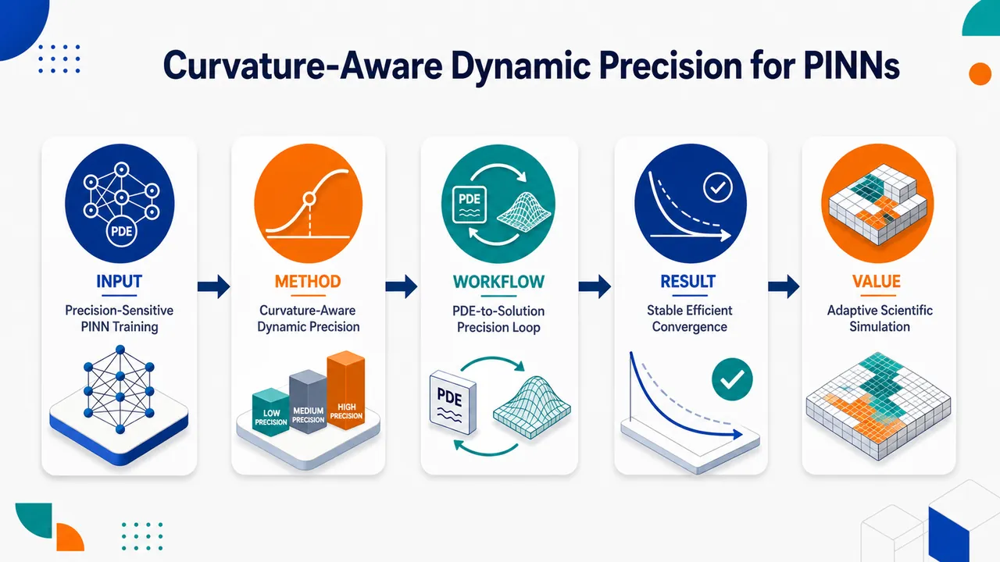
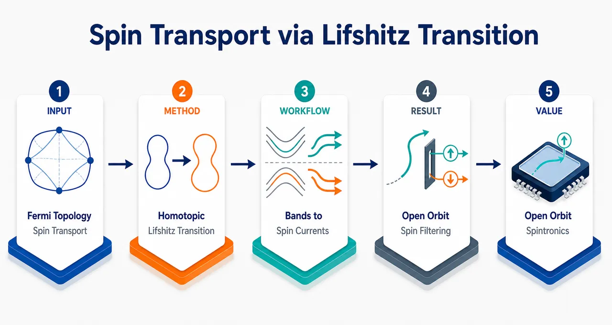
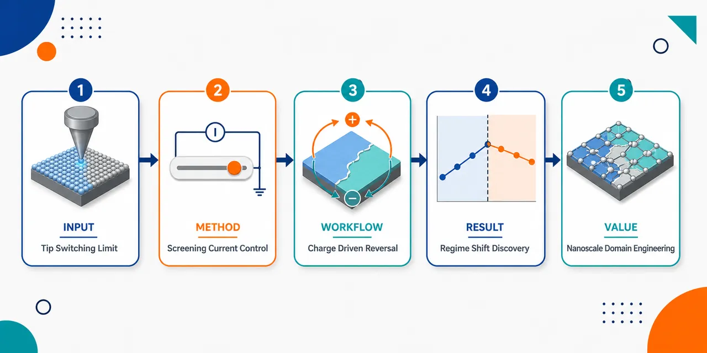
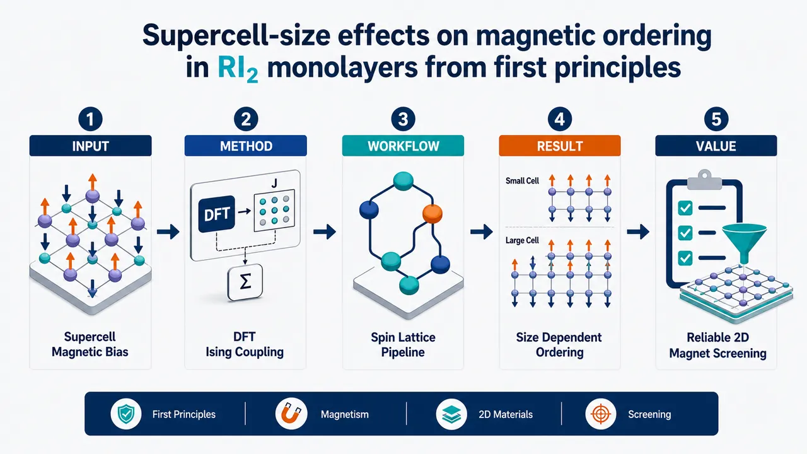
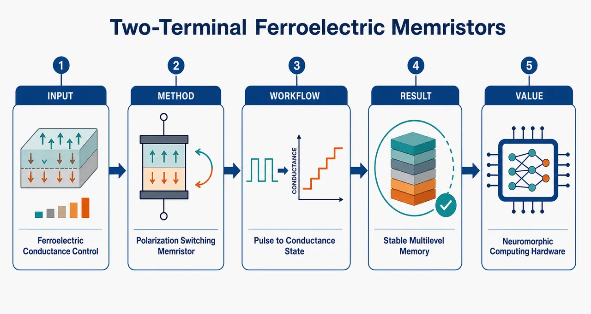

AI × Science 文献日报 2026/06/04
聚焦 AI × 物理 / 化学 / 材料交叉方向，自动过滤明显偏题的医学、教育与社会科学内容，并按主题重新排版，便于快速深读。
AI | 物理 | 化学 | 材料 | 交叉学科 | arXiv | 预印本追踪
原始候选 236 篇中，已剔除 0 篇明显偏离主线的内容，并从剩余 236 篇主线相关文献中精选 60 篇进入日报页，优先保留 AI × 物理 / 化学 / 材料交叉与关键计算方法工作。
核心关注（ML × ferro / 凝聚态）
8 篇本日实质进展集中在“生成式材料发现”和“物理约束学习”两条线：扩散模型开始直接瞄准光电流铁电体，可与 NbOI2、BaTiO3 等极化光伏候选的高通量筛选衔接。高熵合金储氢工作把 ANN、DFT 与实验热力学闭环，用成分—氢化物形成热关系替代单纯枚举，强化了凝聚态材料优化中的可逆热力学约束。多篇 PINN 工作围绕刚性 PNP、电荷双层、多尺度异质性和动态精度，给铁电畴壁、离子迁移、缺陷电化学等强耦合 PDE 问题提供了可迁移的训练诊断。相比 CrI3、CrSBr 磁性层状体系中常用的 DFT+U、equivariant GNN、MACE、NEP 原子势路线，今日论文更偏连续场与候选生成，原子级自旋—晶格势能面学习仍是缺口。
-
01机器学习优化室温储氢高熵合金Machine learning via artificial neural networks coupled with density functional theory and experiments for thermodynamic optimization of high-entropy alloys for hydrogen storage at room temperature
📄 摘要：面向室温储氢高熵合金，耦合人工神经网络、DFT 与实验热力学数据，筛选成分空间以优化氢化物形成热力学，目标是兼顾高熵合金组成灵活性与可逆储氢条件。
💡 亮点：ANN、DFT 与实验联合优化 HEA 储氢热力学。
📐 方法要点：ANN 联合 DFT 与实验热力学，筛选储氢高熵合金成分。
🔗 相关工作关联：呼应高熵合金成分优化、DFT 热力学、主动学习材料筛选。
💡 对你方向的启示：可借鉴于铁电固溶体和磁性合金的多组分相稳定性优化。
-
02高维概率建模的可分概率PINNSPLIT-PINN: Separable Probability Learning Technique via Physics-Informed Neural Networks for High-Dimensional Probabilistic Modeling
📄 摘要：SPLIT-PINN 用物理信息神经网络表示多晶金属小尺度空间异质性，将材料状态场纳入宏观行为概率描述，面向高维概率建模和空间异质性的低样本表征。
💡 亮点：SPLIT-PINN 将多晶异质性嵌入宏观概率模型。
📐 方法要点：SPLIT-PINN 分离概率表示空间异质场与宏观响应分布。
🔗 相关工作关联：呼应随机场建模、多晶塑性、物理信息不确定性量化。
💡 对你方向的启示：适合处理铁电陶瓷晶粒取向、局域应变和畴结构的低样本统计。
-
03复空间实约束神经网络容量Shortcomings and capacities of real-constrained neural networks in complex spaces
📄 摘要：分析复假设类中预激活取实约束与完全复预激活的存储容量差异，通过临界容量处 Gardner 体积比较给出渐近容量比，揭示实约束在复空间学习中的能力损失。
💡 亮点：给出复网络实预激活约束的渐近容量比。
📐 方法要点：用 Gardner 体积比较实约束与全复神经网络容量。
🔗 相关工作关联：呼应复值神经网络、神经量子态、波函数与频域学习。
💡 对你方向的启示：建模复序参量、磁振子或电子波函数时应避免过强实值约束。
-
04扩散模型发现光电流铁电体Diffusion–Model–Driven Discovery of Ferroelectrics for Photocurrent Applications
📄 摘要：采用扩散模型驱动铁电材料发现，目标性质为光电流应用相关的铁电响应与光伏/光电转换潜力；题名指向生成式模型在功能铁电体候选筛选中的应用。
💡 亮点：扩散生成模型用于筛选光电流铁电候选体。
📐 方法要点：扩散生成模型面向光电流铁电体候选发现与性质筛选。
🔗 相关工作关联：呼应生成式晶体设计、铁电光伏、极性材料高通量筛选。
💡 对你方向的启示：可把极化、带隙、位移电流和稳定性作为联合约束生成候选。
-
05刚性泊松-能斯特-普朗克PINN基准A Systematic Benchmark of Physics-Informed Neural Network Architectures for the Stiff Poisson-Nernst-Planck System: Adaptive LossWeighting and Multi-Scale Resolution
📄 摘要：系统比较 PINN 架构求解刚性 Poisson-Nernst-Planck 方程，关注电荷密度前因子导致的极端系数比和电双层尖锐边界层，评估自适应损失权重与多尺度分辨策略。
💡 亮点：PNP 刚性方程基准暴露 PINN 多尺度边界层难题。
📐 方法要点：系统基准 PINN 求解刚性 PNP，比较自适应权重与多尺度策略。
🔗 相关工作关联：呼应离子输运、电双层、电化学界面和漂移扩散方程求解。
💡 对你方向的启示：对铁电薄膜氧空位迁移、离子门控磁性和界面电荷建模直接有用。
-
06短时洪水预报的物理信息学习Physics-Informed Machine Learning for Short-Term Flood Prediction
📄 摘要：将物理信息机器学习用于短时洪水预测，针对纯数据模型在数据稀缺条件下易违反水文约束的问题，把水文物理规律并入学习框架以提升预报一致性。
💡 亮点：物理约束缓解少数据洪水预报的不守恒问题。
📐 方法要点：把水文守恒和物理约束嵌入短时洪水预测模型。
🔗 相关工作关联：呼应物理约束时序预测、守恒律学习、数据稀缺外推。
💡 对你方向的启示：提示凝聚态时序建模需显式加入能量、质量、电荷或对称性约束。
-
07PINN的曲率感知动态精度Curvature-aware dynamic precision approach for physics-informed neural networks
📄 摘要：提出曲率感知动态精度训练策略，针对 PINN 求解 PDE 时优化对数值精度和损失地形敏感的问题，按曲率信息调整计算精度以改善病态训练稳定性。
💡 亮点：用损失曲率动态调节 PINN 数值精度。
📐 方法要点：按损失曲率动态调整 PINN 数值精度，缓解病态训练。
🔗 相关工作关联：呼应混合精度训练、PINN 优化病态、多尺度 PDE 求解。
💡 对你方向的启示：适合铁电畴壁、相场动力学和强梯度界面问题的稳定训练。
-
08复合衬垫污染迁移的PINN建模Physics-Informed Neural Network Modeling of Biodegradable Contaminant Transport through GCL/SL Composite Liners
📄 摘要：构建双域 PINN 描述 GCL/SL 复合衬垫中可降解污染物迁移；薄 GCL 采用稳态对流-弥散-生物降解方程，SL 区域与界面耦合用于刻画屏障传输。
💡 亮点：双域 PINN 耦合 GCL/SL 中可降解污染迁移。
📐 方法要点：双域 PINN 耦合 GCL/SL 区域，求解降解污染物迁移。
🔗 相关工作关联：呼应多区域 PDE、界面连续条件、反应-扩散-对流系统。
💡 对你方向的启示：可迁移到铁电/电极异质界面中的缺陷扩散与反应边界建模。
今日摘要
总览：今日条目集中在机器学习驱动的材料设计与自旋—铁电量子材料：人工神经网络联合密度泛函理论和实验筛选室温储氢高熵合金，扩散生成模型寻找光电流铁电体，导数约束学习交换—相关泛函，主动学习核化分子动力学与通用机器学习势用于硅锗超晶格、铀锆液态合金和熔点计算。凝聚态主线覆盖交错磁性、二维范德瓦耳斯铁磁体和铁电开关：钌氧化物中的非相对论自旋流磁阻、 kagome 交错磁体的轨道通量激活贝里曲率、锶钕铜氧化物无限层铜酸盐的反铁磁量子临界、碲化铁锗与碲化铁镓的近藤晶格和超快退磁、锡硫族化物少层铁电畴工程共同出现。
热点：材料智能发现 → 把密度泛函理论、实验热力学数据、扩散生成模型、导数约束泛函学习和主动学习分子动力学串联起来 → 典型条目包括室温储氢高熵合金优化、光电流铁电体生成式筛选、铁钼金属间化合物小数据学习、硅锗超晶格极端相干热输运和铀锆液态合金黏度模拟。交错磁性与拓扑自旋输运 → 利用自旋劈裂但净磁矩为零的能带、轨道通量、开口费米面和表面平带来产生贝里曲率、自旋过滤、持久自旋流和非常规自旋霍尔磁阻 → 典型条目包括 kagome 交错磁体、钌氧化物、三维超导交错磁体以及交错磁性—超导历史综述。低维铁电、二维磁体与神经形态器件 → 通过铁电衬底调控单层过渡金属硫族化物激子劈裂，利用扫描探针下筛选电流限制铁电翻转，外延控制少层锡硫族化物厚度—应变—畴结构，并把两端铁电忆阻器、畴壁神经元和量子化突触连接到类脑硬件 → 典型体系包括单层二硫族化物、少层锡硫族化物、碲化铁锗、碲化铁镓和碲化铁锗五元层状铁磁体。物理约束神经网络与可微模拟 → 面向刚性泊松—能斯特—普朗克方程、高维概率建模、等离子体碰撞算符、不可达边界扩散贝叶斯反演和未知探针叠层相干衍射，核心做法是自适应损失权重、多尺度分辨率、曲率感知动态精度、可分概率学习和神经伽辽金归一化流。
今日文献
60 篇 · 20 含图深析-
01
📊 含图深析
💡 亮点：ANN、DFT 与实验联合优化 HEA 储氢热力学。
📖 展开分析 + 配图
研究问题如何在庞大的高熵合金组成空间中，快速找到适合室温储氢的合金成分，使其具备合适的氢化/脱氢热力学性能，避免传统实验逐一试错的高成本与低效率。创新方法将人工神经网络机器学习模型与密度泛函理论计算和实验数据耦合，用 DFT 与实验结果共同训练预测模型，建立“成分—氢化热力学性能”的映射，实现对高熵合金储氢热力学的快速优化筛选。工作流程输入高熵合金元素组成与已有实验/DFT 热力学数据；构建并训练人工神经网络模型；预测候选合金的氢化热力学参数；在大组成空间中筛选接近室温吸放氢条件的优选成分；输出适合室温储氢的高熵合金候选体系。关键结果机器学习模型能够基于有限 DFT 与实验数据预测高熵合金氢化热力学趋势，显著加快候选成分筛选，帮助锁定具有更优室温吸放氢热力学条件的合金组合。应用价值为室温固态储氢材料设计提供高通量智能筛选工具，可减少实验试错、降低研发成本，加速高熵合金储氢材料在氢能存储与清洁能源系统中的应用。第一部分：核心概览（Overview）
可解析材料显示，该研究把人工神经网络（ANN）、密度泛函理论（DFT）与实验验证耦合，用于设计室温储氢用 AB 型高熵合金 TixNb2-xVCrMnFe（x = 0.5–2.0）。核心贡献在于以热力学目标——氢化物形成焓——为优化指标，预测并验证 Ti 富集可使形成焓降至适合室温可逆储氢的 −25 至 −39 kJ/mol 区间。该工作处于高熵合金储氢、机器学习辅助材料设计与第一性原理筛选的交叉前沿，强调数据驱动预测、ab initio 计算和实验闭环验证的一体化框架。
---
第二部分：结构化快速回顾
《Machine learning via artificial neural networks coupled with density functional theory and experiments for thermodynamic optimization of high-entropy alloys for hydrogen storage at room temperature》（None，）
背景
高熵合金（HEAs）因成分空间巨大、元素可调性强，被视为有潜力的储氢材料体系。关键瓶颈不在于能否吸氢，而在于能否获得适合室温可逆吸放氢的热力学稳定性，尤其是合适的氢化物形成焓。摘要明确指出：*"High-entropy alloys (HEAs) have received considerable attention for hydrogen storage because of their compositional flexibility; however, designing HEAs with optimal thermodynamics is critical."*
方法
研究采用人工神经网络（ANN）与密度泛函理论（DFT）联合筛选，并设计了新的 AB-type TixNb2-xVCrMnFe（x = 0.5–2.0） 高熵合金体系，其中 A 位元素为 Ti、V、Nb，B 位元素为 Cr、Mn、Fe。原文给出：*"This study employs machine learning via artificial neural networks (ANN) and density functional theory (DFT) to design a novel AB-type TixNb2-xVCrMnFe (x = 0.5-2.0) high-entropy system for hydrogen storage at ambient temperature (A: Ti, V and Nb, and B: Cr, Mn and Fe)."*
结果
ANN 与 DFT 均预测，随着 Ti 含量增加，氢化物形成焓持续降低并进入负值区间。摘要表述为：*"Both ANN and DFT predict that the hydride formation enthalpy decreases to negative values with increasing the titanium content."* 当 x > 1.5 时，有两种合金的焓值进入 −25 至 −39 kJ/mol 的室温储氢适宜范围：*"Two alloys with x > 1.5 are predicted to achieve enthalpies within the -25 to -39 kJ/mol range, making them appropriate for room-temperature hydrogen storage."*
讨论
Ti 富集提升氢化物热力学稳定性，使体系从不利或弱有利的氢化趋势转向适合室温储氢的负焓区间。ANN 和 DFT 给出一致趋势，说明该体系中的组成—热力学关系具有可学习性与可计算验证性。实验结果进一步显示预测具有可靠性：*"Experiments demonstrate good agreement with the enthalpy predictions, with the Ti-rich alloys showing reversible hydrogen storage with fast kinetics at room temperature."*
局限
可用文本未提供完整实验细节，包括样本量 n、ANN 网络结构、训练集规模、特征工程、损失函数、交叉验证方法、DFT 交换关联泛函、超胞尺寸、k 点网格、收敛阈值、压力-组成等温线数据、循环寿命、P 值或误差条。能够确认的定量信息仅包括 x = 0.5–2.0、x > 1.5、以及目标形成焓区间 −25 至 −39 kJ/mol。
结论
ANN、DFT 与实验的闭环证明，Ti-rich TixNb2-xVCrMnFe 高熵合金具备室温可逆储氢潜力。研究提出了一个可推广框架，用于筛选和优化高熵氢化物材料。摘要总结为：*"These results provide a framework for reliable use of data analysis and ab initio calculations to explore high-entropy hydrides as hydrogen storage materials."*
---
第三部分：逐章节冷凝解析（Section-by-Section Condensing）
可解析材料仅包含 Abstract 与 arXiv 元数据；未提供 Introduction、Methods、Results、Discussion、Conclusion 等正文原始章节。以下严格依据已给出的原始文本，不补造章节、不虚构数值、不编造引文。
---
Abstract
#### High-entropy alloys are compositionally flexible hydrogen-storage candidates
高熵合金（HEAs）被定位为储氢材料的重要候选体系，根本原因在于其成分自由度高，可通过多主元组合调节晶体结构、电子结构、氢结合能、相稳定性和平台压力。摘要中的核心依据是：*"High-entropy alloys (HEAs) have received considerable attention for hydrogen storage because of their compositional flexibility"*。这里的 compositional flexibility 指多元素近等原子或可变比例设计带来的巨大材料空间，不同于传统二元或三元金属氢化物的有限调控维度。
#### Thermodynamic optimization is the central design challenge
储氢性能的关键不是单纯吸氢量，而是热力学适配性。若氢化物形成焓过负，材料放氢困难；若形成焓不够负，材料吸氢驱动力不足。摘要明确指出设计瓶颈为：*"however, designing HEAs with optimal thermodynamics is critical."* 该句将研究目标锁定在热力学优化，尤其是与室温可逆储氢相关的氢化物形成焓。
#### ANN and DFT are coupled for rational alloy design
研究方法将机器学习人工神经网络（ANN）与密度泛函理论（DFT）联合使用，形成数据驱动预测与第一性原理计算之间的互补关系。摘要给出：*"This study employs machine learning via artificial neural networks (ANN) and density functional theory (DFT)"*。ANN 适合从既有材料数据中学习组成—性能映射；DFT 适合基于电子结构计算验证候选成分的热力学趋势。二者耦合降低盲目实验筛选成本。
#### A new AB-type TixNb2-xVCrMnFe system is proposed
目标合金体系为 AB-type TixNb2-xVCrMnFe，其中 x = 0.5–2.0。摘要原文为：*"to design a novel AB-type TixNb2-xVCrMnFe (x = 0.5-2.0) high-entropy system for hydrogen storage at ambient temperature"*。该式表明 Ti 与 Nb 在组成上存在耦合替换关系：Ti 增加时 Nb 相应减少，总体维持 TixNb2-x 的 A 位组成框架。研究范围覆盖从相对 Nb-rich 到 Ti-rich 的连续调控。
#### A-site and B-site elements are explicitly defined
该体系被定义为 AB 型，其中 A 位元素为 Ti、V、Nb，B 位元素为 Cr、Mn、Fe。摘要给出明确说明：*"(A: Ti, V and Nb, and B: Cr, Mn and Fe)"*。A 位元素通常更易形成稳定氢化物，Ti、V、Nb 均为强亲氢早期过渡金属；B 位元素 Cr、Mn、Fe 则倾向调节相稳定性、电子结构和氢化物稳定性，使整体形成焓不过度负化。
#### Increasing titanium content drives hydride formation enthalpy downward
ANN 与 DFT 得出一致预测：随着 Ti 含量增加，氢化物形成焓降低并转为负值。摘要原文为：*"Both ANN and DFT predict that the hydride formation enthalpy decreases to negative values with increasing the titanium content."* 这表明 Ti 是该体系中增强氢化物形成热力学驱动力的关键成分。由于 TiH₂ 等钛氢化物通常具有较强稳定性，Ti 富集导致形成焓更负在化学直觉上合理。
#### Two Ti-rich alloys fall into the room-temperature target enthalpy window
研究预测 x > 1.5 的两个合金进入 −25 至 −39 kJ/mol 的氢化物形成焓窗口。摘要给出：*"Two alloys with x > 1.5 are predicted to achieve enthalpies within the -25 to -39 kJ/mol range"*。该区间被视为适合室温储氢的热力学范围，因为它通常对应于吸氢和放氢之间较好的平衡：形成焓足够负以保证吸氢，但又不至于过度稳定而难以在室温附近释放氢。
#### The target enthalpy range is linked to room-temperature hydrogen storage suitability
−25 至 −39 kJ/mol 被明确关联到室温储氢适用性。摘要的完整判断为：*"making them appropriate for room-temperature hydrogen storage."* 这说明筛选标准并非单纯追求最低形成焓，而是追求一个热力学“甜点区间”。形成焓过低可能导致放氢温度升高，形成焓过高或接近零则会导致储氢不稳定。
#### Experiments validate the enthalpy predictions
实验与预测结果一致，支撑 ANN 和 DFT 的可靠性。摘要写道：*"Experiments demonstrate good agreement with the enthalpy predictions"*。虽然可用文本未给出具体实验方法、误差范围或焓值拟合方式，但该句明确显示实验不仅用于性能展示，也用于验证计算与机器学习预测。
#### Ti-rich alloys show reversible hydrogen storage at room temperature
Ti-rich alloys 在室温下表现出可逆储氢。摘要原文为：*"with the Ti-rich alloys showing reversible hydrogen storage"*。可逆性是储氢材料应用的核心指标，意味着材料能够在吸氢和放氢之间循环，而非形成不可逆或过度稳定氢化物。
#### Hydrogen sorption kinetics are fast at room temperature
Ti 富集样品不仅热力学合适，还表现出快速动力学。摘要中给出：*"with fast kinetics at room temperature."* 这意味着吸放氢速率达到可观水平，但可用文本未提供具体动力学参数，例如达到 90% 容量所需时间、速率常数、活化能或循环衰减数据。
#### The broader framework combines data analysis and ab initio calculations
最终贡献被概括为一种可推广方法论：使用数据分析与ab initio 计算探索高熵氢化物。摘要总结为：*"These results provide a framework for reliable use of data analysis and ab initio calculations to explore high-entropy hydrides as hydrogen storage materials."* 这里的重点不是单个合金成分，而是建立从预测、计算到实验验证的闭环流程。
---
arXiv metadata
#### The work is classified under condensed matter materials science
学科归类为 Condensed Matter > Materials Science，具体 arXiv 分类为 cond-mat.mtrl-sci。元数据给出：*"Subjects: Materials Science (cond-mat.mtrl-sci)"*。该定位说明研究主要贡献属于材料设计、热力学优化与储氢功能材料，而非纯机器学习方法学或纯凝聚态理论。
#### The preprint was submitted on 3 June 2026
提交时间为 2026 年 6 月 3 日。元数据写明：*"[Submitted on 3 Jun 2026]"*，版本记录为：*"[v1] Wed, 3 Jun 2026 12:29:14 UTC"*。该信息说明当前可见版本为初始 arXiv 版本。
#### A related journal DOI is associated with the work
元数据列出相关 DOI：*"Related DOI : https://doi.org/10.1016/j.ijhydene.2026.155840"*。该 DOI 指向 International Journal of Hydrogen Energy 相关资源，暗示该研究可能已有期刊版本或关联出版记录，但未提供期刊正文内容，不能据此扩展未给出的实验或模型细节。
---
第四部分：深度理解与语言支持（Understanding & Nuance）
1. 术语解析
#### Hydride formation enthalpy
Hydride formation enthalpy 指金属或合金与氢反应形成氢化物时的焓变，通常以 kJ/mol H₂ 或 kJ/mol H 表示，具体单位需看正文定义。摘要中的表达为：*"hydride formation enthalpy decreases to negative values"*。负值表示形成氢化物在热力学上放热且有驱动力；但储氢材料并非越负越好。室温可逆储氢通常需要适中负值，使吸氢和放氢都可实现。
#### Optimal thermodynamics
Optimal thermodynamics 不是“最稳定”，而是“稳定性适中”。摘要中写道：*"designing HEAs with optimal thermodynamics is critical."* 在储氢语境中，过强的金属—氢结合会导致放氢困难，过弱则吸氢困难。因此 optimal 指面向应用温度和压力窗口的平衡状态。
#### AB-type high-entropy system
AB-type 表示合金体系可被理解为 A、B 两类元素位点或元素族群构成。摘要定义为：*"(A: Ti, V and Nb, and B: Cr, Mn and Fe)"*。A 组 Ti/V/Nb 多为早期过渡金属、亲氢性较强；B 组 Cr/Mn/Fe 调节热力学稳定性与结构。这里的 AB-type 不必然等同于严格有序的 AB 晶体结构，需结合正文 XRD 或结构模型才能判定。
#### Artificial neural networks coupled with DFT
ANN coupled with DFT 表示机器学习预测与第一性原理计算联合使用。摘要表达为：*"machine learning via artificial neural networks (ANN) and density functional theory (DFT)"*。ANN 的优势是快速探索大成分空间；DFT 的优势是提供基于量子力学的能量与结构判断。coupled 强调二者不是孤立存在，而是共同参与材料筛选。
#### Reversible hydrogen storage with fast kinetics
Reversible hydrogen storage 强调吸氢后可放氢，且过程可重复；fast kinetics 强调吸放氢速率快。摘要写道：*"reversible hydrogen storage with fast kinetics at room temperature."* 这两个词分别对应储氢材料的循环可用性和实际操作效率。热力学合适并不自动保证动力学快，因此该结果具有应用意义。
---
2. 疑难查证
#### 为什么氢化物形成焓不能越负越好？
储氢材料的目标是“能吸、能放、温压条件温和”。形成焓越负，氢化物越稳定，吸氢越容易，但放氢所需温度或真空条件越苛刻。形成焓接近零，放氢容易，但吸氢驱动力不足，材料可能在室温常压附近难以储氢。因此 −25 至 −39 kJ/mol 代表一种经验上的热力学平衡区间。摘要中的判断是：*"enthalpies within the -25 to -39 kJ/mol range, making them appropriate for room-temperature hydrogen storage."*
#### 为什么增加 Ti 会让形成焓变负？
Ti 属于强亲氢元素，能够形成稳定 Ti-H 键。TixNb2-xVCrMnFe 中增加 Ti 含量，相当于增强体系中强氢化物形成元素的比例，从而降低整体氢化物形成焓。摘要给出的趋势是：*"the hydride formation enthalpy decreases to negative values with increasing the titanium content."* 从高年级博士生视角看，这是由局域化学环境、d 电子占据、金属—氢键强度以及晶格膨胀能共同决定的结果；Ti 增多通常强化金属—氢相互作用，但也需要 B 位元素避免氢化物过度稳定。
#### ANN 与 DFT 为什么需要同时使用？
ANN 能从已有数据中学习规律，但可能受训练集偏差、外推风险和特征选择影响。DFT 可从电子结构层面计算候选体系能量，但在高熵合金巨大成分空间中计算成本较高。二者结合可以形成“快筛 + 物理验证”的流程：ANN 缩小候选空间，DFT 提供能量依据，实验验证最终性能。摘要概括为：*"a framework for reliable use of data analysis and ab initio calculations to explore high-entropy hydrides"*。
#### “AB-type” 与“high-entropy”是否矛盾？
不矛盾。AB-type 描述元素分组或结构化设计逻辑，high-entropy 描述多主元混合带来的构型熵特征。TixNb2-xVCrMnFe 中 A 位包含 Ti、V、Nb，B 位包含 Cr、Mn、Fe，仍然是多元素体系。摘要明确将其称为：*"a novel AB-type TixNb2-xVCrMnFe (x = 0.5-2.0) high-entropy system"*。真正是否形成单相高熵结构，需要正文中的 XRD、SEM/EDS、相分析和热处理信息支持；可用文本未提供这些数据。
---
第五部分：创新评估与关联（Synthesis & Novelty）
1. 创新性判断
#### 从经验试错转向 ANN–DFT–experiment 闭环优化
过去 2–5 年高熵合金储氢研究中，常见策略包括经验选取亲氢元素、调节价电子浓度、改变原子尺寸失配、通过 XRD/PCT 实验比较不同配方。该研究的新颖性在于将人工神经网络和DFT并行用于热力学筛选，再通过实验验证预测。摘要中体现为：*"machine learning via artificial neural networks (ANN) and density functional theory (DFT)"* 与 *"Experiments demonstrate good agreement with the enthalpy predictions"*。这解决了传统高熵储氢材料设计中成分空间过大、实验筛选效率低的问题。
#### 以室温储氢热力学窗口作为明确优化目标
该研究没有仅追求高容量或相稳定，而是直接优化氢化物形成焓，并将目标锁定在 −25 至 −39 kJ/mol。摘要指出：*"Two alloys with x > 1.5 are predicted to achieve enthalpies within the -25 to -39 kJ/mol range"*。这比单纯报道某个高熵合金可吸氢更进一步，因为它把材料设计与室温可逆储氢所需的热力学条件直接挂钩。
#### 提出 Ti 可调控的 AB 型 TixNb2-xVCrMnFe 新体系
新体系 TixNb2-xVCrMnFe（x = 0.5–2.0） 提供了一个可连续调节 Ti/Nb 比例的模型平台。摘要称其为：*"a novel AB-type TixNb2-xVCrMnFe (x = 0.5-2.0) high-entropy system"*。这种设计使研究能够识别 Ti 含量与形成焓之间的系统关系，而非孤立比较多个无序配方。
#### 同时满足热力学与动力学要求
许多储氢材料只在热力学或容量上表现突出，但动力学慢或室温不可逆。该研究强调 Ti-rich 合金在室温下具有可逆储氢和快速动力学：*"Ti-rich alloys showing reversible hydrogen storage with fast kinetics at room temperature."* 这将候选材料从理论上可行推进到更接近实际应用。
#### 前人未充分解决的问题
高熵储氢材料长期面临三个核心难题：
- 成分空间过大，实验枚举不现实；
- 形成焓难以精准调控，容易过稳或不稳；
- 计算、机器学习和实验之间缺少闭环验证。
该研究通过 ANN 快速预测、DFT 热力学验证、实验确认 Ti-rich 合金室温可逆储氢，建立了更可靠的筛选范式。摘要中的总括性表述为：*"These results provide a framework for reliable use of data analysis and ab initio calculations to explore high-entropy hydrides as hydrogen storage materials."*
-
02
📊 含图深析
💡 亮点：双域 PINN 耦合 GCL/SL 中可降解污染迁移。
📖 展开分析 + 配图
研究问题如何快速、准确地模拟可降解污染物穿过 GCL/SL 复合衬垫的迁移过程：既要刻画薄层 GCL 中的稳态对流、弥散与降解，又要描述 SL 土衬垫中的瞬态扩散迁移，实现跨层耦合预测。创新方法提出双域物理信息神经网络，将复合衬垫拆分为 GCL 薄层域与 SL 土层域；在神经网络损失函数中嵌入稳态对流–弥散–降解方程和瞬态传输方程，并通过界面连续条件连接两域，形成无需大量标注数据的物理约束污染物迁移模型。工作流程输入衬垫几何、材料参数、边界条件、初始条件和污染物降解参数；分别构建 GCL 稳态 PINN 与 SL 瞬态 PINN；用控制方程残差、边界/初始条件残差和 GCL–SL 界面通量与浓度连续约束共同训练；输出不同时刻、不同深度的污染物浓度分布与穿透曲线。关键结果双域 PINN 能同时捕捉薄 GCL 的快速稳态传输和 SL 的时间演化污染羽，生成连续的浓度场预测；相比单一域近似或纯数据驱动模型，该方法更适合处理 GCL/SL 厚度差异大、物理机制不同、数据稀缺的复合衬垫迁移问题。应用价值可用于垃圾填埋场、污染场地阻隔系统和地下水防护工程中复合衬垫的长期防渗性能评估，帮助预测可降解污染物突破时间、优化 GCL/SL 厚度与材料参数，并降低昂贵长期渗透实验和数值网格模拟的依赖。第一部分：核心概览
该研究提出用于 GCL/SL 复合衬垫中可生物降解污染物迁移 的 双域物理信息神经网络框架，将薄层 GCL 视为稳态对流–弥散–生物降解域，将下伏 土衬垫 SL 视为瞬态迁移域。核心贡献在于比较 软约束 Std-PINN 与 硬约束 H-PINN，证明硬嵌入边界/初始条件可显著降低误差，并扩展至 SL 降解半衰期反演识别，体现 PINN 在环境岩土工程污染物迁移预测中的方法学价值。
---
第二部分：结构化快速回顾
《Physics-Informed Neural Network Modeling of Biodegradable Contaminant Transport through GCL/SL Composite Liners》（None，）
背景
GCL/SL 复合衬垫 是填埋场、污染场地阻隔系统中的关键结构，污染物在其中受到 对流、弥散、生物降解、边界耦合 等多机制控制。传统解析解和有限元方法可作为参照，但在多参数、不完整观测、反演问题中灵活性有限。
方法
构建 two-domain physics-informed neural network framework。薄层 GCL 采用 steady-state advection-dispersion-biodegradation formulation；下伏 soil liner / SL 采用 transient transport domain。比较两类 PINN：
- Std-PINN：通过损失函数惩罚项软约束边界和初始条件；
- H-PINN：将选定边界条件和初始条件直接嵌入试探解。
结果
Std-PINN 可捕捉整体穿透曲线，但早期迁移阶段误差较大，高渗滤液水头下更明显。H-PINN 显著提升预测稳定性和精度：
- MAE 从 Std-PINN 的约 0.058–0.067 降至 H-PINN 的约 0.011–0.023；
- MRE 从约 9.10%–19.16% 降至约 2.08%–3.14%。
讨论
硬约束通过结构性满足部分边界/初始条件，减少了惩罚权重调参和优化冲突，使网络更专注于满足控制方程与剩余未知关系。tanh 激活函数 与优化后的网络结构在参数分析中表现最佳。
局限
可见材料未给出完整章节、公式推导、网络层数、训练样本点数量、优化器设置、损失权重、有限元网格配置、具体水头工况、噪声水平数值和反演实验细节，难以进一步验证可重复性与泛化范围。
结论
H-PINN 在 GCL/SL 复合衬垫污染物迁移建模中优于标准软约束 PINN，并可用于有限观测条件下的 SL 生物降解半衰期反演，在环境岩土工程中的正问题预测与反问题参数识别均具有应用潜力。
---
第三部分：逐章节冷凝解析
可用材料仅包含 arXiv 题名、摘要和元数据；未提供论文 PDF 正文、章节标题、公式、图表、表格和参考文献。以下按可见原始内容中的可确认部分解析，避免虚构章节与数据。
---
Abstract
#### Two-domain PINN framework targets coupled GCL/SL contaminant transport
研究对象是 GCL/SL composite liner system 中的可生物降解污染物迁移。模型采用 双域 PINN 框架，不是把复合衬垫简化为单一均质介质，而是区分薄层 GCL 与下伏 SL 的不同传输特征。摘要明确表述为：*"This study develops a two-domain physics-informed neural network framework for contaminant transport through a GCL/SL composite liner system"*。这一设定体现出对复合衬垫层状结构、物理机制差异和界面耦合的建模关注。
#### GCL is treated as steady-state while SL is modeled as transient
薄层 GCL 使用 steady-state advection-dispersion-biodegradation formulation，下伏 soil liner 使用 transient transport domain。该划分反映了 GCL 厚度小、响应快，而 SL 厚度更大、时间演化更显著的工程物理假设。摘要中的关键原句为：*"the thin GCL layer is treated using a steady-state advection-dispersion-biodegradation formulation and the underlying soil liner is modeled as a transient transport domain"*。这说明模型同时包含 对流、弥散、生物降解 和 瞬态扩散/迁移过程。
#### Two PINN formulations are benchmarked against analytical and finite-element references
研究比较了两种 PINN 形式，并以 analytical reference solutions 与 finite-element reference solutions 作为基准。摘要表述为：*"Two formulations are evaluated against analytical and finite-element reference solutions under different leachate-head conditions"*。这里的评估对象不仅是单一工况，而是包含不同 leachate-head conditions，意味着模型测试覆盖不同水力梯度或对流强度。
#### Std-PINN relies on soft constraint enforcement
第一种模型是 standard PINN with soft constraint enforcement，即 Std-PINN。其核心思想是在损失函数中加入控制方程残差、边界条件残差、初始条件残差等惩罚项，通过优化使这些条件近似满足。摘要原文为：*"a standard PINN with soft constraint enforcement (Std-PINN)"*。软约束的潜在问题在于不同损失项尺度不一致，可能造成训练权衡困难，尤其在边界/初始约束强、物理残差复杂时更明显。
#### H-PINN embeds selected boundary and initial conditions directly into trial solutions
第二种模型是 hard-constrained PINN / H-PINN，将部分条件直接写入神经网络试探解结构中，而不是完全依赖惩罚项。摘要表述为：*"a hard-constrained PINN (H-PINN), in which selected boundary and initial conditions are embedded directly into the trial solutions"*。这种策略的数学意义是缩小可搜索函数空间，使候选解天然满足部分物理条件，从而减少优化器在不可行解空间中的搜索。
#### Std-PINN captures breakthrough behavior but struggles at early stage
Std-PINN 能够捕捉总体 breakthrough behavior，即污染物浓度随时间穿透衬垫系统的整体演化趋势；但在 early transport stage 误差更大。摘要给出直接证据：*"The Std-PINN captures the overall breakthrough behavior but shows larger errors during the early transport stage"*。早期阶段通常浓度梯度陡峭、边界影响强、时间尺度敏感，因此对 PINN 的边界/初始条件处理能力要求更高。
#### Higher leachate heads amplify Std-PINN errors because advection becomes more pronounced
高渗滤液水头下，advective transport 更强，Std-PINN 的误差更突出。摘要原句为：*"particularly under higher leachate heads where advective transport becomes more pronounced"*。这一结果符合污染物迁移理论：水头越高，水力梯度越大，对流通量越强，污染物前锋移动更快，数值或神经网络模型更难准确捕捉尖锐时空变化。
#### H-PINN lowers optimization burden from penalty-based constraint enforcement
H-PINN 的优势之一是降低软惩罚约束带来的优化负担。摘要直接指出：*"The H-PINN reduces the optimization burden associated with penalty-based constraint enforcement"*。这意味着 H-PINN 不必完全依靠损失权重平衡边界、初始与 PDE 残差，而是通过试探解构造把一部分物理条件内生化。
#### H-PINN improves prediction accuracy and stability
H-PINN 提供更准确、更稳定的浓度预测。摘要原文为：*"provides more accurate and stable concentration predictions"*。稳定性在 PINN 场景中通常包括训练过程波动更小、不同工况误差更一致、早期与后期预测不易出现异常偏差等含义。可见材料未提供训练重复次数、方差或置信区间，因此稳定性的统计细节无法核验。
#### MAE decreases from about 0.058–0.067 to about 0.011–0.023
精度提升通过 MAE 明确量化。Std-PINN 的 MAE 约为 0.058–0.067，H-PINN 降至约 0.011–0.023。摘要原句为：*"lowering the MAE from approximately 0.058-0.067 for the Std-PINN to about 0.011-0.023 for the H-PINN"*。按区间粗略比较，H-PINN 的平均绝对误差约降低到 Std-PINN 的 16%–40% 水平，改进幅度显著。
#### MRE decreases from about 9.10%–19.16% to about 2.08%–3.14%
相对误差也显著下降。Std-PINN 的 MRE 约为 9.10%–19.16%，H-PINN 降至约 2.08%–3.14%。摘要原句为：*"while reducing the MRE from approximately 9.10%-19.16% to about 2.08%-3.14%"*。这说明 H-PINN 不只是降低绝对浓度误差，也改善了相对尺度上的预测一致性。
#### Parametric analyses identify tanh activation and optimized architecture as best-performing
参数分析显示，tanh activation function 与优化网络结构组合表现最佳。摘要表述为：*"Parametric analyses confirm that the H-PINN with the tanh activation function and an optimized network structure provides the best predictive accuracy"*。tanh 在 PINN 中常优于 ReLU 类激活函数，因为它平滑且可高阶求导，更适合自动微分计算 PDE 残差。可见材料未给出具体比较的激活函数、层数、神经元数、学习率或训练轮次。
#### H-PINN is extended to inverse modeling of SL degradation half-life
研究进一步将 H-PINN 用于反问题，即从有限浓度观测中识别 SL degradation half-life。摘要原文为：*"The H-PINN is further extended to inverse modeling for identifying the SL degradation half-life from limited concentration observations"*。这体现了 PINN 的重要优势：未知物理参数可作为可训练变量，与网络权重一起通过观测数据和物理约束联合优化。
#### Inverse modeling converges reliably and tolerates low-to-moderate noise
反演实验显示 H-PINN 能向预设半衰期收敛，并在低至中等观测噪声下保持可接受鲁棒性。摘要原句为：*"showing reliable convergence toward prescribed values and acceptable robustness under low-to-moderate observation noise"*。这里的 prescribed values 意味着反演测试可能使用合成数据或预设真值；但摘要未提供噪声比例、观测点数量、反演误差、收敛步数或重复实验统计。
---
Bibliographic metadata
#### The paper is an arXiv preprint in machine learning
条目归类于 Computer Science > Machine Learning，arXiv 编号为 2606.04392，主题标记为 cs.LG。元数据给出：*"arXiv:2606.04392 (cs)"* 与 *"Subjects: Machine Learning (cs.LG) ; Computation and Language (cs.CL)"*。尽管应用对象属于环境岩土工程，投稿分类显示其方法学定位偏向机器学习与 PINN 建模。
#### Submission date and authorship are identifiable
提交日期为 3 Jun 2026，作者包括 Dong Li, Yapeng Cao, Haiping Zhao, Shutong Han。元数据中列出：*"Submitted on 3 Jun 2026"*，以及 *"Authors: Dong Li , Yapeng Cao , Haiping Zhao , Shutong Han"*。DOI 显示为 arXiv DataCite DOI，状态为待注册：*"https://doi.org/10.48550/arXiv.2606.04392"* 与 *"arXiv-issued DOI via DataCite (pending registration)"*。
---
第四部分：深度理解与语言支持
1. 术语解析
#### Physics-informed neural network / PINN
PINN 指将物理控制方程、边界条件、初始条件等嵌入神经网络训练过程的模型。它不只是用数据拟合函数，而是通过自动微分计算 PDE 残差，使预测结果受物理规律约束。语境中 PINN 用于污染物迁移方程，处理 advection-dispersion-biodegradation 过程。
#### Soft constraint enforcement
Soft constraint enforcement 指通过损失函数惩罚项让模型“尽量满足”边界条件、初始条件和物理方程。它的微妙之处在于“soft”不是不重要，而是条件并非结构性严格满足；约束满足程度取决于损失权重、优化过程和网络表达能力。Std-PINN 的早期误差较大，可能与这种软约束机制有关。
#### Hard-constrained PINN / H-PINN
Hard-constrained PINN 指把某些边界或初始条件直接写进试探解形式，使网络输出天然满足这些条件。与 soft constraint 相比，hard constraint 更像数学构造上的“可行解空间限制”。该研究中的 H-PINN 将 selected boundary and initial conditions 嵌入 trial solutions，因此减少惩罚项驱动的优化负担。
#### Breakthrough behavior
Breakthrough behavior 在污染物迁移中指污染物穿过阻隔系统后，某一位置浓度随时间上升、发展并趋于稳定或衰减的过程。它通常用 breakthrough curve 表示，是评价衬垫阻隔性能和污染物到达时间的核心指标。Std-PINN 能抓住整体 breakthrough，但早期阶段误差较大。
#### Leachate head
Leachate head 指渗滤液水头，代表作用在衬垫上的水力驱动力。水头越高，水力梯度越强，advective transport 越明显。语境中，高 leachate head 使污染物迁移更受对流控制，增加模型预测难度。
---
2. 疑难查证
#### 为什么薄 GCL 可用稳态模型，而 SL 要用瞬态模型？
GCL 通常很薄，厚度远小于下伏 soil liner。在数学上，薄层内部浓度分布可能较快达到准稳态，因此可用稳态对流–弥散–降解方程描述其通量传递。SL 更厚，污染物在其中传播需要较长时间，浓度场随时间变化显著，因此采用瞬态模型更合理。
这种处理不是说 GCL 中完全没有时间效应，而是基于尺度分离：
- GCL 的特征响应时间短；
- SL 的储存容量和传输路径更大；
- 系统整体穿透过程主要由 SL 的时间演化控制。
#### 硬约束为什么能提升 PINN 表现？
软约束 PINN 的损失函数通常类似：
[
L = LPDE + łambdaBCLBC + łambdaICLIC + łambdadₐₜₐLdₐₜₐ
]
问题在于不同损失项尺度可能相差很大。若 (łambdaBC) 太小，边界条件满足不好；若太大，PDE 残差优化受阻。硬约束通过构造：
[
hatc(x,t)=g(x,t)+h(x,t)N_θ(x,t)
]
使 (g(x,t)) 自动满足边界/初始条件，而 (h(x,t)) 在边界或初始时刻为零。这样无论神经网络 (N_θ) 输出什么，(hatc) 都满足指定条件。优化器不必“学习”这些条件，只需学习剩余自由度。
#### 为什么早期迁移阶段更难预测？
污染物迁移早期常具有：
- 浓度前锋陡峭；
- 初始条件影响强；
- 边界通量变化敏感；
- 对流主导时数值 Peclet 效应更明显；
- 浓度值可能接近零，导致相对误差放大。
因此，即使整体 breakthrough curve 形状正确，早期阶段仍可能出现较大 MAE 或 MRE。摘要中 Std-PINN 在早期阶段误差更大，符合这一机制。
#### 半衰期反演为什么适合 PINN？
SL degradation half-life 控制生物降解速率。若半衰期未知，传统方法通常需要多次正向模拟加参数优化。PINN 可把半衰期或降解系数作为可训练参数，利用有限浓度观测和 PDE 残差共同约束：
[
łambda = fracłn 2t₁/₂
]
其中 (t₁/₂) 是半衰期，(łambda) 是一阶降解速率常数。观测数据少时，纯数据驱动模型容易不适定；PINN 的物理残差可提供额外约束，提高反演稳定性。
---
第五部分：创新评估与关联
1. 创新性判断
#### Application-specific novelty: PINN for biodegradable contaminant transport in GCL/SL composite liners
近几年 PINN 已广泛用于地下水流、溶质迁移、反应扩散、热传导和多孔介质问题，但针对 GCL/SL composite liners 的可生物降解污染物迁移建模仍相对专门。该研究的应用创新在于把 PINN 引入环境岩土工程中的复合衬垫污染物阻隔问题，并区分 GCL 稳态域 与 SL 瞬态域。
#### Methodological novelty: two-domain formulation rather than single-domain surrogate modeling
相较于简单用神经网络拟合浓度场，该工作采用 two-domain PINN framework，对不同衬垫层使用不同控制方程。这比单域 PINN 更贴近工程系统的层状结构和界面传输机制，解决了复合衬垫中“薄层 GCL 与厚层 SL 时间尺度不同”的建模问题。
#### Constraint-handling novelty: hard-constrained trial solution improves early-stage and high-head predictions
过去许多 PINN 工作依赖软惩罚约束，常面临边界条件难以满足、损失权重敏感、早期瞬态误差大等问题。该研究显示 H-PINN 将选定边界和初始条件嵌入试探解后，MAE 从 0.058–0.067 降至 0.011–0.023，MRE 从 9.10%–19.16% 降至 2.08%–3.14%。这一点直接回应了 PINN 在工程迁移问题中训练不稳定和约束失配的痛点。
#### Inverse-problem novelty: degradation half-life identification from limited concentration observations
污染物衬垫迁移中的 降解半衰期 往往难以准确测定，且对长期风险预测影响很大。H-PINN 被扩展到有限观测条件下反演 SL degradation half-life，并在低至中等噪声下保持可接受鲁棒性。相对于只做正向预测，这一步将模型推进到参数识别与场地校准层面。
#### Practical significance: bridges analytical/FEM references and data-scarce environmental prediction
解析解通常依赖理想化条件，有限元方法需要网格、参数和边界完整定义。H-PINN 在参考解验证基础上，还可利用有限观测反演参数，适合污染场地中数据稀缺、参数不确定的场景。其领域地位更接近“工程物理模型与机器学习反演之间的桥接方法”，而非单纯黑箱预测模型。
#### Remaining uncertainty in novelty strength
完整正文未给出参考文献、对比模型、实验设计细节和消融结果，尚不能精确判断其相对于 2021–2026 年所有 PINN 多孔介质迁移研究的绝对原创程度。基于摘要可确认的新意主要集中在：
- GCL/SL 复合衬垫专门场景；
- 稳态 GCL + 瞬态 SL 的双域 PINN；
- 硬约束试探解改善污染物穿透预测；
- SL 生物降解半衰期反演。
-
03
📊 含图深析
💡 亮点：SPLIT-PINN 将多晶异质性嵌入宏观概率模型。
📖 展开分析 + 配图
研究问题如何在多晶金属中刻画小尺度空间异质性的随机分布，并将这种高维概率场有效嵌入宏观材料行为模型，从而实现可计算、可解释的高维概率建模。创新方法提出 SPLIT-PINN：一种基于物理信息神经网络的可分离概率学习技术，将复杂空间异质性拆解为可学习的概率场，并用物理约束引导神经网络学习高维分布，形成“微观随机性—宏观响应”的连接。工作流程输入多晶金属微观空间异质性数据或随机场描述；将异质性表示为高维概率场；通过可分离概率结构降低建模复杂度；在 PINN 中嵌入材料物理方程与宏观行为模型；训练网络学习概率分布与物理响应映射；输出高维概率模型及对应宏观材料行为预测。关键结果SPLIT-PINN 能将小尺度空间异质性以概率场形式纳入宏观材料模型，在高维概率分布学习中兼顾物理一致性与计算可行性，为复杂多晶材料随机行为预测提供新的建模框架。应用价值可用于多晶金属材料的不确定性量化、可靠性评估和宏观力学性能预测，帮助工程中从微观组织随机性出发评估材料行为，支持材料设计、性能优化与失效风险分析。第一部分：核心概览 (Overview)
SPLIT-PINN 将高维联合概率密度演化建模为仅含漂移项的 Liouville 方程，并通过边缘漂移—残差修正分解、正交约束、可学习人工黏性与 RAD 自适应采样稳定反演未知漂移场。核心地位在于把多晶金属材料微结构状态的空间异质性从确定性场描述转化为可预测的概率输运模型，针对高维 PDF 反演中病态性、非唯一性与训练不稳定提出结构化 PINN 解法。
---
第二部分：结构化快速回顾
《SPLIT-PINN: Separable Probability Learning Technique via Physics-Informed Neural Networks for High-Dimensional Probabilistic Modeling》（None，）
背景
多晶金属材料在极端载荷下呈现强烈的空间异质性，应力、位错密度、塑性应变率等状态场会随变形历史演化，并可能触发损伤与失效。传统小尺度高保真模拟计算代价高，难以直接嵌入大尺度模型；随机扩散型 Fokker–Planck 模型又可能把未解析动力学误解释为噪声。
方法
采用概率密度函数 PDF描述材料状态场异质性，以无扩散 Liouville 方程表示联合 PDF 的确定性输运。SPLIT-PINN 先学习联合 PDF，再反演漂移场；核心为将漂移分解为一维边缘漂移与高维残差修正项，并用正交约束保证残差不污染边缘动力学。
结果
可用文本显示框架经过基准验证，并应用于多晶状态演化数据，包括 von Mises stress、dislocation density 与 equivalent plastic strain rate。摘要声明模型在单一数据集训练后可对多个未见多晶实现进行联合与边缘 PDF 前向预测，并与参考 PDF 定量比较显示准确和稳健。
讨论
Liouville 模型适合随机性主要来自初始条件或系统参数变异的情形；多晶材料中的随机性来自微结构空间异质性，因而可由初始状态变量分布捕捉。SPLIT-PINN 与 DR-PDEE 等方法的区别在于不假设底层物理控制方程，而是直接从 PDF 数据反演未知漂移场。
局限
可用文本尚未给出完整数值结果、误差表、消融实验或失败案例。方法层面存在对 PDF 估计质量、边界衰减或无通量条件、人工黏性正则强度、RAD 采样策略以及高维积分近似精度的依赖。
结论
SPLIT-PINN 提供一种面向高维概率输运反演的结构化 PINN 框架，在多晶金属材料状态 PDF 预测中具有物理一致性、可解释性与跨实现泛化潜力。
---
第三部分：逐章节冷凝解析 (Section-by-Section Condensing)
Abstract
- Probabilistic representation of microstructural heterogeneity
多晶金属材料的小尺度空间异质性被表示为概率密度函数 PDFs，用于把微结构变异性和状态演化纳入宏观材料描述；英文证据为 *"Spatially heterogeneous material state fields are represented using probability density functions (PDFs), providing a principled statistical description of microstructural variability and state evolution across different computational polycrystalline realizations."* 这一设定把局部状态场从单一确定性函数扩展为跨统计体积元的分布对象。
- Inverse Liouville transport model
概率模型被表述为带未知漂移项的 Liouville equation 反问题，而非预设漂移函数；英文证据为 *"The framework is built on the inverse identification of a probabilistic transport model, formulated as a Liouville equation with an unknown drift term."* 关键任务不是求解已知 PDE，而是从 PDF 数据中识别输运速度场。
- SPLIT-PINN components for high-dimensional inverse learning
SPLIT-PINN 的三项核心机制为边缘修正漂移分解、正交约束和基于残差的自适应训练；英文证据为 *"This method incorporates a marginal-correction drift decomposition, orthogonality constraints, and residual-based adaptive training to enhance well-posedness, numerical stability, and physical consistency without imposing restrictive parametric assumptions."* 这些机制分别对应可识别性、数值稳定性与物理一致性。
- Material-state applications
应用对象包含三个具体材料状态变量：von Mises stress、dislocation density、equivalent plastic strain rate；英文证据为 *"the framework is applied to physical computational datasets describing the evolution of polycrystalline microstructural states, including von Mises stress, dislocation density, and equivalent plastic strain rate."*
- Generalization across unseen polycrystal realizations
漂移场在单一数据集上学习后，用于多个未见多晶实现的联合与边缘 PDF 前向预测；英文证据为 *"The learned Liouville model, trained on a single dataset, is subsequently used in forward predictions of the temporal evolution of joint and marginal PDFs for multiple unseen polycrystal realizations."* 这体现出跨统计体积元泛化，而非单实例拟合。
---
1 Introduction
- Polycrystalline metals as heterogeneous crystalline aggregates
多晶金属由许多单晶晶粒组成，晶体结构决定弹性模量和位错运动路径；英文证据为 *"Polycrystalline metallic materials are generally aggregate composites composed of single crystals (grains) with a chemical composition of the pure or alloy material."* 以及 *"The crystallographic structure and atom type prescribe elastic moduli and locations that are best suited to facilitate the motion of dislocations."*
- Small-scale features drive macroscopic heterogeneity
原子、晶体结构、金属间化合物等微结构特征可成为位错运动障碍，导致强烈空间异质响应；英文证据为 *"Some materials and alloys are designed to include specific atomic or intermetallic features which provide physical barriers to dislocation motion; adding additional spatial heterogeneity."*
- Extreme loading amplifies heterogeneous deformation and stress
极端机械载荷下，变形和应力空间异质性可显著放大，并成为损伤和失效起始的主要因素；英文证据为 *"During conditions of extreme mechanical loading, the spatial heterogeneity of deformation and stress can be very large and the primary contributor to the initiation of damage and failure processes."*
- Relevant physical processes span atom-to-grain length scales
关键机制包括dislocation glide、intergranular interaction、deformation twinning、structural phase transformation、pore/crack nucleation，尺度从原子到晶粒；英文证据为 *"physical processes (i.e. dislocation glide, intergranular interaction, deformation twinning, structural phase transformation, pore/crack nucleation) occurring at very small length scales (e.g., atom to grain size)."*
- High-fidelity small-scale tools are too expensive for large-scale embedding
小尺度高保真模拟虽必要，但计算成本阻止其直接用于大型结构尺度理论；英文证据为 *"These appropriately high fidelity tools at small length scales for metallic materials remain computationally expensive and therefore cannot be fully engaged within large length scale theories of the same physical processes."*
- Probabilistic modeling addresses unresolved heterogeneities
大尺度材料行为描述需要处理未解析小尺度异质性，因此引入概率框架；英文证据为 *"The unresolved small-scale heterogeneities within larger length scale theories have motivated the adoption of probabilistic modeling frameworks in large length scale descriptions of material behaviors."*
- Fokker–Planck noise may compensate missing dynamics rather than represent physics
Fokker–Planck 方程中的扩散项常用于描述未解析机制引发的波动，但这种噪声可能只是对遗漏动力学的补偿；英文证据为 *"the added noise is often a compensation for the missed dynamics and not a physical description of the fluctuations."*
- Higher-dimensional state descriptions reduce apparent stochasticity
随材料状态变量空间维度增加，未解析变量影响减弱，有效动力学更接近确定性，因而减少对任意扩散项的需求；英文证据为 *"As the dimensionality of the material state variable space increases, the effect of the unresolved variables diminishes, and hence the effective dynamics become progressively more deterministic, thereby reducing the need for ad hoc diffusion terms."*
- Liouville PDE as diffusion-free probabilistic transport
无扩散 Liouville PDE 被用于描述系统状态 PDF 的演化，尤其适合随机性来自初始条件而非外源噪声的情形；英文证据为 *"a probabilistic model formulated as a Liouville partial differential equation (PDE) with only a drift term may be sufficient to describe the evolution of system states, particularly their PDFs."*
- PINNs are powerful but difficult for high-dimensional inverse drift estimation
PINN 能结合数据与物理规律，但高维反问题尤其是联合 PDF 漂移估计病态严重；英文证据为 *"While PINNs have shown remarkable success in forward simulations, their application to inverse problems, especially in high-dimensional settings, remains challenging."* 以及 *"Inverse estimation of drift terms governing the evolution of joint PDFs is particularly ill-conditioned, and directly applying PINNs often suffers from instability or poor generalization."*
- SPLIT-PINN improves well-posedness and robustness through decomposition
SPLIT-PINN 的目标是直接从 PDF 数据重构高维漂移场，并利用分解、RAD 和正交约束改善反问题；英文证据为 *"we propose SPLIT-PINN (Separable Probability Learning via Physics-Informed Neural Networks), a systematic framework for reconstructing high-dimensional drift fields directly from PDF data."*
- Mesh-free PINNs mitigate curse of dimensionality
网格型联合 PDF 方法在高维下遭遇维数灾难；SPLIT-PINN 通过无网格 PINN 与边缘—修正分解减轻指数网格增长；英文证据为 *"traditional mesh-based approaches for joint PDFs remain susceptible to the curse of dimensionality as their dimension grows."* 以及 *"the mesh-free nature of PINNs avoids exponential grid scaling, while the marginal-correction decomposition reduces the learning complexity by firstly handling a set of 1D marginal problems before correcting for joint dependencies via a residual drift term."*
- Difference from GE-GDEE, GV-GDEE, DR-PDEE, DR-PDE-Net, and MO-MPINN
相关方法通常利用已知控制方程推导低维响应量 PDF，而 SPLIT-PINN 不假设底层物理控制方程，直接反演未知漂移场；英文证据为 *"no governing equations of the underlying physical system are assumed; instead, the drift field in the Liouville equation is entirely unknown and inferred directly from data, resulting in an inverse problem rather than a forward modeling approach."*
- Primary objective remains joint PDF reconstruction and evolution
与关注标量响应边缘 PDF 的 DR-PDEE 方法不同，SPLIT-PINN 目标是多状态变量联合 PDF；英文证据为 *"the primary objective is the reconstruction and evolution of the joint PDF over multiple state variables, whereas DR-PDEE-based methods focus on marginal PDFs of selected scalar quantities."*
- Four stated contributions
四项贡献包括：使用 PDF 描述多晶状态异质性；用 SPLIT-PINN 反演 Liouville 模型并预测 PDF 演化；通过边缘—修正分解稳定高维 PDF 动力学学习；在真实多晶状态数据上验证联合 PDF 重构和新统计体积元预测能力。英文证据为 *"The main contributions of this paper are summarized as follows"*，随后列明 *"Probabilistic descriptions, in particular the PDFs, are used..."*、*"The probabilistic model, in the form of the Liouville equation, is inferred by SPLIT-PINN..."*、*"SPLIT-PINN, tailored for high-dimensional inverse problems, incorporates a marginal-correction decomposition..."*、*"The efficacy of SPLIT-PINN is demonstrated on real datasets of polycrystal state evolution..."*
---
2 Liouville Model and Formulation
- State variables follow deterministic dynamics with random initial conditions
设状态变量维度为 (n_d)，动力系统为 (dotX(t)=A(X(t),t))，随机性仅来自初始向量 (X⁰)；英文证据为 *"the state variables ((n_d)-dimension) are assumed to follow an (n_d)-dimensional stochastic dynamical system with random initial conditions and a deterministic vector operator"*。
- State vector and temporal domain definition
状态向量定义为 (X(t)=(X₁₍ₜ₎,dots,Xₙ_d(t))^T)，时间域为 (T=[t₀,t_f])，漂移算子为 (A=(A₁,dots,Aₙ_d)^T)；英文证据为 *"(X(t)=(X₁(t),dots,Xₙd(t))T) denotes the time-dependent (n_d×1) vector of state variables, varying over the temporal domain (T=[t₀,t_f])"*。
- Initial condition captures distributional variability
初始条件 (X(t)|ₜ₌ₜ_₀=X⁰)，其中 (X⁰) 是随机向量，用于捕捉初始状态变量的分布差异；英文证据为 *"(mathbfX⁰) is a stochastic vector, capturing the distributional variability of the state variables at the initial time."*
- Joint PDF domain construction
联合 PDF 为 (PX(x,t))，其中 (x=(x₁,dots,xₙ_d)^TinØmega)，域 (Ømega=Ømega₁×Ømega₂×ḑots×Ømegaₙ_d) 由各状态变量的一维域笛卡尔积构成；英文证据为 *"(Ømega=Ømega₁×Ømega₂×ḑots×Ømegaₙ_d), which is constructed from each one-dimensional spatial domains (Ømegaᵢ) associated with each state variable (Xᵢ)."*
- Liouville equation governs probability transport
联合 PDF 满足一阶守恒型 PDE：(partialₜPX+sumᵢpartialₓ_ᵢ[AᵢPX]=0)，在 (Ømega_T=Ømega× T) 上通过确定性漂移输运概率不确定性；英文证据为 *"which is a first-order PDE convecting the probabilistic uncertainty via the deterministic operator (A) in the drift term over the spatiotemporal domain (Ømega_T=Ømega× T)."*
- Total probability preservation
Liouville 方程描述联合 PDF 时空演化并保持总概率；英文证据为 *"Eq. (3), known as the Liouville equation, describes the spatiotemporal evolution of the joint PDF while preserving the total probability."*
- Polycrystal-specific initial PDF
初始 PDF (PX^₀(x⁰⁾) 来自多晶模拟，并随不同多晶实现变化；英文证据为 *"corresponds to the initial joint PDF of the state variables considered, obtained from the polycrystal simulation (§ 5), and varies across different polycrystal realizations."*
---
3 SPLIT-PINN Methodology
- Drift inference from discrete PDF observations
目标是从离散时空点观测的 PDF 反演漂移向量场 (A(x,t))；观测表示为 (PX,ⱼ=P_X(xⱼ,tⱼ₎)，其中 (j=1,ḑots,N_O)，(xⱼᵢₙRⁿ_d)。英文证据为 *"our objective is to infer the drift vector field (A(x,t)) from (PX(x,t)) observed at discrete spatial-temporal points."*
- Learned drift enables forward prediction under new initial conditions
一旦 (A) 被确定，Liouville 方程可用于不同初始条件下的联合 PDF 时间演化预测；英文证据为 *"Once (A(x,t)) is determined, we can use the probabilistic model in Eq. (3) to predict the temporal evolution of the joint PDF (PX(x,t)) with different initial conditions."*
- Sequential training avoids competing loss balancing
为减少多个竞争损失函数的权衡开销，先训练数据驱动 NN 近似 (PX)，再用 PINN 学习 (A)；英文证据为 *"To alleviate the significant overhead incurred in balancing multiple competitive loss functions, we first construct a neural network (NN) to approximate (PX(x,t)) using the available data samples, before using PINNs for learning (A(x,t))."*
- PDF network architecture and constraints
PDF 网络 (NNP_X) 使用时空点作为输入，含四个隐藏层；输出需满足非负性与归一化：(PXge0)，(int_Ømega PXdx=1,forall t)。英文证据为 *"The network has a two-dimensional input for the space-time points and four hidden layers."* 以及 *"Its output is enforced to satisfy normalization and non-negativity constraints."*
- Positivity and normalization enforcement
非负性通过最后一层 sigmoid activation function 实现，归一化通过损失中的残差软约束实现；英文证据为 *"the positivity preservation is enforced by employing a sigmoid activation function in the last layer, while the normalization condition... is imposed softly through a residual term in the loss function."*
- Data loss and normalization loss
数据损失为 (Ldₐₜₐ=frac1N_Osumⱼ[P_XNN(xⱼ,tⱼ₎₋PX,ⱼ]²)，归一化残差为 (Rₙₒᵣₘ(tⱼ₎₌Δ xsumq₌₁Nₜ_ⱼP_XNN(x_q,tⱼ₎₋₁)，其中 (Δ x=prodᵢⁿ_dΔᵢ)。英文证据为 *"More specifically, the data loss is defined as..."* 与 *"The normalization condition... is imposed softly through the residual."*
- Direct PINN drift estimation becomes unstable in high dimensions
直接用 PDE 残差训练 (NN_A) 在高维联合 PDF 中困难，尤其缺少 (A) 的边界和初始条件时；英文证据为 *"directly estimating (A) through a PINN becomes increasingly challenging as the complexity and dimensionality of the joint PDF grow, especially with insufficient data about (A), such as boundary and initial conditions."*
- Localized or discontinuous PDFs worsen training
若 (PX) 高度局域或有不连续结构，会显著损害稳定性和精度；英文证据为 *"This challenge is even more pronounced if (PX(x,t)) is highly localized or exhibits discontinuities within the domain, which can adversely affect training stability and accuracy."*
---
3.1 Decomposition via Conditional Drift
- Marginal dynamics derived by integrating out other variables
对 Liouville 方程在 (Ømegaₛₑₜₘᵢₙᵤₛ ᵢ) 上积分，得到第 (i) 个状态变量边缘 PDF 的动力学；英文证据为 *"we obtain the dynamics of the marginal PDF of (xᵢ) by integrating variables (xₖₖ≠ ᵢ) in (3) over the spatial domain (Ømega)."*
- Boundary terms vanish under decay or no-flux conditions
当 (PX) 在无穷远足够快衰减，或满足无通量边界条件时，除目标维度外的边界积分消失；英文证据为 *"Under sufficiently fast decay at infinity, or no-flux boundary conditions on (partialØmegaₛₑₜₘᵢₙᵤₛ ᵢ) (very mild assumptions valid in probabilistic distributions), the boundary integral vanishes, recovering the closed 1D marginal transport equation."*
- Marginal PDF definition
第 (i) 维边缘 PDF 定义为 (pᵢ₍ₓᵢ,t)=intØₘₑgₐₛₑₜₘᵢₙᵤₛ ᵢPX(x,t)dxₛₑₜₘᵢₙᵤₛ ᵢ)；英文证据为 *"substituting the marginal PDF: (pᵢ₍ₓᵢ,t)=intØₘₑgₐₛₑₜₘᵢₙᵤₛ ᵢPX(x,t),dxₛₑₜₘᵢₙᵤₛ ᵢ)"*。
- Effective marginal drift as conditional expectation-like quantity
有效边缘漂移 (barAᵢ₍ₓᵢ,t)=frac1pᵢ₍ₓᵢ,t)intØₘₑgₐₛₑₜₘᵢₙᵤₛ ᵢAᵢ₍ₓ,t)P(x,t)dxₛₑₜₘᵢₙᵤₛ ᵢ)，定义条件为 (pᵢ₍ₓᵢ,t)≠0)。英文证据为 *"we define the effective marginal drift (barAᵢ₍ₓ,t)) as..."*。该形式等价于给定 (xᵢ) 后 (Aᵢ) 对其余变量的概率加权平均。
- Drift decomposed into marginal and residual terms
每个漂移分量分解为 (Aᵢ₍ₓ,t)=barAᵢ₍ₓᵢ,t)øtimes1Øₘₑgₐₛₑₜₘᵢₙᵤₛ ᵢ+Rᵢ₍ₓ,t))，其中 (Rᵢ) 捕捉对其他变量的依赖；英文证据为 *"(Rᵢ) being a correction term that captures the interaction and dependency of (Aᵢ₍ₓ,t)) on the remaining variables (xₙₑg ᵢ)."*
- Orthogonality constraint prevents residual from altering marginal drift
(Rᵢ) 满足 (intØₘₑgₐₛₑₜₘᵢₙᵤₛ ᵢRᵢ₍ₓ,t)P(x,t)dxₛₑₜₘᵢₙᵤₛ ᵢ=0)，保证残差项不贡献边缘漂移；英文证据为 *"This constraint ensures that the correction term (Rᵢ) does not contribute to the marginal drift and is used in the training of the PINN model to enforce consistency between the dynamics of joint and marginal PDFs."*
- High-dimensional Liouville inverse problem is non-unique and unstable
仅凭部分信息的 Liouville 方程不足以唯一识别跨维依赖，导致严重非唯一性和不稳定；英文证据为 *"The Liouville equation with only partial information does not provide sufficient constraints to uniquely identify cross-dimensional dependencies, leading to severe non-uniqueness and instability in high dimensions."*
- Orthogonality removes null-space ambiguities
从函数分析角度，正交约束去除与边缘不变性相关的 Liouville 算子零空间成分，并正则化反问题；英文证据为 *"the orthogonality constraint acts as a condition removing null-space components of the Liouville operator associated with marginal invariances, and regularizing the inverse problem."*
- Hierarchical formulation improves stability and data efficiency
SPLIT-PINN 将原始病态联合学习问题转化为分层受约束且更可识别的形式；英文证据为 *"SPLIT-PINN transforms the original ill-posed joint learning problem into a hierarchically constrained and identifiable formulation, significantly improving stability and data efficiency."*
---
3.2 Physics-informed learning of marginal and correction terms
- Marginal PDFs computed from learned joint PDF
每个 (pᵢ₍ₓᵢ,t)) 先由 Eq. (11) 和已训练的联合 PDF 网络 (NN_PX) 计算；英文证据为 *"we first compute each marginal PDF (pᵢ₍ₓᵢ,t)) using Eq. (11) and the NN model (NN_PX(x,t)) previously trained to approximate (PX(x,t))."*
- PINN infers marginal drift using one-dimensional marginal transport PDE
对每个维度训练 PINN，以 Eq. (12) 的边缘 PDF 控制方程反演 (barAᵢ₍ₓᵢ,t))；英文证据为 *"we train a PINN based on the governing equation (12) to inversely infer the marginal drift term (barAᵢ(xᵢ,t))."*
- Marginal loss over collocation points
边缘损失定义为 (Lₘₐᵣg=frac1N_csumⱼ₌₁N_c|Rₘₐᵣg(xᵢ^j,tᵢ^j;θ_PX,θbₐᵣAᵢ)|²)，其中 (N_c) 为配点数量；英文证据为 *"where (Rₘₐᵣg) denotes the residual of the PDE (12) for the (i)-th marginal PDF over (N_c) collocation points."*
- Second-stage network learns correction term
完成所有 (i=1,łdots,n_d) 的边缘漂移后，第二阶段网络学习 (R(x,t))，用完整 Liouville 残差恢复联合结构；英文证据为 *"After repeating this process for all (i=1,łdots,n_d), we train a second-stage neural network to learn the correction term (bmR(x,t)) by minimizing the residual of the full Liouville equation."*
- Full Liouville residual uses marginal drift plus correction
完整残差形式为 (partialₜPX+nablaḑot((barA+R)PX)=0)，其中 (barA=[barAᵢ])、(R=[Rᵢ])；英文证据为 *"where (barA=[barAᵢ]) and (bmR=[Rᵢ]) for (i=1,łdots,n_d)."*
- Correction loss combines Liouville residual and orthogonality penalty
修正项损失包括完整 Liouville 残差与正交约束惩罚，权重为 (łambdaₒᵣₜₕ)；英文证据为 *"The physics-informed loss function for training the correction term incorporates both the Liouville residual (19) and the orthogonality constraint (17)."*
- No explicit boundary term for drift network
第二个 NN 不包含显式边界项，因为 (A(x,t)) 在边界和初始时刻没有信息；英文证据为 *"in the second NN, no explicit boundary term is included because no information is available about (A(x,t)) on the boundaries or at the initial time."*
- Lack of drift boundary information causes ill-posedness
漂移边界信息缺失使反问题在维度增长时更加病态；英文证据为 *"This lack of boundary information renders the inverse problem increasingly ill-posed, particularly as the dimensionality grows."*
---
3.3 Interpretability of SPLIT-PINN
- Decomposition improves accuracy
将 (barAᵢ) 与 (Rᵢ) 分离后，一维漂移分量可更高精度估计，因为一维 PINN 训练更稳定、更精确；英文证据为 *"by separating the marginal drift (barAᵢ) from the correction term (Rᵢ), the one-dimensional components of the drift can be estimated with higher accuracy."* 以及 *"training PINNs in one dimension is more stable and precise, enabling finer resolution and better enforcement of physical constraints."*
- Correction term isolates interdimensional interactions
(Rᵢ₍ₓ,t)) 捕捉边缘漂移无法表达的跨维相互作用；英文证据为 *"the correction term (Rᵢ₍ₓ,t)) plays a crucial structural role: it isolates and captures interdimensional interactions that are not captured by the marginal drift."*
- Local dimension-wise effects separated from coupled dynamics
分解使模型显式区分局部单维效应与全局耦合动力学；英文证据为 *"the model explicitly distinguishes between local, dimension-wise effects and global, coupled dynamics, thereby improving the overall structure-awareness of the learned representation."*
- Residual term supports physical interpretation of coupling strength
(Rᵢ) 衡量第 (i) 方向漂移对 (xᵢ) 之外变量的依赖强度；英文证据为 *"The learned correction term (Rᵢ₍ₓ,t)) quantifies how strongly the drift in direction (i) depends on other variables beyond (xᵢ)."*
- Spatial-temporal patterns reveal interaction mechanisms
观察 (Rᵢ) 的时空模式可揭示状态变量间耦合强度和相互作用机制；英文证据为 *"Examining the spatial and temporal patterns of (Rᵢ) can thus reveal the coupling strength and interaction mechanisms between state variables."*
---
3.4 SPLIT-PINN with Learnable Global Artificial Viscosity
- Transport-dominated PDEs can generate numerical instability
无扩散 PDE 在 PINN 或其他数值方法中可能出现伪振荡、不连续或不稳定；英文证据为 *"For a PDE without any diffusion term, its numerical solution through PINN (or other numerical techniques) may develop spurious oscillations, discontinuities, or instability."*
- Artificial viscosity stabilizes training
引入人工黏性作为训练稳定机制，人工黏性系数 (ν) 是自适应标量并在训练中学习；英文证据为 *"To mitigate these issues and stabilize training, an artificial viscosity is introduced into the PINN loss formulation."* 以及 *"an adaptive scalar value for the artificial viscosity coefficient (ν) is learned during the SPLIT-PINN training procedure."*
- Marginal residual augmented by diffusion-like term
边缘残差加入 (-νpartial²pᵢ/partial xᵢ²)，形成 (Rₘₐᵣg,ν)；英文证据为 *"for the marginal PDFs, we have..."* 后给出 (Rₘₐᵣg,ν=Rₘₐᵣg-νfracpartial²pᵢpartial xᵢ²)。
- Correction residual augmented by Laplacian of joint PDF
修正项残差加入 (-νnabla²PX)，形成 (Rcₒᵣᵣ,ν)；英文证据为 *"similarly, for the correction term"* 后给出 (Rcₒᵣᵣ,ν=Rcₒᵣᵣ-νnabla²PX)。
- Viscosity coefficient trained with Adam
(ν) 与神经网络权重和偏置一起通过 Adam 优化器梯度下降更新；英文证据为 *"the artificial viscosity coefficient (ν) is treated as a trainable parameter and updated via gradient descent (using the Adam optimizer) together with the NN parameters (weights and biases)."*
- Viscosity penalty discourages artificial dissipation
黏性惩罚项设为 (Lᵥᵢₛc(ν)=ν²)，系数为 (αᵥᵢₛc)，用于鼓励最小人工耗散；英文证据为 *"This term penalizes large values of (ν) to encourage minimal artificial dissipation."*
- Artificial viscosity is numerical regularization, not physical diffusion
人工黏性主要是数值正则化，并非改变底层物理模型；英文证据为 *"The introduction of the artificial viscosity (diffusion) term serves primarily as a numerical regularization mechanism to stabilize training in transport-dominated regimes, rather than as a modification of the underlying physical model."*
- Drift interpretation in the limit of zero viscosity
从反问题角度，推断漂移在 (ν→0) 极限下对应原始 Liouville 方程漂移；英文证据为 *"the inferred drift corresponds to the drift of the original Liouville equation in the limit as (ν→0)."*
- Empirical learned viscosity scale
经验上学习到的黏性保持很小，量级约为 (10⁻⁵)，说明动力学接近无扩散 Liouville 模型；英文证据为 *"Empirically, we observe that the learned viscosity remains small (order of (10⁻⁵)) due to the imposed penalty."*
---
3.5 Residual-Based Adaptive Distribution (RAD)
- Adaptive sampling targets important probability regions
在学习联合 PDF 时，状态空间中非零概率区域最重要；英文证据为 *"In learning a full joint PDF, regions of the state space with nonzero probabilities are the important ones."*
- Residual identifies poorly learned physics and sharp structures
PDE 残差揭示模型困难区域，如漂移误表示或尖锐结构形成位置；英文证据为 *"The residual of the governing equation reveals where the model is struggling, i.e., where the drift is misrepresented, and/or where sharp structures are forming."*
- RAD reallocates collocation points toward high-residual locations
RAD 根据残差重新分配采样点，使配点集中在物理约束最不满足的位置；英文证据为 *"Residual-Based Adaptive Distribution (RAD) leverages this information in the residual and reallocates sampling points toward the locations where the physics is least satisfied."*
- Adaptive distribution reduces wasted resolution
自适应机制避免模型在已捕捉良好的区域浪费分辨率，并稳定高维学习；英文证据为 *"This adaptive mechanism prevents the model from wasting resolution on already well-captured regions and stabilizes learning in high-dimensional settings where uniform sampling fails to resolve essential features."*
- RAD probability density definition
RAD 新分布为 (π(x)proptofracǎrepsilon^k(x)E[ǎrepsilon^k(x)]+c)，其中 (ǎrepsilon(x)) 为配点处损失函数值，(kge0)、(cge0) 控制高残差强调与平滑；英文证据为 *"RAD defines a new PDF as..."* 以及 *"(k≥0) and (c≥0) are two hyperparameters that control the emphasis on higher residual regions and the smoothing effect, respectively."*
- Specific hyperparameter setting
采用 (k=2)、(c=0)，遵循 Wu et al. (2023)；英文证据为 *"Here, we set (k=2) and (c=0) following discussions in Wu et al. (2023)."*
- Monte Carlo estimate of residual expectation
(E[ǎrepsilon^k(x)]) 通过 Monte Carlo 近似：(frac1Nsumⱼ₌₁^Nǎrepsilon^k(xⱼ₎)；英文证据为 *"which can be approximated numerically using Monte Carlo integration."*
- Available text truncation point
可用内容在 RAD 初始训练流程处中断，仅保留 *"We begin by training the NN on an initial set of collocation points denoted by (S₀). After an initial training phase, we compute the adaptive sampling distri"*，后续 RAD 迭代细节、基准实验、材料数据实验与结论部分未包含在输入文本中。
---
第四部分：深度理解与语言支持 (Understanding & Nuance)
1. 术语解析
- Drift term
Drift term 在随机过程和概率 PDE 中表示状态变量的平均确定性演化速度。在此语境中，它不是噪声或扩散，而是 Liouville 方程中推动 PDF 输运的向量场 (A(x,t))。英文表达 *"the drift term represents the mean deterministic behavior"* 强调其确定性含义。
- Liouville equation
Liouville equation 是无扩散、无源项的概率守恒输运方程。与 Fokker–Planck 方程相比，Liouville 方程没有二阶扩散项，因此适合描述由初始条件不确定性诱发的概率传播，而非持续随机激励导致的扩散。
- Marginal-correction drift decomposition
Marginal-correction drift decomposition 指把高维漂移 (Aᵢ₍ₓ,t)) 拆成只依赖 (xᵢ) 的边缘漂移 (barAᵢ₍ₓᵢ,t)) 和依赖所有变量的修正项 (Rᵢ₍ₓ,t))。微妙之处在于 (Rᵢ) 不是任意残差，而必须对边缘分布正交，避免改变一维边缘动力学。
- Orthogonality constraint
Orthogonality constraint 在这里不是普通欧氏内积意义下的正交，而是以 PDF 为权重、对除 (xᵢ) 外变量积分为零：(intØₘₑgₐₛₑₜₘᵢₙᵤₛ ᵢRᵢP,dxₛₑₜₘᵢₙᵤₛ ᵢ=0)。它相当于要求修正项只表达跨变量耦合，不改变已经学习到的边缘平均漂移。
- Ill-posed inverse problem
Ill-posed inverse problem 指解可能不存在、不唯一或对数据扰动极其敏感。高维 Liouville 漂移反演中，PDF 演化只能约束 (nablaḑot(AP))，无法唯一确定所有 (Aᵢ) 的跨维结构，因此需要分解、正交约束和正则化。
2. 疑难查证
- 为什么无扩散 Liouville 方程可以替代 Fokker–Planck？
Fokker–Planck 适合存在真实随机扰动或未解析自由度造成有效噪声的系统，其扩散项会让 PDF 展宽。多晶材料状态演化中的“不确定性”主要来自不同空间位置、晶粒取向、初始微结构状态的差异；若把足够多状态变量纳入 (X)，系统演化更接近确定性映射。此时 PDF 的变化更像一团概率质量被确定性速度场搬运，而不是被噪声扩散开。因此 Liouville 方程的思想是：随机性在初始分布中，演化规则本身是确定的。
- 为什么只学习完整高维 Liouville 方程会非唯一？
Liouville 方程约束的是 (partialₜP+nablaḑot(AP)=0)。已知 (P) 和 (partialₜP) 时，只能约束通量 (AP) 的散度，而不同向量场 (A) 可能产生相同散度。特别是在高维空间中，存在大量“无散度”或对观测 PDF 演化不可见的方向，导致漂移场不唯一。SPLIT-PINN 先锁定每个维度的边缘平均运动，再让残差只负责耦合结构，相当于先确定可稳健识别的部分，再约束不可识别自由度。
- 正交约束为什么能提高可解释性？
若没有正交约束，修正项 (Rᵢ) 可能同时改变边缘漂移和跨维耦合，导致 (barAᵢ) 与 (Rᵢ) 的含义混乱。加入 (int RᵢP,dxₛₑₜₘᵢₙᵤₛ ᵢ=0) 后，(barAᵢ) 明确表示给定 (xᵢ) 下的平均漂移，(Rᵢ) 明确表示偏离该平均的跨变量依赖。因此 (Rᵢ) 的大小和模式可以被解释为变量间耦合强弱。
- 人工黏性是否破坏物理模型？
人工黏性在训练残差中加入小的扩散项，主要防止 PINN 在尖锐输运前沿附近出现振荡。由于 (ν) 被学习且通过 (ν²) 惩罚压小，目标不是把物理系统改成扩散系统，而是在优化过程中提供弱正则化。若 (ν) 接近 (10⁻⁵)，推断漂移仍可视为接近原始无扩散 Liouville 动力学。
---
第五部分：创新评估与关联 (Synthesis & Novelty)
1. 创新性判断
- 从已知动力学降维预测转向未知漂移反演
近年 GE-GDEE、GV-GDEE、DR-PDEE、DR-PDE-Net、MO-MPINN 等方法通常依赖底层系统控制方程，推导选定响应量的低维 PDF 演化。SPLIT-PINN 的新颖点在于不预设材料微观动力学方程，而是直接从联合 PDF 数据反演 Liouville 漂移场；关键差异由 *"no governing equations of the underlying physical system are assumed"* 明确界定。
- 面向联合 PDF 而非少数标量边缘 PDF
许多概率密度演化方法主要预测低维或标量响应的边缘分布。SPLIT-PINN 目标是多个材料状态变量的联合 PDF 重构与演化，能够保留变量间依赖结构；关键差异由 *"the primary objective is the reconstruction and evolution of the joint PDF over multiple state variables"* 支撑。
- 用边缘—修正分解处理高维反问题病态性
高维 PINN 反演漂移的主要难点不是单纯计算量，而是非唯一性、弱约束和泛化差。SPLIT-PINN 先学习一维边缘输运，再用正交残差恢复耦合，实质上把不可识别的高维反问题拆成稳定的一维问题和受约束的高维修正问题。
- 正交约束引入可解释的耦合分离机制
(Rᵢ) 被约束为不影响边缘漂移，因此其物理含义清晰：只表示变量间耦合和依赖。这区别于普通神经网络残差修正，后者通常缺少明确物理可解释性。
- 可学习人工黏性与 RAD 组合增强输运主导问题稳定性
无扩散 Liouville 方程容易出现尖锐前沿和 PINN 优化不稳定。SPLIT-PINN 同时使用可学习小黏性和高残差区域自适应采样，针对高维概率输运中的局部尖锐结构与采样低效问题提供工程化但物理约束明确的解决方案。
- 材料科学层面的贡献
多晶金属材料微结构状态演化通常以大量空间场或统计量描述。SPLIT-PINN 将 von Mises stress、dislocation density、equivalent plastic strain rate 等状态的空间异质性统一为 PDF 演化问题，并声明可从单一数据集学习后泛化到未见多晶统计体积元，推动材料状态演化从样本级模拟走向概率动力学预测。
-
04
📊 含图深析
💡 亮点：PNP 刚性方程基准暴露 PINN 多尺度边界层难题。
📖 展开分析 + 配图
研究问题刚性 Poisson-Nernst-Planck（PNP）系统中存在极端系数比与纳米级电双层边界层，普通 PINN 难以同时拟合平滑体区域和尖锐边界层；核心问题是：哪类 PINN 架构、损失加权策略和多尺度分辨方案最适合稳定、准确地求解刚性 PNP 方程。创新方法构建面向刚性 PNP 方程的系统化 PINN 基准框架，把不同神经网络架构、adaptive 损失权重和多尺度分辨策略放在同一物理约束任务中对比；Aha 点在于通过动态平衡 PDE 残差、边界条件和多变量耦合损失，让网络注意力自动转向电双层等高误差区域，并用多尺度采样/分辨增强捕捉窄边界层。工作流程输入刚性 PNP 方程、极端物理参数、边界条件与计算区域；构建不同 PINN 架构；计算电势、离子浓度与通量相关的物理残差；引入 adaptive 损失权重动态调节各残差项；结合多尺度分辨或重点区域采样解析电双层；训练后输出 PNP 数值解、误差分布、收敛曲线和架构性能排名。关键结果系统比较显示，单一固定损失权重和普通分辨率容易在边界层附近产生明显误差；自适应损失权重能够改善多方程、多边界条件之间的训练失衡；多尺度分辨策略显著增强对电双层尖锐梯度的捕捉；二者结合可提升刚性 PNP 系统求解的稳定性、精度和收敛表现。应用价值为电化学、离子通道、膜传输、纳米流体和半导体离子输运等涉及强耦合漂移-扩散问题的场景提供可靠的 PINN 选型依据；可减少对高密度网格传统数值求解器的依赖，支持复杂多尺度物理系统的快速建模、误差诊断和物理一致预测。第一部分：核心概览（Overview）
该研究建立了面向刚性 Poisson–Nernst–Planck（PNP）系统的首个系统性、无数据、物理参数化 PINN 架构基准，覆盖 11 种配置与 4 类策略，并以 FVM 为参考。核心贡献在于揭示 自适应损失加权比单纯架构改造更关键：NTK weighting 达到最低 RMSE，BRDR 以接近精度显著降低计算时间。该工作在计算电化学与科学机器学习交叉领域中提供了可复用的基准、实现框架与误差—成本权衡依据。
---
第二部分：结构化快速回顾
《A Systematic Benchmark of Physics-Informed Neural Network Architectures for the Stiff Poisson-Nernst-Planck System: Adaptive LossWeighting and Multi-Scale Resolution》（None，）
背景
PNP 系统具有极端刚性：Debye 长度与域长之比约为 ( ǎrepsilon approx 2.3×10⁻⁵ )，导致边界层厚度 (O(ǎrepsilon))；Poisson 方程系数 ( ǎrepsilon²approx5.3×10⁻¹⁰ )，造成强烈损失不平衡。传统 PINN 受 spectral bias 与 multi-task loss imbalance 限制，难以解析电双层和强耦合电迁移过程。
方法
基准使用 1D lithium symmetric cell / LiPF6 electrolyte 的物理参数化 PNP 模型，在 NVIDIA PhysicsNeMo Sym 中实现。11 种 PINN 配置分为四类：adaptive loss weighting（NTK、BRDR、AdaHessian）、spectral bias mitigation（Fourier features、PIKAN）、spatio-temporal decomposition（FBPINN、Decoupled、SPINN、Sym./antisym. transform）和 physics enrichment（EPINN）。每种配置训练 100,000 epochs，每种配置 10 次独立运行，与 500-node FVM reference 比较 RMSE。
结果
RMSE 横跨 (10⁻²)–(10⁻⁴)。NTK adaptive loss weighting 最优：anion RMSE (6.6×10⁻⁴)，cation RMSE (6.2×10⁻⁴)，potential RMSE (1.1×10⁻³)。BRDR 在浓度场上与 NTK 相差不超过约 10%，电势场相差约 24%，但平均每次运行节省 (3.2±0.4) h。
讨论
性能排序由 loss landscape geometry 支持：NTK 对应最尖锐、最对称的 basin；条件较差的结构如 SPINN 出现平坦、不规则 landscape。结果表明，对于刚性 PNP，控制不同物理残差的优化速率比仅增加表示能力更有效。
局限
未采用 residual-based adaptive sampling，尽管电双层厚度仅 (O(ǎrepsilon)approx2.3×10⁻⁵)，自适应采样很可能进一步提高局部精度。self-adaptive per-collocation-point weighting 未纳入 11 种配置，原因是与 PhysicsNeMo Sym constraint API 不兼容。提供文本未包含完整结果章节、图表数值分布和补充材料细节。
结论
面向极端系数比、强非线性耦合和尖锐边界层的 PNP 问题，自适应损失加权是最稳健的策略。NTK 提供最高精度，BRDR 提供更优计算成本—精度折中。开源 PhysicsNeMo Sym 实现可迁移到其他刚性耦合 PDE 问题。
---
第三部分：逐章节冷凝解析（Section-by-Section Condensing）
Abstract
- PNP stiffness is caused by extreme coefficient ratios and boundary layers
PNP 系统被定义为典型刚性耦合 PDE：电荷密度前因子达到 (F/ǎrepsilon₀approx10¹⁶ mathrmC,V⁻¹,m⁻³)，电双层形成尖锐边界层，Poisson 与 Nernst–Planck 方程非线性耦合。证据表述为：*"The Poisson–Nernst–Planck (PNP) system constitutes a canonical stiff coupled PDE problem: the charge-density prefactor F / ε0 ≈ 10¹⁶ C V−1 m−3 produces extreme coefficient ratios, the electric double layer imposes sharp boundary layers with a singular-perturbation character, and the Poisson and Nernst–Planck equations are nonlinearly coupled."*
- PINNs are attractive but limited by spectral bias and loss imbalance
PINNs不需要网格、通过自动微分处理物理方程，并可统一处理 forward 与 inverse problems；但在刚性 PNP 上受 spectral bias 与 multi-task loss imbalance 限制。关键原句为：*"Physics-informed neural networks (PINNs) are appealing here because they require no mesh, differentiate through the physics automatically, and handle forward and inverse problems in one framework."* 以及 *"Spectral bias and multi-task loss imbalance, however, have limited their accuracy on stiff PNP systems."*
- Benchmark covers eleven PINN configurations in four strategy groups
基准包含 11 种 PINN 配置，分成 adaptive loss weighting、spectral bias mitigation、spatio-temporal decomposition、physics enrichment 四类；模型为物理参数化一维 lithium symmetric cell PNP，并完全在 NVIDIA PhysicsNeMo Sym 中实现。直接证据为：*"We present the first systematic, data-free benchmark of eleven PINN configurations, organised into four strategy groups... on a physically parametrised one-dimensional PNP model for a lithium symmetric cell, implemented entirely within NVIDIA PhysicsNeMo Sym and validated against a finite volume method (FVM) reference."*
- NTK achieves the best reported RMSE
RMSE 跨度为 (10⁻²)–(10⁻⁴)。NTK adaptive loss weighting 达到 anion (6.6×10⁻⁴)、cation (6.2×10⁻⁴)、electric potential (1.1×10⁻³)。证据为：*"Root-mean-square errors (RMSE) span 10−2–10−4 across architectures: Neural Tangent Kernel (NTK) adaptive loss weighting achieves RMSE = 6.6 × 10−4 (anion), 6.2 × 10−4 (cation), and 1.1 × 10−3 (electric potential)."*
- BRDR offers near-NTK accuracy at lower cost
BRDR 在浓度场 RMSE 上与 NTK 相差 10% 内，电势场相差 24%，同时每次运行平均节省 (3.2±0.4) 小时。关键原句为：*"The balanced residual decay rate (BRDR) scheme matches NTK within 10% of RMSE for the concentration fields (24% for the electric potential) while reducing mean wall-clock time by 3.2 ± 0.4 h per run."*
- Loss landscape supports the RMSE ranking
Loss landscape geometry 与 RMSE 排名一致：NTK 的 basin 最尖锐且最对称，SPINN 等条件差的架构出现平坦、不规则 landscape。证据为：*"Loss landscape geometry corroborates the RMSE ranking: NTK yields the sharpest, most symmetric basin, while poorly conditioned architectures such as Separable PINNs (SPINNs) exhibit flat, irregular landscapes."*
- Open-source implementation targets stiff coupled PDE reuse
开源 PhysicsNeMo Sym 实现面向刚性耦合 PDE 复用，尤其适合 computational mechanics / electrochemistry。直接证据为：*"We release an open-source PhysicsNeMo Sym implementation for reuse on stiff coupled PDE problems in computational mechanics."*
---
1 Introduction
- PNP is a prototypical stiff, nonlinear coupled PDE system
PNP 系统同时挑战传统数值方法与现代神经 PDE 求解器；其无量纲形式具有由 ( ǎrepsilonproptołambda_D/L ) 控制的奇异摄动结构。原文证据为：*"The Poisson–Nernst–Planck (PNP) system is a prototypical example of a stiff, nonlinearly coupled PDE problem that challenges classical and modern numerical solvers alike."* 以及 *"The dimensionless form of the system... admits a singular-perturbation structure controlled by the parameter ε ∝ λD / L."*
- Battery-relevant electrolytes yield extremely small Debye ratios
对典型电化学参数，( ǎrepsilonłl1 )，浓电解质中约 (10⁻⁴)–(10⁻⁵)，在电极界面产生尖锐边界层。经典有限元常用 Slotboom variable transformations、Gummel-iteration decoupling、locally refined meshes。直接证据为：*"For typical electrochemical parameters, ε ≪ 1 (ε ≈ 10−4–10−5 for concentrated electrolytes), which forces sharp boundary layers at the electrode interfaces that classical finite element codes address through Slotboom variable transformations, Gummel-iteration decoupling, and locally refined meshes."*
- Charge-density prefactor destabilizes iterative solvers
(F/ǎrepsilon₀approx1.09×10¹⁶ mathrmC,V⁻¹,m⁻³) 的极端前因子导致系数比异常大，破坏标准迭代求解器稳定性。证据为：*"the extreme charge-density prefactor F / ε0 ≈ 1.09 × 10¹⁶ C V−1 m−3 creates coefficient ratios that destabilize standard iterative solvers."*
- Physical motivation is LiPF6 transport in a lithium symmetric cell
物理对象为 one-dimensional lithium symmetric cell 中的 LiPF6 electrolyte；同类方程还描述 ion channels、nanofluidic devices、solid-state ionic transport。原文为：*"The physical application motivating this work is ion transport in a one-dimensional lithium symmetric cell with LiPF6 electrolyte"*，并指出：*"the same equations govern ion channels, nanofluidic devices, and solid-state ionic transport."*
- PINNs inherit mesh-free and automatic differentiation advantages
神经网络 PDE 求解可追溯到 Lagaris 等；现代 PINN 通过 automatic differentiation 将物理方程纳入训练。优势包括无网格、自动微分物理定律、支持 operator-learning extensions。证据为：*"PINNs are attractive for stiff coupled PDEs because they require no mesh, differentiate through physical laws automatically, and accommodate operator-learning extensions."*
- Spectral bias prevents accurate EDL and Poisson resolution
Spectral bias使 PINN 优先学习低频解分量，导致刚性、高频 Poisson 方程难以解析。直接证据为：*"The first is spectral bias: PINNs preferentially learn low-frequency components of the solution, making the stiff, higher-frequency Poisson equation difficult to resolve."*
- Multi-task loss imbalance causes Poisson under-satisfaction
PNP 的不同方程尺度相差巨大，各损失项收敛速率不同；统一权重会过度满足平滑的 Nernst–Planck 方程而牺牲 Poisson 方程。原句为：*"The second is multi-task loss imbalance: because the PNP system couples equations with vastly different characteristic scales, the individual loss components converge at different rates, and naive uniform weighting causes the optimizer to over-satisfy the smoother Nernst–Planck equations at the expense of the stiffer Poisson equation."*
- Existing PINN error theory does not cover ε²≈10⁻¹⁰ regimes
既有 elliptic/parabolic PINN 误差界与泛化误差估计未覆盖 PNP 中 ( ǎrepsilon²sim10⁻¹⁰ ) 的极端系数比。证据为：*"none of these analyses address the regime of extreme coefficient ratios (ε2 ∼ 10−10) characteristic of the PNP system studied here."*
- Prior PNP PINN work lacks systematic battery-relevant benchmarks
既有 dynamic PNP enriched PINN 改进了 vanilla PINN，但缺乏 battery-relevant parametrisation 下的多架构系统基准。直接证据为：*"HUANG2025231 proposed data-free enriched PINNs for dynamic PNP systems and demonstrated accuracy improvements over vanilla PINNs, but did not conduct a systematic multi-architecture benchmark under battery-relevant parametrisation."* 以及 *"No systematic, data-free, multi-architecture benchmark exists for the PNP system under battery-relevant parametrisation."*
- Eleven configurations are grouped by methodological mechanism
11 种配置分为四组：adaptive loss weighting（NTK、BRDR、AdaHessian）、spectral bias mitigation（Fourier features、PIKAN）、spatio-temporal decomposition（FBPINN、Decoupled、SPINN、Sym./antisym. transform）、physics enrichment（EPINN）。原文列举为：*"The four groups are: adaptive loss weighting (NTK, BRDR, AdaHessian)... spectral bias mitigation (Fourier features, PIKAN)... spatio-temporal decomposition (FBPINN, Decoupled, SPINN, Sym./antisym. transform)... and physics enrichment (EPINN)."*
- Contributions include repeated runs, wall-time, loss landscapes, and open source code
每种配置误差基于 10 次独立训练运行平均；NTK 最低 RMSE 可达 (6.6×10⁻⁴)，BRDR 在低成本下接近；还提供 loss landscape 与 H100 wall-time 分布。证据为：*"with errors averaged over ten independent training runs per configuration"*，*"NTK adaptive loss weighting achieves RMSE as low as 6.6 × 10−4"*，以及 *"wall-time distributions characterise all eleven configurations on an NVIDIA H100 GPU."*
---
2 Developments in Physics-Informed Neural Networks
- Spectral bias and loss imbalance are the two central PINN obstacles
现代 PINN 发展后，spectral bias 与 multi-task loss imbalance 成为主要障碍，在 PNP 中尤其尖锐。证据为：*"Since RAISSI2019686 introduced the modern PINN framework, spectral bias and multi-task loss imbalance have been the main obstacles, and both are especially acute for the PNP system studied here."*
- Spectral bias leaves electric double layers unresolved
标准 MLP 优先拟合低频、全局趋势，对 electric double layer（EDL） 等高频局部特征解析不足。原句为：*"Spectral bias arises because standard multilayer perceptrons (MLPs) preferentially fit low-frequency, global trends, leaving high-frequency localised features such as the electric double layer (EDL) unresolved."*
- Uniform weighting neglects the stiffest equations
刚性多物理系统的损失项量级与收敛速率差异大，统一权重会忽略最刚性的方程。证据为：*"Loss imbalance arises because stiff multiphysics systems impose loss components with disparate magnitudes and convergence rates, so that a uniform weighting neglects the stiffest equations."*
- Fourier features target high-frequency learning
Fourier feature mappings通过输入层正弦嵌入提高低维问题中的高频学习能力；后续工作从 NTK eigenvalue structure 分析 modified Fourier networks。证据为：*"Tancik2020FourierFeatures show that Fourier feature mappings applied to the input layer enable learning of high-frequency components for low-dimensional problems."*
- NTK weighting addresses gradient flow pathologies
NTK-based adaptive loss weighting基于 infinite-width NTK theory，使不同 loss components 的收敛速率均衡，并改善 multi-scale 和 nonlinear systems 精度。证据为：*"WANG2022110768 develop NTK-based adaptive loss weighting, grounded in the infinite-width NTK theory of Jacot2018NTK, which equates convergence rates across loss components and substantially improves accuracy on multi-scale and nonlinear systems."*
- Domain decomposition mitigates spectral bias and communication bottlenecks
Conservative PINNs、FBPINNs、multilevel decomposition通过分域降低全局通信瓶颈，同时缓解 spectral bias。原句为：*"Domain-decomposition approaches... address both spectral bias and the global-communication bottleneck between subdomains."*
- SPINNs reduce memory but may sacrifice coupled accuracy
Separable PINNs利用 canonical polyadic（CP）tensor decomposition 降低内存，但强空间维耦合问题上精度下降。证据为：*"Separable PINNs reduce memory requirements by canonical polyadic (CP) tensor decomposition but sacrifice accuracy on problems where coupling between spatial dimensions is strong."*
- KAN/PIKAN offers expressive bases but higher inference cost
KANs / PIKANs用基函数替代 MLP 权重—激活结构，理论上有优势，但 basis function computation 增加推理成本。证据为：*"Kolmogorov–Arnold networks (KANs)... offer theoretical advantages over MLPs but exhibit increased inference cost due to basis function computation."*
- BRDR is positioned as a cheaper alternative to NTK
BRDR在低计算成本下达到类似 NTK 的准确度，成为损失平衡策略的重要竞争者。证据为：*"CHEN2025BRDR propose the balanced residual decay rate (BRDR) method, demonstrating accuracy comparable to NTK weighting at lower computational cost."*
- AdaHessian provides curvature-based optimization
AdaHessian利用 Hutchinson estimator 获取曲率信息，为优化提供与损失加权不同的路径。证据为：*"Second-order optimisation via AdaHessian provides curvature information through Hutchinson’s estimator, offering an alternative convergence path."*
- The benchmark is a head-to-head comparison on the same stiff PNP problem
所有策略在同一物理参数化 PNP 问题上正面对比，填补刚性非线性耦合系统的系统基准空白。原文为：*"Our benchmark evaluates all of these strategies on the same PNP problem, providing the first head-to-head comparison on a stiff, nonlinearly coupled system with physical parametrisation."*
---
3 Poisson–Nernst–Planck Model
3.1 Dimensional PNP system
- Base model describes binary electrolyte dynamics in a lithium symmetric cell
基础系统为一维 PNP transport model，描述 LiPF6 二元电解质在 lithium symmetric cell 中的 mean-field dynamics。原文证据为：*"Our base-case system is the one-dimensional PNP transport model of Subramariam2019, which describes the mean-field dynamics of a binary electrolyte (LiPF6) in a lithium symmetric cell."*
- Solved fields are cation, anion, and electric potential
模型求解三个场：cation concentration (Cₚ)（Li+）、anion concentration (Cₙ)（PF6−）、electric potential (Φ)。证据为：*"The model solves for the cation concentration Cp (Li+), anion concentration Cn (PF6−), and electric potential Φ."*
- Poisson equation couples charge density to electric potential
dimensional Poisson equation 为
[
fracpartial²Φpartial X²
=
-fracFǎrepsilon₀ǎrepsilonₛ(zₚCₚ₊zₙCₙ₎.
]
该项通过 (zₚCₚ₊zₙCₙ) 将离子浓度差转化为电势曲率。表述来源为：*"Interior PDE... ∂2Φ/∂X2 = −F/(ε0 εs)(zp Cp + zn Cn)."*
- Cation and anion transport include diffusion and electromigration
(Cₚ) 与 (Cₙ) 的 Nernst–Planck 方程均包含 diffusion (Dᵢpartial² Cᵢ/partial X²) 与 electromigration (partial_X(Cᵢpartial_XΦ))。证据为表中公式：*"∂Cp/∂𝒯 = Dp ∂2Cp/∂X2 + zp Dp F/(RT) ∂/∂X(Cp ∂Φ/∂X)"*，以及 *"∂Cn/∂𝒯 = Dn ∂2Cn/∂X2 + zn Dn F/(RT) ∂/∂X(Cn ∂Φ/∂X)."*
- Boundary conditions impose cation applied flux and anion no-flux
cation 边界通量为 (Iₐₚₚ/(zₚF))，anion 边界通量为 0；两端电极界面采用相同形式。原文为：*"Both electrode interfaces impose identical flux BCs; the right BC for each field is identical in form to the left BC."* cation 左边界为 *"−Dp ∂Cp/∂X − zp Dp F/(RT) Cp ∂Φ/∂X = Iapp/(zp F)"*，anion 为 *"−Dn ∂Cn/∂X − zn Dn F/(RT) Cn ∂Φ/∂X = 0."*
- Physical parameters create stiffness through diffusivity and Debye scale
参数表给出 (C₀₌₅₀₀ mathrmmol,m⁻³)，(Dₚ₌₄×10⁻¹⁰ mathrmm²s⁻¹)，(Dₙ₌₄×10⁻⁹ mathrmm²s⁻¹)，(Dₙ/Dₚ₌₁₀)，(L=7.5×10⁻⁴ m)，(łambda_Dapprox1.7×10⁻⁸ m)，(ǎrepsilonapprox2.3×10⁻⁵)。证据为：*"The diffusivity ratio Dn / Dp = 10 and the small Debye-to-domain-length ratio ε ≈ 2.3 × 10−5 are the primary sources of stiffness."*
- Applied current is chosen to set δ=0.3
(Iₐₚₚ=7.72 mathrmA,m⁻²)，用于获得 dimensionless current (δ=0.3)。表中说明为：*"Applied current density (chosen to give δ = 0.3)."*
---
3.2 Nondimensionalisation and conditioning
- Nondimensionalisation is essential for PINN conditioning
dimensional variables 跨越多个数量级，会造成 ill-conditioned loss functions 并阻碍收敛，因此必须无量纲化。原文证据为：*"Nondimensionalisation is essential for PINN training: dimensional variables span orders of magnitude that produce ill-conditioned loss functions and impede convergence."*
- Scaling defines normalized concentrations, potential, space, and time
无量纲变量为 (cₚ₌Cₚ/C₀)、(cₙ₌Cₙ/C₀)、(ǎrphi=Φ F/(RT))、(x=X/L)、(t=TDₚ/L²)。证据来自公式：*"cp = Cp / C0, cn = Cn / C0, φ = Φ F / (R T)"* 与 *"x = X / L, t = 𝒯 Dp / L2."*
- Key dimensionless parameters are ε, δ, and ξ
( ǎrepsilon ) 是 Debye screening length 与 domain length 之比，(δ) 是 dimensionless applied current，(ξ=Dₙ/Dₚ₌₁₀)。原文为：*"where ε is the ratio of the Debye screening length λD to the domain length L (the singular-perturbation parameter), δ is the dimensionless applied current, and ξ = Dn / Dp = 10 is the diffusivity ratio."*
- Benchmark uses ε≈2.30×10⁻⁵ and δ=0.3
表 2 参数得到 ( ǎrepsilonapprox2.30×10⁻⁵ ) 和 (δ=0.3)；(Iₐₚₚ=7.72 mathrmA,m⁻²)，略低于 Subramariam2019 的 (10 mathrmA,m⁻²)。证据为：*"For the parameters of Table 2 these evaluate to ε ≈ 2.30 × 10−5 and δ = 0.3; Iapp is set to 7.72 A m−2 (slightly below the 10 A m−2 of [Subramariam2019])."*
- Poisson equation coefficient produces central loss imbalance
无量纲 Poisson 方程 (-ǎrepsilon²ǎrphiₓₓ=zₚcₚ₊zₙcₙ) 中 (ǎrepsilon²approx5.3×10⁻¹⁰)，比 unity 小约 10 个数量级，是 PINN 损失不平衡的核心困难。原文证据为：*"The parameter ε ≈ 2.30 × 10−5 is small, which means the Poisson equation −ε2 φxx = zp cp + zn cn has a coefficient ε2 ≈ 5.3 × 10−10: the electric potential must satisfy this equation with a coefficient ten orders of magnitude smaller than unity, creating the loss imbalance that is the central computational difficulty for all PINN configurations tested."*
- Dimensionless boundary conditions encode cation flux and anion no-flux
cation 边界条件为 (-partialₓ cₚ₋zₚcₚpartialₓǎrphi=δ)，anion 为 (-partialₓ cₙ₋zₙcₙpartialₓǎrphi=0)，初始条件 (cₚ₌cₙ₌₁)，(ǎrphi=0)。证据为表中内容：*"−∂cp/∂x − zp cp ∂φ/∂x = δ"*，*"−∂cn/∂x − zn cn ∂φ/∂x = 0"*，以及 *"cp = 1"*、*"cn = 1."*
- Cell schematic clarifies EDL and ion transport roles
域为 (xin[0,1])，正电流下 Li+ 向 (x=1) cathode 迁移，PF6− 在电极界面无净通量，并在 (x=0) 附近累积以平衡 electromigration 与 diffusion。证据为图注：*"Under the applied positive current density Iapp, the cation (Li+, cp) migrates toward the cathode (x = 1) driven by the electric field."* 以及 *"The anion (PF6−, cn) carries zero net flux at both electrode interfaces (no-flux boundary condition); it accumulates near x = 0."*
- EDL thickness is far below uniform PINN collocation resolution scale
电双层厚度为 (O(ǎrepsilon)approx2.3×10⁻⁵)，比单位域小 5 个数量级，对高频表示和采样构成挑战。图注为：*"Thin bands at both interfaces represent the electric double layer of dimensionless thickness O(ε) ≈ 2.3 × 10−5."*
---
3.3 Finite volume reference solver
- Reference solution uses a Python method-of-lines FVM solver
参考解由 Python 文件 pnp_fvm.py 中的 method of lines（MOL） 实现。证据为：*"The reference solution is obtained by a method of lines (MOL) solver implemented in Python (pnp_fvm.py)."*
- Spatial grid uses 500 cell-centred nodes
空间域 (xin[0,1]) 用 (NFVM=500) 个 cell-centred nodes 离散，网格间距 (h=1/NFVM=2×10⁻³)。原句为：*"The spatial domain x ∈ [0,1] is discretised on a uniform grid of NFVM = 500 cell-centred nodes with spacing h = 1/NFVM = 2 × 10−3."*
- Poisson equation is solved as a tridiagonal linear system each time step
每个时间步 Poisson 方程作为 ((NFVM+1)×(NFVM+1)) tridiagonal linear system 求解，使用 `numpy.linalg.solve`；左侧 Neumann 一阶单边差分，右侧 Dirichlet 直接施加。证据为：*"At each time step the Poisson equation... is solved algebraically as a (NFVM + 1) × (NFVM + 1) tridiagonal linear system (numpy.linalg.solve), with the left Neumann condition... discretised by a first-order one-sided difference and the right Dirichlet condition φ(1,t)=0 imposed directly."*
- Ion fluxes use centered differences and arithmetic face averages
离子通量在 cell faces 上近似：浓度梯度使用 centered differences，face concentrations 使用 arithmetic average。cation flux 为
[
Nₚj⁺¹/²
=
-fraccₚj⁺¹-cₚ^jh
-
bar cₚj⁺¹/²
fracǎrphij⁺¹-ǎrphi^jh.
]
原文证据为：*"Ion fluxes are approximated at cell faces using centered differences for concentration gradients and arithmetic-average face concentrations."*
- Time integration uses Radau implicit Runge–Kutta for stiffness
浓度变量总数为 (2(NFVM+1))；ODE 系统用 `scipy.integrate.solveᵢᵥₚ` 的 Radau implicit Runge–Kutta solver，阶数 5，(mathttrtol=10⁻⁶)，(mathttatol=10⁻⁸)。证据为：*"integrated in time by scipy.integrate.solveᵢᵥₚ with the Radau implicit Runge–Kutta solver (order 5, tolerances rtol = 10−6, atol = 10−8)."*
- Radau is chosen because ε⁻² produces stiff eigenvalues
Poisson 方程中的 (ǎrepsilon⁻²) 系数产生 stiff eigenvalue spectrum，Radau 适合这种时间刚性。原文为：*"which is well-suited to the stiff eigenvalue spectrum arising from the ε−2 coefficient in the Poisson equation."*
- FVM and PINN use the same δ=0.3 boundary flux
边界通量设为 (δ=0.3)，对应 (Iₐₚₚapprox7.72 mathrmA,m⁻²)，与所有 PINN 配置一致。证据为：*"The boundary flux is set to δ = 0.3 (Iapp ≈ 7.72 A m−2), matching the value used in all PINN configurations."*
- Reference dataset contains 3,600×501 space-time points per field
解在 ([0,τ_fapprox2.56]) 上 3,600 个均匀时间点输出，每个场有 (3,600×501) 个 space-time 点，字段包括 (cₚ,cₙ,ǎrphi)，写入 `pnp.csv`。原文为：*"The solution is evaluated at 3,600 uniformly spaced times on [0, τf ≈ 2.56], yielding a space-time dataset of 3,600 × 501 points for each of the three fields (cp, cn, φ) written to pnp.csv."*
- FVM discretization error is far below PINN errors
Richardson extrapolation 在 (N=250) 与 (N=500) 网格之间估计空间误差为 (O(h²⁾approx4×10⁻⁶)，比最佳 PINN RMSE (6.6×10⁻⁴) 至少小两个数量级。证据为：*"The spatial discretisation error, estimated by Richardson extrapolation between N = 250 and N = 500 grids, is O(h2) ≈ 4 × 10−6, at least two orders of magnitude below the best PINN RMSE (6.6 × 10−4)."*
- Continuous solution is mathematically well posed
所研究参数区间内连续 PNP 解的 existence 与 uniqueness 有文献基础。原文为：*"Existence and uniqueness of the continuous PNP solution for the parameter regime studied here follows from Jerome1996analysis."*
---
4 PINN Benchmark Design and Training Configurations
4.1 Physics-informed neural networks
- Universal approximation motivates neural PDE approximation
足够表达能力的神经网络可任意精度逼近连续函数，为 PINN 求解 PDE 提供函数逼近基础。证据为：*"Universal approximation theorems guarantee that a sufficiently expressive neural network can approximate any continuous function to arbitrary precision."*
- PINNs embed physics through automatic differentiation
PINNs将 PDE、BC、IC 残差直接放入 loss，并通过 automatic differentiation（AD）计算导数，避免网格需求。原文证据为：*"PINNs exploit this by embedding physical laws directly into the loss function via automatic differentiation (AD), which removes the need for a mesh."*
- Optimization uses gradient descent / Adam-style updates
参数优化形式为
[
θ^ast=argmin_θ mathcal L(θ),qquad
θₙ₊₁łeftarrowθₙ₋αₙnabla_θmathcal L(θₙ₎.
]
Adam 提供 per-parameter adaptive learning rates。证据为：*"where θ denotes network parameters, αn is the learning rate at iteration n, and Adam provides adaptive per-parameter learning rates."*
- Composite PNP loss combines PDE, BC, and IC residuals
总损失为
[
mathcal L
=
łambdaPDEmathcal LPDE
+
łambdaBCmathcal LBC
+
łambdaICmathcal LIC.
]
权重可固定为 1 或自适应确定。原句为：*"The composite loss for the PNP system is: L(θ)=λPDE LPDE + λBC LBC + λIC LIC"*，以及 *"The weights λi are either fixed at unity (vanilla) or adaptively determined at each training step."*
---
4.2 PhysicsNeMo Sym framework
- All implementations use PhysicsNeMo Sym on PyTorch
所有配置使用 NVIDIA 开源 PhysicsNeMo Sym，即原 NVIDIA Modulus Sym，底层基于 PyTorch。证据为：*"All implementations use NVIDIA’s open-source PhysicsNeMo Sym framework, formerly NVIDIA Modulus Sym, built on PyTorch."*
- Computational graph uses Node and Key abstractions
计算组织为 directed acyclic graph；每个 Node 封装网络或物理方程，并用命名 Key variables 连接依赖。原文为：*"Computations are organised as a directed acyclic graph of Node objects, each encapsulating a network or a physics equation with named Key variables."*
- Graph computes PDE residuals by backward-mode AD in one forward pass
Graph解析 inter-node dependencies，并通过 backward-mode AD 计算所有 PDE residuals，无需 symbolic manipulation。证据为：*"The Graph class resolves inter-node dependencies and, in a single forward pass, computes all PDE residuals via backward-mode AD, without any symbolic manipulation."*
- Typed constraints manage interior, boundary, and initial-condition losses
InteriorConstraint、BoundaryConstraint、InitialCondition封装采样与 loss computation。原文证据为：*"Typed constraint classes (InteriorConstraint, BoundaryConstraint, InitialCondition) encapsulate point sampling and loss computation."*
- Halton sequences improve collocation coverage
采样采用 Halton quasirandom sequences，空间填充优于独立均匀随机，quasi-Monte Carlo 收敛率为 (O(N⁻¹(łog N)^d))，优于 (O(N⁻¹/²))。证据为：*"Points are sampled using quasirandom Halton sequences, which provide better space-filling coverage and O(N−1(log N)d) quasi-Monte Carlo convergence compared to the O(N−1/2) rate of independent uniform random sampling."*
- Interior and boundary points are resampled every iteration
每次训练迭代重新采样 collocation points，interior-to-boundary ratio 为 10:1。原文为：*"Interior and boundary points are resampled at every training iteration with a 10:1 interior-to-boundary ratio."*
- Residual-based adaptive sampling is deliberately excluded
未使用 residual-based adaptive sampling，以隔离 architecture 与 loss-weighting 的影响；但此类方法已被证明对 sharp features 有显著改善。证据为：*"residual-based adaptive sampling strategies... were not employed in this benchmark to isolate the effect of architecture and loss-weighting choice."*
- Adaptive sampling is especially relevant because the EDL is extremely thin
EDL 厚度 (O(ǎrepsilon)approx2.3×10⁻⁵)，远小于常规均匀采样尺度；adaptive sampling 被列为未来优先方向。原文为：*"Given the boundary layer of dimensionless thickness O(ε) ≈ 2.3 × 10−5, adaptive sampling is expected to yield additional accuracy gains and is identified as a priority for future work."*
- NTK weighting balances effective parameter-update rates
对每个 loss component (i)，NTK trace 用 square-root loss 的梯度范数近似：
[
Kᵢ⁽NTK⁾
=
łeft|
fracpartialsqrtmathcal Lᵢpartialθ
i̊ght|₂².
]
权重设为 (łambdaᵢłeftarrowbar K/Kᵢ⁽NTK⁾)，使各约束以相同 effective rate 驱动参数更新。证据为：*"Weights are set so that each constraint drives parameter updates at the same effective rate."*
- Large NTK trace causes weight reduction
如果 (Kᵢ⁽NTK⁾) 大，说明该 loss 已经产生较大参数更新，因此降低其权重以平衡慢收敛约束。原句为：*"A large Ki(NTK) indicates that loss i already drives large parameter updates; its weight is reduced to balance the slower-converging constraints."*
- NTK traces are recomputed every 10 gradient steps
为降低计算成本，NTK traces 不是每步计算，而是每 10 gradient steps 更新一次。证据为：*"In this benchmark traces are recomputed every 10 gradient steps."*
- BRDR replaces gradient traces with residual statistics
BRDR用更便宜的 scalar residual statistics 代替 NTK gradient trace；它跟踪 squared loss 的 EMA，形成 inverse relative decay rate。证据为：*"BRDR weighting replaces the gradient trace with cheaper scalar residual statistics."* 以及 *"An exponential moving average (EMA) of the squared loss tracks each component’s running scale."*
- BRDR uses βc=βw=0.999 and εstab=10⁻¹⁴
BRDR 参数为 (β_c=β_w=0.999)，(ϵₛₜₐb=10⁻¹⁴)；不需要额外 backward pass。证据为：*"with βc = βw = 0.999 and εstab = 10−14. No backward pass beyond the standard gradient step is required."*
- AdaHessian modifies the optimizer rather than the loss weights
AdaHessian用 diagonal Hessian curvature estimate 替代 Adam 的 squared-gradient second moment，属于优化器改造而非 loss reweighting。证据为：*"AdaHessian modifies the optimizer rather than the loss weights."*
- Hutchinson estimator avoids forming the full Hessian
Hessian 对角线通过 Rademacher 随机向量 ( mathbf vsimmathcal U±1^P ) 的 Hutchinson estimator 近似，不显式构造完整 Hessian。证据为：*"The diagonal of the Hessian ∇2L is approximated via Hutchinson’s stochastic estimator using a Rademacher random vector v ∼ U±1P."* 以及 *"without forming the full Hessian."*
- AdaHessian reduces step size in high-curvature directions
当 curvature (tilde Hₚₚ) 大时，有效步长下降，提供 implicit pre-conditioning。原文为：*"When curvature H̃pp is large the effective step size is reduced, providing implicit pre-conditioning without storing the full Hessian matrix."*
- Gradient accumulation quadruples effective batch size
训练使用 (Kₐcc=4) 次 forward/backward 后再 optimizer step，等效批量扩大 4 倍而不同比例增加 GPU memory。证据为：*"gradients are accumulated over Kacc = 4 forward/backward passes before each optimizer step, effectively quadrupling the batch size."*
---
4.3 PINN architectures and training configurations
- Eleven configurations are grouped by primary mechanism
11 种配置按主要机制分为四类加 vanilla baseline。表述为：*"Table 4 organises the eleven configurations into four strategy groups plus a vanilla baseline."*
- Only four entries are distinct network architectures
Vanilla、EPINN、FBPINN、PIKAN是 distinct network architectures；其余 7 种是对 base MLP 的 optimizer、loss weighting、input encoding 或 variable/equation reformulation 修改。证据为：*"four configurations (Vanilla, EPINN, FBPINN, PIKAN) constitute distinct network architectures, while the remaining seven are modifications of the base MLP."*
- Baseline MLP has 6 layers, 512 neurons, tanh activation
vanilla fully connected PINN 使用 6 layers、512 neurons per layer、tanh activation，uniform loss weights，(Nᵢₙₜ=16000)，(Nbₙd=1600)。原文为：*"A vanilla fully connected PINN (6 layers, 512 neurons per layer, tanh activation) serves as the baseline."*
- Most configurations use Adam with α0=3×10⁻⁴ and exponential decay
除 AdaHessian 外，所有配置使用 Adam，初始学习率 (3×10⁻⁴)，exponential decay；权重用 Kaiming uniform/normal 初始化。证据为：*"All configurations except AdaHessian use the Adam optimizer with initial learning rate α0 = 3 × 10−4 and exponential decay; weights are initialised by Kaiming uniform/normal."*
- Training protocol uses 100,000 epochs and ten independent runs
每个模型训练 100,000 epochs，gradient accumulation (Kₐcc=4)，每种配置结果对 10 independent runs 求平均；每 1,000 epochs 计算一次 PINN-FVM RMSE。原文为：*"Each model is trained for 100,000 epochs with gradient accumulation frequency Kacc = 4; results are averaged over ten independent runs per configuration. PINN-FVM validation RMSE is computed every 1,000 epochs."*
- AdaHessian uses half collocation budget due to memory overhead
AdaHessian 的 (Nᵢₙₜ=8000)、(Nbₙd=800)，为抵消 Hessian-vector product 的 memory overhead。表中说明为：*"halved collocation budget to offset the memory overhead of the Hessian-vector product."*
- Self-adaptive collocation-point weighting is excluded due to API incompatibility
McClenny 等的 per-collocation-point trainable weights 未纳入，因为与 PhysicsNeMo Sym constraint API 不兼容；这构成局限与未来方向。原文为：*"The self-adaptive per-collocation-point weighting... was not included among the eleven configurations due to incompatibility with the PhysicsNeMo Sym constraint API; this constitutes a limitation and a direction for future work."*
---
4.3.1 Spectral bias mitigation: Fourier features and PIKAN
- Fourier features replace raw input with random sinusoidal embeddings
Fourier feature mapping将原始输入 (mathbf x=(x,t)) 替换为
[
γ(mathbf x)=
[o̧s(2πmathbf Bmathbf x),sin(2πmathbf Bmathbf x)]^→p,
quad Bⱼₖsimmathcal N(0,σ²⁾.
]
原文为：*"Fourier feature mapping replaces the raw input x = (x,t) with a random sinusoidal embedding before the first MLP layer."*
- Fourier embeddings target sharp EDL gradients
输入投影到 high-frequency feature space 后，MLP backbone 可表达标准 spectral bias 抑制的尖锐 EDL 梯度。证据为：*"By projecting inputs into a high-frequency feature space, the MLP backbone can represent the sharp EDL gradients that are suppressed by standard spectral bias."*
- Fourier implementation uses 6 layers, 512 neurons, SiLU
Fourier 配置采用 PhysicsNeMo fourier architecture，6 layers、512 neurons、SiLU activation。原句为：*"The implementation uses the PhysicsNeMo fourier architecture (6 layers, 512 neurons, sigmoid linear unit (SiLU) activation)."*
- PIKAN replaces MLP affine-activation layers with spline maps
PIKAN用 learnable univariate spline maps 替代传统 MLP 的 weight × activation 结构。证据为：*"PIKAN replaces the weight × activation structure of each MLP layer with learnable univariate spline maps."*
- KAN layer uses B-spline basis of order 3 on grid G=32
每个 KAN 层计算
[
xⱼl⁺¹=sumᵢ ǎrphiᵢⱼ⁽l⁾(xᵢ⁽l⁾),
quad
ǎrphiᵢⱼ(x)=w_btanh(x)+sumₖ₌₀G⁺pcᵢⱼₖBₖ^p(x),
]
其中 (p=3)，(G=32)，normalised domain 为 ([-1,1]²)。证据为：*"where Bkp are B-spline basis functions of order p = 3 on a fixed uniform grid of G = 32 points over the normalised domain [−1,1]2."*
- PIKAN uses a shallower and narrower network
spline basis 的 per-unit expressive power 支持 2 hidden layers、width 16 的较浅窄网络，相对 MLP baseline 参数结构更紧凑。原文为：*"The per-unit expressive power of the spline basis allows a shallower, narrower network (2 hidden layers, width 16) relative to the MLP baseline."*
---
4.3.2 Spatio-temporal decomposition: FBPINN, SPINN, Decoupled, and symmetric/antisymmetric transformation
- FBPINN uses a three-level overlapping domain hierarchy
FBPINN将 ((x,t)in[0,1]×[0,2.56]) 划分为 (nₑₗₗ₌₃₎ 级层次；第 (l) 层有 (2l⁻¹) 个重叠子域，共 (1+2+4=7) 个。证据为：*"FBPINN partitions the (x,t) ∈ [0,1] × [0,2.56] domain into a nℓ = 3-level hierarchy; level l contains 2l−1 overlapping subdomains (1 + 2 + 4 = 7 total)."*
- FBPINN combines subnetwork outputs with sigmoid windows
每个子域小网络 (uₗⱼ) 通过 sigmoid window (wₗⱼ(mathbf x)) 加权组合，并使用子域归一化输入 (tildemathbf xₗⱼ)。原文为：*"Each subdomain j at level l contributes through a small subnetwork ulj weighted by a sigmoid window."*
- FBPINN subnetworks are small SiLU networks with overlap ratio 2.7
FBPINN 子网络使用 SiLU activation、4 layers、32 neurons per layer，overlap ratio 为 2.7。证据为：*"the overlap ratio is 2.7. Subnetworks use SiLU activation, 4 layers, and 32 neurons per layer."*
- SPINN uses CP decomposition with rank R=30
SPINN用 rank (R=30) 的 CP tensor expansion 表示解：
[
hat u(x,t)=sumᵣ₌₁^R fᵣ₍ₓ₎gᵣ₍ₜ₎.
]
证据为：*"SPINN decomposes the solution via a CP tensor expansion of rank R = 30."*
- SPINN reduces derivative memory but loses accuracy under strong coupling
(fᵣ) 与 (gᵣ) 是独立坐标的 scalar-valued MLP subnetworks（6 layers、256 neurons、SiLU），PDE derivatives 只需 1D derivative computations；但 EDL regime 中空间和时间模式强耦合，会降低精度。证据为：*"PDE derivatives require only 1D derivative computations through fr and gr, reducing memory at the cost of accuracy when spatial and temporal modes are strongly coupled, as is the case in the EDL regime."*
- Decoupled PINN follows Gummel-style sequential updates
Decoupled PINN每个训练步先固定 ((cₚ,cₙ₎) 优化 (ǎrphi)，再用更新后的 (ǎrphi) 更新 ((cₚ,cₙ₎)。原文为：*"The Decoupled PINN follows a Gummel-style sequential update: at each training step φ is optimised with fixed (cp, cn), then (cp, cn) are updated with the resulting φ."*
- Decoupling reduces nonlinearity but introduces EDL splitting error
该策略降低每个子问题的 effective nonlinearity，但在强耦合 EDL 中 splitting error 增大。证据为：*"This reduces the effective nonlinearity of each sub-problem but introduces a splitting error that grows in the strongly coupled EDL."*
- Symmetric/antisymmetric transformation uses Bazant variables
变量变换
[
h̊o=frac12(cₚ₋cₙ₎,qquad c=frac12(cₚ₊cₙ₎
]
将电荷密度与平均浓度分离。证据为：*"For the symmetric/antisymmetric transformation, the Bazant-inspired variable change ρ = 1/2(cp − cn), c = 1/2(cp + cn)."*
- Transformed variables reduce leading-order coupling
该变换在 leading order 上解耦两个浓度方程，降低网络面对的 effective nonlinearity。原句为：*"decouples the two concentration equations at leading order, reducing the effective nonlinearity presented to the network."*
---
4.3.3 Physics enrichment: EPINN
- EPINN modifies activation and loss aggregation
EPINN对 baseline MLP 做两项修改：激活函数从 tanh 换为 ELU，loss aggregation 使用 homoscedastic uncertainty weighting。证据为：*"The Enriched PINN (EPINN) applies two modifications to the baseline MLP."*
- ELU is chosen to improve gradient flow near EDL transitions
ELU 用于改善 sharp EDL transition 附近的 gradient flow。原文为：*"First, the activation function is changed from tanh to exponential linear unit (ELU) to improve gradient flow near the sharp EDL transition."*
- Homoscedastic uncertainty weighting introduces trainable σᵢ
每个 constraint 拥有 trainable log-variance parameter (σᵢ)，总 loss 为
[
mathcal Lₜₒₜₐₗ
=
sumᵢ
łeft[
fracmathcal Lᵢ2σᵢ²
+
łogσᵢ
i̊ght].
]
证据为：*"the loss is aggregated via homoscedastic uncertainty weighting, which introduces a trainable log-variance parameter σi for each constraint."*
- σᵢ is optimized jointly with network weights
(σᵢ) 与网络权重共同由 Adam 优化。证据为：*"The σi are co-optimized by Adam alongside the network weights."*
- Log-variance regularization prevents weight collapse
(łogσᵢ) 项避免所有权重塌缩到 0，使 loss balancing 不需要 NTK gradient traces 或 BRDR residual statistics。原文为：*"The log σi regularisation term prevents all weights from collapsing to zero, providing principled loss balancing without requiring gradient traces (NTK) or residual statistics (BRDR)."*
---
第四部分：深度理解与语言支持（Understanding & Nuance）
1. 术语解析
- Stiff coupled PDE problem
学术含义不是简单“难求解”，而是指系统中存在相差极大的时间尺度、空间尺度或系数尺度，导致数值优化/积分对步长、残差权重、网格分辨率极其敏感。PNP 的刚性来自 (F/ǎrepsilon₀approx10¹⁶)、(ǎrepsilon²approx5.3×10⁻¹⁰)、(Dₙ/Dₚ₌₁₀) 和 (O(ǎrepsilon)) 电双层。
- Singular-perturbation structure
指小参数 (ǎrepsilon) 乘在最高阶导数项上，例如 (-ǎrepsilon²ǎrphiₓₓ=zₚcₚ₊zₙcₙ)。当 (ǎrepsilon→0) 时，方程阶数或边界条件结构发生退化，解会出现 boundary layer。这里的微妙点在于：不能简单把 (ǎrepsilon²) 设为 0，因为边界层内 (ǎrphiₓₓ) 可大到抵消小系数。
- Spectral bias
神经网络训练中优先学习低频、平滑模式，较晚或较差学习高频、局部尖锐结构。PNP 中电双层厚度 (2.3×10⁻⁵)，对应非常高的空间频率；普通 tanh MLP 即使理论上可逼近，也会在优化过程中优先拟合 bulk region，遗漏界面层。
- Multi-task loss imbalance
PINN 总 loss 同时包含多个任务：Poisson residual、cation Nernst–Planck residual、anion Nernst–Planck residual、BC、IC。若各项量级和梯度范数差异巨大，优化器会被“容易下降/梯度大”的任务主导。这里的 multi-task 不是多数据集任务，而是多物理约束任务。
- Loss landscape geometry
指在参数空间或低维投影中的 loss 曲面形状，例如 basin 的尖锐程度、对称性、平坦性和不规则性。尖锐对称 basin 不一定普遍代表更好泛化，但在该刚性 PDE 基准中与 RMSE 排名一致，说明优化路径和残差平衡更稳定。
2. 疑难查证：为什么 (ǎrepsilon²approx5.3×10⁻¹⁰) 会让 PINN 特别难？
PNP 的无量纲 Poisson 方程为：
[
-ǎrepsilon²ǎrphiₓₓ=zₚcₚ₊zₙcₙ.
]
当 (ǎrepsilon²) 极小时，bulk 区域通常近似电中性：
[
zₚcₚ₊zₙcₙapprox0.
]
这会带来两个困难：
- 残差数值尺度扭曲
如果 PINN 没有正确捕捉 (ǎrphiₓₓ)，Poisson residual 可能以极不稳定方式变化。由于 (ǎrepsilon²) 很小，网络可以通过让 (zₚcₚ₊zₙcₙ) 看似接近 0 来“伪满足”bulk Poisson 方程，却完全错过边界层中的快速电势变化。
- 边界层需要极高空间分辨率
电双层厚度为 (O(ǎrepsilon)approx2.3×10⁻⁵)。在 ([0,1]) 区间内，均匀随机或 Halton 点很难频繁落入这么薄的区域。若采样不到，PINN 的 loss 几乎看不见边界层；若采样到了，普通 MLP 又可能因 spectral bias 学不会这么尖锐的结构。
- 不同方程的优化速率不一致
Nernst–Planck 方程更平滑，普通 PINN 会先降低这些 residual；Poisson 方程关联电荷密度与电势二阶导数，刚性更强、梯度更病态。统一权重下，总 loss 下降并不代表 Poisson 约束被正确满足。
- NTK/BRDR 的真正作用是“重新分配优化注意力”
NTK 根据每个 constraint 对参数更新的贡献调整权重；BRDR 根据每个 loss 相对于自身历史尺度的下降速度调整权重。二者不是单纯放大 Poisson residual，而是让慢收敛或弱驱动的物理约束获得更有效的训练信号。
3. 疑难查证：为什么 BRDR 能接近 NTK 但更便宜？
NTK weighting需要估计每个 loss component 的梯度范数：
[
Kᵢ⁽NTK⁾
=
łeft|
fracpartialsqrtmathcal Lᵢpartialθ
i̊ght|₂².
]
这需要额外反向传播或至少更复杂的梯度跟踪。对于 6 层、512 neurons、100,000 epochs、16,000 interior collocation points 的配置，计算成本很高。
BRDR只跟踪 loss 的 EMA：
[
hat mᵢ⁽ⁿ⁾
sim
EMA(mathcal Lᵢ²⁾,
qquad
hat wᵢ⁽ⁿ⁾
=
fracmathcal Lᵢ⁽ⁿ⁾sqrthat mᵢ⁽ⁿ⁾+ϵₛₜₐb.
]
它不直接看梯度，而是看“某项 residual 相对于自己历史水平是否下降得慢”。如果某个 residual 下降慢，权重上升。这样用标量统计近似了“训练进度平衡”，省掉 NTK 的梯度 trace 计算，因此能节省 (3.2±0.4) h/run，同时维持接近 NTK 的浓度场 RMSE。
---
第五部分：创新评估与关联（Synthesis & Novelty）
1. 创新性判断
- 从单方法展示转向系统性基准
过去 2–5 年的 PINN-PNP 或 stiff PDE 工作常聚焦单一方法，例如 enriched PINN、Fourier features、NTK weighting、domain decomposition、KAN/PIKAN 或 AdaHessian。该研究的创新点在于将 11 种配置放在同一个物理参数化 PNP 问题、同一个 PhysicsNeMo Sym 框架、同一个 FVM reference、同一训练预算下比较，并且每种配置 10 次独立运行。这解决了过去结果不可横向比较的问题。
- 基准对象具有真实电化学参数刚性，而非玩具 PDE
许多 PINN benchmark 使用 Burgers、Allen–Cahn、Poisson、Navier–Stokes 简化问题。该研究使用 LiPF6 lithium symmetric cell 参数：(C₀₌₅₀₀ mathrmmol,m⁻³)、(Dₚ₌₄×10⁻¹⁰)、(Dₙ₌₄×10⁻⁹)、(L=7.5×10⁻⁴)、(ǎrepsilonapprox2.3×10⁻⁵)、(δ=0.3)。这使结论直接关联 battery-relevant electrochemistry。
- 明确分离四类策略的机制差异
11 种配置并非简单模型列表，而是按 loss weighting、spectral bias mitigation、decomposition、physics enrichment 四类机制组织。这样的设计能回答一个更关键的问题：刚性 PNP 的瓶颈到底来自表示能力、采样分辨率、优化失衡，还是物理结构嵌入不足。结果显示 adaptive loss weighting是最有效方向。
- NTK 与 BRDR 的精度—成本权衡被量化
既有 NTK weighting 研究常强调精度，BRDR 研究强调低成本；该研究在同一刚性 PNP 问题上量化二者关系：NTK 最优，BRDR 在浓度场 RMSE 上接近 NTK，同时每 run 节省 (3.2±0.4) h。这为实际 GPU 预算受限的 scientific ML 提供直接决策依据。
- Loss landscape analysis 增强了误差排名解释力
单纯 RMSE 排名只能说明谁更准；loss landscape geometry 进一步说明优化几何为何支持该排序。NTK 的 basin 最尖锐、最对称，SPINN 的 landscape 平坦且不规则，说明损失平衡和条件数改善影响了优化路径稳定性。
- 开源 PhysicsNeMo Sym 实现提升可复现性和可迁移性
完整实现基于 NVIDIA PhysicsNeMo Sym，而非私有脚本或不可复现框架。对于 computational electrochemistry、ion channels、nanofluidics、solid-state ionic transport 等相同数学结构问题，基准代码可作为 stiff coupled PDE PINN 模板。
2. 前人未解决而该研究直接处理的问题
- 缺乏 battery-relevant PNP 的 data-free multi-architecture benchmark
以往工作没有在相同物理参数、相同参考解、相同训练协议下比较多类 PINN 策略。该研究直接填补该空白。
- 缺乏对极端 (ǎrepsilon²sim10⁻¹⁰) 系数比的实证 PINN 评估
既有理论误差界不覆盖此类极端 coefficient ratio；该研究用实际训练结果和 FVM 参考误差给出经验证据。
- 缺乏 adaptive loss weighting 与 architecture modification 的直接比较
Fourier、PIKAN、FBPINN、SPINN、EPINN 等提升表示能力或结构表达；NTK/BRDR 调整优化动态。该基准显示，对刚性 PNP，优化层面的 loss imbalance correction比多数结构改造更关键。
- 缺乏计算成本维度的刚性 PDE PINN 选择指南
仅报告最低 RMSE 不足以指导实践。该研究引入 wall-clock time，显示 BRDR 在资源受限条件下优于 NTK，形成“最高精度 vs. 最佳性价比”的清晰分工。
-
05
💡 亮点：物理约束缓解少数据洪水预报的不守恒问题。
📖 展开分析 + 配图
研究问题短期洪水预报中，纯机器学习模型在降雨—径流数据稀缺流域容易失准，且可能预测出不符合水量守恒和水文物理规律的洪峰过程。创新方法将水文物理约束嵌入机器学习模型，在数据驱动预测中加入降雨、径流、水量守恒等物理先验，使模型不仅拟合历史数据，也受到真实水文过程边界的约束。工作流程输入短期降雨、流域状态和历史水文观测数据；机器学习模型提取时空洪水响应特征；物理约束模块校正不合理的径流变化；输出未来短时段洪水流量、洪峰时间和洪峰强度预测。关键结果物理信息机器学习相比纯数据模型，在数据稀缺地区具有更好的泛化能力，并减少违反水文守恒规律的异常预测，提高短期洪水预报的可信度。应用价值可用于山区、中小流域或监测站稀少地区的洪水预警，为应急调度、防灾减灾和水库管理提供更可靠的短期洪水风险判断。第一部分：核心概览 (Overview)
面向短期洪水预测的物理信息机器学习（PIML）框架，把降雨—径流方向一致性与水文过程平滑性直接写入 LSTM 损失函数，在不求解复杂水动力 PDE 的前提下提升模型物理可信度。核心贡献是用轻量级 Trend Alignment 约束减少纯数据驱动 LSTM 在少样本、极端降雨和分布外情景中的“物理幻觉”。在 CAMELS-US 单流域实验中，5% 数据训练时 NSE 从 0.2037 提升到 0.2321，约 14% 相对提升；极端降雨压力测试中，物理约束模型保持方向一致性。该工作定位于低成本、可部署的物理正则化洪水预报方法，但验证范围仍局限于单流域与简化物理约束。
---
第二部分：结构化快速回顾
《Physics-Informed Machine Learning for Short-Term Flood Prediction》（None，）
背景
洪水约占全球自然灾害的 40%，年损失超过 1000 亿美元。LSTM 等深度学习模型已广泛用于降雨—径流建模，但在少数据流域、无测站流域、极端洪水事件中容易过拟合、外推失败，并产生不符合水文学规律的预测。
方法
采用 CAMELS-US 数据集中 Basin 01022500 的日尺度降雨与流量序列，使用 Min-Max scaling 归一化，构造 30 天 lookback window。基线为标准 LSTM，物理信息模型在 MSE 基础上加入 Trend Alignment 与 Temporal Smoothness 两个软约束，总损失为
Ltotal = Ldata + 0.1·Ltrend + 0.01·Lsmooth，趋势滞后窗口 K = 3。
结果
完整数据下，Physics-Informed LSTM 的 NSE = 0.2558，Baseline LSTM 的 NSE = 0.2441；RMSE 从 4.1410 mm/d 降至 4.1090 mm/d；Top 5% 洪峰事件 Peak MAPE 从 39.97% 降至 39.73%。5% 数据训练下，Baseline NSE 为 0.2037，Physics-Informed LSTM 为 0.2321。
讨论
物理约束的主要价值不在于完整数据下大幅提高精度，而在于少样本与极端气候场景中的稳健性。趋势一致性约束能抑制降雨增强但流量无规律下降等不合理现象，降低 LSTM 的分布外外推风险。
局限
实验仅使用 一个 CAMELS-US 流域；物理约束较粗粒度，未显式建模质量守恒、入渗、蒸散、地下水补给或完整 Saint-Venant 方程；极端气候压力测试采用降雨输入翻倍的合成方案，未等价于真实气候变化情景；极端洪峰的精确幅值预测仍困难。
结论
简单、针对性的物理正则项可把标准 LSTM 转化为更可靠的实时洪水预报工具，尤其适合无测站流域、历史数据稀缺地区、非平稳气候条件。未来需要多流域验证、自适应学习流域特定滞后参数，并与过程模型或更现代循环结构结合。
---
第三部分：逐章节冷凝解析 (Section-by-Section Condensing)
Abstract
Flood forecasting demands physical reliability under scarce data
洪水预测的关键问题不是单纯拟合历史流量，而是在数据稀缺与极端天气外推时保持可靠性。摘要明确指出纯数据驱动模型在缺少训练样本时容易失去水文学约束：*"purely data-driven machine learning models often lack reliability in data-scarce regimes and fail to adhere to fundamental hydrological principles."* LSTM 虽然适合时序建模，但在未见过的极端天气中可能产生物理上不一致的结果：*"Standard LSTM networks, while powerful, risk generating physically inconsistent predictions, particularly when extrapolating to unseen extreme weather events."*
Trend alignment is the central physics constraint
核心方法是在 LSTM 损失函数中加入水文学趋势一致性约束，不依赖复杂水动力方程。摘要给出机制：*"enforcing a 'Trend Alignment' constraint, which penalizes directional disagreements between precipitation and discharge trends, significantly enhances model robustness without requiring complex hydrodynamic equations."* 该约束的物理含义是：降雨增加后，短时间滞后窗口内流量趋势不应违背基本因果方向。
Physical regularization improves sparse-data performance
少数据实验中，PIML 模型的 NSE 从标准 LSTM 的 0.20 提升到 0.23。摘要中的直接证据为：*"improving the Nash-Sutcliffe Efficiency (NSE) from 0.20 to 0.23 when trained on only 5% of the available data."* 这说明物理约束作为正则化器，在统计相关性不足时提供先验结构。
Extreme stress tests show improved plausibility rather than perfect peak magnitude
极端气候压力测试显示，基线模型出现不稳定行为，物理约束模型保持方向一致：*"stress tests simulating extreme climate scenarios demonstrate that while baseline models exhibit erratic behavior, the physics-constrained model maintains directional consistency and physical plausibility."* 但摘要同时承认极端洪峰幅值仍难以精确捕捉：*"capturing the exact magnitude of extreme peaks remains a challenge in sparse regimes."*
Main applied value lies in real-time forecasting for ungauged basins
该框架的应用定位是实时洪水预测、无测站流域、变化气候条件。摘要结论为：*"simple, targeted physical constraints can transform standard deep learning models into reliable tools for real-time flood forecasting, offering a robust solution for ungauged basins and changing climates."* 这里的创新点不是提出新型神经网络结构，而是用轻量物理先验提升已有 LSTM 的可用性。
---
I Introduction
Floods are a dominant global disaster category
洪水的灾害负担被量化为全球自然灾害中的高比例事件：*"Floods represent one of the most destructive natural hazards globally, accounting for approximately 40% of all natural disasters and causing estimated annual damages exceeding 100 billion."* 这一背景把研究动机从模型性能提升扩展到防灾减灾与公共安全。
Real-time river discharge prediction is central to early warning
实时河流流量预测被定义为早期预警系统的核心变量：*"Accurate, real-time prediction of river discharge is paramount for early warning systems that can significantly mitigate these economic losses and protect human life."* Discharge 在这里不是一般水位，而是河道单位时间过水量，是洪水预警中的关键响应变量。
Pure machine learning lacks physical grounding during extreme events
纯数据驱动方法的问题被界定为缺少物理基础，尤其在极端事件中历史训练样本稀缺：*"purely data-driven approaches like machine learning have become ubiquitous, they fundamentally lack physical grounding, often leading to unreliable or physically inconsistent predictions during critical extreme events where historical training data is scarce."* 这里的核心矛盾是：机器学习在常规分布内有效，但洪水风险最关键的部分往往是低频、极端、分布外事件。
LSTM succeeds in rainfall-runoff modeling but fails under scarce and unseen regimes
LSTM 已成为降雨—径流建模的重要工具，但仍受制于训练数据覆盖范围：*"Long Short-Term Memory (LSTM) networks and other deep learning architectures have set new benchmarks for rainfall-runoff modeling, yet they struggle significantly in data-scarce regimes, ungauged basins, and during peak flood levels."* 关键问题包括少样本、无测站流域、洪峰预测。
Statistical correlation alone can violate hydrological causation
LSTM 的训练目标通常是统计误差最小化，而非物理因果一致性：*"these models optimize solely for statistical correlation rather than hydrological causation."* 具体风险包括违反降雨与径流之间的单调或方向性关系：*"they frequently violate basic physical laws, such as the monotonic relationship between precipitation and runoff, resulting in erratic predictions when extrapolating beyond the training distribution."*
The proposed framework prioritizes simple physical consistency over complex equations
研究目标是把深度学习预测能力与基础水文学原则结合：*"there is a pressing need for methods that can leverage the predictive power of deep learning while strictly adhering to fundamental hydrological principles."* 具体方案是轻量级 PIML：*"This study introduces a lightweight Physics-Informed Machine Learning (PIML) framework that integrates a simple 'Trend Alignment' constraint directly into the LSTM loss function."* 其设计取向是方向一致性与时间平滑性，而非完整水动力方程：*"By prioritizing directional consistency and temporal smoothness over complex hydrodynamic equations."*
---
II Related Works
LSTM captures long-term temporal dependencies in catchment dynamics
相关工作承认 LSTM 在水文时序中有合理基础，因为它能处理长期依赖：*"Long Short-Term Memory (LSTM) networks, have been used for rainfall-runoff modeling due to their ability to capture long-term temporal dependencies in catchment dynamics."* Catchment dynamics 指流域中降雨、土壤湿度、蓄水、径流生成与汇流等时间滞后过程。
Black-box learning creates hydrologically inconsistent predictions
LSTM 的短板是黑箱性与缺少物理原则：*"they often operate as 'black boxes,' failing to integrate fundamental hydrological principles."* 不一致形式包括质量守恒违反与不真实流量波动：*"This lack of physical grounding can lead to physically inconsistent predictions, such as violations of mass conservation or unrealistic discharge fluctuations."* 这种风险在数据稀缺流域和极端事件中更突出：*"especially when applied to data-scarce basins or extreme events."*
Limited data increases overfitting in hydrological forecasting
少数据地区的 LSTM 更容易过拟合：*"LSTM-based models are prone to overfitting in regions with limited data, which exacerbates these issues in hydrological forecasting."* 过拟合在水文问题中尤其危险，因为模型可能记住常规降雨—流量关系，却无法处理稀有洪峰。
Classical PIML often embeds PDEs into neural losses
物理信息机器学习的典型路径是把偏微分方程写入损失函数：*"Physics-Informed Machine Learning (PIML) has been successfully applied in fields like fluid dynamics and material science by embedding partial differential equations (PDEs) into neural network loss functions."* 这类 PINN 方法常见于流体力学、材料科学等方程明确的场景。
Hydrological PDE-based hybrids can be computationally expensive
水文学中的深度学习—过程模型结合通常计算复杂：*"recent efforts have combined deep learning with process-based models, but these approaches often introduce significant computational complexity."* 复杂性来源于 PDE 求解：*"requiring the solution of PDEs that can be both resource-intensive and time-consuming."*
Lightweight high-level constraints offer an alternative
该方法与 PDE 型 PIML 的差异在于只使用高层物理约束：*"enforcing simple, high-level constraints, such as trend alignment and temporal smoothness, provides a lightweight, effective mechanism to ensure physical plausibility without the need for explicit hydrodynamic solutions."* 优势包括计算效率与部署便利：*"more computationally efficient but also easier to implement in real-world flood forecasting systems."*
---
III Methodology
Single CAMELS-US basin and daily precipitation-discharge records are used
数据来源为 CAMELS-US 的单一流域：*"We utilized a subset of the CAMELS-US dataset (Basin 01022500), comprising daily time-series records of precipitation and discharge over a multi-year period."* CAMELS-US 是美国流域属性与气象水文时间序列数据集；此处只使用 Basin 01022500，因此实验范围不是全国多流域泛化。
Min-Max scaling and 30-day lookback encode antecedent catchment conditions
预处理采用 Min-Max 归一化，并构造 30 天历史窗口：*"The data was preprocessed using Min-Max scaling to normalize features, and sequences were generated with a lookback window of 30 days to capture antecedent catchment conditions for the LSTM models."* Antecedent catchment conditions 指前期流域状态，如土壤湿度、前期降雨积累与蓄水状态，对洪水响应强度有重要影响。
Figure 1 defines the full methodological pipeline
流程图覆盖数据预处理、基线与物理信息模型训练、损失组成和优化：*"The process includes dataset preprocessing, model training (Baseline LSTM vs. Physics-Informed LSTM), loss function components, and the optimization procedure."* 该流程的重点是把模型差异控制在损失函数层面，而不是架构层面。
---
LSTM
Standard LSTM is deliberately selected as a controlled baseline
基线模型刻意选择标准 LSTM，而非更复杂结构，以隔离物理损失函数的贡献：*"we deliberately employed a standard Long Short-Term Memory (LSTM) network."* 设计理由是控制混杂变量：*"the standard LSTM serves as a highly controlled baseline, allowing us to isolate and quantify the specific performance gains attributable solely to the physics-informed loss function."*
Baseline training uses only MSE and statistical correlations
基线模型只最小化预测流量与观测流量之间的 MSE：*"The baseline model was trained to minimize the Mean Squared Error (MSE) between predicted and observed discharge."* 它没有显式物理约束：*"relying solely on statistical correlations within the training data without explicit physical constraints."* 因而基线适合检验“加入物理损失项是否有效”。
---
Physics-Informed LSTM
Hydrological principles are integrated directly into the training objective
物理信息 LSTM 的核心不是改变 LSTM 内部结构，而是修改训练目标：*"augments the standard LSTM by integrating hydrological principles directly into the training objective via a composite loss function."* 这使 PIML 成为一种损失层面的正则化方法。
No complex PDEs are solved
该框架不求解复杂偏微分方程：*"Rather than solving complex partial differential equations, we enforce high-level physical consistency through soft constraints."* 这种选择降低了实现难度，但也意味着物理表达较粗粒度。
Trend alignment penalizes precipitation-discharge directional disagreement
趋势一致性约束惩罚降雨输入与流量趋势之间的方向冲突：*"Trend Alignment, which penalizes directional disagreements between precipitation inputs and discharge trends."* 其物理解释被写成：*"ensuring rainfall leads to rising water levels."* 这不是严格质量守恒，而是降雨—流量因果方向的简化先验。
Temporal smoothness suppresses unrealistic hydrograph oscillations
时间平滑约束抑制水文曲线中不真实的高频波动：*"Temporal Smoothness, which discourages unrealistic, high-frequency fluctuations in the hydrograph."* Hydrograph 是流量随时间变化的曲线；真实河流响应通常具有滞后与平滑性，不应在相邻时间步出现无物理原因的剧烈跳变。
---
Physics-Informed Loss
Composite loss combines data fidelity and physical penalties
总损失由 MSE 数据项和物理违反惩罚组成：*"The total loss function combines the standard data fidelity term (MSE) with weighted penalties for physical violations."* 该结构反映了双重目标：既拟合观测流量，又避免水文学不合理预测。
Trend alignment uses a short lag window K = 3
趋势一致性项要求时间 t 的降雨事件与短滞后窗口内的流量非下降趋势相关：*"the Trend Alignment term (Ltrend) enforces that a positive precipitation event at time t correlates with a non-negative trend in discharge over a short lag window (k=3)."* 这里的 K = 3 表示模型假设降雨后约 3 个时间步内流量响应方向应保持合理。
Smoothness penalizes abrupt consecutive discharge changes
平滑项惩罚相邻预测之间的突变：*"the Smoothness term (Lsmooth) penalizes abrupt changes between consecutive time steps."* 其目标是引导模型生成更符合洪水过程的曲线：*"guiding the model toward physically plausible predictions during peak flow events."*
---
Mathematical Framework and Optimization Procedure
Problem formulation defines sequence-to-one discharge prediction
数据集定义为
𝒟 = (Xi, yi)i=1N，其中输入序列 Xi ∈ ℝT×F，目标流量 yi ∈ ℝ。原始表述为：*"Let 𝒟 = (Xi, yi)i=1N represent the dataset, where Xi ∈ ℝT×F is the input sequence of length T with F features (precipitation), and yi ∈ ℝ is the target discharge at the final timestep."* 模型映射为 ŷi = fθ(Xi)：*"The model fθ, parameterized by θ, maps inputs to predicted discharge."*
Data fidelity term is standard MSE
监督项为均方误差：
Ldata = (1/N)∑i=1N(ŷi − yi)²。原始说明为：*"Data fidelity (MSE): standard supervision to match observed discharge."* 该项保证模型仍以观测流量为基本学习目标。
Trend alignment formalizes rain-induced non-decreasing discharge
趋势项为：
Ltrend = (1/N)∑i=1N max(0, −sign(rt)·(ŷt+K − ŷt))。原始解释为：*"If rain occurs (rt > 0), discharge should not decrease."* 该项的数学逻辑是：若 sign(rt) 为正，而 ŷt+K − ŷt 为负，则损失为正，模型受到惩罚。
Temporal smoothness regularizes high-frequency noise
平滑项为：
Lsmooth = (1/N)∑i=2N(ŷt − ŷt−1)²。原始解释为：*"Regularizes high-frequency noise to ensure realistic hydrograph shapes."* 它把相邻时间步流量差平方作为惩罚，抑制无物理原因的尖锐振荡。
Total loss uses fixed weights 0.1 and 0.01
总损失明确给出：
Ltotal = Ldata + 0.1·Ltrend + 0.01·Lsmooth。原始步骤为：*"Aggregate: Ltotal = Ldata + 0.1 · Ltrend + 0.01 · Lsmooth."* 这说明趋势一致性权重为 0.1，平滑性权重为 0.01；趋势项权重大于平滑项，符合其作为主要物理约束的定位。
Optimization uses gradient descent with Adam
优化过程包括初始化、前向传播、损失计算、反向传播和参数更新。参数初始化为：*"Initialize LSTM parameters θ ∼ 𝒩(0, σ2)."* 前向传播为：*"Compute predictions: Ŷ = LSTMθ(X)."* 梯度计算为：*"Compute gradients ∇θLtotal."* 参数更新采用 Adam：*"Update weights using Adam optimizer: θ ← θ − η · ∇θLtotal."*
---
IV Experiments & Results
IV-A Evaluation Setup
Chronological 80/20 split prevents temporal leakage
数据按时间顺序划分为训练集和测试集：*"the CAMELS-US dataset was partitioned into a chronological 80/20 split for training and testing, respectively."* Chronological split 比随机划分更符合洪水预报任务，因为未来数据不应泄漏到训练阶段。
RMSE and NSE evaluate accuracy and hydrological skill
模型性能用 RMSE 与 NSE 评估：*"Model performance was assessed using Root Mean Squared Error (RMSE) for global accuracy and the Nash-Sutcliffe Efficiency (NSE) to quantify hydrological skill."* RMSE 衡量平均误差幅度；NSE 衡量模型相对于观测均值基准的水文模拟能力，越接近 1 越好。
Peak Event MAPE targets top 5% discharge events
洪峰可靠性由 Peak Event MAPE 衡量：*"we introduced a Peak Event MAPE metric, calculating the Mean Absolute Percentage Error specifically on the top 5% of discharge events."* 该指标专门关注关键洪水期，而不是让大量常规低流量时段稀释模型缺陷。
Data scarcity and stress test directly evaluate robustness
少数据实验只使用 5% 数据训练：*"We also conducted a 'Data Scarcity' experiment by training on only 5% of the data."* 极端压力测试通过人为把降雨输入翻倍实现：*"a 'Stress Test' by artificially doubling precipitation inputs to simulate extreme climate scenarios."* 这两个测试分别对应数据不足与分布外极端气候输入。
---
IV-B Performance Comparison
Full-data regime shows marginal but consistent improvement
完整数据下，物理信息模型小幅优于基线：*"On the complete dataset, the Physics-Informed model (utilizing the Trend Alignment constraint) marginally outperformed the Baseline LSTM."* NSE 从 0.2441 提升到 0.2558：*"The Physics model achieved an NSE of 0.2558 compared to the Baseline’s 0.2441."* RMSE 从 4.1410 mm/d 降到 4.1090 mm/d：*"reduced the RMSE from 4.1410 mm/d to 4.1090 mm/d."*
Peak-event error improves slightly under full data
Top 5% 洪峰事件的 Peak MAPE 从 39.97% 降至 39.73%：*"the Physics model showed a slight improvement in Peak MAPE (39.73% vs. 39.97%)."* 该幅度很小，但说明软物理约束没有损害高流量动态捕捉：*"soft physical constraints do not hinder, and can slightly enhance, the model’s ability to capture high-flow dynamics."*
Sparse-data regime reveals the main benefit
5% 数据下，物理信息方法优势更明显：*"The benefits of the physics-informed approach became most apparent in the data-limited experiment."* 当训练样本仅 78 samples 时，基线 NSE 降至 0.2037：*"When trained on only 78 samples (5% of the data), the Baseline model’s performance degraded significantly to an NSE of 0.2037."* 物理信息模型保持 NSE = 0.2321：*"the Physics-Informed model maintained a robust NSE of 0.2321."*
Physical laws act as regularizers when statistical data are insufficient
少数据下嵌入物理规律可弥补统计相关性不足：*"when historical data is insufficient to learn statistical correlations, the embedded physical laws act as a critical regularizer, guiding the model toward plausible solutions."* 这对应 PIML 的核心价值：物理先验作为约束搜索空间的机制，而非单纯增加模型容量。
Table I reports full-dataset quantitative metrics
完整数据集表格给出三项指标：*"TABLE I: Quantitative Performance Metrics for Full Dataset."* 数值为：Baseline LSTM RMSE = 4.14 mm/d, NSE = 0.24, Peak MAPE = 39.97%；Physics-Informed LSTM RMSE = 4.11 mm/d, NSE = 0.26, Peak MAPE = 39.73%。表格与正文更精确数值 4.1410/4.1090、0.2441/0.2558 一致，只是四舍五入。
Table II reports sparse-dataset NSE but contains a formatting inconsistency
稀疏数据表标题为：*"TABLE II: Quantitative Performance Metrics for Sparse Dataset (5% Data)."* 表格中 Baseline LSTM 行出现 0.2037 0.2037 的重复字段，而 Physics-Informed LSTM 行给出 0.2321。该重复可能是排版错误，因为正文只定义了稀疏数据实验的 NSE：*"Model NSE (Generalization Score)."*
Extreme climate stress test shows directional consistency
在降雨翻倍压力测试中，物理信息模型生成方向一致的流量上升：*"during the synthetic 'Extreme Climate' stress test (2x Precipitation), the Physics-Informed model produced a directionally consistent rise in discharge."* 与之相反，基线模型出现饱和和不规则波动：*"the Baseline model exhibited saturation and erratic fluctuations."* 这说明基线未能外推强降雨与流量之间的因果关系：*"failing to extrapolate the causal relationship between intense rainfall and river flow."*
Trade-off between feature extraction and physical consistency is central
结果揭示深度学习模型既强大又脆弱：*"while deep learning models like LSTMs are powerful feature extractors, they are prone to overfitting and physical inconsistency when data is scarce or out-of-distribution."* 物理信息 LSTM 的作用是弥合这两者：*"The Physics-Informed LSTM bridges this gap."*
Trend alignment eliminates physical hallucinations
趋势一致性约束确保降雨对应水位上升：*"By enforcing a Trend Alignment constraint, the model ensures that rainfall consistently translates to rising water levels."* 它减少基线模型中的非物理振荡：*"eliminating the 'physical hallucinations' observed in the Baseline."* 这里的 physical hallucinations 指模型预测出统计上可能但水文学上不合理的流量变化。
Sparse-data NSE improvement is reported as 14% relative gain
少数据下的稳健性提升被量化为约 14% 相对提升：*"This improved robustness, evidenced by the 14% relative improvement in NSE under data scarcity."* 用精确数值计算，提升为
(0.2321 − 0.2037) / 0.2037 ≈ 13.94%，与 14% 表述一致。
---
V Conclusion
Simple high-level constraints significantly improve robustness and reliability
结论强调轻量约束的价值：*"integrating simple, high-level physical constraints into deep learning models significantly enhances their robustness and reliability for flood forecasting."* 完整数据下标准 LSTM 尚可，但困难条件下 PIML 更优：*"While the standard LSTM performs adequately on abundant data, our Physics-Informed LSTM proved superior in challenging conditions."*
Sparse-data and stress-test evidence supports the central claim
少数据训练时 NSE 提升约 14%：*"achieving a 14% improvement in NSE when training data was scarce (5% subset)."* 极端气候压力测试中保持物理一致性：*"maintaining physical consistency during extreme climate stress tests where the baseline model failed."*
Disaster-management value comes from preventing physically impossible predictions
物理约束可作为纯数据模型的安全网：*"By ensuring that predictions adhere to fundamental hydrological behaviors, such as the directional alignment between rainfall and discharge, our approach offers a 'safety net' against the hallucinations common in pure data-driven models."* 其价值不仅是平均误差降低，而是在关键洪水预警场景中避免违反常识的预测。
Ungauged basins and non-stationary climates are the target use cases
该框架特别适合历史数据不足或分布变化环境：*"particularly valuable for ungauged basins and non-stationary climates, where historical data is insufficient to guarantee reliable performance from standard machine learning methods."* Non-stationary climates 指降雨强度、频率与流域响应统计规律随时间变化，旧数据不再完全代表未来。
Single-basin design is intentional but limits generalization
研究有意聚焦单流域以验证机制：*"this study deliberately focuses on a single basin to clearly establish the fundamental mechanism and impact of physics-based regularization."* 但多流域泛化仍未验证，未来方向为：*"scaling this approach to multi-basin datasets to test generalization across diverse hydrological regimes."*
Future work includes modern architectures, adaptive lag learning, and process-model hybridization
后续方向包括把约束加入更复杂的循环结构：*"integrating these constraints into more complex, modern recurrent architectures."* 还包括自适应学习流域特定参数，例如最优滞后窗口：*"exploring adaptive mechanisms to automatically learn basin-specific parameters (such as the optimal lag window K)."* 以及与过程模型混合：*"hybridizing this framework with process-based models could further bridge the gap between data science and physical hydrology."*
---
Acknowledgment
Funding sources include NASA and NSF
经费支持来自 NASA 与 NSF：*"This work is supported by NASA Award 80NSSC23M0051 and NSF Award 2401942."* 首页材料还显示 Microsoft AFMR 与 NSF 2401942 支持：*"support of Microsoft’s Accelerate Foundation Models Academic Research Initiative (AFMR) and in part by the National Science Foundation (NSF) Grant under Award 2401942."* 这里存在资助来源表述差异：正文致谢列出 NASA 与 NSF，首页版权/说明部分列出 Microsoft AFMR 与 NSF。
---
References
Hydrological deep learning foundation is anchored by LSTM rainfall-runoff work
LSTM 降雨—径流建模基础引用 Kratzert 等 2018：*"Rainfall–runoff modelling using long short-term memory (lstm) networks."* 该引用支撑 LSTM 在水文学中的合法性。
Physics-informed neural networks foundation is anchored by Raissi et al.
PINN 基础引用 Raissi, Perdikaris, Karniadakis 2019：*"Physics-informed neural networks: a deep learning framework for solving forward and inverse problems involving nonlinear partial differential equations."* 该引用说明 PIML/PINN 通常通过 PDE 约束训练神经网络。
Hydrological science and machine learning integration is linked to Nearing et al.
机器学习时代水文学知识作用引用 Nearing 等 2021：*"What role does hydrological science play in the age of machine learning?"* 该引用支撑“纯数据模型需要水文学约束”的论点。
Flood remote sensing and mapping references contextualize the application domain
若干引用聚焦洪水制图、多传感器融合、高分辨率数据集，如：*"DeepFlood for inundated vegetation high-resolution dataset for accurate flood mapping and segmentation"* 和 *"Flood detection and mapping through multi-resolution sensor fusion: integrating uav optical imagery and satellite sar data."* 这些工作与当前短期流量预测不是同一任务，但共同构成洪水监测与风险评估背景。
---
第四部分：深度理解与语言支持 (Understanding & Nuance)
1. 术语解析
Physics-informed machine learning
Physics-informed machine learning 指把物理规律、守恒关系、单调性、边界条件或过程约束纳入机器学习训练，而不是只依赖输入输出数据拟合。经典 PINN 常把 PDE 残差写入损失函数；这里更宽泛，使用的是软物理约束而非完整方程求解。语境中的关键句为：*"integrates hydrological constraints directly into the loss function of an LSTM network."*
Trend alignment
Trend alignment 不是严格的水文定律，而是一个高层经验约束：降雨发生后，短滞后窗口内流量趋势不应与降雨方向冲突。它强调方向一致性，不要求精确预测峰值大小。语境中为：*"penalizes directional disagreements between precipitation and discharge trends."*
Data-scarce regimes
Data-scarce regimes 指训练样本不足的建模条件，不只是数据总量少，也包括极端洪水样本少、无测站流域历史记录不足、气候变化导致过去样本不代表未来。语境中与 5% 训练数据直接相关：*"trained on only 5% of the available data."*
Hydrological skill
Hydrological skill 通常指模型在水文模拟意义上的能力，而不只是机器学习误差。NSE 是典型指标，衡量模型相对于“用观测均值预测”的改进程度。语境中为：*"Nash-Sutcliffe Efficiency (NSE) to quantify hydrological skill."* NSE 为 1 表示完美，0 表示不优于均值基准，负值表示更差。
Physical hallucinations
Physical hallucinations 是借用生成式 AI 语境的表达，指模型输出看似数值合理但违反物理机制的预测。例如强降雨后预测流量突然下降，或无降雨条件下出现高频异常洪峰。语境中为：*"eliminating the 'physical hallucinations' observed in the Baseline."*
---
2. 疑难查证
为什么“降雨后流量不应下降”只是软约束，而不是绝对定律？
真实流域中，降雨与流量之间存在复杂关系。短时小雨可能被植被截留或土壤吸收，不一定立刻增加河道流量；空间上游降雨与流量站之间存在汇流延迟；蒸散、地下水、融雪、水库调度也会改变流量响应。因此，Trend Alignment 不能被理解为严格的物理定律，而是一个在洪水预测中通常成立的方向性先验。使用 max(0, penalty) 的软损失，而不是硬性规则，允许模型在数据项强烈支持时偏离该先验。
为什么 5% 数据下 NSE 只从 0.2037 到 0.2321，却仍被视为重要？
NSE 的提升幅度绝对值为 0.0284，看似不大；但相对提升为 13.94%。在少样本洪水预测中，模型通常难以学习降雨—径流时滞与洪峰形态，任何能稳定改善泛化的正则项都有应用意义。更重要的是，物理约束改善的是灾害预警中的失败模式：减少不合理波动与方向错误，而不仅是平均误差。
为什么完整数据下提升很小？
完整数据中，LSTM 已能从大量样本中学习常规统计关系，物理先验带来的边际收益自然有限。PIML 的优势主要出现在训练样本不足或测试条件超出训练分布时。完整数据结果 NSE 0.2441 → 0.2558、RMSE 4.1410 → 4.1090 mm/d 说明物理约束不会明显损害拟合能力，但也不是完整数据场景下的强性能跃迁。
为什么不直接使用水动力 PDE？
完整水动力模型通常涉及 Saint-Venant 方程、边界条件、河道几何、糙率、地形、入渗与汇流过程。对实时洪水预报而言，这些信息不一定齐全，数值求解成本也高。轻量趋势约束牺牲了物理精细度，但换来可部署性与低计算成本。该取舍对应句子：*"without the need for explicit hydrodynamic solutions."*
---
第五部分：创新评估与关联 (Synthesis & Novelty)
1. 创新性判断
Novelty lies in lightweight physics regularization rather than new architecture
过去 2–5 年内，水文学机器学习已有大量 LSTM、Transformer、图神经网络、多流域迁移学习与过程模型混合方法。PINN/PIML 方向也常见于流体力学和水文过程建模，但很多方法依赖 PDE 残差、过程模型耦合或复杂输入特征。该研究的新颖性在于：用一个非常简单的 Trend Alignment 损失项，把“降雨应导致短时流量方向合理变化”的先验注入标准 LSTM。创新点不是模型结构复杂，而是把低成本物理约束作为少样本洪水预报的正则器。
Solved problem: physically inconsistent extrapolation in sparse and extreme settings
前人深度学习洪水预测常能在标准测试集上取得较好精度，但在无测站流域、少样本流域、极端降雨外推中容易生成不合理水文曲线。该方法直接针对这一失败模式：基线 LSTM 在 2x 降雨压力测试中出现 *"saturation and erratic fluctuations"*，物理信息模型保持 *"directionally consistent rise in discharge."* 解决的问题不是完美峰值预测，而是减少分布外情景下的方向性错误和物理不可信波动。
Methodological contribution: physics as soft loss-level constraint
相较于需要河道几何、边界条件、数值求解器的过程模型耦合方法，该框架只需要降雨输入和流量目标，损失函数可直接嵌入常规神经网络训练。固定权重 0.1 与 0.01、滞后窗口 K = 3 使方法可复现、可调参、可扩展到其他时序结构。
Practical contribution: robustness under severe data scarcity
5% 数据训练时，仅 78 samples，NSE 从 0.2037 到 0.2321，对应约 14% 相对提升。该结果支持一个重要实践判断：当历史洪水样本不足时，物理先验可以缩小模型搜索空间，避免纯数据模型过拟合偶然相关性。
Limitations weaken but do not erase novelty
创新仍处于概念验证层面。单流域、单数据集子集、单一简化约束、合成极端情景，使结论还不能直接推广到多气候区、多地貌、多土地覆盖类型流域。与近年大规模水文深度学习相比，实验规模偏小；与过程水文学相比，物理约束偏弱。真正的后续突破需要证明该约束在多流域、不同响应时间、不同降雨机制中仍稳定有效，并自动学习 K、权重和流域特定响应参数。
-
06
📊 含图深析
💡 亮点：用损失曲率动态调节 PINN 数值精度。
📖 展开分析 + 配图

研究问题物理信息神经网络（PINN）在求解偏微分方程时，训练优化过程对数值精度高度敏感：固定低精度可能导致梯度误差和收敛失败，固定高精度又带来不必要的计算开销。核心问题是如何在保证 PDE 训练稳定性的同时，动态分配合适的计算精度。创新方法提出“曲率感知动态精度”策略：利用损失曲面的曲率信息判断当前优化阶段的数值敏感度，在曲率大、优化不稳定或需要精细搜索时提高计算精度；在曲率较平缓、误差容忍度较高时降低精度，从而把高精度计算集中用于最关键的训练区域。工作流程输入 PDE 方程、边界/初始条件与训练采样点；PINN 前向计算物理残差与损失；估计或监测损失曲率变化；根据曲率大小动态选择数值精度；用对应精度执行反向传播与参数更新；循环训练直至收敛，输出满足物理约束的神经网络解。关键结果该方法在 PINN 训练中提升了优化稳定性，使模型在高曲率或敏感阶段减少数值误差，在低敏感阶段降低计算成本；相比固定精度训练，可实现更合理的精度-效率平衡，并改善 PDE 求解过程中的收敛表现。应用价值为 PINN 求解复杂物理系统提供一种自适应计算精度机制，适用于流体力学、热传导、波动方程等 PDE 场景；可在有限计算资源下提高物理模拟的可靠性与效率，推动神经网络科学计算在工程仿真中的实际部署。第一部分：核心概览 (Overview)
该研究把 PINN 数值精度 从固定实现选项转化为由优化状态驱动的动态控制变量，提出 curvature-aware dynamic precision controller：复用 L-BFGS 历史中的曲率对 ((sₖ,yₖ₎)，以局部条件数代理信号决定 FP32/FP64 切换。在四个经典 PINN 失效模式基准与一个辐照驱动 ODE 上，该方法基本达到或略优于全 FP64 精度，同时降低训练时间，定位于 PINN 鲁棒优化、混合精度科学计算、二阶优化诊断 的交叉创新。
---
第二部分：结构化快速回顾
《Curvature-aware dynamic precision approach for physics-informed neural networks》（None，）
背景
PINNs 通过把 PDE 残差、初始条件、边界条件嵌入训练损失来求解微分方程，但训练高度依赖优化稳定性。FP32 速度快但容易出现失效模式，FP64 稳定但训练成本高。固定精度形成了准确性与效率之间的结构性权衡。
方法
提出 curvature-aware precision controller，复用 L-BFGS 中的参数更新 (sₖ) 与梯度更新 (yₖ)，构造方向曲率 (κₖ₌ₛₖ^→p yₖ/sₖ^→p sₖ)，再以近期曲率比值形成条件数代理 (hatκcₒₙd)。控制器根据平滑后的 (tilde zⱼ₌łog₁₀(hatκcₒₙd+ǎrepsilon)) 及其斜率决定 FP32/FP64 切换。
结果
在 Convection、Reaction、Wave、Allen–Cahn 四个 PINN 失效基准中，动态精度相对 FP64 的平均加速分别为 1.02×、1.07×、1.04×、1.10×；rRMSE 分别为 0.0091、0.0531、0.0094、0.0495，均达到或略优于 FP64 水平。纯 FP32 虽显著更快，但误差通常高出一到两个数量级。
讨论
曲率信号显示不同 PDE 具有不同训练相位：Reaction 与 Wave 曲率较平滑，Convection 与 Allen–Cahn 曲率更高且波动更大。动态精度并非简单复制 FP64 路径，而是通过精度切换引入轻微数值扰动，改变 L-BFGS 曲率历史与收敛终点。
局限
阈值 (τ_z) 被设为 problem-dependent hyperparameter，需要按方程调整；提供文本中的 Table 3 后半部分、附录表 B/F/G、完整结论章节不可见，因此架构泛化与 ODE 应用的完整数值细节无法完全核验。
结论
PINN 精度敏感性具有训练相位依赖性。只在数值关键阶段使用 FP64，可以保留双精度鲁棒性并减少计算成本。L-BFGS 曲率历史可作为几乎零额外开销的在线精度调度信号。
---
第三部分：逐章节冷凝解析 (Section-by-Section Condensing)
Abstract
Fixed precision creates a speed–accuracy trade-off
PINNs 已成为 PDE 模拟的重要框架，但其优化过程对数值精度敏感。固定使用 FP32 计算效率高，却容易触发训练失败；固定使用 FP64 更稳健，但代价显著更高。摘要明确指出：*"Existing implementations commonly use either single precision (FP32), which is computationally efficient but prone to failure modes, or double precision (FP64), which is robust but substantially expensive."* 这一矛盾构成研究问题的核心。
Dynamic precision is treated as an optimisation-control problem
精度不再被视为静态硬件/软件实现选择，而被视为随训练动态调整的控制变量。核心方案是 curvature-aware precision controller，其目标是在低风险训练阶段保留 FP32，在数值敏感或停滞阶段提升至 FP64。摘要中的关键表述为：*"we propose a curvature-aware precision controller that adapts numerical precision during training rather than treating it as a fixed implementation choice."*
L-BFGS curvature information is reused with low overhead
方法直接复用 L-BFGS optimiser 中已有的曲率信息，不额外显式计算 Hessian。摘要写明：*"The proposed method reuses curvature information derived from the limited-memory BFGS (L-BFGS) optimiser to construct a precision controller"*，并进一步说明其机制为：*"retaining FP32 when lower precision is sufficient and promoting computation to FP64 when the training dynamics indicate numerical sensitivity or precision-limited stagnation."*
Evaluation covers canonical failure modes and an applied ODE
实验覆盖 four canonical PINN failure-mode benchmarks 与一个 irradiance-driven ordinary differential equation example，并进一步测试不同神经网络架构。摘要给出范围：*"We evaluate the proposed approach on four canonical PINN failure-mode benchmarks and an irradiance-driven ordinary differential equation example. We further test the proposed approach across different neural network architectures."*
Main empirical claim is FP64-level accuracy at lower cost
动态方法在全部基准方程上均相对全 FP64 降低训练时间，并达到或略超 FP64 解精度。摘要的最强结论是：*"The method consistently matches or even slightly exceeds full FP64 solution accuracy while reducing training time relative to full double-precision training on all benchmark equations."*
Precision sensitivity is phase-dependent
结果支持一个重要机制性判断：PINN 优化中的精度敏感性并非全程恒定，而是训练相位依赖。摘要写道：*"precision sensitivity in PINN optimisation is phase-dependent"*，并据此得出：*"selectively applying higher precision only during numerically critical stages can lower computational cost without sacrificing predictive accuracy."*
---
1 Introduction
PDEs motivate physics-informed learning
PDEs 是流体动力学、热传导、波传播、生态动力学、生物图案形成等领域的基础建模工具。引言开头界定了应用范围：*"Partial differential equations (PDEs) are fundamental in many scientific disciplines and model several spatio-temporal phenomena, including fluid dynamics, heat transfer, wave propagation, ecological dynamics, and biological pattern formation."*
PINNs solve forward PDE problems by enforcing residuals at collocation points
研究限定在 forward-problem setting：控制方程与条件已知，目标是近似未知解。PINN 通过在 collocation points 上约束 PDE 残差实现求解。原文表述为：*"For the forward-problem setting of PINN that will be addressed in this study, the governing equations and associated conditions are assumed to be known, and PINNs are employed to approximate the unknown solutions by enforcing the PDE residuals at collocation points."*
Mesh-free approximation is a major appeal of PINNs
PINNs 不依赖传统网格离散，可在训练后于任意空间-时间点求值。引言强调：*"This mesh-free methodology offers an alternative to traditional grid-based numerical solvers and enables solution approximations to be evaluated at arbitrary spatio-temporal locations after training."*
Composite PINN loss induces ill-conditioned multi-objective optimisation
PINN 同时优化 PDE residual、boundary condition、initial condition，这些损失项尺度和收敛速度不同，导致 ill-conditioned optimisation dynamics。关键证据为：*"The PDE residual and boundary and initial condition terms are embedded in a single loss function, creating a complex multi-objective optimisation landscape in which different loss components have different scales and convergence rates."*
Loss component imbalance can hide solution failure
复合损失梯度可能由某些约束主导，使其他约束优化不足，从而出现损失看似下降而解仍错误的现象。原文指出：*"the gradient of the composite loss for training may be dominated by some constraints while others remain poorly optimised."*
Automatic differentiation of higher-order PDE terms amplifies difficulty
PDE 残差需要通过 automatic differentiation 与 backpropagation 计算网络输出导数；高阶微分算子使这一过程更加困难。引言写道：*"This difficulty is further increased by the need to compute derivatives of the neural-network output through automatic differentiation and backpropagation, especially for PDEs involving higher-order differential operators."*
PINNs can enter failure modes despite residual-loss convergence
PINNs 可能出现 training loss/PDE residual loss 似乎收敛但预测解远离真实解的失效模式，尤其在复杂系统与高维参数空间中。原文证据为：*"PINNs may exhibit failure modes in which the training loss, especially the PDE residual loss, appears to converge while the predicted solution remains far from the true PDE solution."*
L-BFGS is precision-sensitive because it relies on curvature pairs
L-BFGS 使用有限历史中的参数更新与梯度更新构造曲率信息，因此对数值精度尤其敏感。引言明确指出：*"L-BFGS is particularly sensitive to numerical precision because it uses curvature information constructed from a limited history of parameter and gradient updates."*
Loss curvature links optimisation difficulty and precision sensitivity
Loss curvature 描述损失景观对参数更新的变化速度，通常与 ill-conditioning 和优化困难相关。原文定义性说明为：*"loss curvature reflects how rapidly the loss landscape changes with respect to parameter updates and is commonly associated with ill-conditioning and optimisation difficulty."*
Inaccurate gradients corrupt BFGS/L-BFGS updates
当函数值或梯度评估不准确时，BFGS/L-BFGS 更新可能受污染，线搜索也会不可靠。引言写道：*"When function or gradient evaluations are inaccurate, classical BFGS and L-BFGS updates can be corrupted, and line-search behaviour can become unreliable."*
FP64 mitigates precision-related failures but is costly
FP64 可提供更稳定的数值环境并缓解 PINN 优化中的精度相关失败，但其在现代偏向低精度运算的硬件上成本较高。原文指出：*"Double precision (FP64) provides a more stable numerical regime and has been shown to mitigate precision-related failures in PINN optimisation."* 同时：*"full FP64 training is computationally costly, especially on modern hardware that is optimised for lower-precision arithmetic."*
Prior adaptive methods mainly focus on spatial difficulty, not training-phase precision
已有自适应采样与配点方法多根据空间/时空区域中的残差或误差重新分配点，而非根据训练阶段动态调整精度。引言写道：*"Many adaptive sampling and collocation methods focus on heterogeneous difficulty across the spatial or spatio-temporal domain by reallocating residual points toward regions where the PDE residual or solution error is larger."*
Training-phase numerical sensitivity motivates curvature-aware control
近期结果显示，模型可能仅通过从 FP32 切换到更高精度就逃离失效模式，说明数值敏感性会随训练动态变化。原文表述为：*"a model may escape a failure mode simply by switching to higher precision when FP32 training stagnates."*
Core contributions are threefold
贡献包括：平衡成本与精度、复用 L-BFGS 历史作为在线精度信号、提出架构无关方法。原文列出：*"We propose an approach that balances the trade-off between computational cost and prediction accuracy for PINN training."*；*"Our approach uses a curvature-aware precision controller that reuses information from the L-BFGS history as an online signal for precision control in PINN training."*；*"We introduce an architecture-agnostic approach that recovers much of the robustness of FP64 training at a lower wall-clock cost."*
---
2 Related work
Mixed precision improves throughput and memory efficiency
Mixed-precision training 在深度学习与科学计算中广泛用于提升吞吐、降低内存成本，同时保持足够数值精度。原文概括为：*"Mixed-precision methods are widely used in deep learning and scientific computing to improve throughput and reduce memory cost while retaining sufficient numerical accuracy."*
Advanced PINN architectures face memory pressure
基于 transformer 或 Mamba 的物理信息学习策略存在内存挑战，为更高效训练提供现实动机。原文写道：*"Advanced physics-informed learning strategies based on transformer or Mamba-based architectures face memory challenges."*
Existing adaptive precision methods are not training-phase-aware
已有 layer-wise 或 operator-wise precision allocation 并未明确适配训练动态阶段，也未显式利用优化几何，且并非针对 PINN 结构设计。原文批评为：*"these approaches are not designed to explicitly adapt precision to different phases of training dynamics, explicitly leverage optimisation geometry for precision scheduling, or target PINN-specific structures."*
Hessian-based quantisation suggests curvature can guide precision
HAWQ 等工作使用 Hessian 谱或 Hessian trace 作为层级量化敏感性指标，说明曲率信号可指导精度分配。原文为：*"HAWQ and its follow-up work use the Hessian spectrum or Hessian-trace-based sensitivity metrics with automatic bit selection to determine relative layer-wise quantisation precision in deep networks."*
Vanilla AMP is unstable for PINNs
标准 automatic mixed precision (AMP) 主要依赖 FP16 与 loss scaling，但 PINN 中高阶导数项会放大数值敏感性，需要 derivative-aware scaling。原文写道：*"vanilla AMP can be unstable for PINNs, where higher-order derivative terms amplify numerical sensitivity and require derivative-aware scaling beyond standard loss scaling."*
L-BFGS suits ill-conditioned PINN objectives
Quasi-Newton optimisers 常用于 PINNs，因为 PINN 目标高度病态，单纯一阶优化困难。相关综述句为：*"Quasi-Newton optimisers are commonly used in PINN training because PINN objectives are often highly ill-conditioned, making purely first-order optimisation difficult."*
L-BFGS approximates inverse Hessian without dense storage
L-BFGS 是有限内存拟牛顿优化器，用参数与损失更新信息近似逆 Hessian 度量，避免完整 Hessian 的显式形成与存储。原文为：*"L-BFGS is a limited-memory quasi-Newton optimiser, which approximates the inverse Hessian metric based on parameter and loss update information."*
PINN failure modes are linked to residual-induced conditioning
PINN 训练困难与 PDE 残差及约束项诱导的损失景观直接相关。原文写道：*"The training difficulty of PINNs is closely tied to the optimisation landscape induced by the PDE residual and constraint terms."*
Sharp gradients and localised transitions are canonical hard cases
非平凡 PDE，尤其含尖锐梯度或局部解转变的方程，容易导致 PINN 训练失败。原文证据为：*"PINNs fit the training objective poorly on nontrivial PDEs, for instance, equations with sharp gradients or localised solution transitions."*
Curvature-aware precision is motivated by Hessian-spectrum analyses
近期工作以 Hessian 谱与条件数分析 PINN 优化困难，直接支持用曲率信号控制精度。原文总结：*"More recent work has analysed these optimisation difficulties through curvature-related properties of the loss landscape, such as the Hessian spectrum and condition number."*
---
3 Methods
Methodology consists of PINN setup, controller, architectures, and metrics
方法部分依次定义 forward PINN、提出曲率感知精度控制器，并说明架构与评价指标。原文结构说明为：*"We first introduce PINNs for forward problems, then present the proposed curvature-aware precision controller for adaptive numerical precision. Finally, we describe the network architectures and evaluation criteria used to assess accuracy and computational efficiency."*
Controller uses parameter and gradient updates to identify precision phases
Figure 2 的方法逻辑是用 parameter update 与 gradient update 计算曲率信号：高曲率阶段用 double precision，低曲率阶段用 single precision。图注明确写道：*"The proposed controller uses parameter and gradient update information to calculate a curvature signal for precision adaptation. The high curvature phase trains in double precision, and the low curvature phase trains in single precision."*
---
3.1 PINN for forward problems
Forward PINN assumes known differential operator
空间变量 (xinØmegasubsetR^D)，时间 (tin[0,T])，未知解为 (u(x,t))，控制方程写为残差形式 (N[u]=0)。原文定义：*"The governing equation is written in residual form as (N[u]=0)"*，并注明：*"(N) denotes the differential operator, which is assumed to be known for the forward problem in this study."*
Neural approximation is denoted by (u_θ(x,t))
网络以参数 (θ) 近似 PDE 解，表示为 (u_θ(x,t))。原文写道：*"the neural-network approximation to (u(x,t)) is denoted by (uθ(x,t)), where (θ) denotes the trainable network parameters."*
Total loss is a weighted sum of residual, boundary, and initial losses
训练目标为
[
L=łambdaᵣₑₛLᵣₑₛ+łambda_BL_B+łambda_IL_I .
]
原文说明：*"(Lᵣₑₛ), (L_B), and (L_I) denote the residual, boundary-condition, and initial-condition losses, respectively."*
Residual loss is an average squared PDE residual over collocation points
残差损失为
[
Lᵣₑₛ=frac1Nᵣₑₛsumᵢ₌₁Nᵣₑₛ|N[u_θ(xᵢres,tᵢres)]|² .
]
原文给出配点定义：*"((xᵢres,tᵢres)ᵢ₌₁Nᵣₑₛ) are collocation points sampled from the space-time domain."*
L-BFGS uses stored curvature pairs instead of explicit Hessian
训练采用 L-BFGS optimiser。L-BFGS 不显式形成完整 Hessian，而是从参数差与梯度差构造隐式逆 Hessian 近似。原文解释：*"L-BFGS is a quasi-Newton method that approximates curvature information without explicitly forming or storing the full Hessian matrix."*
Curvature pairs are defined by parameter and gradient differences
曲率对定义为
[
sₖ₌θₖ₊₁-θₖ,quad
yₖ₌nabla_θL(θₖ₊₁)-nabla_θL(θₖ₎.
]
原文称这些为：*"the parameter differences ((sₖ)) and gradient differences ((yₖ)) at iteration (k)."*
Stored pairs determine quasi-Newton search direction
L-BFGS 将 ((sₖ,yₖ₎) 用于计算搜索方向。原文写道：*"These stored curvature pairs ((sₖ,yₖ₎) are then used to compute a quasi-Newton search direction for updating the neural-network parameters during training."*
---
3.2 Proposed Curvature-aware precision controller
L-BFGS history is reused as a low-overhead curvature signal
控制器目标是区分训练中的 well-conditioned phases 与 ill-conditioned phases。曲率对本来已由 L-BFGS 维护，因此可低成本复用。原文强调：*"The curvature pairs maintained by L-BFGS to construct its quasi-Newton update can therefore be reused for curvature signals with negligible additional overhead."*
Directional curvature is computed from (sₖ^→p yₖ)
L-BFGS 中 (sₖ^→p yₖ) 包含曲率信息并用于维持拟牛顿更新的正定性。方向曲率定义为
[
κₖ₌fracsₖ^→p Bₖ₊₁sₖsₖ^→p sₖ
=fracsₖ^→p yₖsₖ^→p sₖ.
]
原文说明：*"the scalar (sₖ→pyₖ) contains curvature information and is used to maintain the positive-definiteness of the quasi-Newton update."*
(κₖ) is a Rayleigh quotient along recent update directions
(κₖ) 被解释为局部 Hessian 近似在方向 (sₖ) 上的 Rayleigh quotient，代表方向性曲率。原文写道：*"The term (κₖ) can be interpreted as the Rayleigh quotient of the local Hessian approximation along direction (sₖ), representing directional curvature."*
Conditioning proxy is the ratio of max/min stored directional curvatures
条件数代理定义为
[
hatκcₒₙd
=
fracmax₍ₛ_ₖ,y_ₖ₎ᵢₙH_ⱼκₖ
min₍ₛ_ₖ,y_ₖ₎ᵢₙH_ⱼκₖ.
]
原文依据为：*"For a symmetric positive-definite Hessian, the condition number is equivalent to the ratio between the maximum and minimum Rayleigh quotients over all nonzero directions."*
Valid curvature pairs must satisfy positivity, nonzero denominator, and finiteness
有效曲率对需要满足 (sₖ^→p yₖ>0)、(sₖ^→p sₖ) 非数值零、曲率值有限。原文精确定义：*"We treat a curvature pair as valid when it satisfies the positive-curvature condition (sₖ→pyₖ>0), the denominator (sₖ→psₖ) is numerically nonzero, and the resulting curvature value is finite."*
Log transform and EMA stabilise the conditioning signal
为稳定局部条件信号，采用
[
zⱼ₌łog₁₀(hatκcₒₙd+ǎrepsilon),quad
tilde zⱼ₌αtilde zⱼ₋₁+(1-α)zⱼ .
]
参数为 (ǎrepsilon=10⁻¹²)，(α=0.9)。原文说明：*"(ǎrepsilon=10⁻¹²) is a small constant introduced for numerical stability, and we chose (α=0.9)."*
Slope signal captures rapid conditioning changes
定义平滑信号斜率
[
Δ tilde zⱼ₌tilde zⱼ₋tilde zⱼ₋₁.
]
控制器同时使用 (tilde zⱼ) 与 (Δtilde zⱼ)，原文写道：*"Our proposed precision controller uses both (tildezⱼ) and (Δtildezⱼ) to decide when to switch between FP32 and FP64."*
FP32 is allowed only in stable low-curvature phases
当 (tilde zⱼ<τ_z) 且 (|Δ tilde zⱼ|) 较小，表明训练处于稳定且条件良好的阶段，才使用 FP32。原文给出判断：*"FP32 is used only when (tildezⱼ) is below a prescribed threshold (τ_z) and (|Δtildezⱼ|) remains small."*
FP64 is restored when curvature or stagnation indicates risk
当 (tilde zⱼ) 变大、(Δtilde zⱼ) 快速增加，或 FP32 相对参数更新极小，则切回 FP64。原文写道：*"The controller switches back to FP64 when (tildezⱼ) becomes large, (Δtildezⱼ) increases rapidly, or relative parameter updates in FP32 become extremely small."*
Switching is checked every 10 L-BFGS steps
为避免精度状态快速振荡，控制器每 10 个 L-BFGS training steps 才评估一次切换。原文为：*"To prevent rapid oscillation between precision states, switching decisions are evaluated every 10 L-BFGS training steps."*
Algorithm starts in FP64 and switches by threshold rules
算法输入包括 L-BFGS optimiser、initial precision FP64、curvature threshold (τ_z)、maximum step count (Jₘₐₓ)。具体规则包括：FP64 状态下若 (tilde zⱼ<τ_z) 且 (|Δtilde zⱼ|<0.02) 切到 FP32；FP32 状态下若 (tilde zⱼ>τ_z) 或 (Δtilde zⱼ>0.03) 或检测到 tiny updates，则切回 FP64。原文算法行写明：*"if current precision is FP64, (tildezⱼ<τ_z), and (|Δtildezⱼ|<0.02) then Switch to FP32"*；以及：*"else if current precision is FP32 and ((tildezⱼ>τ_z) or (Δtildezⱼ>0.03) or FP32 tiny updates are detected) then Switch to FP64."*
Early stopping and tiny-update criteria are numerically specified
训练终止条件为：100 个 warm-up step 后，若总训练损失 (mathcal L) 连续 50 个训练步改进不超过 (10⁻⁷)，则早停。FP32 tiny updates 判定为最大相对参数更新低于 (10⁻⁸)。原文精确说明：*"The early-stopping criterion is satisfied when the total training loss (L) does not improve by more than (10⁻⁷) for 50 consecutive training steps after 100 warm-up steps."*；*"FP32 tiny updates are detected when the maximum relative parameter update is below (10⁻⁸)."*
Threshold (τ_z) is problem-dependent
尽管控制器跨 PDE 使用相同结构，曲率阈值 (τ_z) 被允许随方程变化。原文明确承认：*"we use the same controller across PDEs but treat the threshold (τ_z) applied to the smoothed curvature proxy (tildezⱼ) as a problem-dependent hyperparameter and allow it to vary by equation."*
---
3.3 Network architectures and evaluation
Four architectures test architecture agnosticism
评估架构包括 vanilla MLP PINN、PINNMamba、PINNsFormer、KAN。原文列出：*"The proposed approach is evaluated on four representative neural-network architectures: a standard MLP-based PINN baseline and three recently proposed advancements, namely PINNMamba, PINNsFormer, and KAN."*
PINNMamba and PINNsFormer target temporal information propagation
PINNMamba 与 PINNsFormer 被用于处理时间依赖 PDE 中初始条件与时间信息传播困难。原文说明：*"PINNMamba and PINNsFormer are designed to improve the propagation of temporal or initial-condition information in PINNs, which is a known difficulty in time-dependent PDE benchmarks."*
KAN provides a non-MLP alternative
KAN 作为非传统 MLP PINN 结构纳入，因为近期研究显示其在若干正反 PDE 问题中提升准确性。原文写道：*"KAN is included as an alternative neural network structure to MLP-based PINN, as recent works suggests it improved accuracy for several forward and inverse PDE problems."*
Hardware and metrics are explicitly defined
所有模型在单张 NVIDIA A100 GPU 上训练。性能指标包括 rRMSE、rMAE、wall-clock time。原文证据为：*"All models are trained on a single NVIDIA A100 GPU."*；*"we report the relative root mean squared error (rRMSE), the relative mean absolute error (rMAE), and the total training wall-clock time."*
Evaluation grid and training sampling are controlled
每个基准方程使用固定评估网格，训练配点从同一 prescribed grid 中采样，使不同精度策略在相同空间-时间采样下比较。原文为：*"For each benchmark equation, the collocation points used for training are sampled from the same prescribed grid, so all precision strategies are compared under identical spatial-temporal sampling."*
rRMSE and rMAE are relative normalised errors
rRMSE 定义为
[
sqrtfracsumᵢ₍ᵤᵢ₋ᵤθ,ᵢ)²sumᵢ uᵢ²,
]
rMAE 定义为
[
fracsumᵢ|uᵢ₋ᵤθ,ᵢ|sumᵢ|uᵢ|.
]
原文公式对应：*"(rRMSE=sqrt{fracsumᵢ₌₁N(u(xᵢ,tᵢ₎₋ᵤ_θ(xᵢ,tᵢ₎₎²sumᵢ₌₁Nu(xᵢ,tᵢ₎²})"*；*"(rMAE=fracsumᵢ₌₁N|u(xᵢ,tᵢ₎₋ᵤ_θ(xᵢ,tᵢ₎|sumᵢ₌₁N|u(xᵢ,tᵢ₎|)."*
Same stopping criterion applies to all models
所有 PINN 模型采用相同早停标准：100 步 warm-up 后，若总损失超过 50 个外层 L-BFGS 步未改善超过 (10⁻⁷)，停止训练。原文写道：*"The same stopping criterion is applied to all PINN models."*
---
4 Experiments and results
Evaluation includes benchmark failures, architecture effects, curvature dynamics, and ODE application
实验部分包括固定精度对比、网络架构影响、动态精度泛化、曲率信号与训练动态关系，以及辐照驱动植物生长 ODE。原文概述为：*"We first describe the experimental setup, then compare its performance against fixed-precision baselines. We further examine the effects of network architecture, the generalisation of dynamic precision, and the relationship between curvature signals and training dynamics."*
Main experimental claim is improved speed–accuracy trade-off
该实验部分的中心结果是：相对固定 FP64，动态精度在精度基本相当的情况下节省训练时间；相对 FP32，动态精度避免大规模失效。原文对应概述：*"The proposed method is compared with fixed precision cases for the same problem under same conditions."*
---
4.1 Setup
Experiments cover four failure-mode PDEs and one real-life ODE
实验对象包括 Convection、Reaction、Wave、Allen–Cahn 四个一维 PINN 失效模式基准，以及一个植物生长相关 ODE。原文写道：*"The proposed approach is evaluated on four PINN failure-mode benchmark equations and one ordinary differential equation (ODE) example that represents a real-life application."*
Experiment matrix is explicitly organised
Table 1 给出实验结构：固定精度比较使用 vanilla PINN；阈值消融覆盖四个 PDE；架构比较覆盖 vanilla PINN、PINNsFormer、PINNMamba、KAN；另有更宽更浅 MLP、动态方法泛化与 ODE 应用。原文表格条目包括：*"Dynamic approach and fixed-precision comparison"*、*"Threshold ablation"*、*"Architecture comparison"*、*"Application example."*
Convection equation is high-speed transport with periodic boundary
Convection 方程定义在 (xin[0,2π])、(tin[0,1])，速度为 50，初始条件 (u(x,0)=sin(x))，周期边界 (u(0,t)=u(2π,t))。文字说明为：*"describes the transport of a scalar quantity at a constant speed of 50"*，并指出其挑战性来自：*"a challenging high-speed transport benchmark in which PINNs can suffer from propagation failures associated with highly imbalanced PDE residual fields."*
> 注：提供文本中的公式行显示为 (partial u/partial t+0,partial u/partial x=0)，与文字“constant speed of 50”不一致；应以文字描述和方程编号语境判断为速度 50 的传输方程，可能是公式抽取错误。
Reaction equation is logistic growth and reaction-dominated
Reaction 方程定义在 (xin[0,2π])、(tin[0,1])，方程为
[
fracpartial upartial t-5u(1-u)=0,
]
初始条件为中心在 (x=π) 的 Gaussian profile，周期边界。原文描述：*"The Reaction equation describes local nonlinear growth through a logistic-type reaction term."*，并说明难点：*"reaction-dominated problems with larger reaction coefficients can be difficult for vanilla PINNs to optimise."*
Wave equation includes second-order time and space derivatives
Wave 方程定义在 (xin[0,1])、(tin[0,1])，方程为
[
fracpartial²upartial t²-4fracpartial²upartial x²=0.
]
初始位移为 (sin(π x)+frac12sin(3π x))，初始速度为 0，边界为 (u(0,t)=u(1,t)=0)。原文写道：*"The Wave equation is a second-order hyperbolic PDE that describes wave propagation."*
Allen–Cahn equation combines tiny diffusion and nonlinear cubic reaction
Allen–Cahn 方程定义在 (xin[-1,1])、(tin[0,1])，含小扩散系数 0.0001 与非线性项 (5u³⁻⁵u)，初始条件 (x²o̧s(π x))，边界同时匹配函数值与导数。原文指出：*"the small diffusion coefficient and nonlinear cubic term make the equation challenging for PINN training."*
> 注：提供文本中的公式行显示为 (-0001,partial²u/partial x²)，结合文字“小扩散系数”和标准 Allen–Cahn 基准，应为 (-0.0001,partial²u/partial x²)。
PDE experiments use a 101×101 collocation grid
四个 failure-mode PDE 均遵循 xu2025fp64 的模型配置、损失定义、配点设置与评估方式，并使用 101×101 collocation grid。原文证据为：*"using a (101×101) collocation grid for each PDE experiment."*
Ground truth differs by equation
Convection、Reaction、Wave 使用解析解评估；Allen–Cahn 因无闭式解析解，使用高分辨率谱近似。原文写道：*"evaluated against analytical solutions for the convection, reaction, and wave equations, and against the high-resolution spectral approximation for the Allen–Cahn equation, where no closed-form analytical solution is available."*
ODE application models irradiance-driven biomass growth
ODE 为受季节性辐照驱动的 logistic-type biomass dynamics：
[
fracdu(t;A)dt=(r+S(t;A))u(t;A)(1-u(t;A)/K),
quad
S(t;A)=Asin(4π(t+0.75)).
]
原文说明：*"we assume that the biomass dynamics are governed by a logistic-type ODE affected by irradiance."*
ODE input and evaluation settings are specified
ODE 网络输入为 (t) 与 (S(t;A))，学习 (u_θ(t,A))，其中 (tin[0,1])、(Ain[-1,1])，初始条件 (u_θ(0,A)=0.05)。真值由 RK45 solver 获得；采样 10,100 collocation points；使用 five values of (A) 评估解族。原文证据为：*"The ground-truth solution is obtained numerically using the RK45 solver."*；*"we sample (10,100) collocation points"*；*"evaluate the solution family using five values of (A)."*
---
4.2 Performance comparison against fixed precision
Dynamic precision is compared against full FP32 and full FP64
固定精度基线包括全程 FP32 与全程 FP64，条件相同。原文写道：*"for fixed precision, FP32 and FP64 training are carried out for the full problem."*
Dynamic precision improves average speed–accuracy trade-off relative to FP64
Table 2 与 Figure 3 显示动态精度相对 FP64 改善速度-准确性权衡。原文总结为：*"the proposed dynamic-precision method improves the average speed–accuracy trade-off relative to FP64 across the tested equations."*
Convection dynamic precision slightly improves accuracy with near-equal time
Convection 中动态方法平均时间 1,071.94 ± 235.94 s，rRMSE 0.0091 ± 0.0024，rMAE 0.0079 ± 0.0022，相对 FP64 加速 1.02×。FP64 为 1,092.68 ± 319.15 s，rRMSE 0.0108 ± 0.0051，rMAE 0.0083 ± 0.0025。FP32 虽快至 271.97 ± 165.15 s、加速 4.02×，但 rRMSE 0.8776 ± 0.2887，严重失效。原文表格说明：*"Average results over 5 random seeds for the vanilla PINN."*
Reaction dynamic precision improves both accuracy and speed
Reaction 中动态方法时间 662.94 ± 91.11 s，rRMSE 0.0531 ± 0.0101，rMAE 0.0295 ± 0.0055，加速 1.07×；FP64 时间 708.51 ± 187.09 s，rRMSE 0.0578 ± 0.0075，rMAE 0.0323 ± 0.0044。FP32 时间 65.95 ± 16.39 s，加速 10.74×，但 rRMSE 0.9779 ± 0.0015。原文对该类结果的总结是：*"Pure FP32 is substantially faster but often fails to converge to an acceptable solution, producing errors that are one to two orders of magnitude larger."*
Wave dynamic precision substantially lowers error relative to FP64
Wave 中动态方法时间 1,283.06 ± 448.48 s，rRMSE 0.0094 ± 0.0033，rMAE 0.0090 ± 0.0030，加速 1.04×；FP64 时间 1,336.86 ± 537.72 s，rRMSE 0.0147 ± 0.0087，rMAE 0.0143 ± 0.0084。FP32 时间 483.85 ± 118.35 s，rRMSE 0.0407 ± 0.0421，波动较大。原文概括：*"The proposed curvature-aware dynamic approach shows greater improvement for the Reaction and Wave equations with vanilla PINN, in both speed and accuracy."*
Allen–Cahn dynamic precision yields modest speedup and similar accuracy
Allen–Cahn 中动态方法时间 3,375.30 ± 1,140.70 s，rRMSE 0.0495 ± 0.0097，rMAE 0.0148 ± 0.0022，加速 1.10×；FP64 时间 3,709.20 ± 926.90 s，rRMSE 0.0503 ± 0.0067，rMAE 0.0147 ± 0.0018。FP32 时间仅 53.08 ± 37.24 s，加速 69.88×，但 rRMSE 0.9239 ± 0.0629。原文判断：*"Allen–Cahn shows near-equal accuracy with modest training speed improvement."*
Curvature dynamics differ strongly across PDEs
Reaction 与 Wave 训练中曲率较小且平滑；Convection 与 Allen–Cahn 曲率更高、波动更明显。原文写道：*"For the Reaction and Wave equations, we observe relatively small and smooth curvature during training, while the Convection and Allen–Cahn equations show higher curvature and more fluctuation."*
Curvature pattern explains speed–accuracy gains
Wave 与 Reaction 的曲率较稳定，动态精度可更多使用 FP32，从而获得更好的速度-准确性权衡；Convection 与 Allen–Cahn 切换更频繁，速度收益较小。原文指出：*"This is also linked to the improvement from dynamic precision, where the Wave and Reaction equations show larger improvements in speed–accuracy trade-off."*；*"more frequent switching is noticed in the Convection and Allen–Cahn cases."*
Dynamic precision may outperform FP64 by perturbing optimisation path
动态方法理论上与 FP64 使用同一模型类与损失函数，应共享解空间；实际中有时误差更低，可能因为精度切换改变了优化轨迹。原文解释：*"A likely reason is that switching precision acts as a numerical perturbation that changes the optimisation path."*
L-BFGS path dependence makes precision switching consequential
L-BFGS 使用近期参数与梯度差估计曲率，精度切换会改变 loss-update history，尤其在收敛末期影响终点。原文写道：*"The L-BFGS optimiser uses curvature information estimated from recent parameter and gradient differences to control the optimisation path."*；*"switching precision may slightly change the loss-update history near convergence, allowing the optimiser to terminate at a different point with a lower final error."*
---
4.3 Architecture effects and generalisation of dynamic precision
Available text confirms architecture comparison but truncates numerical table
架构比较涉及 PINNsFormer、PINNMamba、KAN 与 MLP 动态精度的比较，Table 3 标题为：*"PINNformer, PINNmamba and KAN baseline result compared with dynamic precision with MLP."* 但提供内容在 Table 3 说明句中断于：*"The result with FP32 is not always converged, so we only calculated the result with the seeds that converged (rRMSE<0.3) unless all five seeds have"*，完整数值不可见。
Architecture-agnostic claim is present but incomplete in visible evidence
摘要与 highlights 已给出架构无关结论：*"The proposed controller is architecture-agnostic."*；方法部分也明确测试四类架构：*"four representative neural-network architectures."* 但 Table 3 的具体 rRMSE、rMAE、时间、收敛种子数在可用文本中缺失，无法对不同架构上的效应大小作数值核验。
---
第四部分：深度理解与语言支持 (Understanding & Nuance)
1. 术语解析
#### Curvature-aware
Curvature-aware 不是泛泛的“考虑曲率”，而是指控制器显式利用优化过程中的局部损失几何信息。这里的曲率来自 L-BFGS 的 secant pairs，而非完整 Hessian。语境中对应：*"curvature information derived from the limited-memory BFGS (L-BFGS) optimiser"*。微妙之处在于：该方法并不计算真正全局曲率，而是使用近期更新方向上的方向曲率代理。
#### Precision-limited stagnation
Precision-limited stagnation 指训练停滞并非因为模型表达能力不足或损失景观不存在下降方向，而是因为当前数值精度太低，参数更新在浮点表示中变得过小或梯度信息不足以可靠推动优化。对应算法条件是 FP32 tiny updates：最大相对参数更新低于 (10⁻⁸)。
#### Rayleigh quotient
Rayleigh quotient 在数值线性代数中表示某个矩阵沿特定方向的二次型强度。这里
[
κₖ₌fracsₖ^→p Bₖ₊₁sₖsₖ^→p sₖ
]
表示 Hessian 近似 (Bₖ₊₁) 在更新方向 (sₖ) 上的方向曲率。它不是完整 Hessian 特征值，但在方向足够多时可反映局部条件变化。
#### Conditioning proxy
Conditioning proxy 是条件数的近似替代量，不等同于真实 Hessian condition number。这里用近期 L-BFGS 记忆中最大/最小方向曲率之比估计局部病态程度。关键词 proxy 表明它是低成本、近似、诊断性指标，而非严格谱分析。
#### Architecture-agnostic
Architecture-agnostic 表示控制器不依赖 MLP、Transformer、Mamba 或 KAN 的内部结构，只需要 L-BFGS 优化过程中产生的 (sₖ,yₖ)。因此它是一种优化器层面的调度策略，而不是网络层、算子层或模块层的精度分配方法。
---
2. 疑难查证
#### 为什么曲率高时需要 FP64？
L-BFGS 的更新方向依赖曲率对 ((sₖ,yₖ₎)。若 (sₖ^→p yₖ) 很小、波动很大或计算不稳定，逆 Hessian 近似会变差，线搜索可能错误判断下降方向。FP32 的有效尾数位少，容易在小梯度、小参数更新或高阶自动微分中放大舍入误差。FP64 通过更高有效精度降低 (yₖ) 和 (sₖ^→p yₖ) 的污染风险，使曲率估计更可靠。
#### 为什么动态精度有时比全 FP64 更准？
非凸优化路径高度依赖数值扰动。动态精度在 FP32/FP64 之间切换时，会轻微改变函数值、梯度、线搜索接受步长、L-BFGS 历史曲率对。即使模型类与损失函数相同，优化轨迹也可能进入不同盆地或在收敛末期停在不同点。因此“略优于 FP64”不代表 FP32 信息更准确，而是说明精度切换改变了路径，产生类似微扰正则化或随机重启的效果。
#### 为什么用最大/最小 (κₖ) 比值近似条件数？
真实 Hessian 条件数是最大特征值与最小特征值之比。Rayleigh quotient 在所有非零方向上的最大/最小值正好对应对称正定矩阵的最大/最小特征值。L-BFGS 只能看到近期更新方向，因此用这些方向上的 (κₖ) 最大/最小比值构造局部代理。该代理不能保证等于真实条件数，但能捕捉“近期优化所实际经历方向”的曲率扩张程度，更适合作为在线控制信号。
#### 为什么阈值 (τ_z) 需要按方程调整？
不同 PDE 的残差算子、边界条件、初始条件和解结构不同，会产生不同损失景观。Convection 的高速传播、Allen–Cahn 的小扩散与非线性反应、Wave 的二阶导数、Reaction 的局部非线性增长，都会改变曲率分布尺度。因此同一个 (tilde zⱼ) 数值在不同方程中含义不同，阈值需要 equation-dependent calibration。
---
第五部分：创新评估与关联 (Synthesis & Novelty)
1. 创新性判断
#### 从静态精度选择转向训练相位自适应精度控制
过去 2–5 年的相关工作主要包括：标准 AMP、PINN 混合精度、层级/算子级精度分配、自适应采样、loss reweighting、改进架构、FP64 失效模式修复。该研究的新颖点在于：不再把精度固定为 FP32/FP64，也不只做 layer-wise quantisation，而是根据 training dynamics 在线切换精度。
#### 首次把 L-BFGS 曲率历史直接用作 PINN 精度调度信号
已有 Hessian-aware quantisation 如 HAWQ 使用 Hessian 谱或 trace 指导层级量化，但目标通常是压缩或推理/训练量化。该方法复用 L-BFGS curvature pairs，无需额外 Hessian 计算，把优化器内部几何信息转化为精度控制器输入。这一点解决了 PINN 中“何时需要 FP64”的问题，而不只是“哪一层需要更高 bit-width”。
#### 针对 PINN 特有数值敏感性，而非通用深度学习 AMP
标准 AMP 多围绕 FP16、loss scaling 和 FP32 master weights；PINN 的难点在于 PDE 残差需要高阶自动微分，数值误差会通过导数项放大。该方法直接面向 PINN 的 derivative-based residual loss 和 L-BFGS 精度敏感性，区别于通用视觉/语言模型混合精度训练。
#### 把 PINN failure mode 与 precision scheduling 连接起来
近期 FP64 研究显示 PINN 失效可能由精度不足触发，但全程 FP64 成本高。该方法补上中间环节：在曲率显示数值敏感时用 FP64，在条件较好时用 FP32，从而把“FP64 能救失败”推进为“何时使用 FP64 最划算”。
#### 实证上实现 FP64-level accuracy with lower wall-clock cost
四个 failure-mode PDE 的主表显示动态方法均达到或略优 FP64 rRMSE：Convection 0.0091 vs 0.0108，Reaction 0.0531 vs 0.0578，Wave 0.0094 vs 0.0147，Allen–Cahn 0.0495 vs 0.0503；训练时间分别降低至 FP64 的约 98%、93%、96%、91%。虽然加速幅度不巨大，但证明了“选择性 FP64”可在不牺牲精度的情况下减少成本。
#### 尚未完全解决的问题
主要开放问题包括：(τ_z) 仍需按方程调节；不同硬件上的 FP32/FP64 性能差异可能影响收益；Table 3 与附录缺失导致架构泛化的完整数值证据不可核验；控制器当前依赖 L-BFGS 曲率历史，不直接适用于 Adam-only 或其他一阶优化流程，除非另行构造曲率代理。
-
07
📊 含图深析
💡 亮点：铁电衬底通过交换作用劈裂单层 TMD 谷激子。
📖 展开分析 + 配图
研究问题铁电衬底如何通过自身极化电场与各向异性环境，改变单层过渡金属二硫族化物（TMD）中谷极化激子的能级结构与光学响应，特别是是否会诱导激子劈裂和线性二色性。创新方法构建第一性原理计算框架，将铁电衬底效应、谷激子态和电子—空穴交换相互作用统一处理；核心亮点是揭示交换相互作用在铁电衬底诱导的对称性破缺下，会把原本简并的谷激子分裂为不同线偏振响应的激子模式。工作流程输入单层 TMD 与铁电衬底异质结构模型；计算铁电极化引起的界面电场、能带变化与屏蔽环境；进一步求解谷极化激子态及其交换相互作用；得到激子能级劈裂、偏振选择规则变化和线性二色性光谱输出。关键结果铁电衬底可诱导单层 TMD 谷激子发生明显的交换介导能级劈裂；分裂后的激子呈现不同方向的线偏振吸收，产生可观测的线性二色性；说明衬底极化方向与交换作用共同决定激子光学各向异性。应用价值为利用铁电衬底电控二维半导体激子与谷光学性质提供理论基础，可用于可调谐偏振光电器件、谷电子学器件、二维激子开关和铁电可重构光学平台。第一部分：核心概览 (Overview)
单层 TMD 置于铁电 t-hBN 衬底上时，畴壁附近的窄尺度电场可诱导强空间局域的准一维 Wannier 激子，并通过 intervalley exchange interaction 在零外磁场下产生约 3.1 meV 的线性偏振激子劈裂。该工作以 ab initio electrostatic embedding + GW-BSE 建立微观机制，解释铁电畴壁诱导的线性二色性，并提出通过介电环境调控 bright Wannier exciton 与 dark charge-transfer exciton 排序的设计规则。
---
第二部分：结构化快速回顾
《Exchange-mediated exciton splitting and linear dichroism in monolayer transition metal dichalcogenide induced by ferroelectric substrates》（None，）
背景
单层 TMD 的 K/K′ valley excitons 具备圆偏振选择定则，但 electron-hole exchange 与 phonon-mediated intervalley scattering 导致皮秒尺度退相干。铁电 twisted bilayer hBN 在小扭角下形成 AB/BA 畴与窄畴壁，可向 TMD 印刻交替静电势，为无磁场操控 valley excitons 提供平台。
方法
采用多尺度力场弛豫、局域堆垛 DFT、电静力嵌入、准一维大超胞 GW-BSE、修正 Keldysh screening 与激子质心有效哈密顿量。核心技术是将 t-hBN 积分掉，用第一性原理得到的 proximity-induced effective potential (Vₚ) 直接加入 MoS₂ 的 DFT 计算。
结果
预测两类低能激子：畴壁局域、光学明亮、准一维 Wannier excitons (X^W)；电子和空穴位于交替势两侧、振子强度小三个数量级的暗 charge-transfer excitons (XCT)。(X^W) 的纵向/横向线偏振态发生 L-T splitting，0.8° 结构中约 2.1 meV，外推至约 0.1° 时为 3.1 meV。
讨论
劈裂来源不是单纯势阱深度，而是 约 2 nm 畴壁窄电场 与 finite-(Q) exchange-mediated valley bonding/antibonding exciton dispersion 的协同。介电环境可显著调节 (X^W) 与 (XCT) 的能量差，从 127 meV 到 22 meV。
局限
多激子复合物、激子极化子、自由载流子、退火诱导结构重构、超大完全原子 moiré 超胞的直接 GW-BSE 未被显式处理。线偏振实验观测还受激光光斑跨多个畴壁平均效应影响。
结论
铁电 t-hBN 衬底可在无外磁场下实现可寻址的线性偏振双能级激子系统；介电环境、t-hBN 扭角、TMD-界面距离与畴壁电场宽度是设计长寿命激子态和亮-暗激子转换的关键控制旋钮。
---
第三部分：逐章节冷凝解析 (Section-by-Section Condensing)
Abstract
- Valley excitons face addressability and decoherence bottlenecks
二维 TMD valley-polarized excitons 具备量子应用潜力，但核心难题是态的可寻址性与退相干。摘要直接给出问题定位：*"Valley-polarized excitons in two-dimensional transition metal dichalcogenides (TMDs) offer a promising platform for quantum applications, yet the addressability and decoherence of these states remain fundamental challenges."* 这一定义把研究目标从传统能带调控推进到 quantum-state engineering。
- First-principles electrostatic embedding enables moiré-scale exciton calculations
关键方法是发展 first-principles electrostatic embedding approach，并执行大规模 GW plus Bethe-Salpeter equation calculations。核心表述为：*"by developing a first-principles electrostatic embedding approach and performing large-scale GW plus Bethe-Salpeter equation calculations"*。该策略绕开完整 t-hBN/TMD moiré 超胞的原子级 GW-BSE 计算不可承受问题。
- Two competing low-energy exciton families emerge
低能谱中出现两类竞争激子：optically dark charge-transfer excitons 与 quasi-one-dimensional Wannier excitons。摘要给出排序依赖介电环境：*"We predict two competing low-energy excitons whose ordering depends on the dielectric environment: optically dark, charge-transfer excitons, and quasi-one-dimensional Wannier excitons with linear optical dichroism."* 这一点把激子类型、光学明暗、维度特征和环境可调性连接起来。
- Exchange and spatial localization lift valley degeneracy without magnetic fields
Wannier exciton 的空间局域与 intervalley exchange interactions 协同，使 valley-degenerate excitons 在无外磁场下劈裂约 3 meV：*"The spatial localization of Wannier excitons, together with intervalley exchange interactions in monolayer TMDs, splits valley-degenerate excitons by about 3 meV without external magnetic fields."* 这是核心物理创新点。
- Twist angle and fringe-field localization become design variables
计算厘清 interfacial twist angle 与 spatial localization of fringe fields 的作用，目标是设计长寿命双能级体系：*"clarify the role of the interfacial twist angle and the spatial localization of fringe fields, establishing design rules for engineering long-lived two-level systems in TMD monolayers supported by ferroelectric substrates."*
---
1 Introduction
- Monolayer TMD valley selection rules make excitons quantum-relevant
单层 TMD 因 strong spin-orbit coupling 与 broken inversion symmetry 产生 valley-dependent optical selection rule；K 与 K′ valley excitons 分别耦合右旋与左旋圆偏振光。关键原句为：*"Strong spin-orbit coupling and broken inversion symmetry enforce a valley-dependent optical selection rule in monolayer TMD whereby excitons in the K and K′ valleys couple to right- and left-circularly polarized light, respectively."* 该规则奠定 valleytronics 与 quantum-information applications 的基础。
- Valley decoherence occurs on picosecond timescales
退相干来源包括 electron-hole exchange interactions 与 phonon-mediated intervalley scattering，时间尺度为皮秒：*"electron-hole exchange interactions and phonon-mediated intervalley scattering cause valley decoherence on picosecond timescales"*。因此，仅依靠圆偏振选择定则不足以实现长寿命量子态。
- Spatial confinement is a leading strategy to extend coherence
空间限制可降低辐射复合并抑制激子-声子散射：*"Spatial confinement of excitons is one such strategy, as it reduces radiative recombination and can suppress exciton-phonon scattering, in some cases extending valley coherence times."* 已实现平台包括 TMD-on-TMD moiré superlattices、空间变化栅势、纳米柱、缺陷束缚态与各向异性应变 moiré。
- Previous confined TMD excitons show linear emission and small valley splitting
这些限制策略可破坏原始 TMD 的 (C₃ᵥ) 对称性，并产生线偏振发射与 valley-degenerate bright excitons 劈裂，典型范围为 0.5–2 meV：*"can yield linearly polarized emission as well as a splitting of the otherwise valley-degenerate bright excitons, typically in the range of 0.5–2 meV."* 受限激子线宽可窄至 ∼0.5 meV：*"Spatial confinement can also narrow the exciton linewidth down to ∼0.5 meV."*
- Twisted hBN forms ferroelectric AB/BA domains at small twist angles
小扭角 t-hBN 是诱导激子局域的有前景平台。扭角 ≲1° 时发生显著原子重构，形成大三角形 AB/BA ferroelectric domains 与尖锐畴壁：*"For twist angles ≲1°, the t-hBN undergoes significant atomic reconstruction, leading to the emergence of large triangular AB and BA ferroelectric domains separated by sharp domain walls (DWs)."* AB/BA 畴产生显著面外电场，并向 TMD 印刻交替静电势。
- Experiments observed Stark-shifted and linearly polarized DW excitons
相关实验已在该几何中观察到畴壁局域的 Stark-shifted excitons：*"Recent experiments on this geometry have observed Stark-shifted excitons spatially confined at the DWs"*，并且出现线偏振发射：*"with linearly polarized emission instead of the traditional circular optical dichroism"*。这说明铁电畴壁可重塑 TMD valley optics。
- Electrostatic potential magnitude remains experimentally disputed
t-hBN 印刻静电势的实验数值存在显著分歧，范围从 50–240 meV 到 400 meV：*"There is disagreement on the experimental value of the electrostatic potential imprinted by the t-hBN, with reports ranging from 50–240 meV ... to as large as 400 meV."* 这一不确定性直接影响激子束缚与劈裂的可预测设计。
- Twist-angle dependence also lacks consensus
静电势对扭角或 moiré 长度尺度的依赖没有共识：*"There is also no clear consensus on how the electrostatic potential depends on the twist angle or moiré length scale, with some studies reporting a strong dependence, while others observe no dependence at all."* 因而需要第一性原理和多尺度建模给出机制解释。
- Microscopic origin of exciton localization remains unresolved
尚缺少对 t-hBN 势如何重塑 TMD 激子结构的微观理解，包括劈裂大小、Wannier 激子空间限制与多体效应的耦合、介电环境作用：*"a first-principles understanding of how the t-hBN potential reshapes the excitonic structure of the proximitized TMD ... is still missing."*
- Two distinct low-energy exciton families are predicted in MoS₂/t-hBN
MoS₂ 受 t-hBN 近邻作用后出现两类低能激子：畴壁附近 2 nm 内局域的 bright quasi-1D Wannier excitons (X^W)，以及电子和空穴位于交替势两侧的 dark charge-transfer excitons (XCT)。原句为：*"bright, quasi-one-dimensional (1D) Wannier excitons (XW) localized within 2 nm of the DW regions, and dark, charge-transfer excitons (XCT) in which the electron and hole reside at opposite sides of the alternating potential."*
- Wannier excitons show ∼3.1 meV longitudinal-transverse splitting
(X^W) 出现沿畴壁纵向/横向偏振态的显著劈裂：*"The XW excitons display a significant energy splitting of ∼3.1 meV for states polarized longitudinally and transversely along the DW."* 该数值高于许多门控或纳米图案局域激子的常见劈裂。
- Splitting arises from confinement-exchange cooperation
劈裂机制是空间限制与 many-body exchange interactions 的协同；过去 exchange 主要被认为影响有限 COM wavevector 处的激子色散，但这里因激子 COM 局域在光学激发中变为有限效应：*"this splitting originates from a unique cooperative effect between spatial confinement and many-body exchange interactions ... which become finite at optical excitations due to the exciton COM localization."*
- Narrow ∼2 nm domain wall dominates the large splitting
大劈裂并非主要来自更强外加势，而是来自异常狭窄的 ∼2 nm DW，使 Stark confinement 在 long-range exchange 仍有效的长度尺度上发生：*"the large exciton splitting induced from t-hBN is dominated by the unusually narrow (∼2 nm) DW, which makes the Stark confinement effective in a regime where the long-range exchange interaction is still relevant."*
- Twisted interface position matters more than twist angle below 1°
对厚 hBN 衬底，扭转界面位置很关键；小于 1° 时扭角影响边际，主要控制静电势空间衰减：*"the position of the twisted hBN interface in thicker hBN substrates plays a key role, while the effect of the twist angle plays a marginal role below 1°. Instead, the twist angle primarily dictates the spatial decay of the electrostatic potential."*
- Electrostatic embedding expands tractable first-principles moiré calculations
t-hBN 被积分掉，在 DFT 层面作为近邻诱导有效势加入：*"the t-hBN is integrated out by computing its effect on the TMD as a single proximity-induced effective potential at the ground-state density-functional theory (DFT) calculations."* 这扩展了第一性原理方法可处理的 moiré-scale heterostructures。
---
1.1 Proximity-induced potential in TMD monolayer
- Small-angle parallel hBN bilayers form alternating out-of-plane dipoles
小近零扭角的平行堆叠双层 hBN 形成具有交替面外偶极的大片畴：*"A parallelly stacked bilayer hBN with a small, near-zero interlayer twist angle hosts large domains with alternating out-of-plane dipole polarization."* AB 与 BA Bernal 堆垛中，B 或 N 原子遮蔽底层空位，产生相反面外偶极。
- AB and BA domains are energetically favored and triangular
Bernal AB/BA stackings 是最低能堆垛，因此占据最大三角区域并由畴壁隔开：*"Due to the Bernal stackings being the lowest energy stackings, they occupy the largest triangular-shaped regions in the t-hBN, and are separated by a DW."* 这解释了 moiré 重构后畴图案的几何来源。
- Domain walls and AA stacking have no out-of-plane dipole
畴壁由于对称性约束不显示面外偶极：*"The DW does not show any dipole along the out-of-plane direction owing to symmetry constraints."* 另一个高对称堆垛 AA 也无偶极：*"Another high-symmetry stacking, AA, possesses no dipole and will not be discussed here."*
- Spatially varying dipoles generate spatially varying electrostatic potential
AB 到 BA 的偶极从正到负变化，导致空间变化静电势：*"The spatially varying dipole – changing from a positive value we assign to the AB region to a negative value at the BA region – gives rise to a spatially varying electrostatic potential."* 该势即随后作用于 MoS₂ band edges 的 (Vₚ)。
- Multiscale workflow combines LAMMPS relaxation and DFT local stacking calculations
t-hBN 大结构先用 LAMMPS classical force-field 弛豫，再对 t-hBN/MoS₂ 各局域堆垛进行系列 DFT 计算：*"We first relax the large t-hBN structure with a classical force-field calculation as implemented in LAMMPS. Subsequently, employing a series of DFT calculations at various local stacking configurations..."* 该流程连接大尺度结构重构与局域第一性原理电子结构。
- Effective potential (Vₚ) captures both electrostatics and finite hybridization
MoS₂ 局域 band edges 的空间变化被归因于有效势 (Vₚ)；因计算显式包含 t-hBN 与 MoS₂，(Vₚ) 也包含微弱电子杂化：*"Because our ab initio calculations explicitly include t-hBN and MoS2, Vp captures the small but finite electronic hybridization between MoS2 and t-hBN."*
- 0.8° t-hBN/MoS₂ shows ∼100 Å triangular AB/BA domains
在 0.8° 异质结构中，(Vₚ) 图显示红蓝大三角畴，尺寸约 100 Å：*"The large red and blue triangular domains (∼100 Å) originate from the stable AB and BA stackings of the nearby t-hBN structure."*
- MoS₂-screened potential width is 148 meV
第一性原理计算得到 MoS₂ 中 (Vₚ) 势宽为 148 meV，对应支撑 t-hBN 存在时 MoS₂ 最大带边偏移差：*"Vp has a potential width of 148 meV, which corresponds to the maximum band offset difference of MoS2 in the presence of the supporting t-hBN."*
- Bare t-hBN modulation is 187 meV and screening by MoS₂ matters
仅 t-hBN 的势调制为 187 meV，接近已报道 ∼200 meV，但 MoS₂ 屏蔽会降低有效势：*"We find a potential modulation of 187 meV in only t-hBN, which is comparable to the previously reported potential modulation width of ∼200 meV ... highlighting the importance of accounting for the screening from MoS2."*
- Larger experimental 225–240 meV and 400 meV values require additional effects
225–240 meV 可能来自界面两侧更厚 hBN 衬底造成更强层间相互作用：*"may arise from stronger interlayer interactions in structures with thicker hBN substrates on both sides of the interface."* 400 meV 难以由电子杂化单独解释：*"a value of this magnitude cannot be accounted for by interlayer electronic hybridization alone, and likely reflects additional contributions from structural reconstruction or the presence of free carriers."*
- Domain wall region has nearly zero (Vₚ) over ∼20 Å
有效势在约 20 Å 宽区域近零，与 t-hBN 畴壁宽度接近：*"Vp is nearly zero for a region ∼20Å wide, which closely corresponds to the width of the DW in t-hBN."* 这为后续 ∼2 nm 激子 confinement 提供结构尺度。
- Effective in-plane field is localized only at domain walls
定义 (Eₑff=nablaₓyVₚ)，小扭角下 (Vₚ) 在 AB/BA 大畴内部快速饱和，因此场只在畴壁非零：*"for small twist angles, Vp quickly saturates to a constant value inside the large AB and BA domains; hence, Eeff is non-zero only at the DW region."* 最大值为 50 mV/nm：*"with a maximum value of 50 mV/nm."*
- Small-twist limit justifies quasi-1D AB-DW-BA modeling
实验可达 ≲0.1° 扭角，畴尺寸 ≳100 nm：*"the twist angle of the t-hBN can be made almost arbitrarily small, ≲0.1°, resulting in large domain sizes ≳100 nm."* 关键物理集中于 AB-DW-BA 路径，因此可用准一维势近似：*"this limit can be well-captured by a quasi-1D calculation."*
- Electrostatic embedding avoids explicit thousands-atom moiré GW-BSE
计算不显式纳入 t-hBN 原子，而把 (Vₚ) 直接加入 MoS₂ DFT：*"rather than including the t-hBN atoms explicitly, we integrate out the substrate by adding the ab initio-deduced effective potential Vp directly into a DFT calculation."* 完整原子级 TMD/t-hBN moiré 超胞将含数千原子，即便大型设施也难处理：*"Direct GW-BSE calculations on a fully atomistic TMD/t-hBN moiré supercell – which would contain thousands of atoms – remain prohibitive even on leadership-class facilities."*
- 300 Å quasi-1D supercell suppresses periodic exciton interactions
后续 DFT+GW-BSE 在 300 Å-long quasi-1D supercell 中执行，减少相邻畴壁及周期副本之间的激子相互作用：*"performed on a large, 300 Å-long quasi-1D supercell that minimizes interactions between excitons localized at neighboring DWs and at their periodic replicas."*
---
1.2 Electronic structure
- DFT electronic structure is computed with Quantum Espresso using electrostatic embedding
异质结构电子结构通过 Quantum Espresso 和电静力嵌入完成：*"We compute the electronic structure of the heterostructure using DFT within the Quantum Espresso package with our electrostatic embedding approach."* (Vₚ) 在自洽求解 Kohn-Sham 方程时作为有效外势加入。
- Finite-dipole artifacts and periodic boundary conditions require technical corrections
超胞方法中会产生虚假有限偶极，因此需要重标定 (Vₚ)：*"properly rescaling Vp to account for the spurious finite dipole induced in a supercell approach."* 同时为满足周期边界条件加入镜像 (Vₚ)：*"we include a mirrored copy of Vp to satisfy periodic boundary conditions."*
- MoS₂ is representative of semiconducting TMD monolayers
计算对象为 MoS₂，但主结论适用于具有相似能带结构的半导体 TMD 单层：*"While we consider here MoS2 for our calculations, our main conclusions apply to all semiconducting TMD monolayers with similar band structures."*
- Quasiparticle gap decreases from 2.36 eV to 2.21 eV under (Vₚ)
在 hBN 封装介电环境中，加入 (Vₚ) 后 TMD 准粒子带隙由 2.36 eV 降至 2.21 eV：*"the quasiparticle bandgap of TMD within the hBN-encapsulated dielectric environment decreases from 2.36 eV to 2.21 eV."* 原因是价带和导带态发生空间分离并分别局域在不同势区域。
- Valence and conduction edge states localize at opposite potential regions
价带顶局域于超胞中心的 potential hill，导带边局域于超胞边缘的 potential well：*"The valence band maximum localizes at the center of the supercell, corresponding to the potential hill, and the conduction band edge localizes at the edges of the supercell (potential well)."* 这为 charge-transfer excitons 的形成提供电子结构基础。
- Higher-energy carrier states show nodal profiles between infinite-well and harmonic oscillator limits
高能空穴和电子态呈节点结构，其空间依赖介于一维无限深势阱与谐振子势之间：*"the higher-energy holes and electrons display a nodal profile and spatial dependence that are qualitatively between those resulting from a 1D infinite-well and harmonic oscillator potentials."* 这说明真实 (Vₚ) 形状不能用过度简化势阱替代。
- Relaxation effects in t-hBN are essential for accurate (Vₚ)
有效势必须精确捕获底层 t-hBN 弛豫效应：*"This highlights the importance of carefully capturing the effective potential Vp, including relaxation effects from the underlying t-hBN substrate."* 结构重构与局域势形状共同决定低能电子态。
---
1.3 Excitons and absorption spectrum
- Bethe-Salpeter equation includes direct and exchange electron-hole kernels
激子由 BSE 求解，哈密顿量包括准粒子能差 (Δcᵥₖ)、直接相互作用 (K^d) 与交换相互作用 (K^x)。关键定义为：*"(K^d), (K^x) denote the direct and exchange interactions of the electron-hole pair ... respectively and (Ømega^S) is the energy of the exciton."* 这使激子束缚与 valley exchange 劈裂都进入同一第一性原理框架。
- Stochastic-deterministic screening accelerates large-supercell BerkeleyGW calculations
介电屏蔽计算使用混合随机-确定方法加速：*"We employ a mixed stochastic-deterministic approach to speed up the calculation of the dielectric screening of the MoS2 supercell."* 外部 hBN 或其他介质屏蔽通过修正 Keldysh form 加入：*"include the additional screening from hBN or any other embedding dielectric media using a modified Keldysh form."*
- hBN encapsulation is chosen because it reduces exciton linewidths experimentally
研究重点放在 hBN 封装 t-hBN/MoS₂ 异质结构：*"Given the experimental advantage of encapsulating TMDs to reduce exciton linewidths, we investigate a t-hBN/MoS2 heterostructure encapsulated by bulk hBN."*
- Absorption spectrum retains A and B exciton peaks separated by 142 meV
第一性原理吸收谱显示常规 A 与 B 峰，能量间隔 142 meV：*"The absorption spectrum calculated with first-principles calculations shows the usual A and B peaks with an energy separation of 142 meV."* 这说明铁电近邻势并未抹除 TMD 基本自旋-轨道激子结构。
- Bright A-peak Wannier excitons split into transverse and longitudinal types
聚焦 bright A peak 对应的 tightly bound Wannier excitons (X^W)，其出现 fine structure。最低能 spin-forbidden dark (X^W) 四重简并，而 bright (X^W) 劈裂为 (X^W_T) 与 (X^W_L)：*"the bright XW’s are not similar to those in a pristine MoS2, and split into two distinct types of excitons: XWT and XWL."*
- Optical response switches from circular to linear polarization
(X^W_T) 与 (X^W_L) 耦合线偏振光，而非 pristine TMD 常见圆偏振：*"They couple to linearly polarized light instead of the usual circular polarization observed in pristine TMDs."* 低能 (X^W_T) 对应横向偏振，高能 (X^W_L) 对应纵向偏振：*"The lower energy XWT couples to photons with the polarization vector transverse to the confining direction ... while the higher energy XWL, to the longitudinal direction."*
- Wannier excitons are localized at domain walls with different localization strengths
(X^W_T) 和 (X^W_L) 均局域于畴壁区域：*"Both XWT and XWL are localized at the DW regions with different degrees of localization."* 固定空穴于畴壁中央时，电子云显示束缚 Wannier 激子：*"clearly reveals a bound Wannier exciton."*
- Wannier exciton binding energy is 196 meV under hBN encapsulation
畴壁局域 (X^W) 的束缚能为 196 meV：*"This bound exciton with a binding energy of 196 meV further shows quasi-one-dimensional confinement at the DW regions."* 它沿限制方向局域，垂直方向连续，表现为 quasi-one-dimensional confinement。
- Transverse Wannier exciton is more bound and smaller than longitudinal one
(X^W_T) 能量更低、束缚更强、半径更小，为 15.12 Å；(X^W_L) 半径为 16.8 Å：*"XWT’s are lower in energy, consequently more bound and have a smaller radius (15.12 Å) compared to XWL’s (16.8 Å)."*
- Charge-transfer excitons appear at higher energy with separated electron and hole
较高能处出现 (XCT)，电子在 potential well 区域振幅大，空穴在 potential hill：*"we observe a qualitatively different charge-transfer exciton XCT ... in which the electron shows a large amplitude at the potential well region while the hole resides at the potential hill."*
- Charge-transfer oscillator strength is three orders of magnitude smaller
由于电子-空穴空间分离，(XCT) 振子强度比 (X^W) 小三个数量级：*"the oscillator strength of XCT is three orders of magnitude smaller than that of XW."* 这意味着其辐射寿命相应更长，适合作为暗态存储候选。
- Wannier and charge-transfer excitons respond differently to screening
(X^W) 强束缚且电子-空穴重叠大，对介电环境更敏感；(XCT) 弱束缚且能量近似随有效势带宽线性降低：*"The strongly bound XW possesses a large electron-hole spatial overlap and is more sensitive to the dielectric environment than the weakly bound XCT, which display an energy that decreases approximately linearly with the bandwidth of the effective potential."*
- Removing top hBN increases (X^W) binding energy to 255 meV
仅 TMD 堆叠在 bulk hBN 上、无另一侧 hBN 封装时，外部屏蔽降低，电子-空穴相互作用增强，(X^W) 束缚能升至 255 meV：*"This reduced external screening in the system increases the electron-hole interaction strength. As a result, the binding energy of XW increases to 255 meV."*
- Energy separation ( Δ EW⁻CT) changes from 60 meV to 127 meV without top encapsulation
同一屏蔽变化下，(XCT) 能量仅改变 7 meV，最低 (X^W) 与 (XCT) 能量差由 60 meV 扩大至 127 meV：*"the XCT energy changes only by 7 meV, significantly enlarging the energy difference ... from 60 meV to 127 meV."*
- High-(ϵ) encapsulation can reduce ( Δ EW⁻CT) to 22 meV
将一侧封装介质介电常数提高到 (ϵ=15)，对应另一个 TMD，会降低 (X^W) 束缚能，并使 ( Δ EW⁻CT) 降至 22 meV：*"increasing the dielectric constant of the encapsulating material on one side ((ϵ=15), corresponding to another TMD), which reduces the binding energy of the XW, and therefore (Δ EW⁻CT) to 22 meV."*
- Dynamic screening could enable bright-to-dark exciton conversion
可先在 (X^W) 为最低态的环境中光学填充明亮 (X^W)，再动态调制周围屏蔽，使 (X^W) 与 (XCT) 重新排序，把光激发转移到长寿命暗 (XCT)：*"One could in principle optically populate XW ... and then dynamically modulate the surrounding screening ... transferring the optical excitation into the long-lived dark XCT as an optical memory."*
- Domain-wall localization arises from a second-order DC Stark potential
最低能 A 激子在 COM 自由度中无有限电偶极，因此通过二阶 DC Stark 势局域：*"Since the lowest-energy A excitons in MoS2 have no finite electric dipole in their COM degrees of freedom, they can be localized through an effective DC Stark potential that is a second-order effect in Exy ((Vₑffsim|Eₓy|²))."*
- Confined optical excitons are superpositions of finite-(Q) pristine excitons
零波矢 optically active (X^W) 可视为 pristine MoS₂ 中多个 COM wavevector (Q) 的未限制激子线性组合：*"one can rationalize the optically active, zero wavevector XW confined at the DWs as a linear combination of unconfined excitons in a pristine MoS2 monolayer with various wavevectors Q’s."* Stark 势混合相隔超胞倒格矢的 (Q) 态，导致空间局域。
- Exchange splits finite-(Q) valley bonding and antibonding branches
在 (Q=0) 时 K/K′ bright excitons 双重简并；有限 (Q) 处 exchange 使 valley excitons 形成 in-phase 与 out-of-phase 组合：*"mediated by the exchange interaction, the valley excitons can form in-phase and out-of-phase linear combinations ... valley-bonding ... and valley-antibonding excitons."*
- Valley-bonding excitons are longitudinal and linearly dispersive
valley-bonding excitons 有有限 valley exchange interaction，并沿 (Q) 纵向偏振，获得小 (Q) 线性色散：*"Valley-bonding excitons display a finite valley exchange interactions and a polarization that is longitudinally polarized with Q, and, hence, acquire a linear dispersion."*
- Valley-antibonding excitons are transverse and parabolic
valley-antibonding excitons 为横向激子，保留抛物线色散：*"the valley-antibonding are transverse excitons and only retain their parabolic dispersion."* 纵横两支的能量差 (Δ E_±) 由 (Q)-dependent exchange interaction 驱动。
- Spatial confinement converts finite-(Q) exchange dispersion into optical L-T splitting
COM 长度为 (ell) 的局域激子在动量空间展宽约 (1/ell)：*"an exciton that is spatially localized in its COM coordinate by some length (ell) as a linear combination of unconfined excitons that are delocalized in momentum space by ∼1/(ell)."* 由于纵向和横向分支色散不同，局域化产生 (Δ ELT)。
- 0.8° hBN-encapsulated calculation gives (Δ ELT=2.1) meV
在 hBN 封装 0.8° t-hBN/MoS₂ 中，纵横劈裂为 2.1 meV：*"In our hBN-encapsulated calculation involving a 0.8° t-hBN/MoS2 heterostructure, (Δ ELT) is 2.1 meV."*
- Longitudinal excitons are more delocalized and have larger oscillator strength
(X^W_L) 源自更色散的 linear-parabolic (Ψ₊₍Q)) 分支，因此在相同 (Vₚ) 下实空间更离域：*"XWL derives from the more dispersive linear-parabolic (Ψ₊₍Q)) branch, and hence for a given Vp, XWL is more delocalized in real space compared to XWT."* 更大离域性导致更大振子强度：*"This also leads to larger oscillator strength for XWL."*
- COM Hamiltonian quantitatively connects ab initio results and smaller twist angles
为外推至 GW-BSE 不能直接处理的更小扭角，构造激子 COM 有效哈密顿量：*"we further construct a minimal model Hamiltonian in the exciton COM coordinate and fit it to our ab initio energies."* 形式为 (HCOM(Q)=E_±(Q)+Vₑff(Q))。
- Effective COM potential follows Stark form with polarizability (α)
有效势被约束为 (-frac12α|Eₓy(R)|²)：*"we constrain (Vₑff(R)) to be proportional to the ab initio effective in-plane field, (Vₑff(R)=-frac12α|Eₓy(R)|²)."* 该模型将第一性原理电场与激子局域势直接关联。
- Fitted effective well depth is 16 meV
通过拟合 (X^WT₀)、(X^WT₁)、(X^WL₀) 束缚激子能级，得到有效势阱深度 16 meV：*"we fit for the bound exciton energies corresponding to XWT0, XWT1 and XWL0, obtaining a large Veff of 16 meV."*
- Estimated exciton polarizability is 11.7 eV nm²/V²
激子极化率估计为 11.7 eV nm²/V²，大于 pristine TMD 均匀电场下报告值：*"The exciton polarizability (α) is estimated to be 11.7 eV nm2/V2, which is larger to that reported in pristine TMD under a uniform electric field."* 增强来源可能是畴壁局域电场混合 finite-(Q) pristine excitons。
- Extrapolated ∼0.1° twist gives (Δ ELT=3.1) meV
将拟合的 (HCOM) 用于 ∼0.1° 小扭角，得到 3.1 meV 劈裂：*"Employing our fitted HCOM to a very small twist angle corresponding to ∼0.1°, we find the (Δ ELT) to be 3.1 meV."*
- Confining well width is insensitive to twist angle below 1°
对 (θłesssim1°)，激子限制势阱宽度对扭角不敏感：*"the width of the exciton confining potential well to be rather insensitive to the twist angle for (θłesssim1°)."* 这支持小扭角极限下采用固定畴壁宽度与准一维模型。
- Large L-T splitting exceeds gate-defined confined exciton values
交换诱导 L-T 劈裂大于早期门定义电静力限制激子：*"This exchange-induced energy split between longitudinal and transverse polarized excitons (L-T splitting) is larger than what was observed earlier in gate-defined, electrostatically confined excitons."*
- Large splitting stems from narrow DW rather than larger potential
更大劈裂不是来自更强势能，而是来自小畴壁区域造成的强激子 confinement：*"our larger predicted L-T splitting does not originate from a larger potential; rather, it stems from the giant confinement of the Wannier excitons caused by the small size of the DW region."*
- 3 meV-scale detuning supports individual optical addressing and suppresses dephasing
大 L-T splitting 允许用横向或纵向线偏振光分别寻址：*"This large L-T splitting allows one to address the excitons individually with a transverse or longitudinally polarized light."* 还可绕开声子与 exchange 介导的 valley scattering：*"such a large detuning of valley excitons can help circumvent phonon- and exchange-mediated valley scattering in TMDs, suppressing an important exciton dephasing mechanism."*
---
1.4 Discussion and conclusion
- Large L-T splitting requires strong electric field on ∼2 nm length scale
实现大 (Δ ELT) 的关键是 TMD 层中小尺度强电场：*"to achieve a large (Δ ELT), one needs a strong electric field in the TMD layer at a small length scale (∼2 nm)."* 因劈裂与畴壁电场二次相关，TMD 与扭转界面距离至关重要。
- Out-of-plane distance exponentially suppresses (Vₚ)
有效势随面外距离 (z) 由 moiré 倒格矢分量指数衰减：*(Vₚ₍R,z)=sgn(z)sumGVGeⁱGḑotRe⁻G|z|)*。因此 spacer layer 或更远界面会显著削弱畴壁电场。
- Potential variation and Stark potential decay rapidly with distance
对 (θ=0.3°)，靠近畴壁的 (Vₚ) 随 TMD 到扭转界面距离增加而减小：*"The variation of Vp across DW becomes smaller as the distance from the twisted interface increases."* 相应 DC Stark potential (Vₑff) 快速衰减：*"Consequently, the DC Stark potential Veff shows a rapid decay with increasing distance for a given (θ)."*
- In-plane field at the interface is twist-angle insensitive below 1°
对 (θłesssim1°)，畴壁宽度变化不大，界面处面内电场对扭角不敏感：*"the in-plane electric field at the twisted interface is not sensitive to (θ) for (θłesssim1°) since the DW does not change significantly with (θ)."*
- Best geometry is direct stacking of TMD on small-angle t-hBN without spacer
为获得强且空间局域的电场，应将 TMD 直接堆叠在小角度 t-hBN 上，中间无 spacer：*"the split is best observed when the TMD is stacked on top of a small-angle twisted hBN without any spacer layer in between them."*
- Twist angle controls out-of-plane decay rate rather than interface potential magnitude
小角度下界面处势大小及导数不依赖 (θ)，但面外衰减率受 (θ) 影响：*"although the potential magnitude and its derivative at the interface do not depend on (θ) for small (θ)’s, the out-of-plane decay rate is indeed affected by it."* 畴尺寸越小，势沿面外衰减越快：*"As (θ) increases and the domain size decreases, the electrostatic potential decays faster along the out-of-plane direction."*
- Domain-size dependence in thick-hBN experiments follows from out-of-plane decay
厚 hBN 界面上方测得势与畴尺寸相关，可由上述衰减解释：*"which explains the domain size dependence of the measured potential in structures with thick hBN layers above the interface."* 这调和了扭角依赖实验分歧。
- Diffraction-limited optical measurement requires avoiding averaging over many domains
单层 TMD/t-hBN 方案中，小扭角和大 AB/BA 畴很关键，确保单个衍射受限激光光斑照亮单一畴，而不是多个交替偏振畴：*"it is crucial to have small twist angles and, correspondingly, large AB and BA domains, such that a single, diffraction-limited laser spot illuminates a single domain instead of several domains with alternating polarization directions."*
- Near-field polarization-resolved measurements can bypass spot-size limitations
若不能保证单畴照明，可使用偏振分辨近场测量：*"unless one utilizes polarization-resolved near-field measurements."* 这直接关系到线偏振信号是否被空间平均抹除。
- Recent DW Stark-shift and linear polarization experiments align with predictions
已有实验报告畴壁限制激子的 Stark shift 与线偏振平行于 DW：*"report observations of Stark shift of confined excitons at the DW regions and their linear polarization parallel to DW, consistent with our findings."*
- Missing linear polarization may result from averaging across multiple DWs
部分实验没有线偏振特征，可能由于多个畴壁区域平均：*"the absence of the signature of linear polarization in some cases might result from the averaging across multiple DW regions."*
- Exciton-polaron and multi-particle complexes are beyond the present scope
大 AB/BA 畴中已报道 exciton-polaron 信号，表明 TMD 中电荷跨畴迁移并形成多粒子激子复合物：*"Signatures of exciton-polaron have also been reported for large AB/BA domains, indicating charge migration in TMD from one domain to another and the formation of multi-particle (>2) exciton complexes in the presence of extra charge."* 这类 >2 particle complexes 未被处理：*"capturing which is beyond the scope of this study."*
- Uniaxially strained bilayer hBN could realize a 1D moiré platform
另一个实验方案是对双层 hBN 单轴应变以工程化 1D moiré：*"Another possible setup is to engineer a 1D moiré by uniaxially straining a bilayer hBN."* 优点是得到严格平行畴与明确偏振方向：*"it would yield strictly parallel domains with well-defined polarization directions."*
- 1D moiré removes the requirement of laser spot being smaller than domain size
一维畴结构可避免为了观察线偏振而要求照明光斑小于畴尺寸：*"would remove the requirement of the illumination spot to be larger than the domain size in order to observe linear polarization."* 这里语义应理解为避免多个畴平均导致的偏振抵消，实际测量需结合光斑与畴结构几何优化。
- Ab initio embedding plus GW-BSE plus COM Hamiltonian gives microscopic exciton design rules
结论性方法组合为 ab initio electrostatic embedding scheme、大规模 GW-BSE 与最小有效哈密顿量：*"we develop an ab initio electrostatic embedding scheme, perform large-scale GW-BSE calculations, and map our results to minimal effective Hamiltonians."* 目标是理解 MoS₂ 在铁电 t-hBN 衬底支撑下的激子态。
- Lowest-energy quasi-1D Wannier exciton is localized within ∼2 nm
最低能准一维 Wannier 激子仅在 ∼2 nm 内局域：*"a lowest-energy quasi-1D Wannier exciton localized within just ∼2 nm."* 这种强限制来自 t-hBN 畴壁窄空间特征，而非光刻边缘场：*"possible due to the narrow spatial features of the t-hBN DWs compared to the extent of lithographically defined fringe fields."*
- Exchange plus localization lifts degeneracy by 3.1 meV
强空间局域与 exchange interaction 共同导致激子简并提升 3.1 meV，并产生两个可光学寻址线偏振激子：*"Such strong spatial localization, in conjunction with exchange interaction, leads to the lifting of the exciton degeneracy by 3.1 meV, and the emergence of two optically addressable excitons with linear optical polarization."*
- L-T splitting exceeds typical confined-exciton linewidth and creates a two-level system
L-T splitting 明显大于 TMD 受限激子典型线宽 ∼0.5 meV：*"The L-T splitting, much larger compared to the typical linewidth of confined excitons (∼0.5 meV) in TMDs, provides an accessible two-level system."* 该双能级系统适合量子信息器件：*"suitable for application in quantum information devices."*
- Charge-transfer excitons are screening-tunable and support quantum-memory concepts
除 quasi-1D (X^W) 外，还存在 charge-transfer excitons，其相对能量可被介电环境调节：*"we observe charge-transfer excitons, and their relative energies can be tuned with different screening environments."* 这种可调性可用于把 optically active Wannier excitons 绝热演化为长寿命 dark charge-transfer excitons：*"explore the adiabatic evolution of optically active, Wannier excitons into potentially long-lived, dark charge-transfer excitons as quantum memories."*
---
第四部分：深度理解与语言支持 (Understanding & Nuance)
1. 术语解析
- Exchange-mediated exciton splitting
Exchange-mediated 强调劈裂不是外磁场 Zeeman splitting，也不是单粒子能带劈裂，而是电子-空穴交换相互作用经由 valley 混合和 finite-(Q) 激子色散产生的能量差。语境中关键是：空间局域让光学 (Q=0) 激子包含有限 (Q) 成分，从而让原本只在有限 (Q) 显著的 exchange 进入光学响应。
- Linear dichroism
Linear dichroism 指材料对不同方向线偏振光的吸收或发射强度不同。这里不是传统 TMD 的 circular dichroism，即 K/K′ valley 分别选择 (σ⁺/σ⁻) 圆偏振，而是畴壁限制破坏旋转对称后产生的横向/纵向线偏振可寻址激子。
- Charge-transfer exciton
Charge-transfer exciton (XCT) 指电子与空穴位于空间上不同区域的激子。这里电子在 potential well，空穴在 potential hill，电子-空穴重叠很小，因此振子强度比 Wannier exciton 小约三个数量级，辐射寿命更长。
- Quasi-one-dimensional Wannier exciton
Wannier exciton 通常是电子-空穴相对距离大于晶格常数的束缚态；quasi-one-dimensional 表示其 COM 在畴壁法向被强限制，但沿畴壁方向保持延展。因此不是严格一维粒子，而是二维材料中由一维势阱约束出的准一维激子通道。
- Electrostatic embedding
Electrostatic embedding 指不显式计算完整 t-hBN 原子超胞，而将其对 TMD 的影响压缩成有效外势 (Vₚ)，加入 TMD 的 DFT/GW-BSE 流程。这里的 subtlety 是 (Vₚ) 不只是经典静电势，还因局域 DFT 显式包含 t-hBN/MoS₂，包含小但有限的电子杂化贡献。
2. 疑难查证：为什么空间局域会让零动量光学激子产生 exchange 劈裂？
pristine 单层 TMD 中，光学明亮激子通常位于 COM wavevector (Q=0)。在 (Q=0) 处，K 与 K′ valley bright excitons 因时间反演对称性简并，交换相互作用对 valley 劈裂没有产生可观有限值。
有限 (Q) 时，电子-空穴交换相互作用可把 K 与 K′ valley excitons 混合成两种线性组合：
[
|Ψ₊₍Q)ångle sim |Ψ_K^Qångle + |ΨK'^Qångle
]
[
|Ψ₋₍Q)ångle sim |Ψ_K^Qångle - |ΨK'^Qångle
]
其中 (+) 分支通常为 longitudinal valley-bonding exciton，小 (Q) 下带有 exchange-induced 线性色散；(-) 分支为 transverse valley-antibonding exciton，主要保持抛物线色散。
畴壁 Stark 势把激子 COM 限制在长度 (ellsim2) nm 的区域。按照傅里叶不确定性，实空间越局域，动量空间分布越宽，宽度约为 (1/ell)。因此，名义上可被光激发的零动量局域激子不再是纯 (Q=0) 态，而是混入许多有限 (Q) 的 pristine 激子成分。有限 (Q) 成分感受到 exchange-induced longitudinal/transverse 色散差异，于是局域后的光学激子出现 L-T splitting。
直观类比：普通 (Q=0) valley 激子像两个完全等能的振子；畴壁把它们压缩到纳米尺度后，相当于要求它们由许多不同动量波组成。由于 longitudinal 和 transverse 波在有限动量处“运动成本”不同，最终两个线偏振态能量不同。
3. 疑难查证：为什么 (X^W) 对介电环境更敏感，而 (XCT) 不敏感？
Wannier exciton (X^W) 的电子和空穴空间重叠大，束缚主要来自库仑吸引。外部介电常数越大，库仑相互作用被屏蔽越强，束缚能明显降低。因此从 hBN 封装到低屏蔽环境，(X^W) 束缚能可由 196 meV 增至 255 meV。
Charge-transfer exciton (XCT) 的电子与空穴本来就在势能调制的两侧，重叠小，库仑束缚不是主导能量来源；其能量更受 (Vₚ) 带宽和单粒子空间分离控制。因此改变外部屏蔽时，(XCT) 能量只改变约 7 meV。这就是为什么介电环境能显著改变 (X^W) 与 (XCT) 的相对排序。
---
第五部分：创新评估与关联 (Synthesis & Novelty)
1. 创新性判断
- 把铁电 t-hBN 畴壁从“Stark shift 来源”提升为“exchange-enabled two-level exciton device”
近年实验已观察 t-hBN 铁电畴导致 TMD 激子 Stark shift、畴壁局域和线偏振发射，但微观来源、劈裂尺度、扭角作用、介电调控机制仍不清楚。该工作把现象归结为 畴壁窄电场 + COM 局域 + intervalley exchange 的协同机制，解释为什么可在无外磁场下得到 meV-scale 线偏振激子双能级。
- 首次以大规模 ab initio GW-BSE 描述 t-hBN 近邻诱导 TMD 激子细结构
过去 2–5 年内 moiré TMD 激子研究大量依赖连续模型、经验势或实验拟合。完整 t-hBN/TMD moiré 超胞含数千原子，直接 GW-BSE 不现实。electrostatic embedding 将 t-hBN 压缩为第一性原理有效势 (Vₚ)，使准一维大超胞 GW-BSE 可行，同时保留 proximity-induced screening/self-energy 影响。
- 解决了“扭角依赖是否存在”的表观矛盾
关键区分是：小于 1° 时，界面处畴壁电场与势梯度对扭角不敏感；但扭角改变 moiré 倒格矢和畴尺寸，从而影响势沿面外方向的指数衰减。厚 hBN 或界面远离 TMD 的实验会看到明显畴尺寸依赖；TMD 直接贴近界面时则弱依赖扭角。这为分歧实验结果提供统一解释。
- 提出 (X^W) 与 (XCT) 可由介电环境重排序的新型激子功能路线
传统局域激子研究主要关注明亮激子的能量、线宽、偏振和寿命。这里同时预测 bright quasi-1D Wannier exciton 与 dark charge-transfer exciton，并显示 ( Δ EW⁻CT) 可从 127 meV 调到 22 meV，甚至可能通过 gating 或高介电材料实现排序转换。由此提出 bright-to-dark exciton conversion 与光学记忆概念。
- 证明大劈裂来自畴壁长度尺度而非势幅值本身
以往门定义电场或纳米结构局域激子通常劈裂 0.5–2 meV。这里得到外推 3.1 meV，并指出大劈裂的决定因素是 ∼2 nm DW 造成的强 COM 动量展宽，而不是更大的 (Vₚ)。这一设计原则非常明确：若要增强 exchange-mediated L-T splitting，应优化电场空间梯度与限制长度，而非单纯提高势垒高度。
- 无磁场 valley degeneracy lifting 更适合可集成量子器件
传统 valley splitting 常依赖外磁场；该平台通过铁电衬底内建场与 exchange 实现 without external magnetic fields 的劈裂，且 3.1 meV 大于典型局域激子线宽 ∼0.5 meV，满足单独光学寻址条件。对低功耗、片上、可电调的量子信息器件更具工程可行性。
-
08
📊 含图深析
💡 亮点：约 40 种铁磁体磁化曲线可用超椭圆统一表征。
📖 展开分析 + 配图
研究问题不同铁磁材料的自发磁化强度随温度升高而衰减，其曲线形状是否存在可量化、可比较的共同规律；如何用一个统一参数描述从低温高磁化到居里温度附近磁化消失的变化形态。创新方法用“超椭圆方程”统一拟合约40种铁磁材料的自发磁化—温度曲线，并引入曲线“方正度”参数，把原本难以直接比较的磁化衰减曲线转化为可视化、可排序的形状指标。工作流程收集约40种铁磁材料的自发磁化随温度变化数据；将温度与磁化强度归一化；用超椭圆曲线拟合每种材料的磁化衰减轨迹；提取方正度参数；比较不同材料曲线是更接近矩形缓降后突降，还是更接近圆滑连续衰减。关键结果超椭圆方程能够描述多种铁磁体的自发磁化温度依赖形状；方正度参数揭示材料间磁化衰减曲线存在明显差异，可作为比较不同铁磁材料热磁行为的简洁量化指标。应用价值为铁磁材料的热稳定性评估、磁性器件工作温区设计和材料筛选提供直观工具；可通过曲线方正度快速判断材料在升温过程中保持自发磁化的能力。第一部分：核心概览（Overview）
该研究以约 40 种铁磁材料的自发磁化强度—温度曲线为对象，引入超椭圆方程 / Lamé 曲线量化曲线“方正度”，将长期以经验形状描述的磁化温度依赖转化为可比较的单一参数。核心发现是：多数材料的实验曲线可由 Lamé 曲线良好拟合，方正度参数约在 1.4–3.0 间变化；铁最高，反铁磁材料与 Ni55Cu45 合金最低。金属合金中，方正度总体随 居里温度 TC 升高而增加，但钴构成显著例外。研究地位在于提供了跨材料、半经验但统一的曲线形状分类框架。
---
第二部分：结构化快速回顾
《Shape of temperature dependence of spontaneous magnetization of various ferromagnets》（None，）
背景
自发磁化强度随温度升高而降低，并在 Curie temperature, TC 附近消失。不同铁磁体的归一化磁化曲线形状存在差异，但传统比较多集中于 TC、饱和磁化强度、临界指数等量，而缺少直接表征整条曲线“方正程度”的统一参数。
方法
约 40 种铁磁材料的实验磁化曲线被用于分析。曲线形状通过超椭圆方程，即 Lamé curve 拟合；其中超椭圆的幂指数 / power coefficient 被定义为曲线方正度参数。该参数越大，磁化曲线越接近低温平台明显、接近 TC 时快速下降的“方形”形状。
结果
多数材料的 Lamé 曲线拟合与实验数据吻合良好。方正度参数范围为 1.4–3.0。铁具有最大方正度；反铁磁材料与 Ni55Cu45 合金具有最小方正度。金属合金中，方正度通常随 TC 升高而增加。钴是主要例外：尽管其 TC 约为镍的两倍，但在归一化坐标下的磁化曲线与镍相同。
讨论
向铁或镍中加入无论是铁磁金属还是非铁磁金属，都会降低曲线方正度。热膨胀系数未显示对磁化曲线形状的可见影响；零膨胀 Invar 合金仍表现出标准 Lamé 曲线形状。
局限
可用信息未给出完整实验数据来源、拟合残差、置信区间、材料列表、具体 Lamé 方程形式、各材料参数表、拟合方法细节与统计检验结果。结论主要基于摘要层面的跨材料经验归纳，机制解释深度无法从现有材料充分判定。
结论
Lamé 曲线方正度参数可作为比较不同铁磁体自发磁化温度依赖形状的紧凑指标。金属铁磁合金中，曲线方正度与 Curie temperature 存在总体正相关，但钴等例外提示该关系并非单一由 TC 控制。
---
第三部分：逐章节冷凝解析（Section-by-Section Condensing）
可用材料仅包含题名、摘要与 arXiv 元数据，未包含完整正文及原始章节标题。严格按可见文本结构，只能对 Title / Abstract / Bibliographic metadata 进行解析；无法可靠重建 Introduction、Methods、Results、Discussion、Conclusion 等正文小节，也不能虚构未提供的英文原文引述、数值表格或 P 值。
---
Title: Shape of temperature dependence of spontaneous magnetization of various ferromagnets
- Research object and scope
研究对象是多种铁磁体的自发磁化强度温度依赖曲线形状，重点并非单一材料的磁性强弱，而是不同材料之间整条曲线的形状比较。标题中的 *"Shape of temperature dependence of spontaneous magnetization of various ferromagnets"* 明确限定了三个核心元素：shape、temperature dependence、spontaneous magnetization。其中 shape 表明研究目标是曲线几何形态；spontaneous magnetization 表明关注零外场或去除外场后铁磁有序产生的内禀磁化；various ferromagnets 表明研究具有跨材料比较性质。
- Implicit methodological orientation
标题强调 shape，暗示分析可能采用归一化坐标或参数化拟合，而不是仅比较绝对磁化值。题名中的 *"temperature dependence"* 指向 M(T) 曲线，即磁化强度随温度变化的函数关系；其学术重点通常涉及 低温自旋波行为、接近 TC 的临界行为以及二者之间的整体插值形状。
---
Abstract
- Dataset scale
数据集覆盖约 40 种铁磁材料，具有跨材料统计比较的性质。摘要给出直接证据：*"The shape of the temperature dependence of spontaneous magnetization was analyzed for about forty ferromagnetic materials."* 这里的 about forty 表明样本量并非单一体系，而是足以观察材料类别趋势的经验集合；但未给出精确 n、材料清单或数据来源。
- Central quantitative descriptor
曲线“方正度”通过超椭圆方程拟合得到。摘要原文为：*"The squareness of the shape was determined by fitting the magnetization curves with the superellipse equation (Lame curve)."* 这里的 squareness 是核心指标，表示磁化曲线在归一化坐标下接近矩形的程度；superellipse equation / Lamé curve 则提供可调曲率的数学函数族。
- Model fit quality
多数材料的实验数据与 Lamé 曲线拟合吻合良好。直接依据为：*"The agreement between the Lame curve fits and the experimental data was good for most materials."* 该句说明模型具有较广适用性，但摘要未给出 R²、RMSE、χ²、置信区间或残差分布，因此“good”属于定性评价。
- Squareness parameter range
方正度参数，即超椭圆方程中的幂指数，范围为 1.4–3.0。摘要写道：*"The squareness parameter (the power coefficient in the superellipse equation was found to range from 1.4 to 3.0."* 该参数越高，曲线越方；越低，曲线越圆滑或更接近线性 / 椭圆型下降。该范围说明不同铁磁体的归一化 M(T/TC) 曲线并非通用形状，而存在显著材料差异。
- Material with maximum squareness
铁显示最大方正度。直接证据为：*"The largest squareness was observed for iron"*。这意味着铁的自发磁化曲线在低温至中温区保持较高归一化磁化，而在接近 TC 时下降更陡，整体更“方”。
- Materials with minimum squareness
反铁磁材料与 Ni55Cu45 合金显示最小方正度。原文为：*"whereas the smallest was found for antiferromagnetic materials and the Ni55Cu45 alloy."* 这一表述存在概念张力：题名和开头强调 ferromagnets，但摘要提及 antiferromagnetic materials。可能解释包括：比较集中包含反铁磁或弱铁磁相关材料；或某些数据用于低方正度参照。缺少正文时无法判定具体材料类别与磁有序类型。
- Dependence on Curie temperature
方正度参数被作为 Curie temperature, TC 的函数进行研究。摘要明确指出：*"The squareness parameter was studied as a function of the Curie temperature, TC."* 这表明研究不只建立拟合参数，还进一步寻找该参数与材料关键热磁尺度之间的关系。
- General trend in metallic alloys
对金属合金而言，方正度随 TC 升高总体增加。原文为：*"For metallic alloys, a general tendency was observed: the squareness increased with increasing Curie temperature."* 这意味着较高 TC 的金属合金通常具有更“方”的归一化磁化曲线，可能反映更强交换相互作用或更稳定的低温铁磁有序。
- Cobalt as an exception
钴是关键反例：其 TC 是镍的约两倍，但归一化磁化曲线与镍相同。摘要写道：*"The only exception was cobalt, which exhibited the same magnetization curve in reduced coordinates as nickel despite having a Curie temperature twice as high."* 这里的 reduced coordinates 通常指将温度和磁化分别归一化为 T/TC 与 M/MS 或类似形式。钴的反常说明 TC 并非唯一控制曲线方正度的变量，电子结构、晶体结构、磁各向异性、交换谱或自旋涨落可能同样重要。
- Effect of alloying iron or nickel
向铁或镍中加入金属元素会降低方正度，无论加入元素本身是否铁磁。摘要证据为：*"The addition of either ferromagnetic or nonferromagnetic metals to iron or nickel led to a decrease in squareness."* 该结论支持这样一种经验规律：合金化通常引入化学无序、交换相互作用分布或局域磁矩扰动，从而使归一化磁化曲线变得更圆滑、方正度降低。
- Thermal expansion not controlling curve shape
热膨胀系数对磁化曲线形状未显示影响。摘要指出：*"No influence of the thermal expansion coefficient on the magnetization curve was observed"*。这排除了一个直观假设：晶格热膨胀可能通过改变原子间距和交换相互作用显著改变 M(T) 曲线形状。至少在研究材料范围内，该因素不是主导变量。
- Invar as critical control case
零膨胀 Invar 合金仍遵循标准 Lamé 曲线形状。直接证据为：*"zero-expansion Invar exhibited a standard shape following the Lame curve."* Invar 以异常低热膨胀著称；若热膨胀强烈控制磁化温度曲线，它应表现出异常形状。结果显示其曲线仍“standard”，强化了热膨胀非主导的判断。
---
Comments / Metadata
- Document size
论文包含 11 幅图与 2 张表。元数据给出：*"Comments: 11 figures, 2 tables"*。这表明研究很可能包含多组拟合曲线、材料比较图、方正度—TC 关系图，以及材料参数汇总表。
- Subject classification
学科分类为 Materials Science，arXiv 类别为 cond-mat.mtrl-sci。元数据中列出：*"Subjects: Materials Science (cond-mat.mtrl-sci)"*。研究定位更接近材料磁性经验规律与数据拟合，而非纯粹临界现象理论或第一性原理计算。
- Version history
初稿提交于 2026-04-04，修订版为 2026-06-03。元数据为：*"Submitted on 4 Apr 2026 ( v1 ), last revised 3 Jun 2026 (this version, v2)"*。版本更新说明内容可能经过补充或修正，但缺少 v1/v2 差异说明，无法判断具体改动。
---
第四部分：深度理解与语言支持（Understanding & Nuance）
1. 术语解析
- Spontaneous magnetization
Spontaneous magnetization 指铁磁材料在无外加磁场条件下，由自旋有序排列自发产生的磁化强度。它不同于外磁场诱导的磁化；温度升高会增强热涨落，使自发磁化逐渐减小，并在 Curie temperature 附近消失。语境中它对应待拟合的核心物理量 M(T)。
- Squareness
Squareness 在磁学中常用于描述曲线接近矩形或方形的程度。这里不是磁滞回线的剩磁比意义，而是指归一化 M(T) 曲线的整体形状：低温区是否保持较高平台、接近 TC 时是否急剧坍塌。方正度越大，曲线越“平顶陡降”。
- Superellipse equation / Lamé curve
Superellipse 是椭圆的推广形式，常写作类似
[
łeft|fracxai̊ght|ⁿ⁺łeft|fracybi̊ght|ⁿ⁼¹
]
的形式。参数 n 控制形状：n = 2 对应普通椭圆；n > 2 更接近矩形；n < 2 更尖或更圆滑。Lamé curve 是超椭圆的另一名称。语境中，power coefficient 就是控制磁化曲线方正度的参数。
- Reduced coordinates
Reduced coordinates 指归一化坐标，例如将温度写为 T/TC，将磁化强度写为 M(T)/M(0) 或 M/MS。这种处理消除了绝对温度和绝对磁化值差异，使不同材料的曲线形状可以直接比较。钴和镍在 reduced coordinates 下曲线相同，意味着二者虽 TC 不同，但归一化热退磁路径相似。
- Curie temperature, TC
Curie temperature 是铁磁相向顺磁相转变的临界温度。低于 TC，材料存在自发磁化；高于 TC，长程铁磁有序消失。语境中 TC 不仅是相变温度，也是检验方正度是否受交换强度或磁有序稳定性控制的关键变量。
---
2. 疑难查证
#### 为什么用超椭圆描述 M(T) 曲线？
普通椭圆只有固定弯曲方式，难以同时描述“低温区几乎水平、接近 TC 快速下降”的曲线。超椭圆通过幂指数 n 改变曲线外形：
- n 较小：曲线更圆滑，磁化随温度较早开始下降；
- n ≈ 2：接近椭圆型；
- n 较大：低温到中温区保持较高磁化，接近 TC 时更突然下降，视觉上更“方”。
因此，一个参数就能把复杂的 M(T) 曲线形状压缩成可比较的指标。
#### 方正度与 TC 为什么可能相关？
TC 通常反映铁磁交换相互作用的强弱。若交换作用强，热涨落在较宽温区内难以破坏自旋有序，归一化磁化可能在低温—中温区下降较慢，到接近 TC 时才快速崩塌，从而产生更高方正度。金属合金中观察到“方正度随 TC 增加”符合这一直觉。
但钴的例外很关键：钴 TC 约为镍两倍，却与镍具有相同归一化曲线。这说明曲线形状不仅由整体交换能标决定，还可能受以下因素影响：
- 交换相互作用的空间分布；
- 电子能带结构；
- 局域磁矩稳定性；
- 自旋涨落强度；
- 晶体结构与磁各向异性；
- 磁矩是否随温度发生幅值变化。
#### 为什么 Invar 是关键检验对象？
Invar 的典型特征是极低或接近零的热膨胀。如果晶格热膨胀是控制 M(T) 曲线形状的重要因素，那么 Invar 应该表现出异常曲线，因为其原子间距随温度变化极小。但摘要显示 zero-expansion Invar 仍具有标准 Lamé 曲线形状，因此热膨胀系数不是曲线方正度的主要决定因素。
#### “反铁磁材料”为什么出现在铁磁材料研究中？
摘要中同时出现 ferromagnetic materials 与 antiferromagnetic materials。这可能有几种解释：
- 数据集中包含某些反铁磁或弱铁磁参照材料；
- 某些材料具有复杂磁序，如亚铁磁、反铁磁耦合与净磁化共存；
- 摘要表述不够精确，将非典型铁磁材料也纳入比较；
- 反铁磁材料的“磁化曲线”可能并非严格意义上的自发铁磁磁化。
缺少正文材料列表与方法说明时，不能确定具体解释。
---
第五部分：创新评估与关联（Synthesis & Novelty）
1. 创新性判断
- 从单点参数转向整条曲线形状量化
传统铁磁材料比较常聚焦 Curie temperature、饱和磁化强度、磁矩大小、临界指数 β、Bloch T3/2 低温律等局部或特征参数。该研究把整条 M(T) 曲线的几何形状作为研究对象，并用 Lamé 曲线幂指数压缩为一个可比较的方正度参数。创新点在于把经验曲线形状转化成跨材料的统一标量。
- 跨约 40 种材料的统一拟合框架
约 40 种铁磁材料的比较使研究不局限于单一材料族。若完整数据支持摘要结论，则该框架具备材料分类意义：铁、镍、钴、金属合金、Ni-Cu 合金、Invar 等可以放在同一形状参数空间中比较。
- 提出方正度—TC 的经验趋势
金属合金中方正度随 TC 增加的规律提供了一个新的经验关联。它不等价于传统“TC 越高磁性越强”的说法，而是进一步指向：归一化磁化曲线的形状也随热磁稳定性系统变化。
- 识别钴作为关键异常点
钴与镍在 reduced coordinates 下曲线相同，但钴 TC 为镍约两倍。这一异常点具有科学价值，因为它阻止将方正度简单归因于 TC，提示需要更细致的磁相互作用机制解释。
- 排除热膨胀系数作为主导因素
通过 zero-expansion Invar 的标准 Lamé 曲线行为，研究削弱了热膨胀主导曲线形状的解释。该结果有助于把注意力转向电子结构、交换相互作用和磁涨落，而不是单纯晶格膨胀。
2. 相对于近 2–5 年工作的潜在新颖性
基于可用摘要，近年相关研究多集中在以下方向：
- 第一性原理或自旋动力学计算预测 M(T)；
- 临界区域提取 critical exponent β；
- 低温区验证 Bloch law；
- 高通量材料数据库中的 TC 预测；
- 特定合金或二维磁体的温度依赖磁性。
该研究的新颖性不在于提出新的微观磁理论，而在于提出一个形状描述层面的跨材料经验参数化方法。它解决的前人空缺是：不同铁磁体的 M(T/TC) 曲线虽然常被画在一起比较，但缺少一个简单、连续、可拟合、可排序的“方正度”指标。
3. 仍需验证的关键问题
- 统计稳健性
摘要未给出拟合优度、误差条、参数置信区间或数据来源一致性。方正度参数是否对数据截断、低温外推、TC 选取、归一化方式敏感，需要完整正文确认。
- 理论可解释性
Lamé 曲线是经验拟合函数。它能描述形状，不必然解释形状。后续需要把方正度参数与交换积分、磁矩局域性、电子态密度、自旋涨落谱、晶格结构等微观量建立联系。
- 材料类别边界
摘要中出现反铁磁材料，但题名强调铁磁体。完整材料分类、磁有序类型与曲线定义需要澄清，否则跨材料比较可能混入物理机制不同的对象。
- 与临界指数关系
接近 TC 的磁化通常满足
[
M(T) propto (1-T/TC)^β
]
Lamé 曲线方正度参数是否与临界指数 β 相关，或只是全温区经验形状参数，需要进一步明确。两者不应混同：β 描述临界附近的普适行为，squareness 描述全曲线几何形状。
-
09
📊 含图深析
💡 亮点：Ni2MnGa 磁化温度曲线由参数 2.4 的超椭圆拟合。
📖 展开分析 + 配图
研究问题如何用一个统一、简洁的数学曲线描述 Ni2MnGa 及其他铁磁体中“约化自发磁化强度随温度升高而衰减”的规律，特别是接近居里温度时磁化强度快速消失的临界行为。创新方法将铁磁体的约化自发磁化曲线表示为单参数超椭圆方程，用一个形状参数刻画不同材料的磁化—温度曲线；Aha 点是把复杂的临界磁化衰减压缩成一条可视化的“超椭圆弧线”。工作流程输入 Ni2MnGa 及其他铁磁体的温度与自发磁化数据；将温度和磁化强度归一化为约化变量；用超椭圆方程拟合曲线；调节单一临界指数参数；输出材料对应的磁化—温度主曲线与临界指数。关键结果Ni2MnGa 的约化自发磁化曲线可被超椭圆方程良好描述，其临界指数参数约为 2.4；该形式同样适用于其他铁磁体，显示出跨材料的统一曲线描述能力。应用价值为铁磁材料的磁化随温度变化提供简单可视化模型，可用于比较不同铁磁体的临界行为、快速估算居里温度附近的磁性衰减，并辅助磁性形状记忆合金和功能磁材料设计。第一部分：核心概览
该研究提出用超椭圆方程统一描述 Ni₂MnGa、Ni、Co、Fe、Gd 等铁磁体的自发磁化强度—温度关系，在归一化坐标中仅需一个无量纲指数 n，再结合 Curie 温度 TC 即可覆盖全温区。核心创新在于利用归一化磁化强度与归一化温度的对称性，将接近 TC 的难测区域外推为低温区测量的对偶结果，从而降低实验难度。
---
第二部分：结构化快速回顾
《Temperature dependence of the spontaneous magnetization of Ni2MnGa and other ferromagnets. The superellipse equation》（None，）
背景
铁磁体的自发磁化强度 MS(T) 随温度升高而下降，并在 Curie 温度 TC 附近消失。接近 TC 的实验测量通常困难，尤其需要准确分离自发磁化、外场响应、临界涨落和样品非理想效应。
方法
采用归一化温度与归一化磁化强度构造超椭圆形式，用一个无量纲临界指数参数 n 描述不同铁磁体的 MS(T) 曲线。由于方程中两个归一化变量具有对称性，可用低温区 0–0.5TC 数据推断高温区 0.5TC–TC 行为。
结果
给出不同材料的指数参数：Ni₂MnGa：n = 2.4；Ni 与 Co：n = 2.65；Fe：n = 2.9；Gd：n = 2.05。全温区磁化曲线由两个参数决定：TC 与 n。
讨论
超椭圆表达式提供了一个高度压缩的经验描述框架。其最重要的物理和方法学含义是：低温磁化数据不仅描述低温行为，还能通过变量互换映射到临界区附近。
局限
可用材料只包含摘要与 arXiv 元数据，缺少完整正文、公式推导、拟合残差、实验数据来源、误差条、统计显著性、图 1–7 的具体内容以及与既有模型的系统比较。因此无法核验拟合质量、普适性边界和指数 n 的严格物理含义。
结论
MS(T) 的全温区行为可由 TC 和 n 两个参数描述；超椭圆方程若被完整数据支持，将成为一种简洁的铁磁体自发磁化曲线参数化方法，尤其适合规避 TC 附近的实验测量难题。
---
第三部分：逐章节冷凝解析
可用材料仅含 Abstract 与 arXiv 页面元数据；未提供完整 PDF 正文、原始章节标题、公式编号、图注、实验部分、结果部分和参考文献。以下只对已提供的原始部分进行证据化解析，不虚构章节、不补造统计量、不假设未给出的图表内容。
---
Abstract
- Superellipse equation as a unified reduced-coordinate description
Ni₂MnGa 以及其他铁磁体的自发磁化强度温度依赖可在归一化坐标中用超椭圆方程描述，并且只需一个无量纲参数。摘要明确给出：*"The temperature dependence of the spontaneous magnetization of Ni2MnGa and other ferromagnets can be described in reduced coordinates by the superellipse equation using a single dimensionless parameter."*
关键点在于“reduced coordinates”意味着温度和磁化强度均经过尺度归一化，通常对应 T/TC 与 MS(T)/MS(0) 一类变量，从而使不同材料的曲线能在统一数学形式下比较。
- Material-specific exponent values
不同铁磁体对应不同的临界指数参数 n：Ni₂MnGa 为 2.4，Ni 和 Co 为 2.65，Fe 为 2.9，Gd 为 2.05。摘要给出完整数值：*"This critical exponent parameter equals 2.4 for Ni2MnGa, 2.65 for nickel and cobalt, 2.9 for iron and 2.05 for gadolinium."*
这些数值构成该研究的核心经验参数集。它们不是传统临界现象中常见的 β 临界指数数值范围，而是超椭圆方程中的形状控制参数；其命名为 “critical exponent parameter” 需要谨慎理解。
- Symmetry between reduced magnetization and reduced temperature
超椭圆方程中，归一化磁化强度与归一化温度以对称方式进入公式。摘要表述为：*"Because reduced magnetization and reduced temperature enter the equation symmetrically, the MS(T) dependence can be measured only in the low-temperature range, from 0 to 0.5TC."*
这意味着如果方程形式类似于两个归一化变量的幂次和等于常数，那么低温段与高温段之间存在数学互换关系。核心方法学价值在于：只测量 0 到 0.5TC 的低温部分，就可约束全温区曲线形状。
- High-temperature magnetization obtained by variable interchange
高温段 0.5TC 到 TC 的磁化曲线可通过互换归一化磁化强度和温度获得。摘要明确写道：*"The magnetization curve from 0.5TC to TC can then be obtained by interchanging reduced magnetization and temperature in the superellipse equation."*
这一点是全研究最具辨识度的创新设定：不是直接拟合临界区数据，而是利用超椭圆几何对称性进行映射。若成立，它将把困难的临界区实验问题转化为较稳定低温区测量问题。
- Avoidance of measurements near Curie temperature
接近 TC 的自发磁化测量被视为实验上困难的任务，而该方法声称可避免这一任务。摘要写道：*"In this way, the experimentally challenging task of measuring spontaneous magnetization near TC is avoided, as the behavior near TC is effectively determined from measurements performed near T = 0."*
这里的关键不是单纯外推，而是声称 T ≈ 0 附近的测量可“有效决定” T ≈ TC 附近行为。该论断强依赖超椭圆模型的正确性与材料普适性。
- Two-parameter determination of the full MS(T) curve
全温区 MS(T) 由两个参数完全决定：Curie 温度 TC 与指数 n。摘要结论为：*"The MS(T) dependence in a whole temperature range is fully determined by two parameters - the Curie temperature, TC and the critical exponent, n."*
这将复杂的磁化温度曲线压缩为极简模型：一个设定温度尺度，一个设定曲线形状。若拟合残差足够低，该表达可作为工程和材料表征中的紧凑参数化工具。
---
arXiv metadata
- Manuscript status and version history
该工作属于 arXiv 预印本，分类为 Condensed Matter > Materials Science，编号 arXiv:2512.24771。页面信息写明：*"Submitted on 31 Dec 2025 ( v1 ), last revised 3 Jun 2026 (this version, v3)"*。
版本历史显示至少经历三版：v1：2025-12-31；v2：2026-01-26；v3：2026-06-03。这说明研究内容在提交后有修订，但未给出同行评议状态。
- Length and visual material
页面给出稿件规模：*"Comments: 6 pages, 7 figures"*。
这意味着完整材料应包含较密集的图形证据，可能用于展示不同铁磁体的归一化曲线、超椭圆拟合以及变量互换效果。但图像与图注未被提供，无法核查拟合误差、数据来源和图中坐标定义。
- Disciplinary placement
学科归类为：*"Subjects: Materials Science (cond-mat.mtrl-sci)"*。
研究定位更接近材料物性参数化和磁性材料表征，而非严格临界现象理论、重整化群推导或第一性原理磁性计算。
---
第四部分：深度理解与语言支持
1. 术语解析
- Spontaneous magnetization
Spontaneous magnetization 指铁磁材料在无外加磁场时仍然存在的自发磁矩密度，通常记作 MS。它不是外场诱导磁化，而是铁磁有序相的序参量。语境中 MS(T) 代表自发磁化强度随温度变化的函数。
- Reduced coordinates
Reduced coordinates 通常指无量纲归一化变量，例如 T/TC 和 MS(T)/MS(0)。这种处理消除不同材料的绝对温度尺度和磁化强度尺度，使曲线形状可以直接比较。这里的重点是“形状统一”，而非绝对磁矩大小统一。
- Superellipse equation
Superellipse equation 是普通椭圆方程的推广形式，典型形式类似
[
|x/a|ⁿ + |y/b|ⁿ = 1
]
当坐标已归一化时，可能简化为
[
xⁿ + yⁿ = 1
]
指数 n 控制曲线形状：n 越大，曲线越接近矩形边界；n 越小，曲线越圆滑或尖锐。用于 MS(T) 时，两个变量可能分别对应归一化温度与归一化磁化强度。
- Critical exponent parameter
Critical exponent parameter 在摘要中指超椭圆模型的指数 n，但需区别于传统临界现象中的临界指数 β、γ、δ、ν 等。传统 β 描述 TC 附近序参量的幂律消失：
[
MS(T) propto (1 - T/TC)^β
]
而这里的 n 更像全温区曲线形状参数，不一定等同于严格热力学临界指数。
- Interchanging reduced magnetization and temperature
Interchanging 指在方程中交换两个归一化变量的位置。若方程对两个变量完全对称，例如
[
mⁿ + tⁿ = 1
]
那么已知低温区中 (m) 随 (t) 的变化，可通过 (m łeftrightarrow t) 得到另一段曲线关系。这里的微妙点在于：数学对称性不自动等价于物理对称性，必须由实验拟合支持。
---
2. 疑难查证
#### 为什么低温数据可能决定 TC 附近行为？
若归一化磁化强度记为
[
m = MS(T)/MS(0)
]
归一化温度记为
[
t = T/TC
]
超椭圆模型可理解为类似：
[
mⁿ + tⁿ = 1
]
由此得到：
[
m(t) = (1 - tⁿ⁾¹/ⁿ
]
这个方程天然满足两个边界条件：
- 当 (t = 0)，(m = 1)：零温附近磁化强度最大；
- 当 (t = 1)，(m = 0)：Curie 温度处自发磁化消失。
“对称性”的意思是方程中 (m) 和 (t) 的地位相同：
[
mⁿ + tⁿ = 1
]
如果某一点满足方程，例如：
[
(t, m) = (0.3, 0.95)
]
那么交换后：
[
(t, m) = (0.95, 0.3)
]
也满足同一个几何曲线。于是，低温区 (t < 0.5) 上接近 (m approx 1) 的数据，可映射出高温区 (t > 0.5) 上接近 (m approx 0) 的数据。
#### 最大风险在哪里？
最大风险在于：真实铁磁体的低温磁化衰减往往受自旋波激发控制，例如 Bloch 定律常出现 (T³/²) 项；而接近 TC 的区域受临界涨落控制，通常遵循不同的幂律标度。低温物理与临界物理在机制上并不相同。因此，超椭圆模型若能同时描述两端，可能是一个有效经验规律，但需要高精度数据、误差分析和与传统模型比较来证明其可靠性。
---
第五部分：创新评估与关联
1. 创新性判断
#### 新颖性一：用单一超椭圆指数统一全温区 MS(T)
传统处理通常分区描述：
- 低温区使用 Bloch law 或自旋波修正；
- 临界区使用 critical scaling；
- 中间温区依赖经验拟合或数值模型。
该研究的突出新意是用一个超椭圆方程和一个指数 n 统一描述全温区，并声称 MS(T) 只需 TC 与 n 两个参数完全确定。
#### 新颖性二：把临界区测量问题转化为低温测量问题
过去 2–5 年磁性材料研究中，接近 TC 的磁化测量仍常受到外场外推、畴结构、热滞后、相变宽化、样品非均匀性和临界涨落影响。该研究最有方法学价值的地方是：利用归一化变量的对称性，从 0–0.5TC 的低温数据推断 0.5TC–TC 的高温数据，从而绕开最难测的临界区。
#### 新颖性三：跨材料给出简洁指数序列
给出的指数序列具有材料区分度：
- Gd：n = 2.05
- Ni₂MnGa：n = 2.4
- Ni / Co：n = 2.65
- Fe：n = 2.9
这表明模型不仅用于单一材料拟合，还尝试建立不同铁磁体之间的曲线形状比较框架。若完整数据支持，这种指数可作为材料磁性温度稳定性的简明指标。
#### 解决的前人问题
主要解决三个问题：
- 全温区 MS(T) 参数化复杂：以两个参数替代多段经验公式。
- TC 附近自发磁化测量困难：用低温数据对称映射高温段。
- 不同铁磁体曲线难以统一比较：用归一化坐标和指数 n 建立共同表达。
#### 仍未被证明或需要补强的问题
在当前可见材料范围内，以下问题无法确认：
- 超椭圆方程是否优于 Bloch 定律、Kuz’min 方程、Landau 型表达或临界标度公式；
- 拟合残差、误差条、置信区间和参数不确定度是否足够小；
- n 是否具有明确微观物理含义；
- Ni₂MnGa 的马氏体相变、磁结构变化或磁弹耦合是否影响该归一化曲线；
- 0–0.5TC 数据外推到 0.5TC–TC 是否对所有铁磁体稳健成立。
-
10
💡 亮点：短评串联电子液晶、多极与交替磁超导。
📖 展开分析 + 配图
研究问题如何从电子液晶相与多极展开的视角理解“反常磁性”这一新型磁有序，并厘清它与超导性之间可能的竞争、共存和耦合关系。创新方法以历史综述为主线，将电子液晶相的空间对称性破缺、多极矩分类框架与反常磁性的自旋分裂能带统一到同一概念图景中，突出反常磁性作为连接传统铁磁、反铁磁与非常规超导的新节点。工作流程从电子液晶相的对称性破缺概念出发，进入多极展开对磁有序的分类，再引出反常磁性的无净磁矩自旋分裂特征，最后梳理其与超导态在历史研究中的相互作用路径。关键结果综述表明，反常磁性可在无宏观磁化的情况下产生类似铁磁体的动量依赖自旋分裂，为解释某些非常规超导材料中的磁性背景、配对机制和对称性选择提供新的理论语言。应用价值为设计兼具低杂散场磁性和超导功能的量子材料提供概念基础，可服务于自旋电子学、超导自旋输运、拓扑超导与低能耗量子器件研究。第一部分：核心概览 (Overview)
这篇综述将电子液晶相、多极展开与交替磁性统一到非相对论自旋-动量锁定框架下，并将该历史脉络延伸到非常规超导。核心贡献在于用概念史方式澄清交替磁性的理论来源：从费米液体的 Pomeranchuk instability，到多极基底分类，再到多子晶格自旋空间群中的交替磁序。其领域地位偏向导论性与综合性历史综述，服务于交替磁性与超导交叉研究的概念整合，而非提出新实验数据或新数值结果。
---
第二部分：结构化快速回顾
《Altermagnetism and Superconductivity: A Short Historical Review》（None，）
背景
交替磁性近年成为凝聚态物理与自旋电子学中的新兴磁序类型。它区别于传统铁磁体与 Néel 反铁磁体，可在无自旋轨道耦合条件下产生晶体对称性保护的自旋劈裂。核心历史根源涉及电子液晶相、多极展开与非相对论自旋-动量锁定。
方法
采用历史综述与概念比较方法，按时间顺序梳理三个理论框架：电子液晶相 → 多极展开 → 交替磁性；再用层级模型组织交替磁性相关超导：单带非相对论自旋-动量锁定模型、含子晶格磁序模型、排斥 Hubbard / 多子晶格 (t-J) 模型。
结果
统一核心是非相对论自旋-动量锁定。电子液晶相中的 (Fₗ^A) 自旋道 Pomeranchuk 不稳定性、多极展开中的 magnetic toroidal / electric toroidal multipoles、交替磁体中的多子晶格各向异性磁化密度，可视为不同基底下的同一类动量依赖自旋结构。
讨论
交替磁性相关超导可产生有限动量配对、(d)-波超导、自旋三重态超导、拓扑 Bogoliubov Fermi surfaces 等非常规态。交替磁序既可作为静态背景影响配对，也可通过涨落媒介诱导非常规超导。
局限
当前可解析材料未包含完整后续章节，无法对 Sect. III–VI 的模型、结果、数值参数与具体超导分类作逐段核验。作为短历史综述，整体重点是概念整合，缺少原创实验样本、统计显著性、系统数值基准或材料数据库规模。
结论
交替磁性并非孤立新概念，而是连接费米面自发畸变、多极序参量分类、自旋空间群对称性与非常规超导的新枢纽。其潜在应用集中在低能耗自旋电子学与未来量子技术。
---
第三部分：逐章节冷凝解析 (Section-by-Section Condensing)
Abstract
- Three conceptual pillars are unified by nonrelativistic spin-momentum locking
电子液晶相、多极展开与交替磁性被统一到共同物理根基：非相对论自旋-动量锁定。关键不在相对论性 SOC，而在动量空间中自旋或磁化密度因晶体/相互作用结构产生各向异性锁定。摘要明确给出核心统一句：*"At the heart of these phenomena lies a shared foundation: spin-momentum locking in the nonrelativistic regime."*
这一表述把交替磁性从“新磁序标签”提升为一条横跨强关联、对称性分类与输运/超导的理论线索。
- Electronic liquid crystal phases provide the earliest single-band language
非相对论自旋-动量锁定最早在电子液晶相语境中出现，尤其是费米液体的自旋道 Pomeranchuk 不稳定性。摘要指出其历史来源：*"Originally proposed in the context of electronic liquid crystal phases, nonrelativistic spin-momentum locking was later elegantly incorporated into the formalism of multipole expansions."*
这里的“single-band”含义重要：单带模型足以描述动量依赖自旋纹理，但不足以完整描述真实交替磁体的多子晶格局域磁矩结构。
- Multipole expansions supply a classification basis
多极展开将动量空间、实空间、自旋、轨道与子晶格自由度整合为系统分类语言。摘要强调该框架可跨越多原子位点：*"This framework can be further extended across multiple atomic sites, making it particularly effective for describing altermagnets."*
交替磁体的关键物理对象不是均匀磁化，而是跨子晶格分布的各向异性磁化密度：*"localized magnetic moments with anisotropic magnetization densities distributed over sublattices."*
- Superconductivity is organized from three complementary perspectives
交替磁性相关超导从三条路径展开：
- 非相对论自旋-动量锁定费米面上的超导；
- 静态交替磁序或交替磁涨落诱导/影响的超导；
- 排斥 Hubbard 模型中交替磁序与超导的竞争或交织。
摘要列出非常规态类型：*"finite-momentum pairing, d-wave and spin-triplet superconductivity, and topological Bogoliubov Fermi surfaces, among others."*
- The review has an introductory and guiding role rather than an original-data role
学术定位是概念导论与研究路线图：*"this work offers both an accessible introduction to the newly identified magnetic order known as altermagnetism and a conceptual guide for researchers aiming to harness the ensuing unconventional superconductivity in the development of future quantum technologies."*
未呈现实验样本量、误差条、统计检验或新材料合成数据。
---
I. Introduction
- Altermagnetism has rapidly become a central emerging magnetic order
交替磁性被定位为近年凝聚态物理的高热度新磁序：*"there has been a growing surge of interest in a newly discovered magnetic order known as altermagnetism (AM)."*
其参考脉络包括 Smejkal2020、Hayami2019、Smejkal2022-1、Smejkal2022-2、Mazin2022，以及 2024–2025 年多篇综述 Bai2024、SongC2025、Guo2025、Jungwirth2025 系列。
- Historical development remains under-discussed relative to topical reviews
既有综述多关注交替磁性快速发展的结果与应用，而较少系统梳理概念史、方法论转折与理论基底。关键表述为：*"less attention has been given to the historical development of the underlying ideas, methodologies, and conceptual shifts that have defined the field."*
因此，该综述的差异化目标是“里程碑与转折点”而非单一材料清单或最新实验盘点：*"we aim to shed light on key milestones and turning points that have shaped the study of AM."*
- Two historical themes structure the whole analysis
两条主线构成全篇：
第一条：电子液晶相、多极展开与交替磁性框架之间的相互作用；
第二条：从该基础关联出发讨论与交替磁性纠缠的非常规超导。
原文给出明确结构：*"(i) the interplay between electronic liquid crystal (ELC) phases, multipole expansions, and the emergence of the AM framework"*；以及 *"(ii) unconventional superconducting phenomena entangled with AM, by starting from this foundational interplay."*
- Nonrelativistic spin-momentum locking is the common core of three concepts
尽管三种概念起源不同、基底不同，统一核心是 NRSML：*"Despite their distinct origins, all three concepts share a core feature: nonrelativistic spin-momentum locking (NRSML)."*
差别在于表达基底：电子液晶相使用单带费米液体序参量，多极展开使用 (Q,M,T,G) 多极基底，交替磁性需要多子晶格局域磁矩与自旋空间群。
- Electronic liquid crystal phases and multipole expansions share a single-band representation
电子液晶相中可用单带描述；多极展开也能在单带层面统一分类电荷与自旋道 (FₗS/A)：*"In ELC phases, a single-band description suffices."* 以及 *"This single-band picture is also shared by the language of multipole expansions, which offer a unified scheme for classifying ELC phases across all the charge and spin channels (FS/Aₗ)."*
这为将 (Fₗ^A) 自旋道 Pomeranchuk 不稳定性与交替磁性的动量依赖自旋劈裂相联系提供形式基础。
- Multipole expansions naturally extend to multisite magnetic textures
多极展开不限于单带或单原子位点，可系统延伸到多位点系统，描述共线、共面、非共面磁体：*"multipole expansions can be systematically extended to multisite systems, enabling a nature description of diverse magnetic textures, including collinear, coplanar, and noncoplanar magnets."*
这些磁纹理在非相对论极限下落入自旋空间群框架：*"These magnetic textures, when classified at the nonrelativisitic limit, fall within the framework of spin space groups."*
- Altermagnets are a special class of collinear antiferromagnets
交替磁体被定义为特殊类型的共线反铁磁体，在现代自旋电子学中尤为重要：*"AM-a special type of collinear antiferromagnets (AFMs)-have attracted particular attention in modern spintronics."*
它们被称为整合铁磁体与 Néel 反铁磁体优势的新磁序：*"By integrating the advantages of both ferromagnets (FMs) and Néel AFMs, AMs open a fertile arena for research."*
- Single-band altermagnetic NRSML is only a low-energy effective approximation
真实交替磁性要求至少两个子晶格与局域磁矩：*"NRSML in AMs requires at least two sublattices with localized magnetic moments."*
因此，任何单带交替磁性自旋-动量锁定模型都只是低能有效理论：*"a single-band description of NRSML in AMs should be understood as a low-energy effective approximation."*
这一点对避免概念混淆极关键：电子液晶相可本征单带，交替磁体的单带描述则是投影后的有效描述。
- Superconductivity is organized into three model hierarchies
与交替磁性相关的超导采用三层模型组织：*"we organize the discussion into three hierarchical classes of models."*
顶层是单带 NRSML 模型：*"At the top level is the NRSML (Sect. III), which can be conveniently captured by a single-band model with anisotropic and spin-dependent hoppings."*
中层同时处理各向异性自旋无关 hopping 与磁序：*"At the intermediate level (Sect. IV), we treat anisotropic but spin-independent hoppings and magnetic order on equal footing."*
底层是无偏的排斥 Hubbard 模型：*"At the bottom level lies the repulsive Hubbard model, formulated without the assuming pre-exist AM orders or a NRSML description."*
- NRSML models can host multiple unconventional superconducting states
引入吸引相互作用后，单带 NRSML 框架产生大量非常规超导：*"Upon introducing attractive interactions, this framework gives rise to a rich plethora of unconventional superconducting states."*
这些模型在电子液晶相研究中已有前史，但交替磁性的出现重新激活了其物理意义：*"Although similar phenomenological model has already been investigated in the context of ELC phases over the past few decades, the emergence of AMs has renewed and sharpened interest in this class of models."*
- Spin-wave and spin-fluctuation mechanisms cover different coupling regimes
中层模型包含两种物理极限：深处交替磁相中的线性自旋波理论，以及靠近 AM–PM 量子临界点时的自旋涨落媒介非常规超导。原文表述为：*"Both linear spin-wave theory and spin-fluctuation mediated unconventional SC at weak to intermediate coupling limit are discussed, corresponding respectively to regimes deeply inside AM phase and in proximity to the AM-paramagnetism (PM) quantum critical point (QCP)."*
- Repulsive Hubbard and multisublattice (t-J) models address competition and cooperation
排斥 Hubbard 模型不预设交替磁序或 NRSML，更适合研究序之间的竞争与合作：*"This unbiased approach is particularly valuable for exploring the competition and cooperation between AM and other ordered phases."*
强耦合掺杂极限可降维到 (t-J) 模型，并与铜氧化物 (d)-波超导经验联系：*"In the strong coupling limit and in the presence of doping, the repulsive Hubbard model can be further downfolded to the (t-J) model which has shown success in explaining the (d)-wave SC in cuprates."*
- Notation establishes spin, sublattice, momentum, and operator conventions
基本算符为 (hatcdaggerᵢₐσ)、(hatcᵢₐσ)，其中 (i,a,σ) 分别代表晶胞、子晶格与自旋自由度：*"with (i), (a), and (σ) representing unit cell, sublattice, and spin dof, respectively."*
动量空间算符为 (hatcdaggerₖₐσ)、(hatcₖₐσ)。电子自旋算符定义为
[
hats=sumαβhatcdaggerαfracboldsymbolσαβ2hatcβ.
]
自然单位约定为：*"The reduced Planck constant (hbar), the Boltzmann constant (k_B), and the light speed (c) are set to 1."*
---
II. A tale of three
- Cuprates and (f)-electron systems motivate two historically distinct languages
高温铜氧化物与 (f)-电子体系是两类典型强关联系统：*"High-(T_c) cuprates and (f)-electron systems are two prototype strongly correlated systems."*
铜氧化物母体是层状 AFM 绝缘体；掺杂后静态 AFM 逐渐熔化，绝缘态演化为“坏金属”，随后出现 (d)-波超导：*"Upon electron or hole doping, the static AFM order in CuO(₂) plane gradually melts, simultaneously the insulating phase evolves into a 'bad' metal, then (d)-wave SC emerges."*
- Electronic liquid crystal concepts arose from melted intermediate phases in cuprates
铜氧化物中由电子-电子相互作用产生的中间“熔化”相启发了电子液晶分类：*"These intermediate 'melted' phases, arising purely from electron-electron interactions, inspired the adoption of concepts in classical liquid crystals to classify the rich variety of electronic phases in cuprates and related materials."*
核心是用对称性破缺模式组织复杂电子态，而不是仅用传统金属/绝缘体/磁序标签。
- (f)-electron systems naturally require multipole expansions
(f)-电子体系由于轨道角动量未完全淬灭，更适合多极展开：*"The (f)-electron systems, in contrast, are more naturally descried through the framework of multipole expansions."*
(d)-电子与 (f)-电子区别在于晶场敏感性与 SOC 强弱：*"The (d) electrons have much larger sensitivity to the crystal field produced by charges on neighboring ligands and a weaker spin-orbit coupling (SOC) when compared with (f) electrons."*
- Orbital quenching versus unquenched orbital angular momentum determines classification needs
(d)-电子通常发生几乎完全的轨道角动量淬灭：*"This usually leads to an almost complete quenching of the orbital angular momentum of (d) electrons."*
(f)-电子中自旋与未淬灭轨道角动量耦合，产生高阶多极层级：*"the interplay of spin and unquenched orbital orbital angular momentum in (f) electrons gives rise to a hierarchy of higher-order multipoles beyond the familiar isotropic monopole and dipole."*
- Multipole basis has become a universal language for electron degrees of freedom
多极基底不再局限于 (f)-电子体系，而成为描述固体中电荷、自旋、轨道等自由度的统一语言：*"multipole basis has now been recognized as a unifying language for describing multiple degrees of freedom of electrons in solids, e.g. charge, spin, and orbital, and many other properties."*
- Weak SOC in (d)-electron systems enables symmetry-protected spin splitting without SOC
(d)-电子的晶场敏感与弱 SOC 反而促成一种关键现象：无 SOC 的共线 AFM 中出现晶体对称性保护自旋劈裂。原文表述为：*"crystal-symmetry-protected spin splitting in collinear AFMs even without SOC."*
该自旋劈裂可增强 AFM 自旋电子学中的信号读出：*"This unusual spin splitting facilitates the signal read-out in antiferromagnetic spintronics."*
- Altermagnetism completes the FM–Néel AFM dichotomy
交替磁体被提出以概括这类共线磁体：*"a new class of collinear magnets–altermagnet–has recently been proposed, completing the traditional dichotomy of FMs and Néel AFMs."*
其材料范围可包括关联金属和绝缘体：*"Today, AMs encompass both correlated metals and insulators."*
---
II.A. Electronic liquid crystal phases
- Electronic liquid crystal phases are defined by spontaneous symmetry breaking
电子液晶相是相关量子电子系统中自发破坏旋转或平移不变性的相：*"Electronic liquid crystal (ELC) phases are states of correlated quantum electronic systems that spontaneously break either rotational or translational invariance."*
与经典液晶类似，分类以对称性为核心，而非具体材料成分。
- Four canonical ELC phases are distinguished by translation and rotation symmetry
四类典型电子液晶相：
- Crystalline phases：破坏所有连续平移与旋转对称性；
- Smectic phases：破坏一个平移和/或旋转对称性，在剩余对称方向呈电子液体行为；
- Nematic phases：破坏旋转而保持平移，形成具有优选方向轴的各向异性电子液体；
- Isotropic phases：保留全部对称性。
关键定义句为：*"nematic phases which break rotation symmetry while preserving translational symmetry, resulting in an anisotropic electron liquid with a preferred orientation axis."*
- ELC phases involve charge, spin, orbital, and phase-coherence order parameters
电子液晶相可由多种长程序参量刻画：*"These ELC phases are characterized by long-range order parameters of charge, spin, orbital, and phase coherence."*
与经典热涨落熔化不同，强关联电子液晶相受强量子效应支配：*"ELC phases exhibit strong quantum mechanical effect, especially in the strongly correlation regime."*
- Nematic Fermi liquid is the main organizing example
分析聚焦于费米液体的电子向列相，用其组织动量依赖自旋纹理：*"we focus primarily on the nematic phase of a Fermi liquid, using ELC phases as an instructive framework for organizing momentum-dependent spin textures."*
该相兼具电子均匀性与方向各向异性：*"This phase is characterized by electronic uniformity combined with directional anisotropy."*
- Two routes lead to nematicity: Pomeranchuk instability or melted smectic order
到达电子向列相有两条路径：
- 从各向同性电子流体经 Pomeranchuk instability 直接转变；
- 由 smectic 相热熔化或量子熔化而来。
原文为：*"There are two main pathways to reach the nematic phase: one involves a direct transition from the isotropic electronic fluid via a Pomeranchuk instability (PI), and the other occurs through the thermal or quantum melting a smectic phase."*
后续重点是 Landau 费米液体的 PI：*"we concentrate on the former - the PI of Laudau Fermi liquid."*
- Landau interaction functions classify charge and spin forward scattering
Landau 费米液体理论以费米面附近弱相互作用准粒子为中心：*"The central concept of the Laudau Fermi liquid theory is the existence of quasiparticles near the Fermi surface (FS) which weakly interact."*
相互作用由 (FS/A(k,k')) 参数化，其中 (S) 是电荷道，(A) 是自旋道：*"quantifying the strength of the forward scattering amplitudes among quasiparticles at low energies."*
- Rotational symmetry decomposes Landau interactions into angular momentum channels
平移对称下，(FS/A(k,k')=FS/A(k-k'))。旋转对称下，可分解为正交角动量基底：3D 中为 (FS/Aₗ,ₘ)，2D 中为 (FS/Aₗ)。晶格模型中连续旋转进一步分裂为点群不可约表示：*"For a lattice model, the continuous rotation symmetry is broken into discrete point group symmetry of the lattice."*
- Pomeranchuk instability occurs when attractive forward scattering overcomes Pauli pressure
费米液体稳定性来自 Pauli 排斥压力：*"The thermodynamic stability of a Fermi liquid state relies on the Pauli pressure from the Pauli exclusion principle."*
若某一通道正向散射足够负，系统发生与该通道对称性兼容的费米面畸变：*"if in one channel, the forward scattering interaction becomes sufficiently negative to overcome the stabilizing effects of the Pauli pressure, the Fermi liquid becomes unstable and undergeos distortion compatible with the symmetry of the unstable channel."*
PI 条件为
[
FS/Aₗ,ₘłe -(2l+1)quad in 3D,
]
[
FS/Aₗ≠₀łe -2quad in 2D.
]
- The (l=2) charge nematic instability was modeled with a quadrupole density operator
Oganesyan 等于 2001 年研究 (F₂^S) 电荷向列 PI：*"Oganesyan et al. firstly studied the PI in the (F₂^S) channel (charge nematic state) with continuum models."*
使用 2D 单带无自旋系统，引入对称无迹四极张量：
[
hatQ(r)equiv-frac1k_F²Ψ^dagger(r)
beginpmatrix
partialₓ²⁻partial_y² & 2partialₓpartial_y
2partialₓpartial_y & partial_y²⁻partialₓ²
endpmatrix
Ψ(r).
]
复表示为
[
hatQ₂₍ᵣ₎₌₋frac1k_F²Ψ^dagger(r)(partialₓ₊ᵢpartial_y)²Ψ(r).
]
- The Oganesyan model produces a distorted Fermi surface when (A<0)
模型哈密顿量包含自由色散与四极相互作用：
[
H=int drΨ^daggerϵ(øverrightarrownabla)Ψ+
frac14int drdr'F₂₍ᵣ₋ᵣ')Tr[hatmathbf Q(mathbf r)hatmathbf Q(mathbf r')].
]
色散为 (ϵ(k)=v_F q[1+a(q/k_F)²])，其中 (q=|k|-k_F)。相互作用为
[
F₂₍mathbf r)=intfracdmathbf q(2π)²eⁱmathbf qḑotmathbf rfracF₂1+κ F₂mathbf q².
]
Landau 能量均匀部分为
[
E[mathbf Q]=E(0)+frac A4Tr[mathbf Q²]+frac B8Tr[mathbf Q⁴]+ḑots,
]
其中 (A=1/(2N_F)+F₂)，(B=(3aN_F|F₂|³⁾/(8v_F²k_F²⁾)。不稳定条件为：*"The isotropic Fermi liquid phase becomes unstable provided (A<0), or equivalently, (2N_FF₂<-1)."*
- The (l=0) spin-channel PI recovers the Stoner ferromagnetic criterion
自旋道 (Fₗ^A) 与磁性最相关。最简单 (l=0) 通道给出铁磁 Stoner 判据：*"the PI (F₀^A<-1) gives just the well-known Stoner criterion (N_FU>1) for itinerant FMs."*
此相保持空间反演 (mathcal P) 与旋转，但破坏时间反演 (mathcal T)：*"the spatial inversion ((mathcal P)) and rotation symmetries are conserved but time reversal ((mathcal T)) invariance is broken."*
- The (F₁^A) spin-split state preserves time reversal but breaks inversion
Hirsch 等 1990 年提出 (F₁^A) 通道 PI，对应自旋劈裂态：*"Hirsch et al. first proposed a spin-split state, i.e. a (F₁^A) channel PI."*
模型哈密顿量为
[
hat H=sumłₐₙgₗₑ ᵢ,ⱼåₙgₗₑsum_σ(hat c^daggerᵢσhat cⱼσ+h.c.)
+Jhat c^daggerᵢσhat cⱼσhat c^daggerⱼbₐᵣσhat cᵢbₐᵣσ,quad J>0.
]
第二项类似 XY 自旋交换：
[
sumłₐₙgₗₑ ᵢ,ⱼåₙgₗₑ-J(hat sᵢ⁺hat sⱼ⁻⁺hat sᵢ⁻hat sⱼ⁺⁾.
]
三个相包括 PM、FM 与 spin-split state；后者保持 (mathcal T) 但破坏 (mathcal P)：*"spin-split state preserving (mathcal T) but breaking (mathcal P)."*
- Spin-up and spin-down Fermi surfaces shift oppositely without changing spin populations
在 2D 正方晶格近半填充条件下，自旋劈裂态表现为自旋上下费米面反向平移，但电子数不变：*"the spin-up and spin-down FSs shift along opposite direction without changing the number of spin-up and spin-down electrons."*
该现象与 Varma 等 2006 年在 3D 连续模型中得到的 helicity-ordered state 相似：*"obtained a similar spectrum... such states have been proposed to be helicity-ordered states."*
- Wu et al. generalized Pomeranchuk instability to all (Fₗ^A) spin channels
Wu 等系统研究 (Fₗ^A) 通道 PI：*"A systematic investigation of (Fₗ^A) channel PI was laid out by Wu et al., generalizing the earlier idea by Oganesyan et al. to the spin channel."*
2D 中复表示自旋多极密度为：
[
hat Qₗ^a=sumαβΨ_α^dagger(mathbf r)σ^aαβ(partialₓ₊ᵢpartial_y)^lΨ_β(mathbf r).
]
- The (Qₗ^a) order parameter has definite inversion and time-reversal parity
序参量 (Qₗ^a=łanglehat Qₗ^aångle) 的变换为：
[
mathcal P Qₗ^amathcal P⁻¹=(-1)^l Qₗ^a,
]
[
mathcal T Qₗ^amathcal T⁻¹=(-1)l⁺¹Qₗ^a.
]
第三条性质是旋转 (π/l) 后接自旋翻转不变：*" (Qₗ^a) is invariant under a rotation by (π/l) followed by a spin flip."*
这预示交替磁性中的自旋群结构：*"under a combined effect of independent spatial and spin rotations, is a key property of spin group."*
- The Landau-Ginzburg functional yields (α) and (β) phases
将 (Qₗ^a=n₁^a+in₂^a)，可用两向量 (mathbf n₁,mathbf n₂) 表示。自由能为：
[
F[mathbf n₁,mathbf n₂]=r(mathbf n₁²⁺mathbf n₂²⁾⁺v₁₍mathbf n₁²⁺mathbf n₂²⁾²⁺v₂|mathbf n₁×mathbf n₂|².
]
PI 条件为：*"The PI occurs at (r<0) for (F^Aₗ≠₀<-2)."*
若 (v₂>0)，(mathbf n₁parallelmathbf n₂)，为 (α) 相；若 (v₂<0)，(mathbf n₁perpmathbf n₂) 且 (|mathbf n₁|=|mathbf n₂|)，为 (β) 相。
- The (α) phase has distorted spin-resolved Fermi surfaces rotated by (π/l)
(α) 相中，自旋上下费米面畸变并相对旋转 (π/l)：*"In the (α) phase, the spin-up and spin-down FSs are distorted but are rotated from each other by (π/l)."*
Hirsch 与 Varma 的态是 (l=1) (α) 相；(l=2) (α) 相与 (d)-波交替磁性相似：*"Fig. 2(d) shows the (l=2) (α) phase."*
该 (l=2) 态也对应 Kivelson 等所谓 nematic-spin-nematic：*"This is also the 'nematic-spin-nematic' state."*
- The (β) phase produces spin-textured split Fermi surfaces with vortex winding
(β) 相中费米面分裂为面积不同但保持圆形的两部分：*"In the (β) phases, the FSs split into two parts with different areas, while each one keeps the circle shape."*
自旋不再是好量子数：*"The spin texture in (β) phase exhibit the vortex structure in (k) space, so spin is no longer a good quantum number."*
(mathbf d) 向量定义为
[
mathbf d(mathbf k)=(o̧s(lθₘₐₜₕbf k),sin(lθₘₐₜₕbf k)).
]
相同 (l) 可有相反 winding number。
- Rashba and Dresselhaus textures are (l=1) examples of (β) phases
(l=1) 的两类 (β) 相分别对应 Rashba 与 Dresselhaus 自旋纹理：*"The spin texture in Fig. 2(e) and Fig. 2(f) are the well-known Rashba-type SOC and Dresselhaus-type SOC."*
(l=2) 的图 2(g),(h) 在 Wu2004 时尚未被发现：*"Fig. 2(g) and Fig. 2(h) are totally undiscovered at that time."*
- Unconventional magnetism generalizes unconventional superconductivity logic to spin-channel Landau instabilities
Wu 将 (Fₗ^A(l>0)) 通道 PI 称为非常规磁性：*"Wu termed the (Fₗ^A(l>0)) channel PI as 'unconventional magnetism'."*
“非常规”强调旋转群的非平庸表示，而不是必须存在局域磁矩：*"there can be no localized magnetic moments in unconventional magnetism."*
识别电子液晶相需要四类指标：(l) 通道与 (FₗS/A) 电荷/自旋指标、(α/β) 费米面类型、以及 winding number：*"four types of indexes are required."*
多极基底将统一这些指标：*"In the framework of multipole basis, we will see that these four indexes will be unified."*
---
II.B. Multipole expansions
- Classical electrodynamics originally included electric and magnetic multipoles
经典电动力学教科书中的基本多极类型是电多极 (E) 与磁多极 (M)：*"Textbooks in classical electrodynamics introduce two types of multipoles, electric (E) and magnetic (M) multipoles."*
1975 年 Dubovik 等发现 Maxwell 方程中“隐藏”的磁环面多极：*"Dubovik et al. discovered the magnetic toroidal (MT) multipoles 'hidden' in the classical Maxwell’s equation."*
- Electric toroidal multipoles complete the parity–time-reversal classification
仅有 (E,M,MT) 不足以构成 (mathcal P)、(mathcal T) 下完整向量多极表示：*"they are insufficient to form a complete vector basis of multipole representations under (mathcal P) and (mathcal T)."*
因此 1986 年引入第四类 electric toroidal (ET) 多极：*"introduced a forth multipole called electric toroidal (ET) multipole."*
四类多极耗尽 (mathcal P)、(mathcal T) 的组合：*"exhausting all possibilities under (mathcal P) and (mathcal T)."*
- The four multipole classes have distinct (mathcal P) and (mathcal T) signatures
表 1 给出变换性质：
- Electric (Qₗₘ)：(mathcal P=(-1)^l)，(mathcal T=+)；
- Magnetic (Mₗₘ)：(mathcal P=(-1)l⁺¹)，(mathcal T=-)；
- Magnetic toroidal (Tₗₘ)：(mathcal P=(-1)^l)，(mathcal T=-)；
- Electric toroidal (Gₗₘ)：(mathcal P=(-1)l⁺¹)，(mathcal T=+)。
关键原句：*"The transformation property of (Qₗₘ), (Mₗₘ), (Gₗₘ), and (Tₗₘ) multipoles under (mathcal P) and (mathcal T) is shown in Tab. 1."*
- Atomic multipole basis treats all multipoles as equally important basis functions
原子多极基底用于描述束缚电子波函数的原子尺度电磁分布：*"describe atomic-scale electromagnetic distribution of the wave-function of electrons bound to a single-centered atom."*
与常规多极展开中高阶项逐渐变弱不同，原子多极基底中每个基函数在分类上同等重要：*"each multipole basis is equally important for describing physical properties, to be distinguished from the conventional multipole expansion where higher-order multipoles are less important and contribute only weakly."*
- Hidden order in (f)-electron systems motivated higher-order multipole language
(f)-电子高度局域化，使高阶多极基底长期用于解释难以直接识别序参量的“隐藏序”：*"Due to the highly localized (f) electrons, higher-order multipole basis has a long history in studying (f)-electron systems, especially the 'hidden order' whose order parameters are hard to identify experimentally."*
- Single-band momentum-space multipole operators classify spin and charge textures
Hayami 等给出单带 (mathbf k) 空间中 (Q,M,T,G) 多极算符。基函数为
[
Oₗₘ(mathbf k)=sqrtfrac4π2l+1k^lY^*ₗₘ(hatmathbf k).
]
阶数 (l) 对应：(l=0) monopole，(l=1) dipole，(l=2) quadrupole，(l=3) octupole，(l=4) hexadecapole。原文为：*"The index (l) represents the order (also known as rank) of multipole basis."*
- Even-rank electric multipoles and odd-rank magnetic-toroidal multipoles arise from (σ₀Oₗₘ)
(Oₗₘ(mathbf k)) 在 (mathcal P) 与 (mathcal T) 下均获得 ((-1)^l)。因此偶阶 (σ₀Oₗₘ) 是电多极，奇阶 (σ₀Oₗₘ) 是磁环面多极：*"the even-order (σ₀Oₗₘ(k)) thus represents the E multipoles... whereas the odd-order (σ₀Oₗₘ(k)) corresponds to the MT multipoles."*
- The operator ((mathbf k×boldsymbolσ)ḑotnablaₘₐₜₕbf ₖ) generates spin-dependent electric or magnetic-toroidal multipoles
算符 ((mathbf k×boldsymbolσ)ḑotnablaₘₐₜₕbf ₖ) 保持 (l)，(mathcal P)-even，(mathcal T)-odd：*"is (l)-conserving, (mathcal P)-even, and (mathcal T)-odd."*
因此奇阶结果为 (E) 多极，偶阶结果为 (MT) 多极：*"the odd-order ... represents the E multipoles, while the even-order ... gives the MT multipoles."*
(T₀) 消失，因为 (O₀₀) 的梯度为 0 或与 (mathbf k) 成比例：*" (T₀) vanishes as the gradient of (O₀₀) is either 0 or proportional to (k)."*
- The operator (boldsymbolσḑotnablaₘₐₜₕbf ₖ) generates magnetic or electric-toroidal multipoles
(boldsymbolσḑotnablaₘₐₜₕbf ₖ) 保持 (l)，(mathcal P)-odd，(mathcal T)-even：*"is (l)-conserving, (mathcal P)-odd, and (mathcal T)-even."*
奇阶为磁多极，偶阶为电环面多极：*"the odd-order ... represents the M multipoles, while the even-order ... gives the ET multipoles."*
- Some multipoles cannot be constructed in a single-band system
单带系统不能构造偶阶 (M) 与某些 (ET) 多极，需多轨道或子晶格自由度：*"it is impossible to construct the even-order M and the order ET multipoles within the single-band systems, they require the multiorbital or sublattice dof."*
这直接关联交替磁体：真实 AM 需要多子晶格，而单带描述只是低能投影。
- The electric quadrupole (O₂₂) connects directly to the charge nematic order parameter
(O₂₂(mathbf k)=(kₓ₊ᵢₖ_y)²)，二次量子化后对应 (Ψ^dagger(partialₓ₊ᵢpartial_y)²Ψ)，与 Oganesyan 的四极密度等价：*"the electric quadrupole (O₂₂(k)=(kₓ₊ᵢₖ_y)²). In the second quantization, it takes the form (Ψ^dagger(mathbf r)(partialₓ₊ᵢpartial_y)²Ψ(mathbf r)), which is an equivalent representation of Eq. 2."*
- A one-electron Hamiltonian can be expanded as a scalar product over multipole bases
单电子哈密顿量可写为
[
hat H₀₌sum_XQ,M,T,Gsumₘₐₜₕbf ₖαβsumₗₘ
XₗₘextXₗₘαβ(mathbf k)
hat c^daggerₘₐₜₕbf ₖαhat cₘₐₜₕbf ₖβ.
]
它是 (mathcal P) 与 (mathcal T) 不变量标量：*"The one-electron Hamiltonian is a (mathcal P)- and (mathcal T)-invariant scalar."*
(Xₗₘext) 是共轭“对称性破缺”场：*"represent 'symmetry breaking' fields (also known as conjugate fields)."*
- Single-band Hamiltonian separates charge/spin and even/odd momentum sectors
单带哈密顿量可分为
[
hat H₀₌sumₘₐₜₕbf ₖαβ
[ǎrepsilon^E(mathbf k)δαβ
+ǎrepsilon^O(mathbf k)δαβ
+f^Eαβ(mathbf k)
+f^Oαβ(mathbf k)]
hat c^daggerₘₐₜₕbf ₖαhat cₘₐₜₕbf ₖβ.
]
其中 (ǎrepsilon) 是电荷部门，(fαβ) 是自旋部门，(E/O) 表示 (mathbf k) 的偶/奇函数：*"where (ǎrepsilon) ((fαβ)) denotes the charge (spin) sector and the superscript (E(O)) represents symmetric (antisymmetric) contribution with respect to (k)."*
- Even-rank (Q,T) and odd-rank (M) multipoles are even in momentum
由于偶阶 (Qₗₘ)、偶阶 (Tₗₘ)、奇阶 (Mₗₘ) 是 (mathbf k) 偶函数，其他多极为奇函数，各部门可按 Eq. 14 分类。原文为：*"As the even-rank (Qₗₘ(k)), (Tₗₘ(k)), and the odd-rank (Mₗₘ(k)) are even function of (k), and other multipoles are odd function of (k)."*
可解析文本在 (f^Eαβ(mathbf k)) 的表达式处截止，后续 (f^O) 等内容未给出。
---
第四部分：深度理解与语言支持 (Understanding & Nuance)
1. 术语解析
- Altermagnetism
交替磁性不是普通反铁磁性的同义词。它是特定共线反铁磁体类别，具有子晶格磁矩相互抵消但能带仍出现动量依赖自旋劈裂的性质。细微点在于：它结合 FM 的自旋劈裂可读出性与 AFM 的零净磁化优势。原文关键词：*"a new class of collinear magnets–altermagnet–has recently been proposed, completing the traditional dichotomy of FMs and Néel AFMs."*
- Nonrelativistic spin-momentum locking
非相对论自旋-动量锁定指无须 SOC 也能产生的动量依赖自旋结构。普通 Rashba 锁定依赖相对论性 SOC；这里的锁定可由交换相互作用、晶体对称性、子晶格结构或相互作用诱发的费米面畸变产生。关键句：*"spin-momentum locking in the nonrelativistic regime."*
- Pomeranchuk instability
Pomeranchuk 不稳定性是 Landau 费米液体在某角动量通道中因相互作用过强而自发畸变费米面的机制。它不一定产生密度波或破坏平移对称性；向列相典型地破坏旋转但保持平移。核心判据为 2D 中 (FS/Aₗ≠₀łe -2)，3D 中 (FS/Aₗ,ₘłe-(2l+1))。
- Magnetic toroidal multipole / electric toroidal multipole
磁环面多极与电环面多极是按 (mathcal P)、(mathcal T) 变换性质补全多极分类的对象。细微区别：MT 是 (mathcal T)-odd，ET 是 (mathcal T)-even；二者都不是普通电/磁偶极的简单重命名。原文强调：*"exhausting all possibilities under (mathcal P) and (mathcal T)."*
- Spin space group
自旋空间群允许空间操作与自旋操作独立组合，不等同于传统磁空间群。它对无 SOC 或弱 SOC 情况尤其自然，因为自旋旋转对称性可近似独立于晶格旋转。文中 (Qₗ^a) 在“旋转 (π/l) 后接自旋翻转”下不变，正是这种思想的前身：*"under a combined effect of independent spatial and spin rotations, is a key property of spin group."*
2. 疑难查证
- 为什么交替磁性不是简单的“反铁磁体有自旋劈裂”？
普通 Néel 反铁磁体中，两个反向自旋子晶格常由平移、反演或时间反演组合对称联系，导致能带保持自旋简并。交替磁体中，反向磁矩子晶格由特定晶体旋转或镜面对称联系，使得不同动量方向上的自旋能带交替劈裂；总磁化仍可为零，但 (mathbf k) 空间出现类似 (d)-波、(g)-波的自旋劈裂图案。因此 AM 的核心不是“有无净磁化”，而是“反向自旋子晶格如何被空间对称性连接”。
- 为什么电子液晶中的 (l=2) (α) 相会像 (d)-波交替磁性？
(l=2) 的角向基函数如 (x²⁻y²) 或 (2xy)，具有 (d)-波形状。若自旋上下费米面畸变并相对旋转 (π/2)，则动量空间自旋劈裂呈现正负交替的 (d)-波角向结构。这与交替磁体中晶体对称性保护的 (d)-波自旋劈裂形式相似。区别在于：电子液晶相可由单带相互作用自发产生；真实交替磁性通常需要至少两个局域磁矩子晶格。
- 为什么多极展开能统一电子液晶相的四类指标？
电子液晶相需要分别说明 (l)、电荷/自旋通道、(α/β) 费米面结构、winding number。多极基底把这些信息编码为 (Q,M,T,G) 类型、阶数 (l)、磁量子数 (m)、(mathcal P/mathcal T) 变换与自旋矩阵结构。换言之，多极标签不只是“形状标签”，也是对称性、动量奇偶性、自旋结构与实验响应的统一索引。
---
第五部分：创新评估与关联 (Synthesis & Novelty)
1. 创新性判断
- 相对于近 2–5 年交替磁性综述的新颖性
近年交替磁性文献多集中于材料候选、能带自旋劈裂、输运响应、自旋电子学器件与对称性分类。该综述的新颖性在于把交替磁性的“前史”系统追溯到电子液晶相的自旋道 Pomeranchuk 不稳定性与多极展开，并明确提出三者共同内核是 nonrelativistic spin-momentum locking。
- 解决的概念问题
交替磁性常被误解为“新命名的反铁磁自旋劈裂”。该综述通过三层结构澄清：
- 单带 NRSML 描述可来自电子液晶相；
- 多极展开提供统一对称性语言；
- 真实 AM 需要多子晶格局域磁矩，单带模型只是低能有效近似。
这一点解决了“电子液晶 (Fₗ^A) 相、磁环面多极、交替磁性自旋劈裂到底是什么关系”的历史与概念混乱。
- 对超导研究的新颖组织方式
交替磁性与超导的关系被分为三类模型层级：
NRSML 费米面上的吸引相互作用超导、静态 AM 或 AM 涨落诱导超导、排斥 Hubbard / 多子晶格 (t-J) 模型中的竞争与交织。
这种组织方式把过去分散在电子液晶、铁基/铜基强关联、磁涨落配对、自旋劈裂费米面超导中的理论结果串联起来，为后续寻找有限动量配对、三重态配对、(d)-波配对与拓扑 Bogoliubov 费米面提供统一入口。
- 主要局限对创新性的影响
该综述的创新属于概念整合型创新，不是新模型推导、新材料预测或新实验验证。缺少可量化新结果，如样本量、材料筛选规模、临界温度预测、误差估计或相图数值边界。其价值集中在“统一语言”和“研究路线图”，而非“定量突破”。
-
11
💡 亮点：轨道通量可在 kagome 交替磁中激活贝里曲率。
📖 展开分析 + 配图
研究问题在具有补偿共面 120° 磁织构的 kagome 反常磁性金属中，传统上净磁化为零会削弱异常霍尔等拓扑响应；核心问题是：是否存在一种不依赖净磁矩的机制，能够在这种反常磁体中激活 Berry 曲率并产生可观测的拓扑电子响应。创新方法论文提出“轨道通量激活机制”：在最小紧束缚 kagome 晶格模型中引入由电子轨道运动产生的有效通量，使原本被补偿磁结构抵消的 Berry 曲率重新显现；Aha 点是用轨道通量而非净铁磁磁化来打开拓扑响应通道。工作流程从 kagome 晶格与共面 120° 补偿磁序出发，构建最小紧束缚哈密顿量；加入轨道通量项调控电子绕格点环流相位；计算能带结构与动量空间 Berry 曲率分布；进一步提取异常霍尔等拓扑电子响应，比较有无轨道通量时的差异。关键结果轨道通量可在 kagome 反常磁性金属中诱导明显 Berry 曲率热点，使拓扑电子响应从被抑制状态转为可激活状态；结果表明即使总磁矩补偿为零，共面 120° 磁织构仍可通过轨道自由度产生非平庸输运信号。应用价值该研究为无净磁化反常磁体中的拓扑输运调控提供新路径，可用于设计低杂散场、自旋电子学与拓扑电子器件；视觉上可表现为 kagome 三角网格、120° 自旋箭头、环形轨道通量和被点亮的 Berry 曲率云图。第一部分：核心概览（Overview）
该研究提出一个kagome 非共线 altermagnet 最小紧束缚模型，揭示了无净磁化、无自旋轨道耦合、无标量自旋手性条件下，通过轨道手性通量 χ即可激活有限 Berry curvature 与反常霍尔响应。核心贡献在于区分了两类相：严格共面的 120° 补偿 altermagnetic 金属虽具有强烈动量依赖自旋劈裂，却因隐藏反幺正对称性 𝒯C₂z 而 Berry curvature 恒为零；引入 Hχ 后该对称性被破坏，产生类似 Haldane 通量的纯轨道路由拓扑相。该机制把 kagome 几何挫折、altermagnetic 自旋劈裂与拓扑输运统一到非相对论框架中，拓展了近年 altermagnetism 与 kagome 拓扑金属研究的边界。
---
第二部分：结构化快速回顾
《Berry-Curvature Activation by Orbital Flux in a Kagome Altermagnet》（None，）
背景
Altermagnetism 允许零净磁化与动量依赖非相对论自旋劈裂共存。kagome 晶格因几何挫折、平带、Dirac 点、量子干涉而天然增强 Berry 曲率效应。关键未解问题是：严格共面的 120° 非共线补偿磁序在弱 SOC 或无 SOC 条件下，能否产生内禀自旋极化与 Berry curvature。
方法
构造 kagome 晶格上 6 维 Bloch Hamiltonian，包含：
- 最近邻 hopping：t
- 非共线交换耦合：J
- Kane–Mele 型 intrinsic SOC：λ
- 次近邻 hopping：t₂
- 轨道手性通量：χ
通过对称性分析、能带计算、动量空间自旋纹理、Fermi surface 投影与 Kubo 公式 Berry curvature 计算，识别不同电子相。
结果
- J ≠ 0, λ = χ = 0：出现强烈 altermagnetic spin splitting，无净磁化。
- J ≠ 0, λ ≠ 0, χ = 0：SOC 重构能带，但隐藏 𝒯C₂z 对称性使 Ωz(k)=0。
- J ≠ 0, χ ≠ 0, λ = 0：轨道通量破坏 𝒯C₂z，即使没有 SOC 与标量自旋手性，也产生 Berry curvature hot spots。
- 参数层级显示 J、λ、χ 共同控制从“Berry-curvature silent altermagnetic metal”到“topological altermagnetic metal”的转变。
讨论
有限 Berry curvature 的必要条件不是 SOC 或非共面自旋手性，而是破坏隐藏反幺正补偿机制。χ 作为轨道规范场，提供类似 Haldane-type orbital flux 的纯轨道路由。
局限
模型为最小理论模型，尚未包含真实材料中的晶格畸变、电子相互作用自洽生成 χ、无序、有限温度、磁畴、三维色散、实验材料参数拟合等因素。提供的文本未包含完整数值相图、霍尔电导曲线与材料候选验证细节。
结论
kagome 非共线 altermagnets 是工程化自旋选择性能带、Berry curvature、拓扑输运的高度可调平台。纯轨道手性通量可在补偿磁体系中激活 Berry curvature，建立了超越强 SOC 与铁磁净磁化范式的拓扑 altermagnetism 机制。
---
第三部分：逐章节冷凝解析（Section-by-Section Condensing）
Abstract
Compensated kagome 120° texture enables altermagnetic spin splitting
研究对象是 kagome 金属中的补偿共面 120° 磁结构，净磁化为零但时间反演对称性被破坏；模型目标是解释无净磁化体系中的拓扑电子响应。摘要明确给出体系特征：*"a kagome altermagnetic metal hosting a compensated coplanar 120° magnetic texture"*。该设定区别于传统铁磁体，因为自旋劈裂不依赖宏观磁矩。
Minimal tight-binding model contains five essential energy terms
最小模型同时包含 nearest-neighbor hopping t、noncollinear exchange J、intrinsic SOC λ、next-nearest-neighbor hopping t₂、orbital chiral flux χ。摘要直接概括为：*"a minimal tight-binding model incorporating nearest-neighbor hopping, noncollinear exchange coupling, intrinsic spin–orbit coupling, and an emergent orbital chiral flux"*。这些项分别控制 kagome 基础能带、altermagnetic 自旋劈裂、相对论拓扑间隙、平带色散与 Berry curvature 激活。
Noncollinear exchange alone produces spin splitting without SOC
在 λ=0 的非相对论极限中，非共线交换场已经足以产生显著自旋劈裂与自旋极化 Fermi 面。核心论断为：*"The noncollinear exchange field alone generates pronounced altermagnetic spin splitting and spin-polarized Fermi surfaces despite the absence of relativistic effects."* 这表明 altermagnetic 自旋劈裂的根源是磁空间对称性与晶格子格结构，不是 SOC。
Hidden 𝒯C₂z symmetry kills Berry curvature in coplanar state
严格共面的磁态保留隐藏反幺正对称性 𝒯C₂z，即使 SOC 很强也强制 Berry curvature 为零。摘要给出最关键的对称性结论：*"for a strictly coplanar magnetic state, the system preserves a hidden antiunitary symmetry 𝒯C₂z, which enforces identically vanishing Berry curvature even in the presence of sizeable spin–orbit coupling."* 因此，自旋劈裂与Berry curvature在该体系中可以被完全解耦。
Orbital chiral flux activates Berry curvature
有限 χ 打破隐藏 𝒯C₂z，生成有效动量空间规范场，机制类似 Haldane-type orbital flux。摘要表述为：*"finite Berry curvature emerges only after introducing an orbital chiral flux term that breaks the hidden symmetry and generates effective momentum-space gauge fields analogous to a Haldane-type orbital flux."* 这构成全篇最重要创新点：Berry curvature 的激活来自轨道相位，而非 SOC 或自旋手性。
Purely orbital topological route works without SOC and scalar spin chirality
最强结论是：即使完全没有 SOC 与标量自旋手性，也能产生局域 Berry curvature hot spots。摘要强调：*"this mechanism produces local Berry curvature hot spots even in the complete absence of spin–orbit coupling and scalar spin chirality, establishing a purely orbital route toward topological altermagnetism."* 该机制直接挑战了 kagome 非共线磁体中 Berry curvature 通常依赖 SOC 或非共面 spin chirality 的传统理解。
Energy-scale hierarchy governs topological transition
通过扫描 J、λ、χ，识别从对称性保护 altermagnetic 金属到拓扑 altermagnetic 相的转变。摘要写道：*"By systematically analyzing the anomalous Hall conductivity as a function of exchange coupling, spin–orbit interaction, and chiral flux, we identify a hierarchy of competing energy scales."* 尽管提供文本未列出完整霍尔电导数值曲线，但研究框架明确把 χ 定位为 Berry curvature 激活的关键控制参量。
---
I Introduction
Altermagnetism defines zero-magnetization spin splitting beyond ferromagnets
Altermagnetic order 是新型磁性量子物质类别：零净磁化与动量依赖非相对论自旋劈裂共存。引言开篇定义为：*"a fundamentally new class of magnetic quantum matter in which a vanishing net magnetization coexists with momentum‑dependent non-relativistic spin-splitting"*。这类自旋劈裂通常被认为属于铁磁体，但 altermagnets 通过晶体对称性与反铁磁补偿实现类似现象。
Time-reversal breaking and anomalous Hall effect can arise from zero-net collinear components
Altermagnets 的关键性质包括时间反演破缺与反常霍尔效应，并不要求净磁化。引言指出：*"the main properties such as breaking of time-reversal symmetry and anomalous Hall effect come from the collinear part with zero net magnetization"*。这说明“无净磁化”不等于“时间反演对称”。
Noncollinear magnets are increasingly included in broader altermagnet definitions
早期 altermagnet 定义排除了非共线磁体，但近期定义扩展到：非相对论极限下由晶体对称性保护零磁化、同时破坏时间反演的非共线材料。相关表述为：*"recently, some authors extended the definition of altermagnet to non-collinear materials that break time-reversal symmetry and exhibit zero magnetization in the non-relativistic limit protected by crystal symmetries."* 本研究正处于这一新定义边界。
Kagome lattices are ideal for Berry-curvature engineering
Kagome 晶格在现代凝聚态中具有中心地位，因为几何挫折、平带、Dirac 奇点、强量子干涉能增强 Berry curvature 和量子几何响应。引言表述为：*"geometric frustration, flat‑band physics, Dirac singularities, and strong quantum interference naturally enhance Berry‑curvature effects and quantum‑geometric responses."* 这些特性使 kagome 成为研究拓扑输运与强关联拓扑相的关键平台。
Kagome materials already host anomalous Hall transport and Chern magnetism
Kagome 材料已处于现代凝聚态前沿，涉及反常霍尔输运、Chern 磁性、非常规超导、关联拓扑相、巨隧穿磁阻。引言给出定位：*"kagome materials at the forefront of modern condensed‑matter research, particularly in connection with anomalous Hall transport, Chern magnetism, unconventional superconductivity, correlated topological phases and giant tunneling magnetoresistance."* 该背景说明 kagome altermagnet 的研究不是孤立模型问题，而连接材料前沿。
Noncollinear kagome altermagnets unify spin splitting, frustration, and topology
核心平台设想是：非共线 kagome altermagnets 将动量依赖自旋劈裂、挫折磁性、拓扑能带几何统一起来。引言明确承诺：*"noncollinear kagome altermagnets provide a unified platform in which momentum‑dependent spin splitting, frustrated magnetism, and topological band geometry emerge intrinsically from lattice symmetry and magnetic texture alone."* 重点在于“intrinsically”：机制来自晶格与磁纹理，而不是外加磁化或重元素 SOC。
Existing theory has not fully explained microscopic origin of spin splitting and Berry curvature
关键知识缺口在于：非共线 kagome 磁体如何生成动量依赖自旋劈裂与 Berry curvature 仍未充分理解。引言指出：*"the microscopic mechanisms by which noncollinear kagome magnets generate momentum‑dependent spin splitting and Berry curvature responses remain far from fully understood."* 该问题构成研究动机。
Prior studies overemphasized collinear altermagnets or strong-SOC kagome metals
已有理论多集中于两类：共线 altermagnets或强 SOC kagome 金属。引言批评为：*"Most theoretical studies have focused either on collinear altermagnets, where symmetry analysis is relatively straightforward, or on strongly spin–orbit‑coupled kagome metals, where the dominant effects arise from heavy‑element chemistry rather than from the magnetic texture itself."* 因此，弱 SOC、共面 120°、子格非对称协同的区域被低估。
Weak-SOC coplanar 120° regime remains underexplored
低 SOC 或无 SOC 情况下，纯共面 120° 磁序是否能产生自旋选择性能带几何尚缺乏系统研究。引言指出：*"the regime in which a purely coplanar 120° magnetic order, weak spin–orbit coupling, and lattice‑imposed sublattice asymmetry cooperate to produce a spin‑selective band geometry has received little attention."* 该问题直接对应模型中 J 与 kagome 子格结构的作用。
Open question: Berry-curvature activation without net magnetization and weak relativistic effects
关键开放问题是：在无净磁化且相对论效应弱时，非共线 kagome altermagnets 能否具有内禀动量空间自旋极化或 Berry curvature 激活。引言表述为：*"it remains an open question to what extent noncollinear kagome altermagnets can host intrinsic momentum-space spin polarization or Berry-curvature activation when net magnetization is absent and relativistic effects are weak."* 全篇的答案是：自旋极化可由 J 产生，Berry curvature 需要 χ 破坏隐藏对称性。
Experiments motivate orbital or symmetry-driven mechanisms
Mn 基 kagome 化合物、巡游 120° 反铁磁体、轨道通量驱动 kagome 系统中存在难以仅用传统 spin chirality 或 SOC 解释的大 Berry curvature 响应。引言写道：*"large Berry‑curvature responses that cannot be explained solely by conventional spin chirality or relativistic mechanisms."* 这为纯轨道机制提供实验动机。
Unified framework must disentangle noncollinearity, sublattice structure, and orbital flux
理论缺口是缺少能同时区分非共线性、子格结构、涌现轨道通量的统一框架。引言强调：*"a unified theoretical framework capable of disentangling the effects of noncollinearity, sublattice structure, and emergent orbital flux is still lacking."* 本研究以最小模型完成该拆分。
Minimal theory isolates magnetic texture and lattice symmetry
研究构建 kagome itinerant electron 最小紧束缚理论，磁纹理为补偿共面 120° altermagnetic texture。引言给出模型范围：*"we develop a minimal tight‑binding theory for itinerant electrons on a kagome lattice hosting a compensated coplanar 120° altermagnetic texture."* 该模型强调解析透明性和对称性可追踪性。
χ converts Berry-curvature-compensated metal into topological altermagnetic metal
在 χ=0 时，隐藏 𝒯C₂z 保护 Berry curvature 补偿；在 χ≠0 时，补偿机制被破坏，产生 finite Berry curvature 与 anomalous Hall conductivity。引言总结为：*"activating the orbital chiral flux immediately breaks this compensation mechanism and generates finite Berry curvature and anomalous Hall conductivity even without relativistic spin–orbit coupling or scalar spin chirality."* 这是全文最强机制命题。
---
II Model, Formalism, and Symmetry Analysis
Total Hamiltonian combines hopping, exchange, SOC, NNN hopping, and chiral flux
总 Hamiltonian 为：
[
H=Hₜ₊H_J+Hₘ̊ SOC+H₂₊H_ḩi.
]
章节开头说明各项含义：*"the individual terms respectively describe nearest-neighbor hopping, noncollinear exchange coupling, intrinsic spin-orbit coupling (SOC), next-nearest-neighbor hopping, and an emergent chiral flux associated with orbital Berry phases."* 该结构将普通 kagome 能带、altermagnetic 交换、SOC 拓扑间隙、粒子-空穴不对称与轨道 Berry 相位分离。
---
II.1 Real-Space Hamiltonian
Nearest-neighbor hopping generates Dirac cones and flat band
最近邻 hopping：
[
Hₜ₌₋ₜsumłₐₙgₗₑ ᵢⱼåₙgₗₑ,αc^daggerᵢαcⱼα+m̊ H.c.
]
其中 (c^daggerᵢα) 产生自旋 (α=p̆arrow,downarrow) 电子。该项产生 kagome 标志性能带结构。原文说明：*"This term generates the characteristic kagome electronic structure consisting of Dirac cones and a nearly dispersionless flat band."*
Noncollinear exchange couples electrons to local 120° moments
交换项：
[
H_J=Jsumᵢ cᵢ^dagger(mathbf Mᵢḑotboldsymbolσ)cᵢ.
]
磁矩分别为：
[
mathbf M_A=M(1,0,0),
]
[
mathbf M_B=M(-1/2,sqrt3/2,0),
]
[
mathbf M_C=M(-1/2,-sqrt3/2,0).
]
这三者满足：
[
mathbf M_A+mathbf M_B+mathbf M_C=0.
]
关键结论为：*"The magnetic order is therefore fully compensated and carries no net magnetization despite explicitly breaking time-reversal symmetry 𝒯."* 即完全补偿不妨碍时间反演破缺。
Intrinsic SOC is Kane–Mele type
SOC 项为：
[
Hₘ̊ SOC=iłambdasumłₐₙgₗₑ!łₐₙgₗₑ ᵢⱼåₙgₗₑ!åₙgₗₑνᵢⱼcᵢ^daggerσ_zcⱼ₊m̊ H.c.
]
其中 (νᵢⱼ=±1) 由二近邻 hopping 路径手性决定。原文说明：*"Intrinsic SOC is modeled by a Kane–Mele-type term"*，并且该项 *"preserves lattice translations while generating topological gaps near Dirac crossings."* 因此 λ 的主要作用是打开 Dirac 附近拓扑间隙，但不必然产生 Berry curvature 总响应，因为还受隐藏对称性约束。
Next-nearest-neighbor hopping introduces particle-hole asymmetry and flat-band dispersion
NNN hopping 为：
[
H₂₌₋ₜ₂sumłₐₙgₗₑ!łₐₙgₗₑ ᵢⱼåₙgₗₑ!åₙgₗₑ,αc^daggerᵢαcⱼα+m̊ H.c.
]
其物理作用为：*"Particle–hole asymmetry and flat-band dispersion are incorporated through next-nearest-neighbor (NNN) hopping."* 在后续结果中 (t₂₌₀.1) 用于展示平带弱色散化。
Chiral flux term represents circulating orbital currents
轨道手性通量项为：
[
H_ḩi=iḩisumłₐₙgₗₑ ᵢⱼåₙgₗₑνᵢⱼcᵢ^dagger cⱼ₊m̊ H.c.
]
它描述 kagome 上带有虚相位的复杂 hopping。原文表述为：*"which describes complex hopping processes associated with circulating orbital currents on the kagome lattice."* 该项自旋无关，但因复 hopping 产生轨道规范通量。
χ explicitly breaks hidden 𝒯C₂z symmetry
χ 是 Berry curvature 激活的核心控制参数。原文写道：*"The parameter χ acts as an effective gauge flux and explicitly breaks the hidden antiunitary symmetry 𝒯C₂z of the coplanar altermagnetic phase."* 结果是：*"finite Berry curvature and anomalous Hall responses can emerge once χ becomes nonzero."* 这说明 χ 不是简单能带扰动，而是对称性破缺项。
---
II.2 Momentum-Space Representation
Six-component spinor encodes three sublattices and two spins
Bloch 基底为：
[
Ψₘₐₜₕbf ₖ=(cₘₐₜₕbf ₖAₚ̆ₐᵣᵣₒw,cₘₐₜₕbf ₖAdₒwₙₐᵣᵣₒw,cₘₐₜₕbf ₖBₚ̆ₐᵣᵣₒw,cₘₐₜₕbf ₖBdₒwₙₐᵣᵣₒw,cₘₐₜₕbf ₖCₚ̆ₐᵣᵣₒw,cₘₐₜₕbf ₖCdₒwₙₐᵣᵣₒw)^T.
]
原文给出：*"Using the spinor basis Ψk = ... the Bloch Hamiltonian becomes"*。因此 Hamiltonian 是 6×6 矩阵，子格空间维度 3，自旋空间维度 2。
Bloch Hamiltonian separates into five terms
动量空间 Hamiltonian 为：
[
mathcal H(mathbf k)=mathcal Hₜ₍mathbf k)+mathcal H₂₍mathbf k)+mathcal H_J+mathcal Hₘ̊ SOC(mathbf k)+mathcal H_ḩi(mathbf k).
]
该分解保持与实空间模型一一对应，使每个物理机制可独立开关。
Primitive vectors define kagome Brillouin-zone coordinates
原胞矢量：
[
mathbf a₁₌ₐ₍₁,0),quad mathbf a₂₌ₐ₍₁/2,sqrt3/2),
]
[
mathbf a₃₌mathbf a₁₋mathbf a₂.
]
定义：
[
kₙ₌mathbf kḑotmathbf aₙ,quad n=1,2,3.
]
这使 hopping 项自然写成 (o̧s(kₙ/2)) 与 (sin(kₙ/2)) 形式。
NN hopping uses symmetric sublattice matrices Λn
最近邻项：
[
mathcal Hₜ₍mathbf k)=-2tsumₙ₌₁³o̧sfrackₙ2Łambdaₙøtimesmathbb I₂.
]
(Łambda₁,Łambda₂,Łambda₃) 分别连接 A–B、A–C、B–C 子格。该表达精确体现 kagome 三子格 hopping 拓扑。
SOC and χ share antisymmetric directed-hopping matrices
SOC 项：
[
mathcal Hₘ̊ SOC(mathbf k)=2łambdasumₙ₌₁³sinfrackₙ2widetildeŁambdaₙøtimesσ_z.
]
χ 项：
[
mathcal H_ḩi(mathbf k)=2ḩisumₙ₌₁³sinfrackₙ2widetildeŁambdaₙøtimesmathbb I₂.
]
两者使用同一组反对称 Hermitian 矩阵 (widetildeŁambdaₙ)。区别在于 SOC 乘 (σ_z)，而 χ 乘 (mathbb I₂)。因此 χ 是自旋无关轨道通量，可在无 SOC 下产生 Berry curvature。
NNN hopping is diagonal in six-dimensional space
次近邻项为：
[
mathcal H₂₍mathbf k)=-2t₂[o̧s(k₁₎₊ₒ̧s(k₂₎₊ₒ̧s(k₃₎]mathbb I₆.
]
它不混合子格也不混合自旋，只改变能量色散与粒子-空穴对称性。
Exchange term is momentum independent but sublattice dependent
交换项：
[
mathcal H_J=J
beginpmatrix
σₓ&0&0
0&-frac12σₓ₊fracsqrt32σ_y&0
0&0&-frac12σₓ₋fracsqrt32σ_y
endpmatrix.
]
该项在三子格上对应三种相差 120° 的面内交换场。其动量无关性说明动量依赖自旋劈裂不是来自 (J(mathbf k))，而来自子格 hopping 与非共线交换场共同作用。
Figure 1 establishes lattice, Brillouin zone, flat band, and t₂ dispersion
图 1 内容包括 kagome 三原子单胞、Kane–Mele 项、NNN hopping、自旋排列、第一 Brillouin 区，以及只有 NN hopping 时的两条色散带与 (E=2t) 平带。图注明确：*"Electronic band structure of the ideal kagome model with only nearest‑neighbor hopping, showing the two dispersive bands and the characteristic flat band at E=2t."* 加入 (t₂₌₀.1) 后：*"weakly disperses the flat band while preserving all lattice symmetries."*
---
II.3 Magnetic Symmetry and Altermagnetic Spin Splitting
Energy unit is fixed by t = 1
后续计算设定：
[
t=1.
]
原文为：*"In the following, we set t = 1 as the energy unit."* 因此 (J=0.2,0.5)、(łambda=0.25)、(t₂₌₀.1)、(η=0.03) 都以最近邻 hopping 为单位。
Nonmagnetic kagome lattice has P6/mmm and D6h symmetry
无磁序时，kagome 晶格属于六角空间群与点群。原文写道：*"the kagome lattice belongs to the hexagonal space group P6/mmm with the point group D6h."* 这提供磁序降低对称性的参照。
120° coplanar order preserves translations and C₃z but breaks 𝒯
共面 120° 磁纹理降低对称性，但保持晶格平移和三重旋转。原文为：*"The coplanar 120° magnetic texture lowers the symmetry while preserving lattice translations and threefold rotational symmetry C3z."* 同时：*"The magnetic state explicitly breaks time-reversal symmetry 𝒯."*
Kramers-like spin degeneracy is generally removed
由于普通时间反演破缺且反幺正简并约束被移除，能带出现动量依赖自旋劈裂：
[
Eₙₚ̆ₐᵣᵣₒw(mathbf k)≠ Eₙdₒwₙₐᵣᵣₒw(mathbf k).
]
原文写道：*"generally removes antiunitary symmetries capable of enforcing Kramers spin degeneracy."* 这是 altermagnetic 劈裂的对称性基础。
Spin splitting originates from compensated noncollinear order, not net magnetization
该体系与铁磁体根本不同。原文强调：*"Unlike conventional ferromagnets, however, the spin splitting does not originate from a net magnetization."* 替代机制是：*"it emerges from the interplay between crystal symmetry and the noncollinear compensated magnetic order."*
Spin polarization changes sign under crystalline rotations
Altermagnetic 自旋纹理具有强各向异性。原文指出：*"The resulting spin polarization changes sign under crystalline rotations, producing the characteristic anisotropic momentum-space spin texture of altermagnetic systems."* 这意味着总磁化可以为零，但局域动量空间自旋极化很强。
Framework is symmetry-complete for topological strong altermagnetism
该模型把 kagome 几何、非共线 altermagnetism 与轨道通量合并为最小框架。章节结尾表述为：*"provides a minimal symmetry-complete framework for topological strong altermagnetism in frustrated itinerant magnets."*
---
III Results
Nonmagnetic baseline has spin-degenerate kagome bands
设置：
[
J=łambda=ḩi=0.
]
Hamiltonian 退化为自旋简并的最近邻 kagome 紧束缚模型。原文写道：*"By setting J=λ=χ=0, the Hamiltonian reduces to a spin-degenerate nearest-neighbor tight-binding model."* 这建立之后所有自旋劈裂与拓扑效应的对照基线。
Nearest-neighbor kagome model has two dispersive bands and one flat band
解析能带为：
[
E_±(mathbf k)=tłeft[-1±sqrt{
4o̧s²frack₁2
+4o̧s²frack₂2
+4o̧s²frack₃2}i̊ght],
]
以及：
[
Eₘ̊ fₗₐₜ=2t.
]
原文为：*"Diagonalizing the 3×3 sublattice block yields two dispersive bands ... together with a perfectly flat band at Eflat=2t."*
Time reversal and inversion enforce spin degeneracy in the nonmagnetic case
非磁性体系保持 𝒯 与 ℐ，所有能带严格自旋简并。原文写道：*"As expected for a non-magnetic system preserving both time-reversal (𝒯) and spatial inversion (ℐ) symmetries, all bands remain exactly spin-degenerate."* 总磁化也为零：*"the total magnetization vanishes identically."*
Dirac touchings occur at K and K′
图 1(c) 展示 kagome 典型 Dirac 接触。原文写道：*"The resulting spectrum ... exhibits characteristic Dirac touchings at the K and K′ points."* 同时保持六角 Brillouin 区点群对称，包括：*"the mappings K↔K′ and M↔M′."*
Flat band reflects destructive interference and infinite effective mass
平带来源于 kagome 挫折几何上的波函数破坏性干涉。原文表述为：*"The exactly flat band reflects the destructive interference of electron wavefunctions on the frustrated kagome geometry, leading to a quenched kinetic energy and infinite effective mass in the ideal limit."* 这说明平带不是偶然简并，而是局域化干涉态。
t₂ = 0.1 disperses the flat band and breaks particle-hole symmetry
引入实二近邻 hopping：
[
ǎrepsilon₂₍mathbf k)=-2t₂[o̧s k₁₊ₒ̧s k₂₊ₒ̧s k₃].
]
当：
[
t₂₌₀.1
]
时，平带变为有限色散。原文写道：*"For t2=0.1 ... this term breaks the destructive interference condition, thereby introducing a finite dispersion to the previously flat band."* 同时：*"the t2 term breaks particle-hole symmetry, resulting in an energy shift of the Dirac points relative to the band minima at Γ."*
t₂ does not induce magnetism or spin polarization
尽管 (t₂₌₀.1) 改变能带，体系仍非磁。原文为：*"Despite these structural modifications, the system maintains its non-magnetic character; spin degeneracy is preserved across the entire Brillouin zone."* 证据是：*"the vanishing ⟨Sx⟩ polarization (grey color) along all high-symmetry paths."*
Baseline isolates later spin splitting to J, λ, and χ
无磁基线确认后续自旋劈裂不能归因于普通 hopping。原文明确：*"This baseline confirms that any subsequent spin-splitting or momentum-dependent polarization can be attributed solely to the altermagnetic exchange and topological terms."*
---
J = 0.2 and J = 0.5 generate nonrelativistic altermagnetic spin splitting
为隔离非共线交换效应，设置：
[
t₂₌łambda=ḩi=0.
]
仅保留最近邻 hopping 与 120° 交换纹理。图 2(a,b) 分别计算：
[
J=0.2,quad J=0.5.
]
原文写道：*"Figures 2(a) and 2(b) show the evolution of the kagome band structure for exchange couplings J=0.2 and J=0.5, respectively."* 结论是：*"Even without relativistic spin–orbit coupling, the magnetic texture lifts the spin degeneracy over large portions of the Brillouin zone."*
Exchange reconstructs kagome bands and creates oppositely polarized branches
非共线交换场显著重构能谱。原文为：*"Introducing the noncollinear exchange field fundamentally reconstructs this spectrum."* 自旋投影 (łangle Sₓångle) 显示相反极化分支：*"reveals the emergence of oppositely polarized electronic branches despite the absence of any net magnetization."*
Spin splitting follows from broken 𝒯 and preserved lattice symmetries
共面 120° 磁序破坏时间反演但保持平移与 C₃z。原文写道：*"The noncollinear order breaks time-reversal symmetry while preserving lattice translations and threefold rotational symmetry."* 因此反幺正简并约束被解除：*"removing the antiunitary symmetry constraints that would otherwise enforce Kramers-like spin degeneracy."*
Γ point retains nearly paired Dirac-derived bands
在 Γ 附近存在特殊近简并结构。原文说明：*"A notable feature appears near the Γ point, where the Dirac-derived bands remain grouped into nearly degenerate pairs."* 同时平带子空间发生明显交换劈裂：*"the flat-band manifold undergoes substantial exchange splitting."*
Increasing J from 0.2 to 0.5 amplifies reconstruction
当交换强度从 (J=0.2) 增大到 (J=0.5)，能带重构增强。原文写道：*"Increasing the exchange strength from J=0.2 to J=0.5 significantly amplifies the reconstruction of the spectrum."* 平带从无色散态演化为上下能量移动的强自旋极化色散分支：*"the originally dispersionless flat band evolves into two strongly spin-polarized dispersive branches shifted toward higher and lower energies."*
Spin polarization approaches saturation at J = 0.5
在较强交换下，自旋投影接近：
[
łangle Sₓångleapprox±1.
]
原文给出：*"the spin polarization approaches nearly saturated values ⟨Sx⟩≈±1, indicating that the exchange field dominates over the kinetic energy scale."* 这说明 (J=0.5) 已进入交换主导区间。
M and M′ sectors carry opposite spin polarization
自旋劈裂高度动量各向异性。原文为：*"Symmetry-related regions such as M and M′ exhibit opposite spin polarization."* 这正是 altermagnetic 与 ferromagnetic exchange splitting 的关键差异，因为铁磁自旋劈裂通常近似动量无关。
Spin-momentum locking distinguishes the phase from ferromagnets
原文明确对比：*"This anisotropic spin-momentum locking distinguishes the present noncollinear phase from conventional ferromagnetic exchange splitting, where the spin separation is approximately momentum independent."* 因此该体系具有强动量选择性自旋结构，而非简单 Zeeman 式劈裂。
Third-band spin texture at J = 0.5 shows noncollinear winding
图 2(c) 计算 (J=0.5) 时第三能带的动量分辨自旋纹理 (łanglemathbf Sångleₘₐₜₕbf ₖ)。原文写道：*"The spin texture displays a pronounced noncollinear winding throughout the Brillouin zone."* 这证明电子自旋极化与晶体动量内禀锁定。
Total Brillouin-zone spin vanishes despite local finite spin expectation
由于磁补偿，整个 Brillouin 区积分自旋为零；但局域动量点自旋有限。原文指出：*"While the total spin polarization integrated over the Brillouin zone vanishes identically due to magnetic compensation, the local spin expectation values remain finite."* 这是 altermagnetic 的核心物理：全局补偿、局域强极化。
Spin polarization is suppressed near Γ and enhanced near zone boundaries
自旋纹理空间分布不均匀。原文写道：*"the spin polarization is strongly suppressed near the Γ point but becomes enhanced near the zone boundaries, where the exchange-induced band reconstruction is maximal."* 这说明自旋劈裂与 kagome 能带结构热点相关。
Fermi surface contains spin-polarized pockets near hexagonal-zone edges
图 2(d) 给出 (J=0.5) Fermi surface 的 (łangle Sₓångle) 投影。原文描述：*"The Fermi surface consists of multiple spin-polarized pockets distributed near the edges of the hexagonal Brillouin zone."* 这些 pocket 的自旋符号在对称动量扇区之间交替。
Spin-polarized compensated Fermi surface is hallmark of altermagnetism
原文总结为：*"This spin-polarized yet magnetically compensated Fermi surface is a defining hallmark of altermagnetism."* 该性质暗示潜在应用：*"spin-current generation, anisotropic magnetotransport, and unconventional Hall responses even in the absence of relativistic spin–orbit coupling."*
---
Intrinsic SOC with λ = 0.25 reconstructs bands but does not activate Berry curvature at χ = 0
SOC 情况设置：
[
ḩi=0,quad J=0.5,quad łambda=0.25,quad t₂₌₀.
]
原文指出：*"we consider the regime χ=0, such that the electronic structure is governed solely by the interplay between the coplanar 120° exchange texture and intrinsic SOC."* 图 3(a) 对应 (łambda=0.25)：*"Figure 3(a) presents the spin-resolved band structure for λ=0.25."*
SOC opens hybridization gaps near K, K′ and Γ
SOC 使 Dirac crossing 附近发生重构。原文写道：*"SOC clearly reconstructs the electronic bands near the Dirac crossings at the K and K′ points and introduces additional level repulsion close to the Γ point."* Dirac 派生能带出现 SOC hybridization gap：*"The originally nearly degenerate Dirac-derived manifolds become separated by SOC-induced hybridization gaps."*
Altermagnetic spin polarization survives sizeable SOC
尽管 SOC 重新塑造能带，自旋劈裂仍主要来自非共线交换。原文为：*"the momentum-dependent altermagnetic spin polarization survives even in the presence of sizeable SOC."* 并进一步指出：*"the dominant spin splitting still originates from the noncollinear exchange texture rather than from relativistic effects."*
Metallic Berry curvature is computed by occupied-state Kubo summation
总 Berry curvature：
[
Ømega_z(mathbf k)=sumₙ f(Eₙ₍mathbf k)-E_F)Ømega_zⁿ⁽mathbf k).
]
原文说明：*"Since the present system is metallic, the physically relevant Berry curvature is obtained by summing over all occupied states below the Fermi energy."* 这意味着 Berry curvature 图不是单带 Chern band 曲率，而是占据态加权曲率。
Band-resolved Berry curvature uses velocity matrix elements and η = 0.03
单带 Berry curvature：
[
Ømega_zⁿ⁽mathbf k)
=
-2,m̊ Im
sumₘₙₑ ₙ
frac{
łangle n|vₓ|mångle
łangle m|v_y|nångle
}{
(Eₙ₋Eₘ₎²⁺η²
}.
]
其中：
[
v_μ=partial H/partial k_μ,quad η=0.03.
]
原文给出数值展宽：*"η=0.03 is a small numerical broadening introduced to regularize near-degenerate states."* 速度算符通过有限差分计算：*"The velocity operators are evaluated numerically using finite momentum derivatives of the Bloch Hamiltonian."*
Berry curvature is identically zero despite SOC and broken 𝒯
图 3(b) 的核心结果是：严格共面 kagome altermagnet 的 Berry curvature 在整个 Brillouin 区为零。原文写道：*"the Berry curvature remains identically zero throughout the Brillouin zone, even in the simultaneous presence of noncollinear magnetic order and intrinsic SOC."* 这看似反直觉，因为：*"the exchange field explicitly breaks ordinary time-reversal symmetry and produces pronounced momentum-dependent spin splitting."*
Hidden 𝒯C₂z symmetry enforces Ωz(k)=0
所有局域磁矩处于平面：
[
mathbf Mᵢ₌₍Mᵢ^x,Mᵢ^y,0).
]
时间反演使：
[
mathcal T:mathbf Mᵢ→-mathbf Mᵢ.
]
绕 z 轴 π 自旋旋转：
[
C₂z:(Mₓ,M_y,M_z)→(-Mₓ,-M_y,M_z).
]
联合操作：
[
mathcal S=mathcal T C₂z
]
保持 Hamiltonian 不变。原文写道：*"the combined antiunitary operation 𝒮=𝒯C₂z leaves the full Hamiltonian invariant even in the presence of intrinsic SOC."*
Symmetry maps Berry curvature to its negative at the same momentum
Berry curvature 变换为：
[
mathcal T:Ømega_z(mathbf k)→-Ømega_z(-mathbf k),
]
[
C₂z:Ømega_z(mathbf k)→Ømega_z(-mathbf k),
]
联合得到：
[
mathcal T C₂z:Ømega_z(mathbf k)→-Ømega_z(mathbf k).
]
由于 Hamiltonian 保持不变，必须满足：
[
Ømega_z(mathbf k)=-Ømega_z(mathbf k),
]
因此：
[
Ømega_z(mathbf k)=0.
]
原文总结为：*"which immediately enforces Ωz(k)=0 for all crystal momenta."*
Scalar spin chirality vanishes for coplanar 120° order
标量自旋手性：
[
κᵢⱼₖ=mathbf Sᵢḑot(mathbf Sⱼ×mathbf Sₖ₎.
]
由于所有自旋共面：
[
κᵢⱼₖ=0.
]
原文写道：*"Because all spins lie within the same plane, κijk=0, no spin-chirality-induced emergent magnetic field is generated."* 因此 conventional topological Hall mechanism 不存在。
Strong spin splitting coexists with Berry-curvature silence
该相的特殊性在于强 altermagnetic spin splitting 与零 Berry curvature 共存。原文为：*"strong momentum-dependent spin splitting coexists with a completely vanishing Berry curvature and anomalous Hall response."* 该状态被命名为：*"a symmetry-protected altermagnetic metal"*，并表现为：*"giant nonrelativistic spin splitting while remaining completely Berry-curvature silent."*
Difference from noncoplanar kagome antiferromagnets is symmetry protection
传统非共线 kagome 反铁磁体中，spin canting 或 noncoplanarity 会破坏隐藏 𝒯C₂z 并产生 Berry curvature hot spots。原文对比：*"conventional noncollinear kagome antiferromagnets ... where spin canting or noncoplanarity breaks the hidden 𝒯C₂z symmetry and immediately generates large Berry-curvature hot spots and anomalous Hall conductivity."* 严格共面 altermagnet 则保持拓扑补偿。
SOC does not induce out-of-plane spin polarization
图 3(c) 显示 (łangle S_zångle) 背景，SOC 不能使自旋沿 z 方向排列。图注写道：*"Background shows the ⟨Sz⟩, indicating the SOC cannot align spin along the z-direction."* 正文进一步指出：*"the out-of-plane component remains strictly zero within numerical precision."*
𝒯C₂z forces ⟨Sz(k)⟩ = 0
因为 (S_z) 在 (mathcal S=mathcal T C₂z) 下为奇，而 Hamiltonian 不变：
[
łangle S_z(mathbf k)ångle=-łangle S_z(mathbf k)ångle,
]
所以：
[
łangle S_z(mathbf k)ångle=0.
]
原文表述为：*"thereby enforcing ⟨Sz(k)⟩=0 throughout the Brillouin zone."* 因而 SOC 不导致面外 canting。
SOC distorts Fermi pockets but preserves coplanar spin polarization
图 3(d) 显示 SOC 下的 Fermi surface。原文写道：*"SOC slightly distorts their geometry and enhances the momentum dependence of the in-plane spin texture."* 关键限制为：*"the spin polarization remains strictly coplanar and no out-of-plane spin canting develops."*
χ is required to break 𝒯C₂z and activate topology
有限 Berry curvature 需要额外机制破坏隐藏对称性。原文明确：*"The emergence of finite Berry curvature consequently requires an additional mechanism capable of breaking the hidden 𝒯C₂z symmetry."* 这个角色由 (H_ḩi) 扮演：*"this role is naturally played by the chiral flux term Hχ."*
χ creates phase hierarchy: silent metal to topological altermagnetic metal
当 (ḩi=0) 时为对称性保护共面 altermagnetic metal；当 (ḩine0) 时为 topological altermagnetic metal。原文总结：*"a clear hierarchy of electronic phases in the kagome altermagnet: a symmetry-protected coplanar altermagnetic metal for χ=0, and a topological altermagnetic metal once orbital chiral currents are activated."*
---
Nonrelativistic orbital-flux regime isolates χ-driven topology
轨道通量机制的关键极限为：
[
Jne0,quad ḩine0,quad łambda=0,quad t₂₌₀.
]
Hamiltonian 简化为：
[
H=Hₜ₊H_J+H_ḩi.
]
原文写道：*"In this limit, the Hamiltonian reduces to H=Ht+HJ+Hχ."* 该相完全非相对论：*"the present phase is entirely nonrelativistic: all topological effects originate purely from orbital gauge structure rather than spin–orbit entanglement."*
Hχ is independent of scalar spin chirality
轨道通量项不等价于 spin chirality。原文强调：*"It should be emphasized that the orbital-flux term Hχ is independent of the scalar spin chirality of the magnetic texture."* 全程局域磁矩保持严格共面，因此：*"the local moments remain strictly coplanar and therefore satisfy κijk=0."*
Finite Berry curvature appears without SOC and without noncoplanarity
研究的中心问题是：无 SOC、无非共面 spin chirality 是否能出现 Berry curvature。原文设问：*"whether finite Berry curvature can emerge in the absence of both relativistic SOC and noncoplanar spin chirality."* 结论为肯定：*"the chiral orbital flux term alone is sufficient to produce pronounced Berry curvature hot spots throughout momentum space, even in the complete absence of SOC."*
Resulting phase is a nonrelativistic topological altermagnetic metal
图 4 对应的结论为：*"the resulting phase constitutes a genuine nonrelativistic topological altermagnetic metal driven entirely by orbital circulation effects."* 由于提供文本在图 4 分析中截断，未给出完整图注、具体 (ḩi) 数值、Berry curvature 分布幅度或 anomalous Hall conductivity 数值。
χ breaks antiunitary compensation
在 (ḩi=0) 时：
[
mathcal S=mathcal T C₂z
]
强制：
[
Ømega_z(mathbf k)=0.
]
原文回顾为：*"For χ=0, the coplanar kagome altermagnet preserves the hidden antiunitary symmetry 𝒮=𝒯C₂z, which ... enforce Ωz(k)=0 identically throughout the Brillouin zone."* χ 的作用是破坏这一保护。
Time reversal flips Hχ because hopping phases are imaginary
对 (H_ḩi)：
[
mathcal T H_ḩi mathcal T⁻¹=-H_ḩi.
]
原文解释：*"because the hopping amplitudes carry purely imaginary phases."* 复 hopping 的虚相位是 orbital flux 的对称性根源。
C₂z cannot remove oriented bond chirality
(C₂z) 只反转面内磁矩，不能消去 kagome bond chirality (νᵢⱼ)。原文为：*"the twofold spin rotation C₂z reverses the in-plane magnetic moments but does not remove the oriented bond chirality encoded in the kagome flux factors νij."* 因此：
[
mathcal S H_ḩi mathcal S⁻¹ne H_ḩi.
]
χ destroys Berry-curvature silence
当 (ḩine0)，不再有对称性要求 (Ømega_z(mathbf k)=-Ømega_z(mathbf k))。原文写道：*"the antiunitary compensation responsible for the Berry-curvature silence of Fig. 3 is destroyed."* 这就是 Berry curvature 激活的精确对称性机制。
---
第四部分：深度理解与语言支持（Understanding & Nuance）
1. 术语解析
Altermagnetic spin splitting
学术含义：一种在零净磁化磁体中出现的动量依赖自旋劈裂。不同于铁磁体中近似均匀的 exchange splitting，altermagnetic splitting 的自旋极化随晶体动量和对称操作改变符号。
语境中的微妙点：不是简单“反铁磁也能自旋劈裂”，而是补偿磁序 + 晶体旋转对称性允许 (Eₙₚ̆ₐᵣᵣₒw(mathbf k)ne Eₙdₒwₙₐᵣᵣₒw(mathbf k))，同时整体磁化为零。
Hidden antiunitary symmetry
学术含义：不是普通时间反演 (mathcal T)，而是时间反演与某个空间或自旋操作的组合；该组合包含复共轭，因此是反幺正。这里是：
[
mathcal S=mathcal T C₂z.
]
微妙点：体系已经破坏 (mathcal T)，但仍可能保留 (mathcal T C₂z)。因此“时间反演破缺”并不自动意味着 Berry curvature 非零。
Berry-curvature silent
学术含义：能带具有自旋劈裂、磁序破坏时间反演，但 Berry curvature 因对称性在每个 (mathbf k) 点被强制为零。
微妙点：不是 Berry curvature 在 Brillouin 区积分后抵消，而是更强的：
[
Ømega_z(mathbf k)=0
]
逐点成立。
Orbital chiral flux
学术含义：由复 hopping 相位形成的轨道环流或有效规范通量，不直接依赖电子自旋。模型中为：
[
H_ḩi=iḩisumłₐₙgₗₑ ᵢⱼåₙgₗₑνᵢⱼcᵢ^dagger cⱼ₊m̊ H.c.
]
微妙点：它不是 SOC，也不是 scalar spin chirality；它通过轨道相位破坏隐藏反幺正对称性。
Scalar spin chirality
学术含义：
[
κᵢⱼₖ=mathbf Sᵢḑot(mathbf Sⱼ×mathbf Sₖ₎.
]
若三个自旋非共面，(κne0)，电子可感受到类似 emergent magnetic field 的实空间 Berry 相位。
微妙点：本体系中自旋严格共面，所以 (κ=0)。Berry curvature 仍出现时，说明机制不是传统 spin-chirality topological Hall effect。
---
2. 疑难查证
为什么有 SOC 和时间反演破缺，Berry curvature 仍为零？
常见直觉是：SOC + 磁性破坏时间反演 ⇒ Berry curvature 非零。但 Berry curvature 是否允许非零取决于所有剩余对称性。
这里普通 (mathcal T) 被破坏，但共面 120° 磁序满足：
- (mathcal T) 把所有磁矩反向；
- (C₂z) 再把面内磁矩旋转 π；
- 两步后磁结构恢复。
所以 Hamiltonian 保持 (mathcal S=mathcal T C₂z)。Berry curvature 在该操作下变号但回到同一 (mathbf k)：
[
Ømega_z(mathbf k)→-Ømega_z(mathbf k).
]
若 Hamiltonian 不变，同一个物理量必须等于自己变换后的结果：
[
Ømega_z(mathbf k)=-Ømega_z(mathbf k).
]
唯一可能是：
[
Ømega_z(mathbf k)=0.
]
这是一种逐点对称性禁戒，比“正负热点积分抵消”更强。
为什么 χ 能在无 SOC 下产生 Berry curvature？
Berry curvature 本质是 Bloch 波函数在 (mathbf k) 空间的几何相位，不必然需要电子自旋或 SOC。Haldane 模型就是经典例子：无净磁场但有复 hopping 环流，可产生非零 Berry curvature 和 Chern band。
这里 (H_ḩi) 提供类似机制：
[
iḩiνᵢⱼ
]
让电子沿 kagome bond hopping 时积累方向依赖轨道相位。该相位形成有效 orbital flux，破坏 (mathcal T C₂z)，使 Berry curvature 不再被强制为零。
因此 χ 的角色不是“增强 SOC”，而是直接改变 Bloch wavefunction 的复相位结构。
为什么 altermagnetic 自旋劈裂不需要 SOC？
SOC 把自旋与轨道运动绑定；但 exchange field 本身也能劈裂自旋。普通反铁磁中，某些反幺正对称性常把 (p̆arrow) 与 (downarrow) 在同一或相关动量点配对，导致简并。
共面 120° kagome 磁序是三子格非共线结构。电子 hopping 在不同子格之间传播时感受到方向不同的局域交换场。即使 (J) 不依赖 (mathbf k)，其与 kagome hopping 矩阵不对易，能带本征态的子格权重随 (mathbf k) 改变，导致自旋劈裂也随 (mathbf k) 改变。
所以：
[
Eₙₚ̆ₐᵣᵣₒw(mathbf k)ne Eₙdₒwₙₐᵣᵣₒw(mathbf k)
]
来自子格-动量结构与非共线交换纹理耦合，不是 SOC。
---
第五部分：创新评估与关联（Synthesis & Novelty）
1. 创新性判断
从 collinear altermagnets 扩展到 noncollinear kagome altermagnets
过去 2–5 年 altermagnetism 研究多集中于共线补偿磁体，非共线磁体通常被归入反铁磁或 spin-chirality Hall 体系。该研究把严格共面 120° kagome 磁序纳入 altermagnetic 框架，展示其可产生强非相对论动量依赖自旋劈裂。
新颖性在于：自旋劈裂不是由 SOC 或净磁化产生，而由 kagome 子格结构 + 120° 非共线补偿交换场产生。
区分“自旋劈裂”和“Berry curvature”两个常被绑定的现象
很多拓扑磁体研究默认：磁性自旋劈裂、SOC、Berry curvature 热点会一起出现。该研究证明：
- (J) 可产生强 spin splitting；
- (λ) 可重构能带；
- 但只要 (ḩi=0) 且 (mathcal T C₂z) 存在，(Ømega_z(mathbf k)=0)。
这解决了一个关键概念问题：altermagnetic spin splitting 不必然伴随 Berry curvature。
提出 Berry-curvature activation 的纯轨道路由
最大创新是 orbital chiral flux χ 的角色。传统 kagome 非共线磁体中的反常霍尔效应通常来自：
- SOC；
- 非共面 spin chirality；
- 净磁化或 spin canting；
- 重元素诱导强相对论效应。
该研究提出第五种机制：
[
coplanar altermagnetism+orbital flux
Rightarrow Berry curvature.
]
而且条件更强：
[
łambda=0,quad κᵢⱼₖ=0,quad Mₘ̊ ₙₑₜ=0
]
仍可产生 Berry curvature hot spots。
给出隐藏 𝒯C₂z 对称性的精确禁戒机制
研究不仅报告数值结果，还给出透明的对称性推导：
[
mathcal T C₂z:Ømega_z(mathbf k)→-Ømega_z(mathbf k)
]
且 Hamiltonian 不变，因此：
[
Ømega_z(mathbf k)=0.
]
该推导清楚解释了为什么 SOC 在这里“无效”。这比单纯数值发现 Berry curvature 为零更具可迁移性，可用于筛选其他共面非共线磁体。
建立从 symmetry-protected altermagnetic metal 到 topological altermagnetic metal 的相层级
研究通过参数 (J,łambda,ḩi) 构建层级：
- (J=0)：普通 kagome 金属，平带与 Dirac 点，自旋简并；
- (Jne0,łambda=ḩi=0)：非相对论 altermagnetic spin splitting；
- (Jne0,łambdane0,ḩi=0)：SOC 重构但 Berry curvature silent；
- (Jne0,ḩine0)：topological altermagnetic metal。
这种层级清晰回答了前人未解决的问题：在补偿非共线 kagome 磁体中，到底哪个能量尺度负责自旋劈裂，哪个负责 Berry curvature 激活。
对近年 kagome 实验异常 Hall 信号提供替代解释框架
近年 Mn 基 kagome、120° itinerant antiferromagnets、orbital-flux kagome 系统中出现大 Berry curvature 或 anomalous Hall signals，传统 SOC 或 scalar spin chirality 解释不充分。该机制提示：轨道环流或相互作用诱导复 hopping可能是隐藏变量。
潜在影响包括：
- 重新解释弱 SOC kagome 磁体的 Hall response；
- 寻找无净磁化拓扑输运材料；
- 设计 spin-polarized Fermi surfaces 与 Hall response 可分离调控的平台；
- 推动“topological altermagnetism”从强 SOC 范式转向 orbital gauge engineering。
-
12
📊 含图深析
💡 亮点：挠曲-塞曼耦合在共线反铁磁体中诱导室温局域多铁。
📖 展开分析 + 配图
研究问题如何在结构简单的共线磁电反铁磁体中，于室温下产生局域多铁有序，突破传统自旋驱动多铁通常依赖低温和复杂非共线磁结构的限制。创新方法提出柔挠–塞曼耦合机制：利用局域应变梯度产生的柔挠效应与外磁场塞曼作用协同耦合，在反铁磁畴壁或局域非均匀区域诱导电极化与磁有序的共存，形成室温局域多铁态。工作流程选取共线磁电反铁磁体作为母体材料 → 引入局域应变梯度或空间非均匀性 → 施加磁场触发塞曼响应 → 柔挠效应与磁响应发生耦合 → 局域区域出现电极化与反铁磁有序绑定 → 形成可在室温稳定存在的局域多铁有序。关键结果研究表明，即使在共线反铁磁体系中，也能通过柔挠–塞曼耦合在室温诱导局域多铁有序；该机制不依赖复杂螺旋自旋结构或低温相变，为简单磁电反铁磁体实现多铁功能提供新路径。应用价值为室温多铁器件、反铁磁自旋电子学、低功耗磁电存储和局域可控功能畴工程提供新机制，可将应变梯度和磁场作为调控电—磁耦合的可视化控制旋钮。第一部分：核心概览 (Overview)
室温下，简单氧化物 Cr₂O₃ 的特定取向反铁磁畴壁可成为局域多铁区域，同时具有约 3 kA/m 非补偿磁化与约 0.5 nC/cm² 电极化。核心机制为晶体对称性允许的 flexo-Zeeman interaction，把 Néel 矢量梯度 与磁场/磁化耦合，产生非共线磁电响应。该结果把自旋驱动多铁性从低温、复杂非共线材料扩展到室温、共线、简单磁电反铁磁薄膜。
---
第二部分：结构化快速回顾
《Local multiferroic ordering at room temperature in collinear magnetoelectric antiferromagnets induced by flexo-Zeeman coupling》（None，）
背景
自旋驱动多铁性通常具有强磁电耦合，但多见于低温、复杂非共线磁体。室温、薄膜兼容、化学简单的反铁磁多铁材料稀缺，限制 MESO memory / logic 等器件路线。
方法
结合 对称性分析、σ 模型、解析理论、spin-lattice simulations、SNVM、KPFM、XMLD、SQUID-VSM、ab initio calculations，研究 m-plane 与 c-plane Cr₂O₃ 薄膜/单晶中的畴壁磁化、电极化和自旋重取向场。
结果
在 120 nm m-plane Cr₂O₃ 中，零场冷却后出现条纹反铁磁畴，特定 c-DWs 产生 stray-field contrast、约 8 ± 3 nm 畴壁宽度、约 3 kA/m 局域磁化、约 0.5 nC/cm² 电极化。ab initio 得到非共线磁电耦合 ζ ≈ −50 fC/m。
讨论
flexo-Zeeman interaction 是交换起源、晶体对称性依赖的梯度耦合，可在双子晶格共线反铁磁体中产生纹理诱导磁化，并在磁电反铁磁体中诱导局域多铁性。
局限
多铁响应依赖畴壁取向与缺陷钉扎；KPFM 极化为间接重构；薄膜自旋重取向中 c-DW state 与 spin-flop state 难以完全区分；目前主要实验证据集中于 Cr₂O₃。
结论
Cr₂O₃ 中可在室温、剩磁态下实现局域自旋驱动多铁畴壁，为简单氧化物反铁磁薄膜中的可设计纳米多铁区域提供机制基础。
---
第三部分：逐章节冷凝解析 (Section-by-Section Condensing)
Abstract
- Room-temperature multiferroic domain walls in simple chromia
Cr₂O₃ 这一简单氧化物中的特定反铁磁畴壁在室温下表现为局域多铁区域，而非依赖传统低温复杂非共线材料体系；摘要直接给出核心突破：*"In the simple oxide, the magnetoelectric antiferromagnet Cr 2 O 3 , we experimentally demonstrate the existence of specific domain walls that act as room-temperature multiferroic regions."* 关键在于 domain walls 而非体相整体成为多铁区域。
- Exchange-origin anisotropic mechanism
该多铁性来自晶体对称性控制的各向异性交换机制，适用于更广泛的 bipartite antiferromagnets；摘要表述为：*"This behavior stems from an anisotropic crystal-symmetry-dependent mechanism of exchange origin, which is applicable to a broad class of bipartite antiferromagnets."* 机制核心不是传统 Dzyaloshinskii–Moriya 相对论耦合，而是更强的交换起源梯度耦合。
- Texture-induced magnetization as key signature
实验判据是反铁磁纹理处出现磁化，且该磁化由 flexo-Zeeman interaction 驱动；对应原句：*"The key signature is the magnetization occurring at antiferromagnetic textures, driven by the flexo-Zeeman interaction."* 这使 stray magnetic fields 成为 SNVM 可见的直接空间证据。
- Device-relevant implication
室温自旋驱动多铁性可支撑 magnetoelectric spin-orbit memory and logic；摘要结论为：*"These findings establish a foundation for exploring high-temperature spin-driven multiferroicity for magnetoelectric spin-orbit memory and logic applications."*
---
I Introduction
- Multiferroics enable electric-field control of magnetism
多铁材料定义为具有两个或更多主序参量的材料；磁—电自由度耦合使电场调控磁态成为可能，对低能耗自旋电子学具有基础意义：*"Materials possessing two and more primary order parameters are known as multiferroics."* 以及 *"the coupling of magnetic and electric degrees of freedom enables the control of magnetic states via electric fields, paving the way to energy-efficient spintronic devices."*
- Magnetoelectric multiferroicity is symmetry-sensitive
磁电多铁性的微观根源是磁矩取向、材料化学性质与晶体对称性共同导致电荷重新分布：*"The origin of this so-called magnetoelectric multiferroicity is linked to subtle symmetry tuning that leads to a redistribution of electric charges, depending on the orientation of local magnetic moments and the specific chemical properties of the material."* 这为后续通过畴壁取向激活局域极化埋下逻辑基础。
- Current high-temperature portfolio is narrow
技术相关的高温薄膜多铁材料主要集中在 BiFeO₃、doped ferrimagnetic ferrites、garnets：*"The available portfolio of such high-temperature, and therefore technologically relevant, materials that also retain their properties as thin films is mainly dominated by the lone-pair antiferromagnetic (AFM) multiferroic BiFeO 3 (BFO), doped ferrimagnetic ferrites, and garnets."* 这说明简单共线反铁磁氧化物仍是空白方向。
- BiFeO₃ is promising but complex
doped BFO 是 MESO memory devices 的主要候选，但复杂性阻碍应用：*"Doped BFO is a primary candidate for magnetoelectric spin-orbit (MESO) memory devices yet due to its complexity it still meets challenges for practical applications."* 因而需要更简单、反铁磁有序、薄膜兼容的替代材料。
- Spin-driven multiferroicity usually involves non-collinear spin textures
自旋驱动的对称性降低可在磁有序后诱导电偶极，强耦合常见于 spin spirals、skyrmions 等非共线态：*"Ferroelectricity originating from non-collinear spin ordering naturally provides strong coupling between electric and magnetic degrees of freedom and has been reported for spin spirals and skyrmions."* 但这些体系常低温或材料复杂。
- Domain-wall multiferroicity had precedents but not in simple room-temperature AFM films
稀土铁氧体中已观察到多铁畴壁，且畴壁可作为导电路径并受电场操控：*"multiferroic domain walls have been observed in rare-earth ferrites."* 以及 *"These domain walls can act as local conducting paths and can be manipulated by electric fields."* 然而简单化合物反铁磁薄膜中的室温自旋驱动多铁性进展有限：*"progress regarding spin-driven room-temperature multiferroicity in AFM thin films of chemically simple compounds remains moderate."*
- Cr₂O₃ domain walls show large local polarization and magnetization
Cr₂O₃ 的室温多铁畴壁具有交换致伸缩起源，在剩磁态存在；实验极化与磁化分别为 0.5 nC/cm² 与 3 kA/m，ab initio 给出非共线磁电耦合约 50 fC/m：*"they host experimentally determined polarization and uncompensated magnetization of 0.5 nC/cm 2 and 3 kA/m, respectively, and are characterized by a non-collinear magnetoelectric coupling coefficient of about 50 fC/m quantified by the ab initio calculations."*
- Flexo-Zeeman interaction provides theoretical foundation
flexo-Zeeman interaction 被定义为双子晶格反铁磁体中纹理诱导磁化的理论基础：*"We establish a theoretical foundation for texture-induced magnetization in bipartite AFMs, which we refer to as the flexo-Zeeman interaction."* 在磁电反铁磁体中，这进一步产生非共线磁电响应：*"this leads to an additional non-collinear contribution to the magnetoelectric response."*
- Real-space evidence combines SNVM and KPFM
空间表征由 scanning nitrogen-vacancy magnetometry (SNVM) 与 Kelvin probe force microscopy (KPFM) 提供：*"the presence of which we experimentally demonstrate in Cr 2 O 3 with the real-space characterization using scanning nitrogen-vacancy magnetometry (SNVM) and Kelvin probe force microscopy (KPFM)."* SNVM 对应磁化/漏磁场，KPFM 对应电势/极化纹理。
- Multiferroicity is wall-orientation-specific
多铁性不是所有 Cr₂O₃ 畴壁共有，而是对基面内特定取向敏感；与常研究的平行 c axis 畴壁不同：*"In contrast to the widely studied Cr 2 O 3 DWs parallel to the c axis, this multiferroicity is specific to the DW orientation in the basal plane."*
---
II Results
II.1 Texture-induced magnetization in antiferromagnets
- Symmetry allows a gradient–field coupling in bipartite collinear AFMs
一类特定晶体对称性的双子晶格共线反铁磁体，其 σ-model 可包含外磁场 H 与 Néel 矢量 n 空间导数的耦合项：*"there is a family of bipartite collinear AFMs of specific crystal symmetry, whose σ-model supports the term that combines an external magnetic field H and spatial derivatives of the unit Néel vector n."* 能量密度为
w₀ = 2 bᵢⱼₖ ∂ᵢnⱼ Hₖ，原式写作：*"w₀=2bᵢⱼₖpartialᵢnⱼHₖ,quad i,j,k=x,y,z."*
- Exchange-symmetry terms may dominate relativistic anisotropic terms
高对称情形下可出现交换对称形式 w₀ = 2 bᵢ ∂ᵢn · H，通常强于各向异性相对论项：*"it can contain terms of exchange symmetry, w 0 = 2 b i ∂ i n ⋅ H that are generally expected to be stronger than anisotropic relativistic terms."* 这解释了为何简单氧化物中也可出现可测量室温效应。
- Litvin antisymmetry notation controls allowed response tensors
宏观响应由 antisymmetry point groups 控制；对称操作的左上标 σ = 1, 2 分别表示保持或交换两个子晶格：*"We use the standard Litvin notation, in which the left superscript σ = 1 , 2 of a symmetry operation g denotes either preservation ( σ = 1 ) or interchange ( σ = 2 ) of the two sublattices."* 允许条件是对称操作对 n 符号与空间导数符号作用一致：*"The necessary condition for the term (1) is that the given g acts on the sign of n and the sign of the spatial derivative in the same way."*
- Flexo-Zeeman naming captures Zeeman plus texture bending
该项被称为 flexo-Zeeman interaction，因为它结合普通 Zeeman 相互作用与空间非均匀反铁磁纹理：*"we refer to the term (1) as the flexo-Zeeman interaction because it combines signatures of a common Zeeman interaction with spatially inhomogeneous AFM textures."* “flexo”强调类似弯曲/梯度响应，而非均匀磁化 Zeeman 能。
- Spin Hamiltonian links magnetization m to Néel gradients
连续自旋哈密顿量中，该耦合把无量纲磁化 m = M/(2Mₛ) 与 ∂ᵢn 连接：*"this term enters a continuous version of the spin Hamiltonian as a link between the unitless magnetization vector m = M / ( 2 M s ) and spatial derivatives of the Néel vector."* 表达式为 w′₀ = (Λ/Mₛ bᵢ) m · ∂ᵢn，其中 Λ 为均匀交换常数。
- Uniform magnetic fields do not change interior Néel texture but alter boundaries
在均匀磁场中，体内 Néel 纹理不被该项直接改变，但薄膜等有限尺寸样品的边界条件会改变：*"The presence of the flexo-Zeeman interaction (1) does not alter a Néel texture within the interior of a sample exposed to a spatially uniform magnetic field. However, it does influence the surface state for finite-size samples like thin films by modifying the boundary conditions for n."*
- Texture-induced magnetization is general for DWs, skyrmions, spin spirals
静态情况下，磁化 m 除传统 n–H 项外，还包含 flexo-Zeeman 梯度项：*"m becomes determined not only by the conventional interplay between n and H, but also includes the flexo-Zeeman term."* 给出的表达式适用于任何空间非均匀 n 分布：*"This expression holds for any spatially inhomogeneous distribution of n including DWs, skyrmions and spin spirals."*
- Non-collinear magnetoelectric effect adds a polarization term
在磁电反铁磁体中，有限 flexo-Zeeman coupling 产生额外的梯度相关磁电响应，称为 non-collinear magnetoelectric effect：*"the finite flexo-Zeeman coupling also imposes an additional magnetoelectric response associated with the gradients of n, which we refer to as the non-collinear magnetoelectric effect."* 极化表达式为
Pᵢ = κᵉᵢⱼEⱼ + αᵢⱼ(n)Hⱼ + βᵢⱼ(n)∂ⱼnᵢ，其中 βᵢⱼ 随 bᵢ 消失：*"β i j should vanish with b i and for a weak magnetoelectric coupling β i j ∝ b i."*
- AFM textures can become type-II-like multiferroic regions at remanence
非共线反铁磁纹理可在磁电剩磁态同时承载有限磁化 M 与电极化 P：*"it is possible to expect that the respective non-collinear AFM textures will host both, finite magnetization M and electric polarization P at magnetoelectric remanence."* 这使局域畴壁表现出类似 type-II multiferroics 的行为：*"demonstrating the behavior characteristic of type-II multiferroics."*
- Chromia is a suitable collinear magnetoelectric AFM platform
α-Cr₂O₃ 具有易磁化 c axis，Néel 温度 Tₙ = 308 K，室温磁电性来自交换致伸缩：*"the collinear AFM α-Cr 2 O 3 (chromia) that has the magnetic easy c axis and Néel temperature of T n = 308 K."* 以及 *"Chromia demonstrates room-temperature magnetoelectricity of exchange-striction origin."*
- Chromia symmetry leaves one exchange coefficient b = b_z
Cr₂O₃ 晶体点群为 bar3m，单胞内自旋序为 (+−+−)，交换近似下唯一非零系数为 b := b_z：*"Chromia is characterized by the crystal point group bar3m and (+-+-) spin ordering within the unit cell. This leads to the only one non-vanishing coefficient b := b z in the exchange approximation."* 坐标约定为 x̂ || a、ẑ || c。
- Remanent non-collinear polarization in chromia depends on ∂z n
对 Cr₂O₃，在剩磁态非共线极化满足 Pᵢⁿ⁻ᶜᵒˡ = βᵢ(n)∂znᵢ：*"Thus, at remanence for chromia, the polarization (3) is P i n-col = β i ( n ) ∂ z n i , i = x , y , z."* 这决定只有具有 c-axis 方向梯度 的畴壁可触发主要交换起源响应。
- SNVM visibility depends on domain-wall orientation
m-plane Cr₂O₃ 中，近似垂直于 c axis 的畴壁会给出明显漏磁场，而平行 c axis 的畴壁不可见：*"DWs oriented parallel to the c plane, and referred to as c-DWs, should give a pronounced stray field contrast as shown by SNVM imaging."* 以及 *"In contrast, DWs parallel to the c axis are not visible in the scans."* 这构成取向选择性的直接空间判据。
---
II.2 Multiferroicity at domain walls
- m-plane Cr₂O₃ films were 120 nm thick
实验样品为 m-plane 120-nm-thick chromia films，通过 SNVM 与 KPFM 同区检测磁不补偿区域与极性区域：*"We prepare m-plane 120-nm-thick chromia films and analyze their state using SNVM and KPFM to identify magnetically uncompensated and polar regions over the sample."* 该几何中 Néel 矢量梯度平行薄膜表面：*"In this case, the gradient of n is parallel to the film surface."*
- Field cooling suppresses sub-micron domains and polarization contrast
经 Tₙ 以上场冷却到室温后，优先生长单一反铁磁畴；大面积 SNVM 无亚微米畴图案，KPFM 幅度仅约 1 mV：*"we perform field cooling through T n to room temperature to set the preferential AFM domain dominating in the sample."*；*"we do not observe any domain pattern on the sub-μm scale."*；*"KPFM after field cooling shows a comparatively low signal of amplitude of about 1 mV and weak spatial gradients."*
- Zero-field cooling creates stripe AFM domains and stronger electric contrast
零场冷却后，SNVM 观察到条纹反铁磁畴漏磁场，KPFM 对比增强到 10 mV 且空间梯度明显：*"after zero-field cooling through T n to room temperature, a stripe AFM domain pattern in stray fields is observed."*；*"KPFM contrast increases to 10 mV with the pronounced spatial gradients."* 冷却历史直接控制局域多铁畴壁的形成与可见性。
- Only nearly c-axis-perpendicular DWs produce finite stray fields
SNVM 图像符合 flexo-Zeeman 预测：近似垂直 c axis 的畴壁因涌现磁化 M(r) 产生漏磁场：*"only those DWs that are nearly perpendicular to the c axis result in finite stray fields because of the emergent magnetization M(r)."* 畴壁形貌和存在与缺陷钉扎相关：*"Their shape and presence is associated with the DW pinning at structural defects like grain boundaries."*
- Domain-wall profiles fit analytical flexo-Zeeman expression
代表性 c-DW 线扫由 Eq. (2) 解析式拟合，并重构出 Néel 矢量畴壁形状：*"Figures 2 (d)–(f) show representative line scans of c-DWs that are fitted by the analytical expression according to Eq. (2), while the reconstructed shape of c-DWs in terms of n is given in Fig. 2 (g)–(i)."*
- Domain-wall width is 8 ± 3 nm
远离钉扎中心的直 c-DW 给出畴壁宽度 Δ = ℓ = 8 ± 3 nm，与已知基面磁长度一致：*"The analysis of a straight c-DW far from pinning sites gives us the DW width Δ = ℓ = ( 8 ± 3 ) nm, where ℓ is the magnetic length along c axis."*；*"This is in agreement with the known reports for the magnetic length in the basal plane."*
- Sublattice magnetization agrees with literature
估计的子晶格磁化为 Mₛ/M₀ = 0.46 ± 0.12，与文献 0.42 一致：*"The estimated sublattice magnetization M s / M 0 = ( 0.46 ± 0.12 ) coincides with the literature data M s / M 0 = 0.42."* 该一致性支持 SNVM 反演的可靠性。
- Local magnetization reaches about 3 kA/m
通过反演重构样品内磁化分布，幅度约 3 kA/m：*"This allows us to reconstruct the magnetization distribution across the sample with the amplitude of about 3 kA/m."* 该磁化为反铁磁畴壁处的非补偿局域磁化，不是体相铁磁性。
- Magnetic stripe periodicity is 390 ± 40 nm
SNVM 数据二维傅里叶主空间谐波给出 c-DWs 平均距离 390 ± 40 nm：*"The statistical analysis of the average distance between c-DWs reveals the periodicity of ( 390 ± 40 ) nm given by the primary spatial harmonic in the 2D Fourier transform of the SNVM data."*
- KPFM potential map yields in-plane polarization proxy
KPFM 测得电势 φ(x,z)，通过 P̃ = ∇φ 获取与面内电极化成比例的分量，并用傅里叶变换和高频噪声滤波处理：*"Fig. 2 (k) provides a map of the electric potential φ(x,z)."*；*"The in-plane electric polarization P x z ∝ P~ = ∇ φ is obtained by computing the Fourier transform and, after filtering the high-frequency noise."*
- Expected polarization profiles have sech-type domain-wall forms
对重构的 c-DWs，理论预期 Pzⁿ⁻ᶜᵒˡ ∝ sech²(z/Δ)tanh(z/Δ)，Pxⁿ⁻ᶜᵒˡ = ζ(nz∂znx − nx∂znz) ∝ sech(z/Δ)：*"the expected polarization components P z n-col ∝ sech 2 ( z / Δ ) tanh ( z / Δ ) and P x n-col = ζ ( n z ∂ z n x − n x ∂ z n z ) ∝ sech ( z / Δ )."* 其中 ζ 是非共线磁电耦合系数。
- Electric polarization is about 0.5 nC/cm²
P̃ 振幅估算实际电极化约 0.5 nC/cm²：*"The amplitude of P~ allows us to estimate the magnitude of the electric polarization to be about 0.5 nC/cm 2."* 该值与 Cr₂O₃ spin-flop 相磁电效应相当：*"This number is comparable with the magnetoelectric effect of chromia in the spin-flop phase."*
- Induced magnetization–polarization coupling is about 2 ps/m
实验估算对应磁化—极化耦合约 2 ps/m：*"corresponds to the coupling between induced magnetization and polarization of about 2 ps/m."* 该值体现局域畴壁磁电响应的可观强度。
- Electric and magnetic textures are correlated at c-DWs
电纹理与磁纹理空间相关，支持有限极化出现在 c-DWs 的结论：*"The correlation between the electric and magnetic textures allows us to conclude that the finite polarization appears at c-DWs."*
- KPFM periodicities match SNVM domain-wall spacing
KPFM 中 Pz 与 Px 沿 c axis 的主空间谐波周期分别为 300 ± 20 nm 与 350 ± 40 nm，与 SNVM 的 390 ± 40 nm 平均畴壁周期一致：*"The primary spatial harmonics along the c axis for P z and P x give the periodicity ( 300 ± 20 ) nm and ( 350 ± 40 ) nm, respectively, which is in a good agreement with the average periodicity of the c-DWs."*
- Ab initio ζ ≈ −50 fC/m reproduces experimental polarization
非共线自旋序 Cr₂O₃ 超胞 ab initio 计算得到 ζ ≈ −50 fC/m；对于 Δ = 10 nm 的 c-DW，给出 Pxⁿ⁻ᶜᵒˡ ≈ 0.5 nC/cm²，接近实验估计：*"We further perform ab initio calculations for a Cr 2 O 3 supercell with the non-collinear spin ordering and quantify ζ ≈ − 50 fC/m."*；*"For a c-DW with Δ = 10 nm, this gives an electric polarizaiton P x n-col ≈ 0.5 nC/cm 2, which is close to the experimental estimate."*
---
II.3 Quantification of the flexo-Zeeman interaction strength
- b has exchange origin and can strongly affect chromia
flexo-Zeeman coefficient b 来自交换相互作用，可能强到显著改变 Cr₂O₃ 的磁场响应：*"The coefficient b is of exchange origin and, hence, it can be potentially strong resulting in a substantial impact on the properties of chromia."*
- c-plane films under H || c quantify b via domain-wall energetics
为量化 b，分析 c-plane thin films 中 c-DWs 在沿 c axis 磁场下的行为：*"To quantify b, we consider the behavior of c-DWs in c-plane thin films subjected to a magnetic field parallel to c axis."* 该几何使畴壁磁矩与外场耦合，改变自旋重取向场。
- Conventional spin-flop field is Hsf = √(ΛK)/Ms
传统易轴反铁磁 spin-flop 场为 Hsf = √(ΛK)/Mₛ：*"The spin-flop state in a conventional easy-axis AFM occurs at H sf = Λ K / M s with K being the anisotropy constant."* 其中 K 为各向异性常数。
- Domain-wall formation field is lowered by flexo-Zeeman coupling
c-DWs 上有限磁矩与磁场耦合可降低薄膜能量，使畴壁态在 Hdw 以上变得有利：*"The presence of a finite magnetic moment on c-DWs in chromia due to the flexo-Zeeman interaction allows to lower energy of the film in an applied magnetic field H."* 临界场
Hdw = Hsf / √(1 + ℓ²b²Hsf²/A²)，其中 A 是沿 c axis 的交换刚度，ℓ = √(A/K)：*"the DW formation becomes energetically favourable above H dw = H sf / 1 + ℓ 2 b 2 H sf 2 / A 2, with A being the exchange stiffness along the c axis and ℓ = A / K."*
- Domain-wall width diverges toward spin-flop field
外磁场中 c-DW 宽度为 Δ = ℓ / √[1 − (H/Hsf)²]，随 H → Hsf 增大：*"In an applied field H, the width of c-DWs is Δ = ℓ / 1 − ( H / H sf ) 2."* 这解释薄膜中畴壁态与 spin-flop 态可逐渐难以区分。
- Two-domain ground state appears for H > HDW
flexo-Zeeman term 使强磁场下反铁磁薄膜出现双畴基态：*"the presence of the flexo-Zeeman term leads to the appearance of a two-domain ground state in an AFM exposed to a strong enough magnetic field H > H DW."*
- Chromia predicts Hdw/Hsf ≈ 0.65 from exchange constants
对 Cr₂O₃，考虑两个最强交换耦合：最近邻 J₁ ≈ 7.5 meV（沿 c axis）与次近邻 J₂ ≈ 3.4 meV（在 c plane 内），预测
Hdw/Hsf = √[J₁/(J₁ + 3J₂)] ≈ 0.65：*"where two strongest exchange couplings, the nearest-neighbor J 1 ≈ 7.5 meV (along c axis) and the next-neighbor J 2 ≈ 3.4 meV (within c plane), are considered."*
- Strain can tune Hdw through exchange modification
改变交换耦合常数可宽范围调节 Hdw，例如应变工程：*"With the modification of the exchange coupling constants, e.g., by strain, the H dw can be tailored in a wide range."* 这提示 flexo-Zeeman 响应具有材料工程可调性。
- Above Hsf, spin flop coexists with tilted surface states
在 Hsf 附近及以上，最低能态为薄膜内部 spin-flop，同时上下表面存在倾斜表面态：*"In the vicinity of and above the H sf, the lowest-energy state corresponds to the spin flop within the film interior accompanied with the tilted surface state at the top and bottom film surfaces."* 表面态空间范围 Ξ = ℓ/√[(H/Hsf)² − 1]，降低相对均匀 spin-flop 态能量：*"The presence of the surface state, which is exponentially localized within the thickness Ξ = ℓ / ( H / H sf ) 2 − 1, leads to the lowering of energy in comparison with the uniform spin flop state."*
- Spin-lattice simulations agree with analytical phase behavior
Hdw ≤ H < Hsf 的双畴基态与 AFM 薄膜 spin-flop 纹理修正均得到 spin-lattice simulations 支持：*"The appearance of the two-domain ground state for H dw ≤ H < H sf and the modification of the spin-flop texture in the AFM film are in agreement with the spin-lattice simulations."*
- Thin films blur c-DW and spin-flop transitions
厚样品中畴壁磁化相对 spin-flop 态贡献较小；厚度降到数百纳米或几十个 ℓ 时，c-DW 到 spin-flop 构型的转变几乎难以区分：*"For large L, the relative contribution of the c-DW magnetization comparing to the spin-flop state is small."*；*"In thinner samples of up to several hundredths of nm (several dozens of ℓ), the transition from the c-DW to spin-flop spin configurations becomes hardly distinguishable."*
- Thin-film transition field can access b
薄膜实验自旋翻转场对应 Hdw，体样品对应 Hsf；比较二者可估算 b：*"the experimental determination of the spin flop transition in thin chromia films (corresponding to H dw) compared to bulk samples (corresponding to H sf) could provide access to the strength of b."* 为最大化畴壁贡献，薄膜厚度需接近 c-DW 占据的空间范围：*"the thickness of thin film should be comparable to the spatial extent occupied by the c-DW."*
- XMLD and SQUID-VSM test transition-field reduction
通过 XMLD 测量 c-plane chromia single crystals 与 260-nm-thick films，薄膜厚度约 25ℓ；单晶还用 SQUID-VSM 测量：*"accessed experimentally by X-ray magnetic linear dichroism (XMLD) measurements of c-plane-oriented chromia single crystals and 260-nm-thick films (about 25 ℓ in thickness)."*；*"The single crystal is additionally measured using a superconductive quantum interference device – vibrating sample magnetometer (SQUID-VSM)."*
- Single-crystal Hsf matches literature and SQUID-VSM
单晶 XMLD 测得 spin-flop 场接近文献并与 SQUID-VSM 一致：*"For the single crystal chromia sample, the measured spin-flop field is close to the literature data and agrees with SQUID-VSM."*
- Thin-film spin-reorientation field is substantially lower
薄膜自旋重取向场显著低于单晶：*"In contrast, the spin-reorientation field of the thin film sample is substantially lower."* 这正是 flexo-Zeeman 诱导畴壁态预期的实验特征。
- Measured field ratio 0.56 ± 0.07 matches theory 0.65
薄膜与单晶转变场比值为 0.56 ± 0.07，与 Eq. (5) 理论 0.65 匹配：*"The ratio between the transition fields measured for the thin film and single crystal is 0.56 ± 0.07, which matches the theoretical prediction in Eq. (5)."*
- Observed lowering supports c-DW state in 260 nm film
由于薄膜中 c-DW 与 spin-flop 态难区分，260 nm 样品中观测到的重取向场降低与 c-DW 存在一致：*"we anticipate that the experimentally observed lowering of the spin-reorientation field for the 260-nm-thick sample is in agreement with the presence of the c-DW."*
- Flexo-Zeeman coefficient is estimated as b = 37 μA
在低温下，确认薄膜畴壁态后估算 b = 37 μA：*"Having confirmed the presence of the domain-wall state in thin film samples, we can provide an estimate for the flexo-Zeeman coefficient, b = 37 μA at low temperatures."*
---
III Discussion
- Design rules for nanoscale AFM polar regions
flexo-Zeeman interaction 提供在非共线反铁磁纹理中工程化纳米极性区域的理论框架和设计规则：*"We provide a theoretical framework and design rules for engineering nanoscale AFM polar regions within non-collinear AFM textures via flexo-Zeeman interaction."* 应用目标包括 memory and logic technologies：*"with potential applications in memory and logic technologies."*
- Magnetic fields become relevant to AFMs through gradient coupling
尽管反铁磁体常被认为对磁场不敏感，该机制通过非共线纹理实现磁场相关磁电响应：*"Although magnetic fields are often considered irrelevant for AFMs, the flexo-Zeeman interaction enables a non-collinear magnetoelectric response."*
- Chromia DWs mimic magnetoelectric multiferroics
反铁磁畴壁除有限磁化外还支持电极化，因此行为类似磁电多铁体：*"In addition to finite magnetization, these antiferromagnetic DWs support electric polarization and hence resemble magnetoelectric multiferroics."*
- Room-temperature polarization is largest for simple oxides
检测到的室温电极化被定位为简单氧化物中的最大值：*"The detected electric polarization is the largest at room temperature for simple oxides."* 对应实验量级为前文的 0.5 nC/cm²。
- Strain gradients may globally create remanent state
可通过应变梯度诱导 Néel vector gradients，在整个薄膜范围内生成类似剩磁多铁态：*"this remanent state in chromia and other materials supporting the flexo-Zeeman interaction can also be created globally across the entire film via strain gradients that induce gradients in the Néel vector."*
- DW-based electric channels and MESO relevance
该机制可支持可磁/电重构的畴壁电通道，并服务于 MESO concept、传感应用、介观结构或缺口处畴壁钉扎：*"This opens up new possibilities for the design of magnetically or electrically reconfigurable, DW-based electric channels for the MESO concept, as well as for sensorics applications through the pinning of DWs at mesostructures or notches."*
- Concept expands prior texture-induced magnetization and polarization ideas
flexo-Zeeman interaction 在广泛双子晶格反铁磁体中由对称性允许，并扩展此前关于诱导极化与纹理驱动磁化的预测：*"The consequences of the flexo-Zeeman interaction, which is symmetry-allowed in a wide class of bipartite AFMs, expand upon earlier predictions regarding the possibility of inducing polarization and texture-driven magnetization."*
- Extension to spin spirals and field-gradient manipulation
该概念可推广到更复杂反铁磁序和全局非共线态，如 spin spirals，甚至可用场梯度操控反铁磁纹理：*"This concept can be extended to more complex AFM orderings and global non-collinear states, such as spin spirals and even offer possibilities to manipulate antiferromagnetic textures through applied field gradients."*
- Other materials may host stronger room-temperature spin-driven multiferroicity
Cr₂O₃ 中已证明的自旋驱动磁电机制可作为筛选原则，用于寻找更强室温自旋驱动多铁性材料：*"By applying our findings to other materials, we anticipate identifying even stronger room-temperature multiferroicity of spin-driven origin."*
---
Acknowledgments / Funding / Author contribution / Competing interests
- Interdisciplinary infrastructure supports measurements and calculations
数值计算使用 HZDR 的 Hemera high-performance cluster：*"Numerical calculations are performed using the Hemera high-performance cluster at HZDR."* 结构表征得到 HZDR Ion Beam Center 支持：*"Support by the Structural Characterization Facilities Rossendorf at the Ion Beam Center (IBC) at HZDR is greatly appreciated."*
- Funding sources include ERC, DFG, NSF, BMBF, Helmholtz, Spanish and Catalan grants
项目资助包括 ERC 3DmultiFerro Project No. 101141331 与 DFG VE948/5–1：*"This project was financed in part via ERC grant 3DmultiFerro (Project No. 101141331) and German Research Foundation (DFG; project #VE948/5–1)."*
- Conceptual and experimental roles are explicitly distributed
O.V.P. 提出 flexo-Zeeman interaction 概念并发展有限温度解析理论：*"O.V.P. proposed the concept of flexo-Zeeman interaction and developed the analytics for the analysis of the finite-temperature phenomena."* P.J.P. 负责解析计算、模拟及 SNVM/SQUID-VSM/KPFM 分析：*"P.J.P. performed the analytical calculations, simulations, and analysis of SNVM, SQUID-VSM, and KPFM measurements."*
- No declared competing interests
利益冲突声明为：*"There are no competing interests to declare."*
---
第四部分：深度理解与语言支持 (Understanding & Nuance)
1. 术语解析
- Flexo-Zeeman interaction
“flexo”来自弯曲、梯度、空间非均匀性语境；“Zeeman”指磁场与磁矩耦合。该术语不是普通 Zeeman 相互作用，而是 Néel 矢量空间梯度 ∂ᵢn 与 磁场 H 或纹理诱导磁化之间的耦合。形式为 w₀ = 2bᵢⱼₖ∂ᵢnⱼHₖ。微妙点：反铁磁体总体磁化可为零，但纹理处的梯度破坏局域补偿，从而产生可与磁场耦合的有效磁化。
- Texture-induced magnetization
“texture”在磁学中指空间变化的自旋构型，如畴壁、skyrmion、spin spiral。texture-induced magnetization 指磁化不是来自铁磁相或杂质，而是由 Néel vector gradient 本身诱导。该概念避免把 SNVM 漏磁场误解为普通铁磁污染。
- Non-collinear magnetoelectric effect
传统线性磁电效应常写作 Pᵢ = αᵢⱼHⱼ，通常依赖共线磁序取向。这里的 non-collinear magnetoelectric effect 多出 βᵢⱼ(n)∂ⱼnᵢ 项，说明极化由非共线纹理梯度产生，即使外磁场为零、剩磁态下也可存在局域极化。
- Magnetoelectric remanence
“remanence”通常指去除外场后保留的状态。magnetoelectric remanence 在这里指经过冷却或历史设定后，样品在无外加磁场/电场下仍保留磁电相关的畴结构与局域极化/磁化。重点不是永久铁磁剩磁，而是反铁磁磁电态的历史依赖保持。
- Exchange-striction origin
exchange-striction 指交换相互作用随离子位移改变，磁序通过交换能驱动晶格/电荷重排而产生极化。与自旋轨道耦合驱动的机制相比，交换起源通常更强、更适合室温效应。
2. 疑难查证
- 为什么共线反铁磁体会有局域磁化？
理想共线反铁磁体两子晶格磁矩大小相等、方向相反，体相净磁化为零。但在畴壁中，Néel 矢量从一个方向连续旋转到相反方向，空间上存在 ∂n/∂z。若晶体对称性允许 m · ∂ᵢn 形式的交换项，局域自旋旋转会让两个子晶格的补偿不再完全对称，产生小但可测的 uncompensated magnetization。因此 SNVM 看见的是畴壁处的梯度诱导磁化，而不是整块材料变成铁磁体。
- 为什么只有特定取向畴壁有多铁性？
Cr₂O₃ 在交换近似下只有 b = bz 非零，因此主导耦合只对 ∂z n 敏感。若畴壁法向导致 Néel 矢量主要沿 z/c axis 方向变化，则 ∂z n ≠ 0，可产生磁化和极化；若畴壁平行 c axis，主要梯度不沿 z，则该交换起源 flexo-Zeeman 响应弱或消失。取向选择性来自晶体点群与自旋子晶格反对称性的共同约束。
- KPFM 为什么能支持“极化”而不是只看到表面电势杂散？
KPFM 直接测量的是表面电势 φ(x,z)，不是极化本身。通过 P̃ = ∇φ 得到与面内极化相关的空间分量，再与 SNVM 畴壁周期和位置进行关联。关键证据不是单独的 10 mV 电势对比，而是：零场冷却才出现强 KPFM 梯度；KPFM 的 300 ± 20 nm / 350 ± 40 nm 周期与 SNVM 的 390 ± 40 nm 畴壁周期一致；ab initio 的 ζ ≈ −50 fC/m 对 Δ = 10 nm 给出 0.5 nC/cm²，与实验估算一致。
- 为什么薄膜自旋重取向场降低能证明 b 的存在？
传统反铁磁体在 Hsf 发生 spin-flop。若畴壁带有 flexo-Zeeman 诱导磁矩，外磁场可通过畴壁磁矩降低能量，使双畴畴壁态在更低场 Hdw 变得有利。Cr₂O₃ 的交换常数给出 Hdw/Hsf ≈ 0.65；实验薄膜/单晶比值 0.56 ± 0.07 接近该预测。该降低不是普通厚度效应的简单陈述，而是与畴壁磁矩能量收益定量匹配。
---
第五部分：创新评估与关联 (Synthesis & Novelty)
1. 创新性判断
- 从低温复杂非共线材料转向室温简单共线氧化物
过去 2–5 年相关方向集中在 BiFeO₃ MESO 器件、稀土铁氧体多铁畴壁、单层/低维自旋驱动多铁性、skyrmion/spiral 非共线多铁材料。这些体系常存在材料复杂、低温、薄膜集成难、磁结构复杂等问题。这里的关键新颖性在于 Cr₂O₃ 是化学简单、经典共线磁电反铁磁氧化物，仍能在室温畴壁处实现局域自旋驱动多铁性。
- 提出并实验验证 flexo-Zeeman interaction
新机制不是简单观察畴壁电势或漏磁场，而是建立 w₀ = 2bᵢⱼₖ∂ᵢnⱼHₖ 的对称性允许项，并把它与畴壁磁化、非共线磁电极化、自旋重取向场降低联系到同一理论框架。该机制将 反铁磁纹理梯度 提升为可设计的磁电功能源。
- 解决“共线反铁磁体如何产生自旋驱动多铁性”的问题
传统自旋驱动多铁性通常依赖螺旋、自旋环流、skyrmion 等显著非共线基态。这里证明共线反铁磁体的 局域非共线畴壁 足以产生多铁响应，避免要求整个材料具有复杂非共线基态。
- 实现畴壁取向选择性的局域多铁设计规则
多铁性依赖 ∂z n 与晶体对称性允许的 bz，因此畴壁是否可见、是否极化由几何取向决定。这提供了比“材料是否多铁”更精细的设计思想：通过切向、畴壁法向、缺陷钉扎、应变梯度控制局域多铁区域。
- 多证据链闭合
证据链包括：
SNVM：零场冷却后畴壁漏磁场、约 3 kA/m 磁化；
KPFM：电势对比从场冷却约 1 mV 增至零场冷却约 10 mV，极化约 0.5 nC/cm²；
周期匹配：SNVM 390 ± 40 nm，KPFM 300 ± 20 nm / 350 ± 40 nm；
ab initio：ζ ≈ −50 fC/m，预测极化约 0.5 nC/cm²；
XMLD/SQUID-VSM：薄膜/单晶转变场比 0.56 ± 0.07 接近理论 0.65；
b 估算：低温 b = 37 μA。
这种从局域成像、第一性原理到宏观临界场的闭合验证，是相对近期局域多铁畴壁研究的重要增量。
- 对 MESO 与反铁磁自旋电子学的意义
Cr₂O₃ 已是经典磁电反铁磁材料，具备反铁磁快速动力学、外场鲁棒性和薄膜兼容潜力。室温局域极化畴壁若可通过应变梯度、缺陷、notches 或 mesostructures 稳定和重构，可形成 DW-based electric channels，为 magnetoelectric spin-orbit memory and logic 提供比复杂 BFO 更简单的材料路线。
-
13
📊 含图深析
💡 亮点：Lifshitz 转变让二维交替磁出现开放轨道自旋过滤。
📖 展开分析 + 配图

研究问题二维交错磁体虽无净磁化，却具有动量依赖的自旋劈裂；论文核心追问：仅通过费米面的同伦拓扑变化，能否把普通体态金属重构成方向固定、自旋选择、无需铁磁性和强自旋轨道耦合的高效自旋输运通道。创新方法利用d波二维交错磁体中的同伦Lifshitz转变：通过调节掺杂/化学势，使自旋分辨费米轮廓从可收缩闭合环变为绕布里渊区环面缠绕的非可收缩开放线；红色自旋向上通道沿一个晶格方向传播，蓝色自旋向下通道沿垂直方向传播，形成由“费米面绕数”保护的体内一维开放轨道网络，像金属版拓扑边缘态，但保护机制不是能隙或边界，而是费米轮廓在动量空间环面上的缠绕。工作流程输入二维d波交错磁体紧束缚模型、化学势、外磁场和器件几何；先计算自旋分辨能带、态密度和费米轮廓，识别van Hove奇点与同伦Lifshitz转变；再用费米轮廓绕数区分闭合轨道区与开放轨道区；随后结合半经典磁场轨迹和Kwant量子输运模拟六端Hall-bar中的非局域电阻、磁聚焦和自旋过滤；最后将二维体系卷成不同手性的纳米管，引入Aharonov-Bohm磁通，计算自旋分辨持久电流。关键结果在开放轨道区，反向自旋被自动分流到互相垂直的体内一维通道，实现强空间自旋分离和高效率磁自旋过滤；外磁场下出现开放轨道磁聚焦，电子束汇聚到自旋分辨热点，并在焦点落到边界时发生近乎完美的逆反射，非局域电阻出现清晰、掺杂无关的峰值；六端Hall-bar模拟显示开放区的输运由有效一维自旋通道主导；交错磁纳米管中，方形手性在开放轨道掺杂区产生完全自旋极化的持久电流，而菱形手性则完全淬灭自旋持久电流；靠近同伦转变还出现横向自旋涨落增强的类paramagnon不稳定倾向。应用价值该研究提出“开放轨道自旋电子学”路线：用可调掺杂、应变、界面、扭转或电场控制费米面拓扑，即可在无宏观杂散场、无需强自旋轨道耦合的交错磁材料中实现自旋透镜、自旋束准直、自旋过滤、非局域自旋流生成，以及可手性开关的自旋持久电流器件，为低串扰、拓扑增强的金属自旋电子器件提供新平台。第一部分：核心概览 (Overview)
二维 d-wave 交替磁体在化学势调控下发生同伦 Lifshitz 转变，自旋分辨费米轮廓由可收缩闭合环变为绕布里渊区环面的非可收缩开放轨道。该拓扑重构使相反自旋沿互相垂直方向传播，产生高效磁自旋过滤、开放轨道磁聚焦、完美回反射，以及纳米管中由手性控制的持久自旋流。核心地位在于：把费米面绕数而非边界态、能隙或强自旋轨道耦合作为自旋输运工程的直接机制，提出“开放轨道自旋电子学”路线。
---
第二部分：结构化快速回顾
《Efficient Magnetic Spin-Filtering and Persistent Spin-Currents in Lifshitz-Transitioned Altermagnets: A Route to Open-Orbit Spintronics》（None，）
背景
交替磁体具有零净磁化与动量依赖自旋劈裂，可避免铁磁体杂散场并提供自旋输运功能。二维体系中，费米轮廓位于布里渊区环面，可发生同伦类别变化；这种 homotopic Lifshitz transition 可把闭合费米环变成非可收缩开放线。
方法
采用二维方格晶格上的最小 d-wave 交替磁体双带紧束缚模型，主参数为 (t₀₌₋₁) eV、(tⱼ₌₋₀.5) eV。结合半经典磁场轨道、Kwant 六端 Hall-bar 量子输运模拟、纳米管 Aharonov–Bohm 持久流计算，以及裸静态自旋磁化率分析。
结果
在 (μ₀ᵢₙ₍₋₂,2)) eV 的开放轨道区，自旋向上费米轮廓绕数为 (wₚ̆ₐᵣᵣₒw=(0,±1))，自旋向下为 (wdₒwₙₐᵣᵣₒw=(±1,0))。相反自旋沿垂直方向传播，形成体相一维自旋选择通道。Hall-bar 中出现开放轨道磁聚焦峰；纳米管中，方形手性可产生完美自旋极化持久流，菱形手性则完全淬灭持久流。
讨论
开放轨道输运类似金属中的拓扑边缘态，但保护机制不是能隙或边界局域化，而是费米轮廓在布里渊区环面上的绕数。该机制不依赖铁磁性或强自旋轨道耦合，适合拓扑自旋电子学。
局限
实验材料中如 CrSb、RuO(₂) 载流子密度较高，开放自旋费米轮廓难以调控。数值模型采用 (a=1) nm 的较大晶格常数以降低计算成本；相关相变与相互作用诱导有序态仅作初步稳定性分析。
结论
Lifshitz 转变后的二维 d-wave 交替磁体可通过费米面拓扑直接工程化自旋输运，形成开放轨道自旋电子学平台，并在自旋过滤、电子光学、持久自旋流与介观响应控制中提供新机制。
---
第三部分：逐章节冷凝解析 (Section-by-Section Condensing)
Abstract
- Altermagnetic spin transport without net magnetization
交替磁体提供零净磁化下的自旋输运平台，其关键是动量依赖自旋劈裂，不是铁磁交换场或强自旋轨道耦合。摘要明确指出：*"Altermagnets offer a unique venue for spin transport due to their vanishing net magnetization and momentum-dependent spin splitting."* 这一点奠定了全文的物理基础：宏观无杂散场，同时微观能带仍具自旋选择性。
- Homotopic Lifshitz transition creates spin-selective open channels
二维交替磁体中的同伦 Lifshitz 转变可产生几何保护的开放输运通道，载流子被限制在自旋选择性开放通道中。核心表述为：*"a homotopic Lifshitz transition in two-dimensional altermagnets creates a regime where carriers are confined to geometrically protected, spin-selective open channels."* 这里的“protected”来自费米轮廓非可收缩，而非传统拓扑绝缘体中的能隙保护。
- Metallic analogues of topological edge modes
开放通道被定义为金属体相中的拓扑边缘态类比物，但其拓扑来源是费米面绕数。关键句为：*"These channels originate from non-contractible Fermi contours and act as metallic analogues of topological edge modes: they are sharply directional, spin-pure, and protected by Fermi-surface winding rather than an energy gap or boundary confinement."* 这一区分非常重要：体系仍是金属，输运发生在体相，保护不依赖边界。
- Three predicted magnetotransport signatures
三个核心可观测预言包括：开放轨道磁聚焦与完美透镜/回反射、高效率磁自旋过滤、纳米管中手性可调持久自旋流。摘要列出：*"open-orbit focusing with perfect lensing and retroreflection, high-efficiency magnetic spin filtering, and chirality-tunable spin persistent currents in altermagnetic nanotubes."* 这些现象共同把费米面拓扑转化为器件功能。
- Bypassing ferromagnetism and strong spin–orbit coupling
机制绕开了常规自旋电子学对铁磁性或强自旋轨道耦合的依赖。原句为：*"Fermi-surface winding directly engineers spin transport, bypassing the requirements for ferromagnetism or strong spin-orbit coupling."* 因而该工作把交替磁体推向不同于铁磁体、自旋霍尔材料和拓扑绝缘体的输运范式。
---
Introductory section / Model formulation
- Central spintronics problem
现代自旋电子学的重要目标是寻找不依赖铁磁序的稳健自旋输运机制。文本开篇强调：*"The search for robust spin transport mechanisms that do not rely on ferromagnetic order is a central theme of modern spintronics."* 传统平台主要依靠铁磁交换场或非磁材料中的自旋轨道耦合：*"spin control is achieved either by exchange fields in ferromagnets or by spin–orbit coupling in nonmagnetic materials."*
- Altermagnets combine spin splitting and zero stray field
交替磁体兼具自旋劈裂能带与零净磁化，因而同时具备磁功能与无宏观杂散场优势。关键句为：*"They host spin-split electronic bands despite vanishing net magnetization, and thereby combine magnetic functionality with the absence of macroscopic stray fields."* 这解释了其作为自旋流发生器和自旋过滤器的潜力。
- Unexplored role of Fermi-contour topology
现有交替磁输运讨论多聚焦于自旋劈裂本身，而较少研究自旋分辨费米轮廓拓扑是否可独立生成新输运态。原文指出：*"Most current discussions of altermagnetic transport focus on the existence of spin splitting itself. A less explored question is whether the topology of the spin-resolved Fermi contour can by itself generate qualitatively new spin-transport regimes."* 该问题定义了创新切入点。
- Two-dimensional Fermi contours live on a Brillouin-zone torus
在二维中，费米轮廓是布里渊区环面上的闭曲线，能发生形状变化，也能发生同伦类变化。文本给出：*"in two dimensions, where a Fermi contour is a closed curve on the Brillouin-zone torus and can therefore undergo changes not only of shape but also of homotopy class."* 因而二维体系天然适合研究费米面绕数。
- From contractible loops to non-contractible open lines
Lifshitz 转变可使自旋劈裂费米轮廓从可收缩闭合环变成绕环面的非可收缩开放线。核心句为：*"Across a Lifshitz transition, spin-split Fermi contours of AM may evolve from contractible closed loops to non-contractible open lines that wind around the torus."* 这不仅改变费米面形状，还重组准粒子轨道：*"it reorganizes the available carrier trajectories and can fundamentally alter transport."*
- Open-orbit phase as bulk analogue of directional topological transport
开放轨道区内，准粒子通过有效一维体相通道传播，且两种自旋被引导到互相垂直方向。原文写道：*"In the open-orbit regime the corresponding quasiparticles propagate through effectively one-dimensional bulk channels."* 以及：*"the two spin species are funneled into perpendicular directions."* 这种相被称为体相方向性拓扑输运类比物：*"its key organizing principle is not a boundary state or a band Chern number, but the winding of the spin-resolved Fermi contour on the Brillouin-zone torus."*
- d-wave specificity and exclusion of higher-wave classes
非平凡绕行费米轮廓及开放轨道交替磁自旋电子学被强调为 d-wave 交替磁体特有；文本指出：*"such nontrivially winding Fermi contours—and hence the regime of open-orbit AM spintronics are genuine only for d-wave AMs and being topologically excluded for g-, i-, or higher-wave AM classes."* 这使 d-wave 对称性成为机制成立的拓扑前提。
- Experimental platform considerations
已知金属交替磁体如 CrSb 和可能的 RuO(₂) 是实验基准，但高载流子密度使开放费米轮廓难以调谐。文本指出：*"metallic AMs such as CrSb ... and possibly also RuO2 ... provide key experimental benchmarks, their high carrier densities make spin-resolved open Fermi contours difficult to tune."* 更可行平台包括范德华材料、半导体、氧化物/钙钛矿、冷原子模拟器与多铁体系，因为：*"doping, strain, confinement, interfaces, twisting and electric fields offer direct control over Fermi-surface topology."*
- Minimal d-wave tight-binding Hamiltonian
采用方格晶格最小两带紧束缚模型，主文参数为 (t₀₌₋₁) eV、(tⱼ₌₋₀.5) eV。模型 Hamiltonian 包含化学势项、各向同性自旋无关跃迁 (t₀)、各向异性自旋选择跃迁 (tⱼ)。原文说明：*"we investigate previously unexplored topological properties of two-dimensional (2D) AMs, focusing on homotopic transitions, efficient magnetic spin-filtering, TMF and spin persistent currents."* 以及：*"in the main text we employ (t₀₌₋₁) eV and (tⱼ₌₋₀.5) eV."*
- Spin is a good quantum number and dispersion is analytically simple
自旋投影 (σ) 是好量子数，能谱为
[
Eσ(k,μ₀₎₌₂ₜ₊,σo̧s(kḑota₁₎₊₂ₜ₋,σo̧s(kḑota₂₎₋μ₀,
]
其中 (t±,σ=t₀±σ tⱼ)。原文表述为：*"The spin-projection (σ) is a good quantum number, and the corresponding eigenspectrum ... reads..."* 这种可解析性使费米轮廓拓扑和输运方向可直接追踪。
---
Homotopic Lifshitz transitions (HLTs) and spin magneto-filtering
- HLT definition
同伦 Lifshitz 转变被定义为费米面同伦群改变的谱交叉现象。原文给出：*"HLT ... is a spectral crossover when the Fermi surface (SF) changes its homotopy group."* 与 Chern 数拓扑转变不同，它通常不要求能隙闭合再打开：*"it does not, in general, entail a gap closing and reopening, unlike topological transitions driven by changes of Chern numbers."*
- Difference from conventional Lifshitz transitions
常规 Lifshitz 转变通常改变费米面连通分支数，但不改变同伦类。文本区分道：*"Conventional Lifshitz transitions, akin to HLTs, normally refer to transitions that alter the number of connected components of (SF) while leaving their homotopy class unchanged."* 因此本工作的关键不只是“口袋出现/消失”，而是费米轮廓能否绕环面。
- Van Hove singularities at (μ₀₌±4min(|t₀|,|tⱼ|))
改变化学势会在 (μ₀₌±4min(|t₀|,|tⱼ|)) 处产生明显 van Hove 奇点，同时出现闭合与开放自旋极化费米轮廓。原文为：*"varying a doping ... gives rise at chemical potentials (μ₀₌±4,min(|t₀|,|tⱼ|)) to pronounced van Hove singularities, and also to the spin-polarized closed, and open Fermi contours."* 对主参数 (t₀₌₋₁) eV、(tⱼ₌₋₀.5) eV，该临界值为 (μ₀₌±2) eV。
- Closed-orbit regimes are homotopically trivial
闭合轨道区为
[
μ₀ᵢₙ[-4max(|t₀|,|tⱼ|),-4min(|t₀|,|tⱼ|))u̧p(4min(|t₀|,|tⱼ|),4max(|t₀|,|tⱼ|)].
]
主参数下即 ([-4,-2)u̧p(2,4]) eV。文本指出这些轮廓：*"is homotopically trivial, as these contours can be continuously contracted to a point."*
- Open-orbit regime is homotopically non-trivial
开放自旋劈裂费米轮廓区为
[
μ₀ᵢₙ₍₋₄min(|t₀|,|tⱼ|),4min(|t₀|,|tⱼ|)),
]
主参数下为 ((-2,2)) eV。原文称该区域：*"is homotopically non-trivial."* 图 1 的阴影区域对应这一开放轨道相。
- Winding vector classifies Fermi contours on (T²)
布里渊区环面 (T²) 的基本群为
[
π₁₍T²⁾⁼Zₖ_ₓ×Zₖ_y.
]
每条费米轮廓由绕数向量
[
w=(wₖ_ₓ,wₖ_y)inZ×Z
]
表征。原文说明：*"which counts how many times the contour wraps around the two fundamental cycles of (T²)."* 闭合可收缩轨道为 (w=(0,0))，开放轮廓为 (w≠(0,0))。
- Spin-up and spin-down carry perpendicular winding vectors
在开放轨道区，自旋向上费米轮廓绕 (k_y) 方向，自旋向下绕 (kₓ) 方向。精确结果为：*"the open spin-up Fermi contours ... acquire winding vector (wₚ̆ₐᵣᵣₒw=(0,±1)), whereas the spin-down ones ... carry (wdₒwₙₐᵣᵣₒw=(±1,0))."* 这直接导致自旋选择的空间传播方向分离。
- Perpendicular propagation follows from 90-degree spin relation
能谱满足
[
Eₚ̆ₐᵣᵣₒw(k,μ₀₎₌Edₒwₙₐᵣᵣₒw(Rot±₉₀^ᵢ̧ᵣc(k),μ₀₎.
]
因此相反自旋开放轨道在 (k)-空间沿互相垂直方向传播。原文表述为：*"the open-orbit states with opposite spins propagate in (k)-space along mutually perpendicular directions."*
- Magnetic field maps perpendicular k-space paths into perpendicular real-space trajectories
在横向磁场 (B=(0,0,B_z)) 下，相反自旋在真实空间中也描绘互相垂直的轨迹，尺度由 (hbar/(e|B_z|)) 决定并旋转 (90ⁱ̧rc)。原文为：*"carriers with opposite spins will reciprocally trace perpendicular real-space trajectories (rescaled by (hbar/(e|B_z|)) and rotated by (90ⁱ̧rc))."* 这提供磁自旋过滤的几何机制。
- Effective mass tensor distinguishes three regions
逆有效质量张量
[
(1/m^*_σ)ab=hbar⁻²partial²ₖ_ₐₖ_bE_σ(k,μ₀₎
]
的定号性在 van Hove 奇点改变。正定号 Region I 对应电子型闭合轨道，负定号 Region II 对应空穴型闭合轨道，双曲/鞍点号 Region III 对应开放费米轮廓。原文明确：*"The most interesting hyperbolic (or saddle-point) signature, Region III, furnishing open Fermi contours is present for (μ₀ᵢₙ₍₋₄,min(|t₀|,|tⱼ|),4,min(|t₀|,|tⱼ|)))."*
- Semiclassical equations support the orbit classification
半经典运动方程为
[
dotr_σ=v_σ=frac1hbarpartialₖE_σ(k),quad
hbardotk=-e(v_σ×B).
]
图 1(c) 展示 (μ₀₌₋₃,0,3) eV 三种掺杂下的轨道：电子型闭合/跳跃轨道、开放轨道、空穴型闭合/跳跃轨道。图注中写道：*"Correspondingly from the bottom to top: electron-like ... closed and skipping orbits; open-orbits with a hyperbolic mass tensor ...; and the hole-like ... closed and skipping orbits."*
---
TMF and open-orbit magneto-focusing
- Quantum transport simulations validate semiclassical and homotopy analysis
使用 Kwant 计算非局域电阻
[
Rαβ,γδ=Vγδ/Iαβ
]
随磁场和掺杂变化。文本写道：*"we perform numerical transport simulations using kwant ... to calculate non-local resistances (Rαβ,γδ=Vγδ/Iαβ) as functions of magnetic field and doping."* 这使开放轨道聚焦由全量子输运验证，而不只是半经典图像。
- Six-terminal Hall-bar geometry has explicit mesoscopic dimensions
模拟六端 Hall-bar，半无限金属引线各具 130 个横向传播模。引线宽 100 nm，距样品边缘 600 nm，横向间隔 2 μm，探测区宽 (W=1,μm)，交替磁体晶格常数 (a=1,nm)。原文细节为：*"each featuring parabolic band dispersion and 130 transverse modes"*，*"The leads are (100,nm) wide, displaced by (600,nm) from the sample edges, and laterally separated by (2,μm)."* 以及：*"The probe region has width (W=1,μm), and the AM lattice constant is set to (a=1,nm)."*
- AM rotated by 45 degrees
重点几何为交替磁体相对于 Hall-bar 边缘旋转 (45ⁱ̧rc)。文本指出：*"we consider the particularly interesting case of an AM rotated by (45ⁱ̧rc) with respect to the Hall-bar edges."* 该取向使开放自旋通道与多端几何强耦合，有利于观察空间自旋分离。
- Closed electron-like Region I produces conventional TMF oscillations
在 Region I，(R₂₅,₁₆) 与 (R₂₄,₁₆) 几乎相同，闭合电子型轨道演化成边界跳跃轨道并产生常规横向磁聚焦振荡。原文为：*"In the Region I the two signals behave almost identically—closed electron-like orbits evolve into edge-propagating skipping orbits and generate conventional TMF oscillations."*
- Closed hole-like Region II shows asymmetric oscillation strength
在 Region II，(R₂₅,₁₆) 的振荡比 (R₂₄,₁₆) 更明显。原因是从 drain 4 到 voltage probe 6 的路径更长，空穴受洛伦兹力偏转后经历更多边界散射与散焦。原文说明：*"In the closed-orbit Region II, however, (R₂₅,₁₆) exhibits more pronounced oscillations than (R₂₄,₁₆)."* 以及：*"longer, bouncing-off-the-edge paths ... increases boundary scattering and defocusing and therefore impedes the TMF."*
- Open Region III yields effectively one-dimensional magnetotransport
在开放轨道 Region III，输运有效一维化，自旋向上/向下态沿晶格原矢方向传播。图注中写道：*"in Region III ... magneto-transport is effectively 1D—spin up (down) states propagate along directions given by the primitive lattice vectors."* 因此从注入端 2 到收集端 4 或 6 的自旋极化电流增强，导致 (R₂₅,₁₆>R₂₄,₁₆)。图注明确：*"This makes (I₂₄,(I₂₆)) larger than (I₂₅), and hence (R₂₅,₁₆>R₂₄,₁₆) in Region III."*
- Open-orbit focusing peaks are doping-independent
开放轨道范围内，独特交替磁色散产生明显且近似掺杂无关的电阻峰，场值满足
[
Bz,ₙ=± nfracΦ₀sqrt2Wa.
]
原文写道：*"the unique AM dispersion produces pronounced, doping-independent peaks in (R) ... at (Bz,ₙ=± n,fracΦ₀sqrt2Wa)."* 对 (W=1,μm)、(a=1,nm)，该尺度由单个磁通量子穿过几何面积控制。
- Perfect retroreflection occurs when focal points hit the opposite edge
半经典上，(Bz,ₙ) 对应有效一维开放轨道磁聚焦条件；从端 2 注入的电子会聚到自旋极化热点 (fₚ̆arrow)、(f_downarrow)。原文称：*"electrons injected from terminal 2 converge onto a series of spin-polarized hotspots, (fₚ̆ₐᵣᵣₒw) and (fdₒwₙₐᵣᵣₒw)."* 当热点与 Hall-bar 对边重合时，载流子发生完美回反射：*"When any of these focal points align with the opposite edge of the Hall bar, the carriers undergo perfect retro-reflection (contra-current), which generates a singular response in the resistance."*
- Platform for spin-resolved electron optics
开放轨道磁聚焦把 Lifshitz 转变交替磁体推向自旋分辨电子光学平台。原文总结：*"open-orbit magnetic focusing establishes Lifshitz-transitioned AM as a promising platform for spin-resolved electron-optic lensing, beam steering, and collimation."* 这对应透镜、束流转向、准直等器件功能。
- Quantum simulations include effects beyond semiclassics
虽然半经典图像用于解释，但图 2 结果是全量子相干的，包含磁击穿、异常展宽、相干轨道网络等效应。原文为：*"the results in Fig. 2 are fully quantum coherent and thus include magnetic breakdown, anomalous broadening, coherent orbit-network formation ... and possibly also other saddle-point magneto-anomalies."* 因而电阻奇异响应不只是经典轨道图像的人工结果。
---
Persistent spin currents
- Nanotube geometry combines three topologies
将二维交替磁体卷成中空薄壁纳米管并施加轴向磁场后，体系结合了三类拓扑：动量空间同伦、Aharonov–Bohm (U(1)) holonomy、纳米管非单连通拓扑。原文写道：*"This geometry intertwines momentum-space homotopy ... the (U(1)) holonomy associated with the Aharonov-Bohm (AB) phase ... and the non-simply connected topology of the nanotube itself."* 纳米管基本群为：*"(π₁₍ₙₐₙₒₜᵤbe)=Z)."*
- Square wrapping and flux quantization
简单几何中沿 (a₁₌ₐ₍₁,0)) 方向卷曲，保持 (a₂₌ₐ₍₀,1)) 方向平移对称，满足 (2π R=Na)。原文为：*"the AM plane is axially wrapped into a cylinder of radius (R) along (a₁₌ₐ₍₁,0)) such that points ((x,y)) and ((x+2π R,y)) are identified, in order to match the lattice periodicity (2π R=Na)."*
- Aharonov–Bohm phase enters hoppings along circumference
AB 磁通 (Φ=π R²B) 使沿 (±a₁) 的最近邻跃迁获得相位
[
expłeft(± ifrac2πNfracΦΦ₀i̊ght).
]
原文给出：*"all nearest neighbor hoppings ... directed along (±a₁) by an additional (U(1))-phase, (exp(± ifrac2πNfracΦΦ₀))."* Hamiltonian 满足磁通周期性：*"(H(Φ+Φ₀₎₌H(Φ))."*
- Circumferential momentum quantization shifts (kₓ)
能谱由二维能谱替换
[
kₓᵢ̊ghtarrow kₓ₍ₘ,Φ)=frac2πNałeft(m+fracΦΦ₀i̊ght),quad m=0,1,dots,N-1.
]
原文称这是：*"the combined effect of the AB-phase and circumferential momentum quantization."* 这说明持久流来自能级对磁通的周期性响应。
- Arbitrary chirality and two studied cases
纳米管手性由
[
boldsymbolḩi=ḩi₁ₐ₁₊ḩi₂ₐ₂
]
定义。重点比较两种最简单手性：方形 (boldsymbolḩi=a₁) 与菱形 (boldsymbolḩi=a₁₊ₐ₂)。原文为：*"the two simplest chiralities—square, (boldsymbolḩi=a₁), and rhombic, (boldsymbolḩi=a₁₊ₐ₂)."*
- Persistent current from grand potential derivative
自旋分辨持久流单位长度为
[
J_σ(Φ,μ₀₎₌₋fracpartialpartialΦØmega_σ(Φ,μ₀₎.
]
原文明确：*"the corresponding spin PC (per unit length) reads: (Jσ(Φ,μ₀₎₌₋fracpartialpartialΦØmegaσ(Φ,μ₀₎)."* 计算在零温下比较 d-wave AM 与普通金属 (tⱼ₌₀)。
- Square-chirality AM produces perfectly spin-up polarized persistent current
在方形手性交替磁纳米管中，调节 (μ₀) 进入开放轨道区 ((-2,2)) eV 时，持久流变成完美自旋向上极化。图注写道：*"tuning (μ₀) across the open-orbit range (μ₀ᵢₙ₍₋₂,2)) eV makes PC perfectly spin-polarized rendering such nanotubes as topology-empowered spin-current generators."* 正文进一步强调：*"For the AM nanotube of square-chirality ... the PC becomes perfectly spin-up polarized."*
- Mechanism: one spin closes around circumference, the other propagates axially
方形手性中，自旋向上态沿圆周传播，一支顺时针、一支逆时针；AB 磁通使两支速度失衡，从而产生净持久流。原文为：*"The spin-up states (red) move along the circumference—one branch clockwise and the other counterclockwise."* 以及：*"This coupling accelerates the group velocity of one branch ... while impeding the other."* 自旋向下态轴向传播，不闭合成环，因此与 AB 磁通解耦：*"The spin-down states propagate axially and as they do not close into loops they are effectively decoupled from the AB flux."*
- Rhombic-chirality AM completely quenches persistent currents
菱形手性交替磁纳米管在同一开放轨道区内完全抑制两个自旋分辨持久流。图注称：*"the AM nanotubes with rhombic-chirality ... exhibit a complete quench of spin PCs within the same doping range, making them ideal persistent-current insulators."* 正文也写道：*"exhibit complete suppression of both spin-resolved persistent currents throughout the homotopically non-trivial region."*
- Quenching mechanism: helical open orbits never close
菱形手性中，相反自旋沿 (±a₁) 与 (±a₂) 倾斜方向传播，螺旋轨道不闭合，因此对 AB 磁通免疫。原文说明：*"their helical orbits never close into loops and therefore remain entirely immune to the AB flux."* 这将持久流缺失转化为功能优势：*"the non-trivial AM homotopy not only suppresses persistent mesoscopic responses; it transforms their absence into a decisive functional advantage."*
- Normal-metal nanotubes lack spin polarization
普通金属 (tⱼ₌₀) 纳米管可在某些手性和半填充附近出现持久流抑制或保持，但两个自旋混合，无法产生净自旋极化。图注指出：*"For NM nanotubes with square-chirality ... the spin currents are moderately suppressed near (μ₀approx0)"*；菱形普通金属则：*"remains persistent, however, both spin currents mix and produce no net spin polarization."*
- Closed-orbit regions make AM and NM more similar
在 Region I 与 II 中，(Jₚ̆arrow) 和 (J_downarrow) 更强混合，交替磁体与普通金属的总体持久流轮廓更相似。原文概括：*"In Regions I and II, (Jₚ̆ₐᵣᵣₒw) and (Jdₒwₙₐᵣᵣₒw) are more strongly mixed, and the overall PC profiles of AM and NM nanotubes become more similar."* 因此最强自旋功能性专属于开放轨道同伦非平凡区。
---
Altermagnetic spin-instabilities driven by HLT
- Van Hove singularities enhance DOS and may trigger instabilities
van Hove 奇点附近态密度增强，通常可驱动多体不稳定性和相变。原文开头为：*"Enhanced DOS near the van Hove singularities typically drives system instabilities and triggers potential phase transitions."* 因此需要检验开放轨道自旋纹理对相互作用的稳定性。
- Bare static spin susceptibilities are evaluated at room temperature
计算纵向与横向裸静态自旋磁化率 (ḩi⁰ₚₐᵣₐₗₗₑₗ/ₚₑᵣₚ(q))，温度为 300 K。图注给出：*"calculations are for (T=300) K and (|tⱼ|/|t₀|=0.5)."* 纵向通道为
[
ḩi⁰ₚₐᵣₐₗₗₑₗ(q)=frac12(ḩi⁰ₚ̆ₐᵣᵣₒwₚ̆ₐᵣᵣₒw+ḩi⁰dₒwₙₐᵣᵣₒwdₒwₙₐᵣᵣₒw),
]
横向通道为
[
ḩi⁰ₚₑᵣₚ(q)=frac12(ḩi⁰ₚ̆ₐᵣᵣₒwdₒwₙₐᵣᵣₒw+ḩi⁰dₒwₙₐᵣᵣₒwₚ̆ₐᵣᵣₒw).
]
脚注中定义：*"Static, bare spin-polarization function ... reads (ḩi⁰σσ'(q)=...)."*
- Doping range spans zero filling to half filling
化学势从 (μ₀₌₋₄) eV 的零填充扫到 (μ₀₌₀) 的半填充。原文写道：*"We vary (μ₀) from (-4,eV), corresponding to zero filling, to (μ₀₌₀), corresponding to half filling."* 由于粒子-空穴对称性，正负化学势磁化率轮廓对称：*"Due to particle–hole symmetry, (μ₀mapsto-μ₀) the susceptibility profiles ... at positive (μ₀) are identical to those at the corresponding negative (μ₀)."*
- Half filling gives M-point nesting
半填充时开放费米轮廓完全嵌套，纵向与横向磁化率最大值均发展在 M 点
[
qparallel/perp_c=(±π,±π).
]
原文为：*"At half filling the open Fermi contours become perfectly nested ... the maxima of both (ḩi⁰ₚₐᵣₐₗₗₑₗ/ₚₑᵣₚ(q)) develop at (qparallel/perp_c=(±π,±π)) –M point."*
- Most dopings favor longitudinal fluctuations
大多数掺杂区间内 (ḩi⁰ₚₐᵣₐₗₗₑₗ>ḩi⁰ₚₑᵣₚ)，意味着纵向通道更软，对应空间调制的 (łangle s_z(r)ångle) 且 (łangle sₓ/y(r)ångle=0)。原文表述为：*"in the most doping ranges, (ḩi⁰ₚₐᵣₐₗₗₑₗ>ḩi⁰ₚₑᵣₚ), implying a softer longitudinal channel with spatially modulated magnitude of (łangle s_z(r)ångle) and zero (łangle sₓ/y(r)ångle)."*
- Near HLT the transverse channel overtakes longitudinal channel
在 HLT 附近，尤其 (μ₀₌₋₂) eV 的 van Hove 奇点处，趋势反转，横向自旋涨落软化。图注写道：*"At HLT, (μ₀₌₋₂) eV, brick-red lines, (ḩi⁰ₚₑᵣₚ>ḩi⁰ₚₐᵣₐₗₗₑₗ), indicating 'paramagnon-like' instability."* 正文进一步说明：*"Around this doping the transverse spin-fluctuations softens—the global transverse maximum ... is larger than the corresponding longitudinal one."*
- Paramagnon-like spin-density-wave tendency
横向增强指向一种 paramagnon-like 自旋密度波，临界波矢约为
[
qperp_capprox(±π,±π),
]
对应面内螺旋或螺旋型自旋纹理 (łangle sₓ/y(r)ångle≠0)。原文为：*"This crossover points to an emergence of 'paramagnon-like' spin-density-wave ... with (qperp_capprox(±π,±π)) owing to a spiral or helical in-plane spin texture, (łangle sₓ/y(r)ångle≠0)."*
- Instability parameter window
这种 paramagnon-like 不稳定性在 Lifshitz 转变交替磁体中出现于 (|tⱼ|/|t₀|łesssim0.55) 或 (gtrsim1.8)。原文给出：*"This paramagnon-like instability shall emerge in Lifshitz transitioned AMs for (|tⱼ|/|t₀|łesssim0.55) or (gtrsim1.8)."* 主文参数 (|tⱼ|/|t₀|=0.5) 落在低比值窗口内。
- Not a Goldstone mode
由于交替磁自旋劈裂已在单粒子层面破坏相关自旋对称性，paramagnon-like 不稳定性不是 Goldstone 模式。原文强调：*"The resulting paramagnon-like instability is therefore not a Goldstone mode, but a soft collective tendency in an explicitly spin-anisotropic background."* 这避免了把横向软化误解为连续对称性自发破缺后的无质量模。
- Stoner criterion for open-orbit stability
在 Stoner 型判据下，开放轨道态稳定条件为有效自旋选择相互作用
[
Uσ,₋σ(q)-Uσ,σ(q)
]
不超过对应通道临界尺度
[
U_cparallel/perp=1/maxqḩi⁰ₚₐᵣₐₗₗₑₗ/ₚₑᵣₚ(q).
]
原文写道：*"the open-orbit state remains stable as long as the effective spin-selective interaction ... does not exceed the critical interaction scale (U_cparallel/perpequiv1/maxqḩi⁰ₚₐᵣₐₗₗₑₗ/ₚₑᵣₚ(q))."*
- Most vulnerable regime near half filling
最脆弱区域在半填充附近，纵向临界尺度仅为
[
U_cparallelsimeq1.6|t₀|.
]
原文末段给出：*"the most vulnerable regime occurs near half filling, where the longitudinal critical scale is only (U_cparallelsimeq1.6|t₀|)."* 这说明强相互作用可能在半填充处优先破坏开放轨道输运背景。
---
第四部分：深度理解与语言支持 (Understanding & Nuance)
1. 术语解析
- Homotopic Lifshitz transition
同伦 Lifshitz 转变不是普通“费米面形状变化”，而是费米轮廓在布里渊区环面上的可收缩性发生改变。闭合小口袋可连续缩成点，绕环面的开放轮廓不可缩成点。语境中，关键变化是 (w=(0,0)) 到 (w≠(0,0))，而不是 Chern 数变化或能隙开闭。
- Non-contractible Fermi contour
非可收缩费米轮廓指在周期性布里渊区中绕过环面基本周期的等能线。二维图上看似“开放线”，但在环面拓扑中仍是闭合回路，只是不能连续收缩为一点。该概念解释了为什么金属体相也能拥有类似拓扑通道的方向稳定性。
- Open-orbit spintronics
开放轨道自旋电子学指利用开放费米轨道引导自旋输运，而不是利用边缘态、铁磁注入、自旋霍尔效应或强 SOC。这里的“open-orbit”不是实空间轨道无限延伸的简单说法，而是动量空间非可收缩轮廓经磁场动力学映射到实空间定向输运。
- Persistent spin current
持久自旋流是在无外加电压、介观相干条件下，由磁通改变能级而产生的平衡电流。这里的重点不是普通电荷持久流，而是 (Jₚ̆arrow) 与 (J_downarrow) 可被手性和开放轨道拓扑选择性保留、极化或淬灭。
- Paramagnon-like instability
类顺磁振子不稳定性表示体系接近自旋密度波有序，但尚未形成真正长程序。文中强调它不是 Goldstone 模式，因为交替磁自旋劈裂已显式破坏自旋各向同性；它是一种软化的集体涨落趋势。
2. 疑难查证
- 为什么“开放费米轮廓”在二维布里渊区中仍可视为闭合拓扑对象？
布里渊区不是普通平面正方形，而是边界相互粘合的环面 (T²)。一条等能线若从 (kₓ₌π/a) 边界穿出，会从 (kₓ₌₋π/a) 边界重新进入。因此图上看似开放，拓扑上是一条绕环面的闭合曲线。若它绕环面一圈，就无法收缩成点，绕数非零。
- 为什么相反自旋沿垂直方向传播？
d-wave 交替磁模型中，自旋向上和向下的能谱互为 (90ⁱ̧rc) 旋转：
[
Eₚ̆arrow(k)=E_downarrow(Rot±₉₀^ᵢ̧ᵣck).
]
开放费米线的法向决定群速度方向；一条自旋费米线绕 (k_y)，另一条绕 (kₓ)，其群速度方向自然互相垂直。磁场中，(dotkpropto-v×B)，真实空间轨迹与 (k)-空间轮廓之间存在旋转和缩放关系，因此这种垂直性转化为空间自旋分离。
- 为什么这不像拓扑绝缘体边缘态？
拓扑绝缘体边缘态通常依赖体能隙和边界局域态，保护量常与 Chern 数或 (Z₂) 指标有关。这里没有要求体能隙，输运发生在金属体相，保护来自费米轮廓绕数。它更像“由费米面拓扑规定的方向性金属通道”。
- 为什么纳米管手性会决定持久流极化或淬灭？
持久流需要载流子路径闭合并包围 AB 磁通。方形手性中，某一自旋开放轨道沿圆周方向闭合，能感受到磁通，因此产生自旋极化持久流；另一自旋沿轴向，不包围磁通。菱形手性中，两种自旋路径变成不闭合的螺旋开放轨道，不形成环绕磁通的闭合回路，因此持久流被淬灭。
---
第五部分：创新评估与关联 (Synthesis & Novelty)
1. 创新性判断
- 从“自旋劈裂存在”推进到“费米轮廓同伦工程”
近年交替磁体研究主要强调零净磁化下的自旋劈裂、反常输运、自旋流生成和自旋过滤。该工作的新意在于把研究对象从能带自旋劈裂本身推进到自旋分辨费米轮廓的同伦类别，并证明费米面绕数可直接决定输运方向、磁聚焦和持久流。
- 提出开放轨道交替磁自旋电子学范式
传统自旋电子学依赖铁磁电极、强 SOC、自旋霍尔效应、拓扑边缘态或磁畴结构。该机制依赖 Lifshitz 转变后的非可收缩开放费米线，可在金属体相中形成自旋纯、方向锐利、几何保护的一维通道。这解决了“无铁磁、弱 SOC 条件下如何实现高效自旋选择输运”的问题。
- 把横向磁聚焦推广到开放轨道与自旋选择聚焦
常规 TMF 多基于闭合回旋轨道和边界 skipping orbits。这里的开放轨道磁聚焦具有掺杂无关峰值条件
[
Bz,ₙ=± nfracΦ₀sqrt2Wa,
]
并预测自旋极化焦点、完美回反射和电子光学透镜效应。新颖点在于焦点由双曲有效质量和非可收缩费米轮廓控制，而不是普通圆形回旋半径。
- 提出手性可编程的持久自旋流器件机制
纳米管中持久流通常是介观相干效应，难以实现纯自旋极化或完全关闭。该工作显示同一种交替磁材料通过不同卷曲手性即可实现两种极端功能：方形手性产生完美自旋极化持久流，菱形手性完全淬灭持久流。这提供了“几何手性 + 费米面同伦”的器件设计原则。
- 揭示 HLT 附近独特横向自旋不稳定性
在 HLT 处横向磁化率超过纵向磁化率，出现 paramagnon-like 自旋密度波倾向。这把开放轨道拓扑与相互作用稳定性联系起来，指出 HLT 不仅改变输运，也重构自旋涨落谱。相较于单粒子输运研究，这增加了多体物理维度。
- 明确 d-wave 交替磁体的拓扑独特性
非平凡绕行费米轮廓被指出为 d-wave 交替磁体的真实特征，并在 g-wave、i-wave 或更高波类别中被拓扑排除。这使材料和对称性筛选更具体，避免把开放轨道机制泛化到所有交替磁体。
- 仍待解决的问题
关键实验挑战是实现可调低载流子密度交替磁体，使化学势跨越 van Hove 奇点并进入开放轨道区。候选方向包括范德华交替磁体、半导体交替磁体、氧化物/钙钛矿、冷原子模拟和多铁平台。相互作用诱导的真正有序相、无序鲁棒性、有限温度窗口、实际材料参数与器件可测信号仍需后续系统研究。
-
14
📊 含图深析
💡 亮点：SPM 铁电翻转可由屏蔽电流而非电场主导。
📖 展开分析 + 配图

研究问题在扫描探针显微镜尖端下，铁电材料的局域极化翻转究竟是由尖端电场和畴壁运动速度主导，还是被屏蔽电荷供应速度所限制；为什么纳米尺度压电滞回实验中常出现畴生长规律失效和翻转机制突变。创新方法提出“屏蔽电流受限”的统一视角：把SPM尖端下的铁电翻转看成一个由电荷注入、空间电荷积累与弛豫共同控制的过程，而不只是电场推动畴壁移动；通过局域开关实验结合有限元模拟，揭示从“电场受限”到“电流受限”的机制转换。工作流程SPM导电尖端施加局域电压 → 铁电表面产生强非均匀电场 → 屏蔽电荷从尖端/环境注入并重新分布 → 空间电荷限制电流与局部电势演化 → 极化反转成核并扩展为纳米畴 → 比较实验畴尺寸、滞回响应与有限元模拟，判定翻转处于电场受限或屏蔽电流受限 regime。关键结果发现畴增长速度和尺度并不总遵循传统内禀畴壁动力学；当屏蔽电荷供应不足时，翻转节奏由屏蔽电流和空间电荷弛豫决定，导致畴生长标度改变、机制跨越，并解释纳米压电滞回测量中看似异常的畴壁定律崩解。应用价值将屏蔽电流识别为铁电反转的隐藏控制旋钮，使研究者可通过调控电流注入、屏蔽效率和电荷弛豫来精确定义纳米畴形貌，为确定性铁电畴工程、高密度存储、可重构纳米电子器件和扫描探针写入技术提供新策略。第一部分：核心概览
该研究将 SPM 探针诱导铁电翻转 从传统的 电场驱动 / 畴壁动力学受限 图景，重构为由 屏蔽电荷供给、注入与再分布速率 控制的过程。核心贡献在于提出 screening-current-limited mechanism，解释纳米尺度压电滞回测量中常见的动力学律失效、翻转机制转变与畴生长标度变化，并将 电流调控 提升为确定性纳米畴工程的关键控制量。
---
第二部分：结构化快速回顾
《When Screening Current Controls Ferroelectric Switching: From Field-Limited to Current-Limited Regimes under an SPM Tip》（None，）
背景
SPM 探针下的铁电翻转通常被理解为 field-driven process，主要受 domain-wall kinetics 控制。该框架难以统一解释纳米压电滞回实验中出现的机制转变、畴生长标度异常以及所谓本征畴壁动力学律的失效。
方法
采用 local switching experiments 与 finite-element simulations 相结合的策略，分析探针诱导翻转过程中 screening charge 的供给、注入、空间电荷限制弛豫及其对翻转速率和畴生长的影响。
结果
识别出一种 screening-current-limited mechanism：翻转速度并非总由局部电场或畴壁迁移率决定，而可能由 charge injection 和 space-charge-limited relaxation 决定。该机制改变了畴生长标度，并导致从 field-limited regime 到 current-limited regime 的转变。
讨论
该框架自然解释了纳米尺度压电滞回测量中常见的 regime changes 与 apparent breakdown of intrinsic domain-wall laws。屏蔽电流不只是伴随效应，而是隐藏的主控变量。
局限
可核验文本只提供摘要与元数据，未提供完整实验材料、样品体系、扫描参数、有限元边界条件、网格设置、拟合公式、统计样本量、误差条、P 值或图表数据。因此无法验证模型细节、材料普适性和定量稳健性。
结论
Screening currents 应被视为铁电反转中的核心控制参数。通过调控电流供给与空间电荷弛豫，可实现更可预测的 deterministic nanoscale domain engineering。
---
第三部分：逐章节冷凝解析
可核验文本仅包含题名、摘要和 arXiv 元数据；未提供正文原始章节标题、引言、方法、结果、讨论、图表或补充材料。因此无法严格按完整论文原始章节逐一解析，也无法提取未给出的实验数值、样本量、统计显著性或模型参数。以下仅对可核验的 Abstract 与元数据进行证据化解析。
---
Abstract
#### Tip-induced switching is reframed beyond field-driven domain-wall kinetics
传统理解把 tip-induced switching in ferroelectrics 视为由局部电场驱动、由 domain-wall kinetics 控制的过程；该研究将其扩展为更普适的 screening-charge-constrained reversal 图景。摘要开头直接界定了旧范式：*"Tip-induced switching in ferroelectrics is commonly framed as a field-driven process controlled by domain-wall kinetics."* 关键转向在于：探针下翻转不只是电场是否足够强的问题，而是屏蔽电荷能否及时到达、注入并重新分布的问题。
#### Screening charge supply becomes the fundamental constraint
核心机制被表述为 polarization reversal 受 screening charge 供给和再分布速率限制。关键原句为：*"under a scanning probe, polarization reversal is fundamentally constrained by how fast screening charge can be supplied and redistributed."* 这里的 fundamentally constrained 意味着屏蔽电荷动力学不是次级修正项，而可能成为决定翻转时间尺度和畴演化路径的主因。
#### Experimental and computational evidence are combined
方法层面采用 local switching experiments 与 finite-element simulations 联合分析。摘要中的证据句为：*"By combining local switching experiments with finite-element simulations..."* 该组合暗示研究不仅测量局部翻转行为，还通过连续介质或多物理场模拟分析电荷、电场和空间电荷弛豫的耦合。不过摘要未给出样品材料、探针半径、电压幅值、脉冲时间、有限元方程、边界条件、网格尺度或拟合参数。
#### A screening-current-limited mechanism is identified
最重要的机制命名为 screening-current-limited mechanism。原文表述为：*"we identify a screening-current-limited mechanism..."* 该机制强调翻转速率不一定由 intrinsic domain-wall motion 或局部峰值电场决定，而是由电流供给能力与电荷弛豫过程控制。
#### Charge injection and space-charge-limited relaxation set the switching pace
屏蔽电流受限机制的微观过程包括 charge injection 和 space-charge-limited relaxation。摘要给出直接机制链：*"charge injection and its space-charge-limited relaxation set the pace of switching and the scaling of domain growth."* 这里包含两个关键判断：第一，翻转速度由注入电荷和空间电荷弛豫决定；第二，畴尺寸随时间、电压或电流的标度关系也会因此改变。
#### Domain growth scaling is not purely intrinsic
畴生长标度被纳入屏蔽电流限制框架。摘要使用 *"the scaling of domain growth"* 指向一个重要问题：纳米尺度 PFM 或 SPM 写畴实验中，畴半径、面积或体积常被用来反推畴壁动力学指数；若屏蔽电荷供给受限，则这些指数可能并非材料本征畴壁运动规律，而是外部电荷输运过程的表观结果。
#### Regime changes are explained by screening-current control
摘要指出该框架可以解释不同翻转区间之间的转换：*"This framework naturally explains regime changes..."* 这里的 regime changes 对应题名中的 From Field-Limited to Current-Limited Regimes。可推断至少存在两种限制情形：一类由电场强度或电场分布主导，另一类由屏蔽电流供给和弛豫速率主导。但摘要未给出转换阈值、临界电压、临界电流或无量纲判据。
#### Apparent breakdown of intrinsic domain-wall laws is reinterpreted
纳米压电滞回测量中经常观察到与经典畴壁动力学不一致的行为，摘要称其为：*"the apparent breakdown of intrinsic domain-wall laws often inferred in the nanoscale piezoelectric hysteresis measurements."* 关键词 apparent breakdown 表明这些异常未必意味着本征畴壁物理失效，而可能源于屏蔽电荷动力学未被纳入模型。
#### Screening currents become a hidden control parameter
研究将 screening currents 定位为铁电反转中的隐藏控制变量。摘要原句为：*"the results position screening currents as a hidden control parameter of ferroelectric reversal across materials..."* Across materials 暗示该机制具有跨材料普适性，而不局限于单一铁电材料体系。不过摘要没有列出具体材料类别、晶体取向、薄膜厚度、导电性范围或环境条件，因此普适性仍需正文和数据支撑。
#### Current regulation is proposed as a practical engineering handle
应用层面的结论是通过调控电流实现确定性纳米畴工程。摘要结尾写道：*"turning current regulation into a practical handle for deterministic nanoscale domain engineering."* 这意味着实验设计可从单纯调电压、脉冲宽度或探针压力，转向主动调控注入电流、漏电路径、接触电阻、环境湿度、表面吸附层或电极边界条件。
---
Metadata
#### The work is positioned in mesoscale and nanoscale physics
学科分类为 Mesoscale and Nanoscale Physics，arXiv 条目显示：*"Subjects: Mesoscale and Nanoscale Physics (cond-mat.mes-hall)"*。这一定向与 SPM 探针诱导纳米畴翻转高度一致，重点在局部尺度下的电荷输运、电场分布和极化反转耦合。
#### The preprint version is recent and unpeer-reviewed at submission stage
元数据显示提交时间为：*"[v1] Wed, 3 Jun 2026 05:56:15 UTC"*，编号为 *"arXiv:2606.04481 [cond-mat.mes-hall]"*。由于只给出 arXiv 条目和摘要，无法确认同行评审状态、期刊版本、补充数据或后续修订。
#### The author list contains five researchers
作者信息列出 Denis Alikin、Anastasya Meng、Michael Kosobokov、Semen Melnikov、Violetta Safina。元数据原文为：*"Authors: Denis Alikin , Anastasya Meng , Michael Kosobokov , Semen Melnikov , Violetta Safina"*。但未提供机构、贡献分工、通讯作者说明或利益冲突声明。
#### Quantitative details are absent from the supplied text
摘要未包含样本量、材料名称、实验电压、时间尺度、扫描速率、探针参数、有限元模型参数或统计检验结果。可核验文本中没有 n、P value、置信区间、误差范围、拟合优度或具体图号。因此任何定量断言都不能从当前材料可靠得出。
---
第四部分：深度理解与语言支持
1. 术语解析
#### Field-limited regime
Field-limited regime 指翻转速率或翻转是否发生主要由局部电场强度决定的区间。在 SPM 铁电写畴中，探针尖端产生高度非均匀电场；如果电荷屏蔽足够快，局部极化反转主要取决于电场是否超过成核或畴壁运动阈值。题名中的 *"From Field-Limited to Current-Limited Regimes"* 表明该研究关心限制因素从电场转向电流的机制转变。
#### Current-limited regime
Current-limited regime 指外加电场即使足够强，翻转仍受限于电荷注入与屏蔽电流供给能力。其核心不是“电压够不够”，而是“能否在足够短时间内提供足够屏蔽电荷”。摘要中的 *"how fast screening charge can be supplied and redistributed"* 正是该概念的物理基础。
#### Screening current
Screening current 是为补偿极化束缚电荷而流动或重新分布的自由电荷流。铁电极化翻转会改变表面或界面束缚电荷符号；若没有及时屏蔽，强退极化场会抑制或改变翻转。摘要中的 *"screening currents as a hidden control parameter"* 表示屏蔽电流过去常被隐含处理，现在被提升为显式控制变量。
#### Space-charge-limited relaxation
Space-charge-limited relaxation 指注入电荷在材料或界面附近积累后，其弛豫速率受空间电荷自身形成的电场、载流子迁移率、陷阱态和电导限制。摘要中的 *"charge injection and its space-charge-limited relaxation"* 表明屏蔽不是瞬时完成的，而是存在动态瓶颈。
#### Apparent breakdown of intrinsic domain-wall laws
Apparent breakdown 的微妙之处在于“表观失效”并不等于“真正失效”。在纳米压电滞回实验中，如果用畴半径随时间的关系直接拟合畴壁动力学，可能得到与经典模型不符的指数或激活场。摘要中的 *"apparent breakdown of intrinsic domain-wall laws"* 暗示这些异常可能源于未考虑屏蔽电流限制，而非畴壁物理本身崩溃。
---
2. 疑难查证
#### 为什么铁电翻转需要屏蔽电流？
铁电体内部存在自发极化，极化方向改变时，表面和界面上的 bound charge 也随之改变。若这些束缚电荷没有被自由电荷及时补偿，会产生强烈的 depolarization field，该电场可能反向抵消外加场，阻碍稳定翻转。
SPM 探针写畴时，电场高度集中在纳米接触区。电压脉冲看似直接控制翻转，但真实过程还需要电子、离子、表面吸附电荷或电极载流子重新分布，以屏蔽新畴形成后的束缚电荷。屏蔽不足时，即使探针下方局部电场很强，畴也可能长不大、长得慢，或表现出异常标度。
#### 为什么畴壁动力学律会出现“表观失效”？
经典畴壁动力学常假设驱动力主要是电场，例如畴壁速度满足某种场依赖关系。若实验中畴尺寸随脉冲时间增长很慢，传统解释可能归因于畴壁钉扎、激活场变化或非本征缺陷。
屏蔽电流受限框架提供另一种解释：畴壁并非不能动，而是新翻转区域需要的屏蔽电荷供应不上。畴壁推进会增加需要屏蔽的面积；面积越大，需要补偿的束缚电荷越多。如果电荷注入或弛豫呈空间电荷限制，畴增长就会被电流瓶颈拖慢，导致用传统畴壁公式拟合时出现“异常指数”。
#### 为什么 SPM 探针下特别容易出现 current-limited behavior？
SPM 探针接触面积极小，电流路径局限，局部电场极强，电荷注入和表面电化学过程容易耦合。宏观电极中电荷库巨大、屏蔽路径较均匀；而探针几何下，电荷必须通过纳米尺度接触、表面层、薄膜厚度方向或局部缺陷通道进入。电场可以瞬间建立，但屏蔽电荷的实际输运需要时间。因此，探针诱导翻转天然容易从 field-limited 进入 current-limited。
---
第五部分：创新评估与关联
1. 创新性判断
#### From electric-field control to screening-current control
近年纳米铁电翻转研究中，SPM/PFM 写畴通常强调局部电场分布、成核势垒、畴壁钉扎、缺陷辅助开关和电化学副作用。该研究的新颖性在于把 screening current 从背景条件提升为主控变量，提出翻转动力学可由 how fast screening charge can be supplied and redistributed 决定。
#### A unifying explanation for regime changes
题名中的 From Field-Limited to Current-Limited Regimes 体现机制分区思想。创新点不只是发现某个异常实验现象，而是提出一个能够统一解释不同翻转区间的框架：低屏蔽瓶颈时表现为电场受限，高屏蔽瓶颈时表现为电流受限。
#### Reinterpretation of nanoscale piezoelectric hysteresis
纳米压电滞回测量常被用来推断局部矫顽场、成核动力学和畴壁运动规律。该研究指出所谓 intrinsic domain-wall laws 的失效可能只是 apparent breakdown，源于屏蔽电荷供给和空间电荷弛豫没有进入分析模型。这一重新解释对 PFM 数据的物理含义有较强冲击。
#### Coupling experiments with finite-element simulations
通过 local switching experiments 与 finite-element simulations 结合，研究路线从经验拟合转向电荷输运—电场—极化翻转耦合机制建模。若正文提供充分参数和验证，这一方法可为区分 field-limited 与 current-limited 提供操作性判据。
#### Practical handle for deterministic nanoscale domain engineering
应用层面，创新不再只依赖调节电压脉冲幅值、持续时间和探针压力，而是引入 current regulation 作为确定性写畴工具。摘要中的 *"turning current regulation into a practical handle for deterministic nanoscale domain engineering"* 表明，未来可通过限制或设定电流、调控界面导电性、调节表面屏蔽环境来精确设计纳米畴结构。
#### Unresolved issues requiring full-text verification
当前可核验文本未提供过去 2–5 年具体文献对比、材料体系、实验曲线、模拟方程或统计验证。因此，新颖性可以从摘要层面概括为“屏蔽电流主控机制与机制分区框架”，但无法判断其相对于具体前沿工作的定量超越程度，例如是否首次给出临界电流标度、是否适用于多类铁电材料、是否排除了电化学写入或注入损伤等竞争机制。
-
15
📊 含图深析
💡 亮点：Sr1-xNdxCuO2 用于追踪反铁磁量子临界与费米面重构。
📖 展开分析 + 配图
研究问题无限层电子掺杂铜氧化物 Sr1-xNdxCuO2 中，反铁磁量子临界性如何出现，并如何驱动或关联费米面重构；核心是揭示电子掺杂铜氧化物相图中反铁磁相的起源。创新方法以 Sr1-xNdxCuO2 的 Nd 掺杂浓度 x 作为调控旋钮，将反铁磁量子临界点与费米面形状变化放在同一相图中观察，突出“磁性临界点—费米面重构”之间的直接联系。工作流程调节 Nd 掺杂浓度 x → 获得不同电子掺杂水平的 Sr1-xNdxCuO2 样品 → 追踪反铁磁相关特征与量子临界行为 → 对比费米面是否发生重构 → 构建电子掺杂铜氧化物的磁性相图。关键结果研究指向一个与反铁磁性相关的量子临界区域；在该区域附近，费米面发生显著重构，说明电子掺杂铜氧化物的低能电子结构可能受反铁磁临界涨落强烈控制。应用价值为理解电子掺杂高温超导铜氧化物中磁性、费米面与超导之间的关系提供关键线索，有助于解释铜氧化物相图，并为设计可调控量子临界材料提供参考。第一部分：核心概览
无限层电子掺杂铜氧化物 Sr1−xNdxCuO2 被用作更“干净”的平台，规避 T′ 结构铜氧化物中 顶端氧不稳定性 与 氧空位不可控 的干扰。通过臭氧辅助 MBE 制备全超导穹顶范围内的氧化学计量薄膜，霍尔输运揭示 xc ≈ 0.155 处的尖锐载流子类型转变与费米面重构；SDW 紧束缚模型定量再现实验演化，支持电子掺杂铜氧化物中存在内禀、普适的 反铁磁量子临界性。
---
第二部分：结构化快速回顾
《Antiferromagnetic Quantum Criticality in Infinite-Layer Cuprates Sr1-xNdxCuO2》（None，）
背景
高温铜氧化物中，量子临界性 与 费米面重构 的关系是理解相图的核心问题。电子掺杂 T′ 结构铜氧化物曾显示费米面重构可能源于 反铁磁序，但 顶端氧不稳定 与 氧空位不可控 阻碍了定量共识。
方法
采用 臭氧辅助分子束外延 合成高质量、氧化学计量的无限层 Sr1−xNdxCuO2 薄膜，覆盖完整超导穹顶；通过 霍尔输运测量 探测载流子类型变化；使用 自旋密度波紧束缚模型 模拟输运演化；在磁场抑制超导后测量低温正常态电阻率。
结果
霍尔输运显示在 xc ≈ 0.155 处出现尖锐的载流子类型转变，指示 费米面重构。SDW 紧束缚模型可定量再现实验输运变化。靠近 xc 时，正常态电阻率呈现干净的 奇异金属行为，并持续到 2 K。
讨论
费米面重构与反铁磁量子相变相联系，支持电子掺杂铜氧化物中存在 内禀、普适的反铁磁量子临界点。无限层结构由于缺少复杂顶端氧问题，成为检验非常规超导理论的基准平台。
局限
可用摘要未给出完整实验细节，例如薄膜厚度、具体掺杂点数量、霍尔系数数值、磁场强度、残余电阻率、拟合参数、误差条、统计显著性或完整相图数据。
结论
Sr1−xNdxCuO2 中的 xc ≈ 0.155 量子临界点将费米面重构、反铁磁涨落与奇异金属正常态联系起来，强化了电子掺杂铜氧化物中反铁磁量子临界性的普适图景。
---
第三部分：逐章节冷凝解析
可用材料仅包含 arXiv 条目、标题、作者信息、摘要、学科分类、投稿信息与评论信息；未包含完整 PDF 正文、章节标题、实验方法细节、图注、补充材料或参考文献。以下仅严格基于可见内容进行解析，不引入未给出的数值或结论。
---
Abstract
Quantum criticality and Fermi surface reconstruction are framed as the central physical problem
高温铜氧化物的核心科学问题被聚焦到 量子临界性 与 费米面重构 的耦合关系。摘要开篇直接指出该问题处于理解铜氧化物相图的中心位置：*"The interplay between quantum criticality and Fermi surface reconstruction is central to elucidating the phase diagram of high-temperature cuprate superconductors."* 这里的关键并非单独观察量子临界点或费米面变化，而是确认二者是否存在因果联系：量子相变是否驱动费米面拓扑或体积重构，进而影响超导穹顶与正常态输运。
Previous electron-doped T′ cuprates suggested an antiferromagnetic origin but lacked quantitative consensus
既有电子掺杂 T′ 结构铜氧化物 的研究已提示费米面重构可能具有 反铁磁起源，即反铁磁序或反铁磁涨落通过布里渊区折叠、能隙打开和小口袋形成改变费米面结构。摘要明确写道：*"While studies on electron-doped T'-structure cuprates suggest an antiferromagnetic origin of this reconstruction..."* 但该方向长期缺乏定量共识，原因被具体归结为 顶端氧不稳定性 与 氧空位不可控：*"quantitative consensus has been hindered by apical oxygen instabilities and uncontrolled oxygen vacancies."* 这意味着过去体系中的载流子浓度、散射、局域结构畸变与磁性可能被氧非化学计量混杂，难以分离内禀电子关联效应与样品缺陷效应。
Infinite-layer Sr1−xNdxCuO2 is used to overcome oxygen-related complications
研究选择 无限层铜氧化物 Sr1−xNdxCuO2 作为关键平台，目的在于消除或显著降低 T′ 体系中的氧相关不确定性。摘要给出的技术路线是：*"Here, we overcome these limitations by utilizing ozone-assisted molecular beam epitaxy to synthesize high-quality, oxygen-stoichiometric thin films of infinite-layer cuprate Sr1-xNdxCuO2 across its entire superconducting dome."* 这里包含三个重要实验条件：第一，采用 ozone-assisted molecular beam epitaxy；第二，薄膜被描述为 high-quality 与 oxygen-stoichiometric；第三，掺杂范围覆盖 entire superconducting dome。这使其不仅是局部掺杂点的材料制备，而是用于追踪整个超导区演化的系统平台。
Hall transport detects a sharp carrier-type transition at xc ≈ 0.155
核心实验结果来自 霍尔输运测量。摘要指出：*"Hall transport measurements reveal a sharp carrier-type transition signaling a Fermi surface reconstruction at a critical doping xc ~ 0.155."* 该句给出最关键的定量坐标：临界掺杂 xc ≈ 0.155。所谓 carrier-type transition 通常意味着霍尔响应从电子型主导转变为空穴型主导，或多带贡献发生急剧重排。该转变被解释为 Fermi surface reconstruction 的信号，而非简单连续载流子浓度变化。尖锐性表明该过程可能与零温相变或临界点相关，而不是宽泛的交叉行为。
Spin-density-wave tight-binding model quantitatively reproduces the transport evolution
理论解释采用 自旋密度波紧束缚模型。摘要写道：*"We show that a spin-density-wave tight-binding model quantitatively reproduces the transport evolution, supporting an antiferromagnetic origin of this quantum phase transition."* 这里的关键信息是 quantitatively reproduces，说明模型不仅进行概念性解释，而是可以再现实验输运随掺杂的演化趋势。spin-density-wave 模型通常通过反铁磁波矢，例如接近 ((π,π)) 的散射，将原始大费米面折叠并打开能隙，从而形成电子口袋或空穴口袋。该模型的成功被用来支持 反铁磁起源 的量子相变图景。
Magnetic fields suppress superconductivity and expose normal-state strange metal behavior
为观察低温正常态，实验通过 磁场抑制超导。摘要中给出：*"Furthermore, upon suppressing superconductivity with magnetic fields, the normal-state resistivity exhibits a pristine strange metal behavior that persists down to 2 K in the vicinity of xc."* 该句包含两个关键细节：第一，正常态是在 magnetic fields 抑制超导后显露；第二，奇异金属行为 持续到 2 K，且出现在 xc 附近。这暗示临界掺杂附近可能存在非费米液体输运，例如低温线性电阻率或非常规散射率，但摘要未给出电阻率幂指数、斜率、磁场值或拟合范围。
The findings establish intrinsic and universal antiferromagnetic quantum criticality in electron-doped cuprates
研究结论被概括为电子掺杂铜氧化物中存在 内禀、普适的反铁磁量子临界性：*"Our findings establish an intrinsic, universal antiferromagnetic quantum criticality in electron-doped cuprates..."* 这里的 intrinsic 指向排除氧缺陷和结构不稳定等外源因素后的材料本征性质；universal 指该临界性可能不局限于某一特定 T′ 结构材料，而是电子掺杂铜氧化物的一般特征。该表述将材料特异性问题提升为普适相图问题。
Infinite-layer cuprates are positioned as a clean benchmark platform
摘要最后强调无限层铜氧化物的理论价值：*"positioning the structurally simplest infinite-layer cuprates as a clean benchmark platform for theories of unconventional superconductivity."* structurally simplest 指无限层结构相对于其他铜氧化物更少结构自由度，尤其没有复杂的顶端氧环境；clean benchmark platform 表示该体系可作为检验非常规超导理论的基准材料。这里的创新定位不仅是发现一个临界点，而是提供一个更少材料缺陷干扰的模型体系。
---
arXiv metadata
The work is classified across superconductivity, materials science, and strongly correlated electrons
学科分类显示该研究同时处于 超导物理、材料科学 与 强关联电子体系 的交叉地带。条目信息列出：*"Subjects: Superconductivity (cond-mat.supr-con) ; Materials Science (cond-mat.mtrl-sci); Strongly Correlated Electrons (cond-mat.str-el)"*。这与研究内容一致：材料层面依赖高质量薄膜生长，物理层面关注量子临界性、费米面重构与奇异金属输运，理论层面涉及强关联电子与反铁磁有序。
The manuscript length and figure count indicate a compact experimental-theoretical study
条目信息显示稿件规模为 19 页、5 张图：*"Comments: 19 pages, 5 figures."* 这通常对应一篇以主线实验结果和模型解释为核心的凝聚态论文。摘要中已经覆盖制备、霍尔输运、SDW 建模、磁场正常态电阻率四条主线，5 张图很可能围绕结构表征、相图、霍尔效应、模型拟合和奇异金属电阻率展开；但具体图像内容未在可用材料中呈现，不能进一步断言。
The study was submitted as an arXiv preprint in June 2026
投稿信息显示版本时间为 2026 年 6 月 3 日：*"[Submitted on 3 Jun 2026]"*，提交历史为：*"[v1] Wed, 3 Jun 2026 07:44:46 UTC"*。这说明该版本为预印本初稿，尚不能从条目信息判断是否经过同行评议、是否有修订版、是否存在后续勘误或补充数据。
---
第四部分：深度理解与语言支持
1. 术语解析
#### Quantum criticality
Quantum criticality 指零温附近由非热涨落驱动的连续相变及其有限温度影响区。与经典临界性由温度驱动不同，量子临界性通常由 掺杂、压力、磁场 等非热参数调控。该研究中调控参数是 Nd 掺杂 x，临界点位于 xc ≈ 0.155。其物理含义不是“某个温度下出现转变”，而是掺杂趋近临界值时，即使低温也保留强烈量子涨落，并可能导致 奇异金属 输运。
#### Fermi surface reconstruction
Fermi surface reconstruction 指费米面从一种拓扑或体积结构转变为另一种结构。它不是普通的费米能级随掺杂平移，而通常意味着平移对称性破缺、能带折叠、能隙打开或小口袋形成。反铁磁或 SDW 序可将原始布里渊区折叠，使大费米面变成电子口袋与空穴口袋。霍尔系数符号或载流子类型突变常被视为重构证据。
#### Apical oxygen instabilities
Apical oxygen 是位于 CuO2 平面上下方、沿晶体 c 轴方向靠近铜位点的顶端氧。Apical oxygen instabilities 指这些氧原子位置、占位或局域结构不稳定，可能改变局域晶场、掺杂水平、散射强度和电子结构。电子掺杂 T′ 铜氧化物常受还原退火、残余氧和氧空位影响，使得反铁磁性与费米面重构的解释变得不唯一。
#### Oxygen-stoichiometric
Oxygen-stoichiometric 意味着氧含量接近理想化学计量比，不依赖大量氧空位来调控载流子。这一点对于电子掺杂铜氧化物尤其重要，因为氧空位本身也能提供电子、引入无序并改变磁性。这里强调氧化学计量，是为了使 Nd 替代 Sr 的掺杂 x 更可靠地对应电子浓度。
#### Pristine strange metal behavior
Strange metal 通常指不符合朗道费米液体理论的金属正常态，典型特征包括低温电阻率近似线性随温度变化、散射率接近普朗克极限、准粒子概念失效等。Pristine 在这里强调行为“干净”或“未被杂质/缺陷主导”，即奇异金属性更可能来自临界涨落而非样品无序。摘要只说明该行为持续到 2 K，未给出具体温度指数或线性拟合参数。
---
2. 疑难查证
#### 为什么霍尔载流子类型转变能指示费米面重构？
霍尔效应测量的是电流在磁场中横向偏转产生的电压。单带金属中，霍尔系数符号可简单对应电子型或空穴型载流子；但铜氧化物是强关联、多能带有效体系，霍尔响应由不同费米面片段的曲率、散射率和载流子密度共同决定。
在反铁磁或 SDW 背景下，原本较大的费米面会被 ((π,π)) 波矢折叠。折叠后能带相交处打开能隙，原来连续的大费米面可转变为小电子口袋或小空穴口袋。随着掺杂穿过临界点，主导输运的口袋类型可能突然改变，从而导致霍尔系数或有效载流子类型发生尖锐转变。因此，xc ≈ 0.155 的霍尔载流子类型突变可被解释为费米面重构的输运指纹。
#### 为什么 SDW 模型支持反铁磁起源？
自旋密度波 是一种空间周期性自旋调制。若调制波矢接近反铁磁波矢 ((π,π))，电子在动量空间中会被连接到相差 ((π,π)) 的状态。紧束缚能带在这种周期势下发生折叠与混合，导致能隙打开和费米面重构。
如果一个 SDW 紧束缚模型可以定量再现实验霍尔输运随掺杂的变化，就说明只需要引入反铁磁相关的重构机制，便可解释载流子类型转变。这比“经验性拟合”更强，因为模型的物理机制直接对应反铁磁序或反铁磁涨落。
#### 为什么无限层结构更适合作为“干净基准平台”？
许多铜氧化物结构复杂，CuO2 平面之外存在电荷库层、顶端氧、结构畸变和缺陷自由度。这些因素会同时影响载流子浓度、散射和磁性，导致实验结果难以唯一归因。
无限层铜氧化物结构更简单，主要由 CuO2 平面与碱土/稀土离子层组成。若再通过臭氧辅助 MBE 实现氧化学计量薄膜，就能减少氧空位与顶端氧不稳定带来的混杂效应。因此，在该平台观察到的量子临界性更有可能代表电子掺杂铜氧化物的内禀性质，而非材料制备副产物。
---
第五部分：创新评估与关联
1. 创新性判断
#### 从氧缺陷受限体系转向氧化学计量无限层体系
过去 2–5 年内，电子掺杂铜氧化物中的反铁磁量子临界性、费米面重构和奇异金属行为已被反复讨论，但许多证据来自 T′ 结构材料，其中氧还原、残余顶端氧和氧空位会显著影响电子结构。该研究的突出新意在于，将问题转移到 无限层 Sr1−xNdxCuO2，并强调通过 ozone-assisted molecular beam epitaxy 获得 oxygen-stoichiometric thin films。这使反铁磁量子临界性的判断更少依赖存在争议的氧缺陷调控。
#### 在完整超导穹顶上定位 xc ≈ 0.155
单一掺杂点的异常输运很难证明量子临界性。该研究覆盖 entire superconducting dome，并在 xc ≈ 0.155 处观察到尖锐载流子类型转变。这一临界掺杂点为无限层电子掺杂铜氧化物建立了明确相图坐标，使费米面重构、超导穹顶和正常态奇异金属行为能够在同一掺杂轴上关联。
#### 将霍尔输运突变与 SDW 紧束缚模型定量连接
此前“反铁磁导致费米面重构”的论证常受材料缺陷和模型非唯一性限制。该研究声称 spin-density-wave tight-binding model quantitatively reproduces the transport evolution，新意在于把输运演化与反铁磁重构机制做定量匹配，而不仅是定性类比。若完整正文中确有稳健参数约束与误差分析，该点会显著增强反铁磁起源解释的说服力。
#### 在临界掺杂附近揭示低至 2 K 的干净奇异金属态
通过磁场抑制超导后，正常态电阻率在 xc 附近呈现 pristine strange metal behavior，并持续到 2 K。这将反铁磁量子临界性与非费米液体输运直接联系起来。相较于仅在较高温区观察线性电阻率，低至 2 K 的持续性更接近量子临界控制区的核心证据。
#### 把无限层铜氧化物提升为非常规超导理论的基准材料
创新点不止于发现某个材料的新输运异常，而在于建立一个更简单、更少氧缺陷干扰的检验平台。摘要中的定位是：*"structurally simplest infinite-layer cuprates as a clean benchmark platform for theories of unconventional superconductivity."* 这意味着未来理论需要在该体系中同时解释：反铁磁量子临界点、费米面重构、超导穹顶、奇异金属电阻率。如果该平台的样品可重复性高，将对电子掺杂铜氧化物相图研究形成基准约束。
-
16
📊 含图深析
💡 亮点：RuO2 中非相对论自旋流导致非常规自旋霍尔磁阻。
📖 展开分析 + 配图
 研究问题在零净磁化的交替磁性 RuO2 中，传统依赖强自旋轨道耦合的自旋霍尔磁阻机制是否足以解释实验现象；核心问题是：动量空间自旋劈裂能否产生非相对论自旋流，并进一步形成非常规自旋霍尔磁阻。创新方法提出一种“非相对论自旋流驱动磁阻”图像：利用 RuO2 交替磁性带来的动量依赖自旋劈裂，在无净磁化条件下产生方向选择性的自旋流，从而诱导不同于传统重金属/铁磁体结构的非常规自旋霍尔磁阻。工作流程以交替磁性 RuO2 为核心材料输入，分析其晶体对称性与动量空间自旋劈裂；识别非相对论自旋流的产生通道；研究自旋流与磁矩 Néel 矢量取向的耦合；计算或测量电阻随磁序方向变化的响应；输出非常规自旋霍尔磁阻信号。关键结果RuO2 虽然整体零净磁化，却可因交替磁性产生显著自旋劈裂与自旋流；该自旋流能够引发不同于传统相对论自旋霍尔效应的磁阻变化，表现为对磁序方向敏感的非常规自旋霍尔磁阻。应用价值为无净磁化磁性材料中的自旋流操控提供新机制，可用于低杂散场、高稳定性的反铁磁/交替磁性自旋电子器件，并为基于 RuO2 的磁阻传感、磁存储和自旋逻辑器件设计提供物理基础。
研究问题在零净磁化的交替磁性 RuO2 中，传统依赖强自旋轨道耦合的自旋霍尔磁阻机制是否足以解释实验现象；核心问题是：动量空间自旋劈裂能否产生非相对论自旋流，并进一步形成非常规自旋霍尔磁阻。创新方法提出一种“非相对论自旋流驱动磁阻”图像：利用 RuO2 交替磁性带来的动量依赖自旋劈裂，在无净磁化条件下产生方向选择性的自旋流，从而诱导不同于传统重金属/铁磁体结构的非常规自旋霍尔磁阻。工作流程以交替磁性 RuO2 为核心材料输入，分析其晶体对称性与动量空间自旋劈裂；识别非相对论自旋流的产生通道；研究自旋流与磁矩 Néel 矢量取向的耦合；计算或测量电阻随磁序方向变化的响应；输出非常规自旋霍尔磁阻信号。关键结果RuO2 虽然整体零净磁化，却可因交替磁性产生显著自旋劈裂与自旋流；该自旋流能够引发不同于传统相对论自旋霍尔效应的磁阻变化，表现为对磁序方向敏感的非常规自旋霍尔磁阻。应用价值为无净磁化磁性材料中的自旋流操控提供新机制，可用于低杂散场、高稳定性的反铁磁/交替磁性自旋电子器件，并为基于 RuO2 的磁阻传感、磁存储和自旋逻辑器件设计提供物理基础。核心概览
该论文研究交替磁材料 RuO₂ 中由非相对论自旋流引发的非常规自旋霍尔磁阻，方向属于自旋电子学/交替磁材料输运性质研究。
方法要点
- 研究对象为交替磁 RuO₂，关注其自旋霍尔磁阻现象。
- 核心机制强调“非相对论自旋流”对磁阻信号的产生作用。
- 分析重点放在交替磁材料中“动量依赖自旋结构”对磁阻响应的贡献。
- 摘要未详述具体实验结构、测量方法、理论模型或计算手段。
关键结果
- 报道了 RuO₂ 中存在一种“非常规自旋霍尔磁阻”。
- 该磁阻被归因于非相对论自旋流的产生。
- 摘要明确指出，交替磁的动量依赖自旋结构会影响或贡献于磁阻信号。
- 摘要未详述磁阻幅度、温度依赖、角度依赖、器件结构或对照实验结果。
创新性判断
- 可能的新颖点在于：将交替磁 RuO₂ 的非常规自旋霍尔磁阻与“非相对论自旋流”联系起来，而非传统依赖强自旋轨道耦合的相对论机制。
- 另一潜在新意是突出交替磁材料中特有的动量依赖自旋结构对磁阻信号的作用，这区别于常规铁磁、反铁磁或普通重金属/磁体体系中的自旋霍尔磁阻解释。
- 由于摘要极为简略，无法判断其创新性是实验首次观测、理论提出，还是对已有现象的新解释；具体优于或区别于同方向工作的程度摘要未详述。
-
17
📊 含图深析
💡 亮点：RI2 单层磁有序对第一性原理超胞尺寸敏感。
📖 展开分析 + 配图

研究问题RI₂ 单层的磁有序预测是否会被计算超胞尺寸“误导”：有限大小的晶格边界与自旋排布空间不足，可能让铁磁、反铁磁或更复杂磁态的能量排序发生改变。创新方法将第一性原理能量计算与 Ising 自旋模型结合，把不同超胞尺寸下的磁构型映射为可比较的自旋网络；核心 Aha 点是把“超胞大小”本身作为影响磁态判定的关键变量，而不是固定背景设置。工作流程构建不同尺寸的 RI₂ 单层超胞 → 设定多种磁自旋排布 → 用第一性原理计算各磁态能量 → 提取交换相互作用参数 → 输入 Ising 模型模拟磁有序 → 对比小超胞与大超胞得到的磁态差异。关键结果超胞尺寸会显著影响 RI₂ 单层磁有序判断：小超胞可能限制长程或复杂磁结构，导致错误的基态磁性预测；增大超胞后，磁构型竞争关系和稳定磁序可能发生改变。应用价值为二维磁性材料的理论筛选提供可靠计算准则：在预测 RI₂ 等单层材料磁基态、居里/尼尔温度和自旋器件潜力时，必须检查超胞尺寸效应，避免由有限尺寸模型造成的假阳性或假阴性结论。核心概览
该论文结合第一性原理与 Ising 模型，研究 RI₂ 单层中超胞尺寸对磁有序判定的影响，属于二维磁性材料计算研究。
方法要点
- 使用第一性原理计算研究 RI₂ 单层的磁有序行为。
- 引入或结合 Ising 模型分析磁有序与超胞尺寸之间的关系。
- 关注不同有限超胞大小对磁态判定的影响。
- 具体计算参数、超胞尺寸范围、交换参数提取方式等，摘要未详述。
关键结果
- 摘要明确指出：有限超胞会影响 RI₂ 单层磁态的判定。
- 论文强调在计算材料学研究中，超胞尺寸效应不可忽视。
- 是否给出了具体磁基态类型、临界温度或定量误差，摘要未详述。
创新性判断
- 可能的新颖点在于系统考察 RI₂ 单层磁有序中的“超胞尺寸效应”，而不仅仅报告某一固定超胞下的磁基态。
- 将第一性原理与 Ising 模型结合，用于分析有限超胞对磁态判断的影响，可能提升了对二维磁性计算可靠性的认识。
- 其创新程度取决于是否首次针对 RI₂ 单层或类似二维磁体系统系统量化该效应；摘要未详述，无法确定。
-
18
📊 含图深析
💡 亮点：双端铁电忆阻器连接极化调控与类脑计算。
📖 展开分析 + 配图

研究问题两端铁电忆阻器如何利用铁电极化在简单两端结构中稳定调控非易失电导态，并突破传统忆阻器在可控性、可重复性、低功耗和智能计算适配性上的限制。创新方法以铁电极化翻转作为电导调控核心，通过材料体系创新、界面势垒调节、隧穿/畴壁/离子耦合等阻变机制解析，构建可编程、多态、非易失的两端铁电忆阻器件。工作流程输入电压脉冲作用于两端铁电器件，引发铁电畴极化翻转或局域极化重排，改变界面势垒、隧穿电流或导电通道，形成不同稳定电导态，最终输出可用于存储、突触权重或计算单元的电流响应。关键结果铁电忆阻器可实现低功耗、非易失、多电导态和较高可调控性的阻变行为；材料与机制进展提升了器件稳定性、开关一致性和模拟突触特性，为存储计算融合提供更可靠的硬件基础。应用价值该研究为类脑计算、存内计算、神经形态芯片和智能传感系统提供可缩放、低能耗、可编程的硬件器件路径，有望推动下一代智能计算架构从冯·诺依曼分离模式走向高效存算一体。核心概览
这是一篇关于双端铁电忆阻器的综述论文，聚焦材料创新、器件机理及其在智能计算/类突触计算中的应用机会，属于新型存储器、忆阻器与神经形态计算方向。
方法要点
- 论文类型为综述，而非摘要中可见的原创实验研究。
- 关注双端铁电忆阻器，即利用铁电材料极化状态调控器件电阻的器件体系。
- 讨论材料创新，可能涉及不同铁电材料或异质结构，但具体材料体系摘要未详述。
- 讨论铁电极化调控电阻的物理机制，但具体机理模型、界面效应或传输过程摘要未详述。
- 覆盖类突触器件方向，说明其关注忆阻器在神经形态/智能计算中的功能映射。
- 探讨智能计算中的新机会，但具体应用场景、算法或系统架构摘要未详述。
关键结果
- 摘要明确表明，该文系统综述了双端铁电忆阻器的材料创新。
- 摘要明确表明，该文总结了该领域的机理突破，尤其与铁电极化调控电阻相关。
- 摘要明确表明，该文覆盖双端铁电忆阻器在类突触器件中的应用方向。
- 摘要明确表明，该文讨论其面向智能计算的新机会。
- 摘要未给出具体实验数据、性能指标、对比结果或定量结论。
创新性判断
- 作为综述，其新颖性可能在于将“双端铁电忆阻器”的材料、机制和智能计算应用进行一体化梳理，而非单独讨论某一类材料或器件。
- 摘要强调“material innovation, mechanistic breakthroughs, new opportunities”，说明其可能试图从材料—机制—应用链条上重新组织该领域进展；但具体框架和独特分类方式摘要未详述。
- 相对一般忆阻器综述，该文可能突出铁电极化对电阻状态的可逆调控及其类突触功能，这是铁电忆阻器区别于导电细丝型、相变型或氧化还原型忆阻器的重要方向；但摘要未展开比较。
- 其创新性更可能体现在领域总结与前景判断，而非提出新的实验器件或理论模型；是否包含原创观点或系统性评价，摘要未详述。
-
19
📊 含图深析
💡 亮点：扩散生成模型用于筛选光电流铁电候选体。
📖 展开分析 + 配图
 研究问题如何在庞大的无机材料空间中快速发现适合光电流应用的新型铁电材料，突破传统数据库筛选与人工试错搜索范围有限、效率低的问题。创新方法引入扩散生成模型作为材料发现引擎，学习已知铁电材料的结构与组成分布，生成潜在新候选体系，用生成式AI主动扩展铁电材料搜索空间，形成面向光电流性能的智能筛选路径。工作流程输入已知铁电材料数据与光电流应用需求；扩散模型学习材料组成、结构和铁电特征；生成新的候选铁电体系；对候选材料进行稳定性、铁电性与光电流相关性能筛选；输出最有潜力的光电流铁电材料名单。关键结果扩散模型能够提出传统检索难以覆盖的新型铁电候选材料，并将搜索重点聚焦到兼具铁电极化潜力与光电流应用前景的体系，提升候选发现效率。应用价值为光电探测、光伏器件、自驱动光电流器件等领域提供新的铁电材料候选，加速功能材料从数据空间到器件应用的发现流程。
研究问题如何在庞大的无机材料空间中快速发现适合光电流应用的新型铁电材料，突破传统数据库筛选与人工试错搜索范围有限、效率低的问题。创新方法引入扩散生成模型作为材料发现引擎，学习已知铁电材料的结构与组成分布，生成潜在新候选体系，用生成式AI主动扩展铁电材料搜索空间，形成面向光电流性能的智能筛选路径。工作流程输入已知铁电材料数据与光电流应用需求；扩散模型学习材料组成、结构和铁电特征；生成新的候选铁电体系；对候选材料进行稳定性、铁电性与光电流相关性能筛选；输出最有潜力的光电流铁电材料名单。关键结果扩散模型能够提出传统检索难以覆盖的新型铁电候选材料，并将搜索重点聚焦到兼具铁电极化潜力与光电流应用前景的体系，提升候选发现效率。应用价值为光电探测、光伏器件、自驱动光电流器件等领域提供新的铁电材料候选，加速功能材料从数据空间到器件应用的发现流程。核心概览
该论文属于材料信息学/生成式AI材料发现方向，使用扩散模型探索面向光电流应用的铁电材料候选。
方法要点
- 采用扩散模型作为生成式工具，用于驱动铁电材料候选的发现。
- 目标材料性质与铁电响应及光伏/光电转换潜力相关。
- 研究意图可能包括对功能铁电体进行生成、筛选或优先级排序，但具体流程摘要未详述。
- 是否结合第一性原理计算、数据库筛选、结构稳定性评估或实验验证，摘要未详述。
关键结果
- 摘要明确表明该工作将扩散模型用于铁电材料发现。
- 研究目标聚焦于光电流应用相关的铁电响应与光伏/光电转换潜力。
- 是否发现了具体新材料、候选数量、性能指标或验证结果，摘要未详述。
创新性判断
- 可能的新颖点在于将扩散模型引入铁电/光电流功能材料发现，用生成式AI主动探索候选空间，而非仅依赖传统数据库筛选；但这一判断基于题名和摘要信息，具有不确定性。
- 若论文确实将铁电性与光伏/光电转换潜力作为联合目标进行生成或筛选，则相对单一性质优化的材料发现工作可能具有一定创新性；但摘要未说明具体多目标策略。
- 该工作可能体现了“生成式模型 + 功能铁电材料 + 光电流应用”的交叉创新，但缺少方法细节和结果数据，无法进一步评价其技术突破程度。
-
20
📊 含图深析
💡 亮点：给出复网络实预激活约束的渐近容量比。
📖 展开分析 + 配图
研究问题在复数空间的神经网络中，若神经元预激活被限制为实数，相比允许复预激活的网络，会损失多少模式存储容量；核心画面可表现为“复平面中的决策边界”与“被压扁到实轴的约束网络”对比。创新方法使用 Gardner 体积在临界容量处进行理论比较，把“可存储模式数”转化为复假设类中的几何体积问题，推导实预激活网络与复预激活网络的渐近容量比；Aha 点是用容量临界点的体积坍缩来量化实约束的代价。工作流程输入复空间中的随机模式与标签 → 构造两类网络假设：实预激活网络、复预激活网络 → 计算各自在参数空间中的 Gardner 可行体积 → 观察临界容量处体积趋零 → 推导两类网络的渐近存储容量比。关键结果实预激活约束会降低复空间神经网络的存储能力；论文给出临界容量下两类网络的渐近容量比，揭示实约束网络虽更受限，但仍具有可量化的存储容量。应用价值为复值神经网络设计提供理论尺度：在信号处理、通信、波场建模等复数数据场景中，可根据容量损失权衡选择更简单的实约束结构或更强表达力的复预激活结构。第一部分：核心概览 (Overview)
复值神经网络在实预激活约束下的存储能力损失被形式化为一个渐近容量比 (Γ=αᵣ/α_c)，并被限制在 (0łeq Γłeq 1)。核心贡献在于把 Gardner volume、replica trick、复 Hermitian 几何与 Harish-Chandra-Itzykson-Zuber (HCIZ) formula结合，用谱分解、Weyl 积分公式和 Haar 测度替代过早的 saddle-point 近似，从而保留有限维修正信息。该工作在复值神经网络的 spin glass 理论中定位为方法论创新：不是简单认为复空间容量因维度翻倍而线性增加，而是通过几何投影与版本空间体积比较给出非平凡容量比。
---
第二部分：结构化快速回顾
《Shortcomings and capacities of real-constrained neural networks in complex spaces》（None，）
背景
复值神经网络、复流形和 Banach 空间在现代人工智能理论中仍较欠发展；复空间与两倍实欧氏空间同构这一事实尚未充分影响数据科学。传统 Gardner 容量理论多建立在实感知机与 Laplace saddle-point 近似上。
方法
通过 Gardner volume 衡量可行权重区域，把复参数限制在半径 (sqrt N) 的复超球面上，并施加 imaginary annihilation：预激活虚部由 Dirac delta 固定为零。随后使用 replica trick、Hermitian overlap matrix (Q)、共轭矩阵 (widehat Q)、Weyl 积分公式、Haar 测度与 HCIZ formula 比较实约束与无约束复模型的临界容量。
结果
主结果给出容量比
[
fracαᵣα_c=Γ,qquad 0łeq Γłeq 1
]
其中 (Γ) 由实相 saddle-point 项 (mathcal Gᵣ)、复相项 (mathcal G_c)、稀疏参数 (h̊o)、margin (κ)、残差项 (mathcal B) 和标准正态 CDF (Φ) 共同决定。
讨论
容量下降不是简单的二分之一维度效应；Gardner volume 的几何截断、实切片投影和复杂约束会导致非标准比率。HCIZ 公式在有限 (n) 上精确，能够把传统 saddle-point 问题转化为谱权重和 Schur 多项式相关的组合问题。
局限
主定理依赖“充分交换极限顺序”的假设；(mathcal Gᵣ,mathcal G_c,mathcal B) 未在所给内容中完全闭式求出；图 1 仅为 proxy illustration，不代表真实自由参数扫描；证明内容在所给文本中止于实相推导中段。
结论
实预激活约束把复神经网络的可访问版本空间限制到实子流形，使存储容量相对无约束复模型下降。复几何与 HCIZ 谱积分为 Gardner 容量比较提供了比早期 Laplace 近似更稳健的理论路径。
---
第三部分：逐章节冷凝解析 (Section-by-Section Condensing)
Abstract
Capacity ratio under real pre-activation constraints
核心问题是比较同一复假设类中，强制预激活为实数与允许复预激活时的存储容量。摘要直接给出研究对象：*"We find the asymptotic ratio between the storage capacities when enforcing real pre-activations in a complex hypothesis class as opposed to complex ones in the same class."* 这里的容量不是经验泛化误差，而是 spin glass / Gardner 理论中的 storage capacity，即在模式数 (P) 与参数维度 (N) 按 (P/N=α) 增长时，可完美存储数据的临界 (α)。
Gardner volume comparison at critical capacity
方法依赖 critical capacity 处的 Gardner 版本空间体积比较，而不是普通训练实验或泛化误差曲线。摘要明确指出：*"Our methods depend on Gardner volume comparisons at critical capacity."* Gardner volume 衡量满足所有分类约束的权重区域体积；临界容量对应该体积塌缩到零的相变点。
HCIZ formula as a nonstandard proof device
证明的标志性创新是使用 Harish-Chandra-Itzykson-Zuber (HCIZ) formula，且该用法在相关文献中并不常见：*"Our proof relies on an application of the Harish-Chandra-Itzykson-Zuber (HCIZ) formula, nonstandard in literature."* HCIZ 公式允许对 unitary group 上的积分进行精确谱化处理，尤其适合 Hermitian 矩阵 (Q)、anti-Hermitian 共轭矩阵 (widehat Q) 的积分结构。
Robust approximation through finite-dimensional exactness
HCIZ 公式的作用不是简单美化推导，而是改善最终渐近比率的稳健性：*"With the HCIZ formula, we may obtain a more robust approximation for the final asymptotic ratio."* 与早期使用 Laplace 方法相比，HCIZ 在有限维 unitary group 上具有精确积分表达，因此可延迟 saddle-point 近似，减少误差传播。
Compact manifold integration enables the strategy
该策略依赖在 unitary 与 orthogonal compact manifolds 上积分，并通过 Weyl 积分公式与 Haar 测度实现：*"This strategy is applicable to our work specifically since we integrate over the unitary and orthogonal compact manifolds, facilitated via the Weyl integration formula and the Haar measure."* 这说明复几何结构不是附加语言，而是积分技术可行性的核心条件。
---
1 Main result
Theorem setting: complex hypersphere with Hermitian structure
参数空间 (Ξsubseteq mathbb Cⁿ)，权重 (ΘinΞ)，带有自然的 ambient Hermitian structure，并被约束在半径 (sqrt N) 的复超球面上。定理假设为：*"Let (ΞsubseteqCⁿ) be the parameter space of a complex-valued neural network with weights (ΘinΞ), equipped with a natural ambient Hermitian structure and constrained to the complex hypersphere of radius (sqrtN)."* 该设定将传统实球面感知机推广到复参数几何。
Imaginary annihilation restricts accessible version space
实预激活约束被称为 imaginary annihilation，其几何含义是把复假设类中可访问的版本空间限制到一个实子流形：*"If the network is subject to imaginary annihilation, such that the pre-activations are real, then the accessible version space is geometrically restricted to a real submanifold within (Ξ)."* 该约束不是仅改变输出激活函数，而是直接减少预激活自由度。
Capacity ratio formula
主定理定义 (αᵣ) 为实预激活约束下复假设类的存储容量，(α_c) 为无约束复假设类的存储容量，并给出：
[
fracαᵣα_c
=
łeft(
łimqᵢ̊gₕₜₐᵣᵣₒw ₁
frac{
fracq1-q-mathcal Gᵣ'(q)
}{
fracpartialpartial q
int mathcal Dt
łog Φłeft(
fracsqrt q t-κsqrt1-q
i̊ght)
}
i̊ght)
łeft(
łimₕ̊ₒᵢ̊gₕₜₐᵣᵣₒwₕ̊ₒ_c
frac{
fracpartialpartial h̊omathcal G_c(h̊o,κ)
}{
1-łogh̊o-2łog2-mathcal B'(h̊o)
}
i̊ght)
:=Γ .
]
原始陈述为：*"(fracαᵣαc= ... :=Γ, 0łeqΓłeq 1)"*。该表达将实相与复相贡献分解为两个极限因子。
Key variables and constraints
定理中的 (κ) 是 generalization margin，(h̊oin(0,1]) 是 sparsity constraint parameter，(mathcal Gᵣ,mathcal G_c≠ 0) 是 saddle-point evaluations，(mathcal B) 是组合渐近展开下的 residual term，(Φ) 是标准正态 CDF。原文列明：*"(κ) is a generalization margin, (h̊oin(0,1]) is a sparsity constraint parameter, (Gᵣ,Gc≠ 0) are saddle point evaluations, (B) is a residual term under a combinatorial asymptotic expansion, and (Φ) is the standard normal cumulative distribution function."*
Bounded loss of capacity
容量比满足 (0łeqΓłeq 1)，表示实预激活约束下容量不会超过无约束复模型。主定理直接写出：*"(0łeqΓłeq 1)"*。这一定量不支持“复空间实切片仍保持全部复容量”的直觉。
Figure 1 as an illustrative proxy rather than physical parameter scan
图 1 扫描 (h̊o)、(mathcal Gᵣ,c)、(mathcal B)，但明确不是实际自由参数图。原文强调：*"In theory, (Gᵣ,c,B) are not free parameters, and (Γnotin[0,1]) is not an actual scenario."* 并进一步说明：*"We remark this plot is primarily a proxy for illustrative purposes to convey a typical (Γ) in its valid regime."* 因此图 1 不能被解释为实证验证或完整数值求解。
---
2 Introduction
Complex analytic perspectives remain underdeveloped in AI
复流形和 Banach 空间在 AI 中尚未充分发展，尽管 Fourier transform 等早期技术已经依赖复数据取得重要成果。原文表述为：*"Complex manifolds and Banach spaces are largely underdeveloped in modern artificial intelligence, although earlier breakthroughs utilized complex data to achieve results new in literature, such as through the Fourier transform."* 研究动机是把复解析结构纳入现代 AI 理论，而不是仅作为信号处理工具。
Complex space as twofold Euclidean space is underused
复空间与两倍欧氏空间同构这一事实在数据科学中影响不足。原文指出：*"The property that complex space is isomorphic to twofold Euclidean space is under-influenced, although studied on occasion ... in data science literature."* 这意味着把 (mathbb R²N) 重新组织成 (mathbb C^N) 可能改变模型结构、几何约束与理论容量分析方式。
Real data can be embedded into a wider complex hypothesis class
即使数据本身是实值，也可以通过选择偶数维假设类并引入虚单位，将其置于复假设类中。原文说明：*"Data structures that hold vanilla information are tangentially related to complex counterparts by simply choosing an even-in-cardinality dimension of the hypothesis class, and reallocating data from a purely Euclidean to complex perspective, notably under an imaginary unit which is widely supported on modern machines such as PyTorch."* 这里强调复化不是硬件上不可实现的抽象，而是现代框架支持的表示变换。
Naive factor-of-two capacity expectation is rejected
一个自然但错误的猜想是容量比仅因复空间等价于双倍实维度而出现因子 2。原文先给出直觉：*"It may be expected that the asymptotic ratio of storage capacities is exactly up to a factor of two since the parameter space is affected by a factor of two."* 随后否定：*"It is not the case that Gardner volume and their associated quantities are cut in direct respect to this reduction in cardinality."* 关键点在于 dimension count 不等于 Gardner volume capacity。
Geometric projection differs from random variable selection
实约束不是随机丢弃一半变量，而是几何投影；因此容量变化可偏离朴素界。相关比较来自变量选择工作：*"For example, in [51], the authors discuss how optimal variable selection can surpass a naïve bound. A bound (α=2h̊o) is typical upon selection at random."* 当前问题被定位为：*"Our work resides in a geometric projection, thus a deviation from this selection at random as in [51]."* 因此 (Γ) 不应按随机稀疏化公式理解。
Complex networks exist but spin glass theory is nascent
复网络已有文献基础，但在 spin glass 语境中仍处早期。原文写道：*"Complex networks exist in literature, although this field is mostly nascent in a spin glass context."* 该工作填补的是理论统计物理方向，而不是提出新的复神经网络架构。
Hermitian and Kähler geometry provide extensibility
复参数空间和复 ambient space 允许引入 Hermitian 几何，并可能扩展至 Kähler 流形。原文指出：*"As consequences of our methods, we extend to manifolds that admit generalized Hermitian structures with potential adaptability to Kähler manifolds."* 复 symplectic 流形通常是 Kähler 的事实也被提及：*"we remark a complex symplectic manifold is typically Kähler."* 这些表述说明理论框架具有几何泛化潜力。
HCIZ formula is claimed as a high-originality technique
引言强调 HCIZ 公式的使用构成主要原创点：*"Our strategies maintain high originality due to use of the Harish-Chandra-Itzykson-Zuber formula, which has not been seen in spin glass literature to our knowledge in the manner we present it."* 该句将创新定位在 proof strategy，而非单一容量公式。
HCIZ preserves finite-size corrections
传统 Gardner volume 评价常依赖 Laplace 方法；HCIZ 在 (U(n)) 上有限 (n) 精确。原文对比为：*"Traditional scenarios of Gardner volume evaluation resort to Laplace’s method to evaluate integration of exponential functions via extremal approximation."* 与之相对：*"In contrast, the HCIZ formula evaluation is exact over the unitary group (U(n)) for finite (n)."* 因此：*"Therefore, the HCIZ formula retains all finite-sized corrections."*
Delayed Laplace approximation reduces error propagation
Laplace 方法仍会使用，但被推迟到证明后期。原文说明：*"We will still use Laplace’s method, but late in the proof. Applying it late is more robust than applying it early."* 理由是早期近似误差会在后续计算中放大：*"Subsequent calculations upon this error can amplify to various scales the margin of error."* 这构成方法论上的稳健性论证。
Schur polynomial decomposition reframes the replica limit
传统 replica 计算中 (n→0) 对 Hermitian 矩阵积分很难；Schur 多项式分解把极限问题转为组合权重问题。原文指出：*"Taking the limit (ni̊ghtarrow 0) is nontrivial especially with integration over Hermitian matrices."* 新策略为：*"With a Schur polynomial decomposition, we can express the limit as a combinatorial weight problem."* 最终比较依据是 Schur weights：*"Our means of comparison will be to compare final results in terms of these Schur weights."*
Applicability of HCIZ depends on unitary compact integration
HCIZ 并非普适工具，适用性来自 Weyl 积分公式生成的 unitary compact manifold 积分。原文明确：*"The HCIZ formula is unconventional in literature primarily because it is not widely applicable."* 当前适用原因是：*"Our use of the HCIZ formula requires integration over the unitary compact manifold, which is generated for us from a more conventional domain via change of variables of the Weyl integration formula."*
---
3 Notations and conventions
Compact complex data manifold and hypersphere
数据复流形 (M) 被假设为 compact，超球面 (S) 也 compact。原文开头设定：*"We will assume the data complex manifold (M) is compact, and certainly the hypersphere (S) is compact."* compactness 对后续积分、体积形式和 Fubini 型交换具有基础作用。
Hermitian matrix integration convention
(Qinmathcal Hₙ) 是 (n× n) Hermitian 矩阵，(mathcal Hₙ) 作为有限维实流形同构于 (mathbb Rⁿ^²)；(widehat Qin imathcal H=iX:Xinmathcal Hₙ)。积分约定为：
[
intₘₐₜₕcₐₗ HdQintᵢₘₐₜₕcₐₗ Hdwidehat Q f(Q,widehat Q)
propto
intₘₐₜₕbb Rⁿ^²dxintₘₐₜₕbb Rⁿ^²dy f(x,iy).
]
原文说明：*"(QinHₙ) is in the space of all (n× n) Hermitian matrices (a finite-dimensional real manifold isomorphic to (Rⁿ²)), and (widehatQin iH=iX:XinHₙ)."*
Interior product induces hypersurface volume form
复流形维度为 (N)，实维度为 (2N)，(ømega^N/N!) 是 ambient top-volume form；超球面实维度为 (2N-1)，因此用 radial vector field (X) 的 interior product (iota_X) 降一阶得到超曲面积分形式。原文解释：*"This allows us to integrate parameter (Θ) along the complex hypersphere."* 并指出：*"(ømega) is a (2)-form, so when we wedge it with itself, (fracømegaNN!) is a (2N)-form."*
Complex hypersphere is a real manifold
复超球面 (S²N⁻¹) 具有奇数实维度，因此不是复流形。原文明确：*"It can be noted the complex hypersphere is a real manifold, not a complex manifold (complex manifolds have even real dimensions)."* 这一点对后续“实子流形限制”非常重要：即使 ambient space 是复的，约束曲面本身仍是实几何对象。
---
4 Background
Gardner volume as expressivity proxy
Gardner volume 被作为神经网络 expressivity 的代理量。原文定义表达为：*"Our work examines the Gardner volume, a proxy representation for neural network expressivity."* expressivity 被解释为：*"the breadth or capacity a neural network architecture can represent."* 这里的容量不是 VC 维或参数数量，而是满足模式约束的权重空间体积。
Classical continuous perceptron Gardner volume
单层连续感知机的 Gardner volume 为：
[
V=
int
łeft(prodᵢ₌₁^N dΘᵢᵢ̊ght)
δłeft(sumᵢ₌₁^N Θᵢ²⁻Ni̊ght)
prodμ₌₁^P
Hłeft(
frac1sqrt N
sumᵢ₌₁^NΘᵢξᵢ^μ-κ
i̊ght).
]
原文说明该系统有 (N) 个权重、输入数据 (ξ)、分类 margin (κ)：*"for a single layer continuous perceptron, where there are (N) weights (Θ), input data (ξ), and a required classification margin (κ)."*
Heaviside constraint enforces valid classifications
Heaviside 函数定义为：
[
H(ν)=
begincases
1,&ν≥0
0,&ν<0.
endcases
]
原文给出：*"H is a piecewise Heaviside function"*。每个 (H) 项对应一个半空间约束，只有满足 margin 的权重保留在版本空间中。
Geometric interpretation of shrinking version space
Gardner volume 是超球面被 (P) 个半空间切割后剩余的表面积。原文解释非常直观：*"The Gardner volume (V) is whatever surface area of the hypersphere remains after (P) intersecting half-spaces have chopped away the invalid regions."* 若 (V) 大，则可行权重区域大：*"If (V) is large, the region of valid weights is vast, i.e. expressive."* 若 (V) 小，学习变难：*"If (V) is small, or shrinks as more data is added, more cuts are made, and learning is hard because a microscopic target is developed."*
Critical capacity as volume-collapse threshold
临界容量 (αcᵣᵢₜᵢcₐₗ) 是 Gardner volume 塌缩为零的阈值。原文定义：*"The critical capacity (αcᵣᵢₜᵢcₐₗ) is the threshold in which the Gardner volume collapses to zero."* 当 (α<αcᵣᵢₜᵢcₐₗ) 时存在解：*"When (α < αcᵣᵢₜᵢcₐₗ), a solution exists and the network can perfectly memorize the dataset."* 当 (α>αcᵣᵢₜᵢcₐₗ) 时无满足全部模式的权重：*"When (α > αcᵣᵢₜᵢcₐₗ), no set of weights exists that can satisfy all patterns."*
Classical zero-margin capacity
在 (κ=0) 时，经典结果为 (αcᵣᵢₜᵢcₐₗ=2)。原文写道：*"It is a famous result that with (κ=0) that (αcᵣᵢₜᵢcₐₗ=2)."* 这为复约束容量比提供基准。
Replica trick and thermodynamic limit
计算 (αcᵣᵢₜᵢcₐₗ) 的常用方法包括 replica trick：
[
łanglełog Vångle
=
łimₙ→₀
fracłangle Vⁿångle-1n.
]
原文说明：*"Typical methods for computing (αcᵣᵢₜᵢcₐₗ) involve the replica trick and noting (łanglełog Vångle=łimₙ→ ₀fracłangle Vⁿångle-1n)."* 在 (N→infty) 的 thermodynamic limit 中通常使用 Laplace 方法：*"Because we operate in the thermodynamic limit and so (Ni̊ghtarrowinfty), Laplace’s method is used."*
Relaxed analytic assumptions are acknowledged
类似许多 replica 推导，极限交换等实分析条件被部分放宽。原文承认：*"Often, real analytic techniques are relaxed in such computations, such as free allowing of limit exchange. We will partially endow these relaxed conditions."* 这也是主定理开头“Suppose sufficient exchange of limit order is allowed”的来源。
---
5 Proof of Theorem 1
5.1 Part I: Theorem 1, the real-phase
Ambient complex volume form
复参数空间上的体积 top form 被构造为：
[
dV=fracømega^NN!
=
det(hⱼbₐᵣ ₖ)
łeft(fraci2i̊ght)^N
bigwedgeₑₗₗ₌₁^N dθₑₗₗwedge dbarθₑₗₗ.
]
原文开头为：*"Construct a measure on the ambient parameter space with volume top form"*。这里 (hⱼbₐᵣ ₖ) 是 Hermitian metric 分量，(θⱼᵢₙmathbb C) 是局部权重坐标。
Complex hypersphere constraint
权重 (Θ=(θ₁,łdots,θ_N)) 被限制在半径 (sqrt N) 的复超球面：
[
|Θ|=sqrt N.
]
原文写道：*"Constrain the weights to the complex hypersphere (S²N⁻¹) of radius (sqrt N)."* 该约束对应传统 Gardner 感知机中 (sumᵢ Θᵢ²⁼N) 的复几何版本。
Margin condition through negative loss
给定 (P) 个经验数据点 (Z=z₁,łdots,z_P)，在点 (s_μ) 处定义：
[
Γₛ_μ(Θ):=
-mathcal L(f(z^μ;Θ),y_μ)
≥ κ.
]
原文表述为：*"Given (P) empirical data points (Z=z₁,dots,zP), let us denote (μ) the piece of input data, and bound the loss to prevent excess of a generalization margin (κ) at point (sμ)."* 这里 margin 通过负损失下界表达，形式上不同于经典线性场约束。
Complex pre-activation definition
输入复数据后的预激活为：
[
ψ^μ=frac1sqrt NΘ^dagger z^μ.
]
原文写道：*"Feeding the data into the neural network, we can notice the pre-activation is the data (ψμ=frac1sqrtNΘdaggerzμ)."* 由于 (Θ,z^μinmathbb C^N)，(ψ^μ) 一般为复数。
Real-phase Gardner volume with imaginary annihilation
实相版本空间体积为：
[
V=
int_S
iota_Xłeft(fracømega^NN!i̊ght)
prodμ₌₁^P
H(øperatornameRe(ψ^μ)-κ)
δ(øperatornameIm(ψ^μ)).
]
原文称：*"Now, we examine the fractional volume of the version space via Gardner volume in the complex setting."* 其中 Dirac delta 执行实切片投影：*"(δ), the Dirac delta, is a real slice projection."* Heaviside 项保留经典 margin 约束：*"The (H) term applied is the classic Gardner margin."*
Imaginary degree of freedom is destroyed
实预激活约束使虚部不再参与积分自由变化。原文说明：*"The variability of (Im(ψμ)) is destroyed, and is removed as a degree of freedom in the integration."* 这正是容量下降的几何来源之一。
Thermodynamic limit notation
定义简写：
[
łim₍N,P,α₎_ᵢₙfₜy
iff
łimN→ᵢₙfₜy, P→ᵢₙfₜy, P/N₌αᵢₙₘₐₜₕbb R.
]
原文写道：*"where (α) is a fixed real number."* 容量分析在 (P) 与 (N) 同阶增长时进行。
Quenched free energy and replica identity
quenched free energy，即 log-volume density，被定义为：
[
f=
-łim₍N,P,α₎_ᵢₙfₜy
frac1Nłanglełog Vångle
=
-łim₍N,P,α₎_ᵢₙfₜy
frac1N
łimₙ→₀
fracłangle Vⁿångle-1n.
]
原文称其为：*"the quenched free energy, or log-volume density."* replica identity 来自展开：*"since (Vⁿ=exp(nłog V)=1+nłog V+frac(nłog V)²2!+dots)."*
Replica construction with independent parameters
复制 (n) 次后，每个 replica 有独立参数 (Θ^a)，(ain1,łdots,n)。原文写道：*"We replicate the scenario (n) times, yielding statistically independent parameters (Θa) for (ain1,łdots,n)."* 对应体积为：
[
Vⁿ⁼
intS^ₙ
łeft(
bigwedgeₐ₌₁ⁿ
iotaX_ₐłeft(fracømegaₐ^NN!i̊ght)
i̊ght)
prodμ₌₁^Pprodₐ₌₁ⁿ
H(øperatornameRe(ψₐ^μ)-κ)
δ(øperatornameIm(ψₐ^μ)).
]
Quenched average factorizes over patterns
对数据 (Z) 取 quenched average 后，因 (P) 个样本独立，模式贡献提升为 (P) 次幂：
[
łangle Vⁿångle
=
intS^ₙ(ḑots)
łeft[
łeftłangle
prodₐ₌₁ⁿ
H(øperatornameRe(ψₐ₎₋κ)
δ(øperatornameIm(ψₐ^μ))
i̊ghtångle_Z
i̊ght]^P.
]
原式中直接出现：*"(łeft[łeftłangleprodₐ₌₁ⁿHBig(Re(ψₐ)-κBig)δBig(Im(ψₐμ)Big)i̊ghtångleZi̊ght]P)."*
Overlap matrix (R(Θ)) and Hermitian constraint insertion
引入 replica overlap：
[
Rₐb(Θ)=frac1NΘₐ^daggerΘ_b,qquad R(Θ)inmathcal Hₙ.
]
用 (Qinmathcal Hₙ)、(widehat Qin imathcal Hₙ) 插入恒等式：
[
1=
łimϵ→₀^₊
intₘₐₜₕcₐₗ H_ₙdQ
intᵢₘₐₜₕcₐₗ H_ₙdwidehat Q
exp[-NøperatornameTr(widehat Q(Q-R(Θ)))]
exp[-ϵøperatornameTr(Q²⁻widehat Q²⁾].
]
原文 claim 为：*"We have (1=...)"*。该恒等式本质上是将 (Q=R(Θ)) 用 Fourier-Dirac 表示强制出来。
Hermitian measure has (n²) real dimensions
Hermitian 矩阵测度为：
[
dQ=
prodₐ₌₁ⁿ dQₐₐ
prodₐ<bdøperatornameRe(Qₐb)døperatornameIm(Qₐb).
]
原文指出：*"We note the standard Lebesgue measure on the space of Hermitian matrices (Hₙ) as..."* 这说明 diagonal 给 (n) 个实变量，off-diagonal 给 (2ḑot n(n-1)/2) 个实变量，总计 (n²)。
Conjugate anti-Hermitian measure is scaled for delta normalization
对 (widehat Qin imathcal Hₙ)，对角元纯虚，非对角元满足 (widehat Qbₐ=-øverlinewidehat Qₐb)。测度定义为：
[
dwidehat Q=
prodₐ₌₁ⁿfracN2π idwidehat Qₐₐ
prodₐ<bfracN²π²
døperatornameRe(widehat Qₐb)
døperatornameIm(widehat Qₐb).
]
原文写道：*"We define the scaled conjugate product measure on (iHₙ)."* 这些 (N/(2π i))、(N²/π²) 因子保证 Fourier 积分归一为 Dirac delta。
Trace inner product decomposes into independent real Fourier modes
令 (X=Q-R(Θ)inmathcal Hₙ)，trace 分解为：
[
øperatornameTr(widehat QX)
=
sumₐwidehat QₐₐXₐₐ
+
2isumₐ<b
[
øperatornameIm(widehat Qₐb)øperatornameRe(Xₐb)
-
øperatornameRe(widehat Qₐb)øperatornameIm(Xₐb)
].
]
原文说明：*"The trace inner product decomposes into (n²) independent real sums."* 这一步是将矩阵约束拆成 (n²) 个实 delta 约束的关键。
Gaussian regulator ensures integrability
调节函数为：
[
ψ_ϵ(Q,widehat Q)
=
exp-ϵøperatornameTr(Q²⁾
expϵøperatornameTr(widehat Q²⁾.
]
原文解释：*"helping ensure integrability."* 因 (widehat Q=iY)、(Yinmathcal Hₙ)，有 (øperatornameTr(widehat Q²⁾⁼⁻øperatornameTr(Y²⁾łeq0)，所以得到衰减 Schwartz 函数：*"which yields a valid decaying Schwartz function."*
Delta functions emerge in weak-star distributional sense
使用 Dirac delta identity：
[
frac12πint eⁱkxdk=δ(x).
]
最终积分给出：
[
δ(Xₐₐ),quad
δ(øperatornameRe(Xₐb)),quad
δ(øperatornameIm(Xₐb)).
]
原文写道：*"Thus, the integrals evaluate to delta functions."* 并说明极限意义：*"We have justified the evaluation of the limits via the weak-* topology of the tempered distributions, i.e. in the sense of distributions."*
Multidimensional Dirac measure enforces (Q=R(Θ))
得到：
[
δ⁽ⁿ^²⁾(Q-R(Θ))
=
prodₐδ(Qₐₐ-Rₐₐ)
prodₐ<b
δ(øperatornameRe(Qₐb-Rₐb))
δ(øperatornameIm(Qₐb-Rₐb)).
]
原文称：*"the integral partially collapses to the multidimensional Dirac measure on (mathcal Hₙ)."* 外层 (Q) 积分给出：*"(int_HₙdQδ⁽ⁿ²)(Q-R(Θ))=1)."*
Limit exchange is assumed via distributional Moore-Osgood-type criteria
证明使用了两个 regulator limit 的交换：
[
łimϵ→₀^₊int f(ϵ g+ϵ h)dμ
=
łimϵ_₁→₀^₊łimϵ_₂→₀^₊
int f(ϵ₁g+ϵ₂ₕ₎dμ.
]
原文说明：*"under theory of distributions and suitable criteria."* 并补充：*"The above justification is similar to a Moore-Osgood criteria."* 随即要求：*"Allow this condition (recall the hypotheses of Theorem 1)."* 这表明严格性依赖主定理的极限交换假设。
Substitution turns data average into (G₁₍Q))
数据平均项被写为：
[
łeft[
łeftłangle
prodₐ₌₁ⁿ
H(øperatornameRe(ψₐ^μ)-κ)
δ(øperatornameIm(ψₐ^μ))
i̊ghtångle_Z
i̊ght]^P
Rightarrow
exp(PG₁₍Q)).
]
原文指出：*"The above is nontrivial so we elaborate."* 其合法性来自 Dirac 约束 (Q=R(Θ))：*"The claim implies that there is a fundamental dependence between (Q,R(Θ)) since the Dirac delta is a restriction that enforces a relation between the two."*
Definition of (G₁₍Q))
[
G₁₍Q)
=
łog
łeftłangle
prodₐ₌₁ⁿ
H(øperatornameRe(ψₐ^μ)-κ)
δ(øperatornameIm(ψₐ^μ))
i̊ghtångle_Z
Big|R₍Θ₎₌Q.
]
原文给出：*"This validates our substitution, i.e. (G₁₍Q)=...)"*。(G₁) 是 pattern constraint 在固定 overlap (Q) 条件下的有效对数贡献。
Spectral decompositions prepare HCIZ integration
由于 (Q) Hermitian、(widehat Q) anti-Hermitian，可写：
[
Q=UŁambda U^dagger,qquad
widehat Q=widehat UwidehatŁambdawidehat U^dagger,
]
其中 (U,widehat U) unitary，
[
Łambda=øperatornamediag(łambda₁,łdots,łambdaₙ₎,
quad
widehatŁambda=iøperatornamediag(widehatłambda₁,łdots,widehatłambdaₙ₎.
]
原文写道：*"Since (Q) is Hermitian and (widehatQ) is anti-Hermitian, they admit spectral decompositions."* 这一步是后续 Weyl/HCIZ 的入口。
Weyl integration formula introduces Vandermonde determinants
测度变换为：
[
dQ=
łeft(
fracπⁿ⁽ⁿ⁻¹⁾/²prodⱼ₌₁ⁿ j!
i̊ght)
Δ(Łambda)²dŁambda dU,
]
[
dwidehat Q=
(-1)ⁿ⁽ⁿ⁻¹⁾/²
łeft(
fracπⁿ⁽ⁿ⁻¹⁾/²prodⱼ₌₁ⁿ j!
i̊ght)
Δ(widehatŁambda)²dwidehatŁambda dwidehat U.
]
原文说明：*"Via the Weyl integration formula, we get a change of measure."* Vandermonde determinant 定义为：*"(Δ(ḩi)²=prod₁łₑq ₐ<błₑq ₙ(łambdaḩᵢ,b-łambdaḩᵢ,ₐ)²)."*
Haar measures are normalized on the unitary group
(dU,dwidehat U) 是 unitary group 上的 normalized Haar measures。原文写道：*"(dU,dwidehatU) are normalized Haar measures on the unitary group."* 这使得积分可转化为紧群上的平均，从而为 HCIZ 精确积分创造条件。
Trace cyclicity reduces angular coupling
利用 trace cyclic property：
[
øperatornameTr(Qwidehat Q)
=
øperatornameTr(UŁambda U^daggerwidehat UwidehatŁambdawidehat U^dagger)
=
øperatornameTr(Łambda VwidehatŁambda V^dagger),
quad
V=U^daggerwidehat U.
]
原文写道：*"Using the cyclic property of the trace..."* 该形式正是 HCIZ 积分的标准结构：(intU₍ₙ₎exp(cøperatornameTr(AUBU^dagger))dU)。
Constants are tracked explicitly
测度常数合并为：
[
łeft(
fracπⁿ⁽ⁿ⁻¹⁾(prodⱼ₌₁ⁿ j!)²
i̊ght)
łeft(
fracNⁿ^²2ⁿπⁿ^²iⁿ
i̊ght)
=
fracNⁿ^²iⁿ²ⁿπⁿ⁽prodⱼ₌₁ⁿ j!)².
]
原文称：*"Keeping track of constants, the final constant used in the integration is..."* 这种显式常数保留与“有限维修正不被早期 Laplace 近似破坏”的方法立场一致。
Real-phase replicated volume is rewritten as eigenvalue and unitary integrals
最终得到的中间式包含：
[
intₘₐₜₕbb R^ₙdŁambda
int₍ᵢₘₐₜₕbb R₎^ₙdwidehatŁambda
Δ(Łambda)²Δ(widehatŁambda)²
exp(NG₀₍widehatŁambda))
exp[-ϵøperatornameTr(Łambda²⁻widehatŁambda²⁾]
]
以及 unitary group 上的双重积分：
[
intU₍ₙ₎dwidehat U
intU₍ₙ₎dU
exp[
-NøperatornameTr(
Łambda(U^daggerwidehat U)
widehatŁambda
(U^daggerwidehat U)^dagger
)]
exp[
PG₁₍UŁambda U^dagger)
].
]
原文形式为：*"(intU₍ₙ₎dwidehatUintU₍ₙ₎dUexpBig(-NTr(Łambda(UdaggerwidehatU)widehatŁambda(UdaggerwidehatU)dagger)Big)expBig(PG₁(UŁambda Udagger)Big))."* 这标志着 Gardner replica 问题已被转化为谱变量、Vandermonde 权重和 unitary 角变量的积分问题。
---
第四部分：深度理解与语言支持 (Understanding & Nuance)
1. 术语解析
Imaginary annihilation
字面意思是“虚部湮灭”。在该语境中不是物理湮灭，而是通过约束
[
δ(øperatornameIm(ψ^μ))
]
强制每个预激活 (ψ^μ) 的虚部为零。其学术含义是：复网络参数仍可在复空间中，但输入到判别 margin 的 pre-activation 被投影到实轴。微妙点在于，这不是简单“取实部”，而是同时要求虚部严格为零；因此是 constraint，不是 readout operation。
Version space
指所有满足训练约束的权重集合。在 Gardner 理论中，version space 的大小由 hypersphere 上剩余体积衡量。文中对应表达为：*"the accessible version space is geometrically restricted to a real submanifold within (Ξ)."* 微妙点在于 version space 不是参数空间本身，而是参数空间中满足全部 (P) 个模式约束的可行子集。
Quenched free energy
来自 spin glass。quenched 表示先固定随机数据/无序样本，再取 (łog V)，最后对数据分布平均：
[
łanglełog Vångle.
]
区别于 annealed average (łogłangle Vångle)。在机器学习容量问题中，quenched quantity 更贴近典型数据集上的可行体积，而非被少数异常大体积样本主导的平均体积。
Saddle point evaluations
(mathcal Gᵣ,mathcal G_c) 被称为 saddle point evaluations，表示在 (N→infty) 时指数型积分由主导鞍点贡献决定。微妙点在于该工作并不完全避免 saddle point，而是试图推迟 saddle-point 近似，把早期矩阵角积分用 HCIZ 精确处理。
Haar measure
Haar measure 是紧群 (U(n)) 上平移不变的规范化测度。这里 (dU,dwidehat U) 是 normalized Haar measures，保证 unitary 矩阵的积分不依赖坐标选择。没有 Haar 测度，HCIZ 公式的“对所有 unitary 旋转平均”就无法严格表达。
---
2. 疑难查证
为什么容量比不是简单的 (1/2) 或 (2)
复空间 (mathbb C^N) 作为实向量空间确实同构于 (mathbb R²N)，但 Gardner 容量不是单纯参数维度计数。容量由以下因素共同决定：
- 权重被限制在复超球面 (S²N⁻¹)；
- 每个样本施加 (H(øperatornameReψ-κ)) 的半空间式 margin 约束；
- 同时施加 (δ(øperatornameImψ))，把预激活虚部严格压到零；
- replica overlap (Q=R(Θ)) 的谱结构影响可行体积；
- Vandermonde determinant、Schur weights、residual term (mathcal B) 等组合/谱因素影响最终临界点。
因此，容量下降是 geometric restriction of version space，不是“删除一半坐标”的随机稀疏化。
为什么要引入 (Q) 和 (widehat Q)
(Q) 是 replica 间 overlap matrix：
[
Qₐbapprox frac1NΘₐ^daggerΘ_b.
]
它把高维权重积分压缩为 replica overlap 的低维矩阵积分。 (widehat Q) 是 Fourier 共轭变量，用来通过指数积分表示 Dirac delta：
[
δ(Q-R(Θ)).
]
直观上，(Q) 描述多个候选解之间有多相似；(widehat Q) 是拉格朗日乘子/傅里叶变量，强制这个相似度矩阵等于真实权重 overlap。
为什么 HCIZ 公式有用
矩阵积分中出现：
[
exp[-NøperatornameTr(Łambda VwidehatŁambda V^dagger)].
]
这里 (Łambda,widehatŁambda) 是特征值对角矩阵，(Vin U(n))。HCIZ 公式正是处理
[
intU₍ₙ₎
exp(cøperatornameTr(AUBU^dagger))dU
]
这类 unitary group 积分的工具。它把角变量积分转换成只依赖特征值的表达，通常包含 determinant 与 Vandermonde determinant。这样可以避免一开始就对整个矩阵积分做粗糙 saddle-point 近似。
为什么复超球面不是复流形
复流形的实维度必须为偶数，因为每个复坐标贡献两个实维度。复参数空间 (mathbb C^N) 的实维度是 (2N)，但半径约束 (|Θ|=sqrt N) 去掉一个实自由度，得到 (S²N⁻¹)，实维度为奇数 (2N-1)。因此它只能作为实流形处理。这也是使用 (iota_X(ømega^N/N!)) 的原因：ambient top form 是 (2N)-form，超球面需要 (2N-1)-form。
---
第五部分：创新评估与关联 (Synthesis & Novelty)
1. 创新性判断
Real-constrained complex capacity ratio as the central object
过去复值神经网络研究更多关注架构、优化、信号处理任务或复权重表达能力；该工作把问题精确设定为：
[
αᵣ/α_c
]
即同一复假设类中 实预激活约束版本 相对 无约束复版本 的存储容量损失。这比“复网络是否比实网络强”更细，因为比较对象不是实网络 vs 复网络，而是复网络内部的实切片限制 vs 完整复自由度。
Non-naive correction to dimension-counting intuition
新颖性之一在于拒绝“复空间等于两倍实空间，所以容量按 2 倍缩放”的朴素推断。容量由 Gardner volume 的几何截断决定，而不是由参数 cardinality 直接决定。该问题解决了前人常见但不充分的维度类比：复化参数空间后，实约束到底损失多少可存储模式，不能仅靠维度翻倍回答。
HCIZ formula introduced into Gardner-volume spin glass calculation
核心方法创新是把 HCIZ 公式用于 Gardner replica 推导中的 Hermitian 矩阵积分。传统近 2–5 年相关理论工作通常仍围绕 replica symmetric ansatz、Laplace saddle point、AMP/teacher-student asymptotics、random features 或 high-dimensional Gaussian comparison 展开；这里通过 Weyl 积分公式将 (Q,widehat Q) 谱化，再在 (U(n)) 上使用 HCIZ，保留有限 (n) 精确信息。
Delayed saddle-point approximation as robustness strategy
传统推导往往较早使用 Laplace 方法，导致后续 saddle-point 方程非线性耦合且误差可能传播。该工作主张先进行精确紧群积分，再在后期进行 asymptotic approximation。这解决了前人推导中一个实际困难：早期 ansatz 可能过早压缩结构信息，尤其在复 Hermitian 场景中更明显。
Schur-weight perspective for replica limit
(n→0) 的 replica limit 在 Hermitian 矩阵空间上难以直接解析。通过 Schur polynomial decomposition 将极限问题转化为 combinatorial weight problem，是一个与传统 saddle-point ansatz 不同的路径。该创新点的价值在于为复值 spin glass 容量理论提供另一种可比较最终表达的语言。
Complex geometric generalization beyond Euclidean neural networks
通过 Hermitian structure、复超球面、interior product、Haar measure、unitary compact manifold 等对象，容量理论从经典实欧氏感知机扩展到复几何框架，并潜在适配 Kähler manifolds。该方向补充了近年 manifold hypothesis 与几何深度学习中较少触及的复解析/复辛几何视角。
Unresolved but meaningful gap
所给内容尚未完整展示 (mathcal Gᵣ,mathcal G_c,mathcal B) 的显式求解，也未给出真实数值实验验证；因此创新主要是理论框架与推导技术层面，而非已完全闭合的可计算容量公式。主定理依赖极限交换假设，严格数学证明强度取决于这些假设能否在具体模型中验证。
- 21
- 22
-
23
💡 亮点：物理基变换提升 NNVMC 波函数表示。
- 24
- 25
- 26
- 27
- 28
- 29
-
30
💡 亮点：硼空位中心可作为 hBN 核自旋操控接口。
- 31
-
32
💡 亮点：空位工程使 β-Ag2Te 显现表面量子霍尔输运。
- 33
-
34
💡 亮点：对称化行列式神经量子态用于高精度哈伯德模拟。
- 35
-
36
💡 亮点：可微 Fokker-Planck 求解器反演碰撞算符。
- 37
- 38
- 39
- 40
-
41
💡 亮点：层自由度可调控反铁磁拓扑绝缘体自旋霍尔效应。
-
42
💡 亮点：1.1 K 隧穿谱显示 Fe3GeTe2 近藤晶格迹象。
-
43
💡 亮点：Fe3GaTe2 的室温超快退磁动力学被直接探测。
-
44
💡 亮点：电流诱导磁振子会干扰二次谐波霍尔力矩分析。
- 45
- 46
- 47
- 48
- 49
-
50
💡 亮点：导数约束用于训练机器学习 XC 泛函。
- 51
- 52
- 53
- 54
- 55
- 56
-
57
💡 亮点：向列缺陷可驱动活性生物网络形态重塑。
-
58
💡 亮点：GradNet 用梯度优化从功能反推网络结构。
- 59
- 60